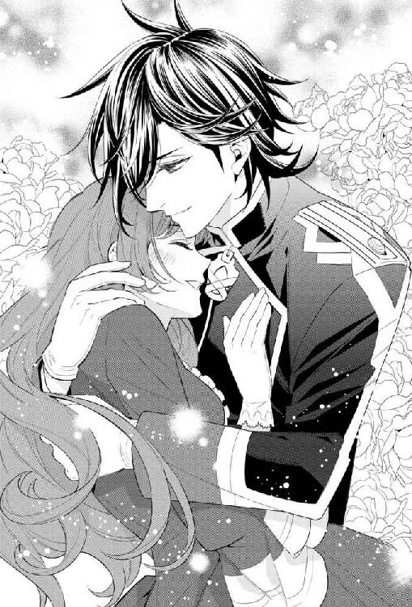

| ナタリア姫と忠実な騎士【SS付】【イラスト付】 (フェアリーキス) | |
| ナツ | |
| 株式会社ジュリアンパブリッシング (2016) | |
この物語はフィクションであり、実在の人物・団体・事件等とは、いっさい関係ありません。
イラスト・山下ナナオ
プリンセス・ナタリア
いつからだろう。
何をしてもどこか満たされない気持ちが纏わりつくようになったのは。
ナタリアは十六年前に「東の大国」と呼ばれるサリアーデ王国の第一王女として生を受けた。
彼女が生まれる三年前。全国民の期待の中、産声をあげた世継ぎである兄・クロードは、正妃である母に生き写しだと、宮中の誰もが褒めそやす美貌を備えている。十五で成人の儀を執り行った時など、王家の正装を身に纏った彼を見て、その場に居合わせた女官らが一斉に倒れたというのは有名な話だ。
サリアーデ王室の男子は、成人後いずれかの騎士団に所属することになっている。成人と同時に立太子の儀も済ませたクロードは、全ての騎士団を束ねる長という肩書きを得ることになった。濃紺のロングコートはどの騎士団のものでもない。強いて言うなら、代々王太子のみが纏うことを許される軍服だ。肩章から胸元までを彩る金の飾緒、そして立派な大綬にナタリアは感嘆の息を漏らした。艶やかなプラチナブロンドが、凛々しい軍服姿に一際華を添えている。
兄の記念すべき日ということで、ナタリアも趣向を凝らした華美なドレスを着せられていたのだが、式が進むにつれ自分一人が場違いな気がして、身を縮めた。
ナタリアに遅れること二年で誕生した妹・リセアネも、兄と同じ艶やかなプラチナブロンドと夜明けの星空を思わせる菫色の瞳を持つ美少女で、天使と見まがうばかりの愛らしさを誇っている。暁の姫巫女というのが、彼女の通り名だ。そのあまりに人間離れした容姿から神の御使いではないか、という噂が立ち、つけられた呼び名なのだが、姉の贔屓目を差し引いてもぴったりだとナタリアは思っている。
クロードの成人の儀の時、リセアネは十になったばかりだった。それでもその美貌はすでに抜きん出ており、参列者を陶酔させた。隣に並んだナタリア姫は妹姫の侍女のように見えたと、あとに口さがない者達は囁き合った。
そう。彼らは飛び抜けて美しいが、同じ血が流れているはずのナタリアは違う。第一王女の容姿は、至極凡庸なのである。
現王譲りの濃い茶色の髪はたっぷりとしていて艶やかではあるが、兄妹の白銀の絹糸のような髪と比べればパッとしない。瞳は黒だが、全体的に色素が薄いのか灰色に見えることもある。
目鼻立ちにおいても全ての造作がこじんまりとしており、せいぜい子リスのような愛らしさに喩えることが出来る程度だ。
兄である王太子や妹である暁の姫巫女が、あのように臈たけた美貌でさえなければ、また話は違ったのかもしれない。比べられる対象がすぐ傍にあることも、ナタリアにとってみれば哀れな災難だった。三方揃って接見の間に並んだ様を想像すると、ナタリア一人が血の繫がらない貰われ子のように見えるのは、誰のせいでもない。
──『姉姫は、とても賢くあられて』
──『そう、幼い時分から大変穏やかでお優しく、まさに一国の姫としてふさわしい気品を備えておいででしたわ』
ナタリアの評判をまとめるとこうなる。性格や気性こそ褒められるものの、「美しい」や「可愛らしい」といった外見への賛美にはとんと縁がない。
見た目の美しさだけが人の価値の全てではないと神様は教えているのだから、きっと私はこれでいいのだ。やりきれなくなると、ナタリアはそう自分に言い聞かせた。他者が持ち合わせている生来の宝を、我がものにすることなど誰にも出来はしない。
賢王と名高い現国王の揺るぎない統治のお陰で、豊饒な大地は多くの民をすこやかに育んでいる。周辺国との関係も良好。貿易港としても屈指の観光地としても名高いルザンの街には、今日も多くの外国人旅行者や商人が溢れかえっていることだろう。
安定した王政と豊かな物資に守られ、宝石のごとく煌めく国・サリアーデ。
そんな平和な大国に長姫として生まれ落ち、何不自由なく育てられてきた。年を重ね物事を知るにつけ、自分は特別恵まれているのだと、ナタリアは実感するようになった。
それでも幼い日に植えつけられた劣等感は、影のように剝がれない。ふとした拍子に醜い顔を覗かせ、彼女を苦しめるのだった。
その日も発作的な気鬱に悩まされ、ナタリアは王宮の中庭にいた。
きっかけとなったのは、些細なことだ。ナタリアのパッとしない顔立ちを、とある貴族の娘が陰で笑っていたらしい。わざわざ耳に入れてくれた従姉妹に「仕方ないわ。本当のことだもの」と気丈に答えたナタリアだったが、内心酷く落ち込んだ。自分で弁えていることでも、他人から言われると殊更情けなさが身に沁みる。だが来年社交界にデビューすれば、陰口では済まないこともよく分かっていた。
ここではないどこかへ行きたい。
誰も私を知らない土地へ行き、そして小さな家に住むの。刺繍や裁縫の腕には自信があるから、小物でも作って生計を立てるのはどうだろう。兄や妹と引き比べられることなく、一介の村娘として静かに暮らせたら......。
実現するはずのない空想に身を任せ、整えられた初夏の薔薇に手を伸ばす。香りを味わおうと茎を摘んだ瞬間、鋭い痛みが指先に生まれた。その痛みが、先日の出来事を呼び水のように引き寄せる。
──『あなたのような方こそ、我が国の誉です』
慰問に訪れた孤児院の院長は、ナタリアを評してそう言った。
第一王女として、常に民に気を配る愛情深いプリンセス。王族の理想的な姿が、彼の眼には映ったのだろう。
過分な褒め言葉に、ナタリアの胸はキリキリと痛んだ。ありがとう、と精一杯の笑みをこしらえ謝辞を述べたものの、頰は引きつっていなかっただろうか。
棘に刺された指を目の前にかざし、ナタリアは深々とため息をついた。
慰問や慈善事業を行うのは、力ある者の当然の義務なのに。それにあれほど愛らしい子供達に会えるのなら、誰だって喜んで行くはずだ。
実はそう思わない王族もいるし、ナタリア姫の慰問は責務の範疇を超えていた。
人肌を恋しがる幼い子供達を一人一人抱き上げ、絵本を読み聞かせたり、ボールの投げ合いに興じたり。予定時間を過ぎても、約束を全て果たすまでは帰ろうとしない。ドレスが汚れることも厭わずしゃがみ込み、目線を合わせながら楽しげに話を聞いてくれる王女に、子供達は皆夢中になった。
その様子を見守っていた院長が感激するのも無理のない話だったのだが、当の本人は気づいていない。
指先に浮かんだ血を見つめながら、ナタリアがより一層沈み込みそうになったその時。
ガサリ、と背後の茂みが揺れた。
「おや、こんなところにいたのだね、私のナタリーは」
「兄様！」
思いがけないテノールの響きにびくりと身がすくむ。ナタリアは手早く指先にハンカチを巻きつけると、何事もなかったかのような態度で振り返った。
「探して下さったの？ お手を煩わせてしまったわね」
「可愛い妹を探すのがなんの苦になるものか。しばらく王宮を離れることになりそうだから、その前にお前と少し話しておきたくてね」
クロードは優しい手つきでナタリアの肩を抱き、浮かない顔の妹を狭い生垣の間から連れ出した。
開けた場所に出ると、そこにテーブルと椅子を運ぶよう指示を出す。どうやら彼は中庭で茶会を開くつもりらしい。大勢の使用人達がどこからともなく現れ、見事な手際で支度を整えた。急遽用意されたとは思えない薫り高いお茶と、焼き立てのお菓子まで運ばれてくる。給仕する侍女達をクロードがねぎらうと、微かな悲鳴に似た声があちこちであがった。
王太子が側仕えを許しているのは侍従と騎士のみ。どれほど憧れようと、侍女達がクロードに近づく機会はほとんどないと言っていい。ナタリアもそのあたりの事情は知っているものだから、必要以上に多くの侍女が集まってくるのを咎めたりはしなかった。
ナタリアが席につくのを待って、クロードも腰を下ろす。そしてそのまま、人払いを済ませた。
一体なんの話なのかと緊張するナタリアをよそに、いそいそと集まってきた侍女達はがっくりと肩を落としながら去って行く。
王宮のしかも本宮に近い中庭ということで、安全を確信したクロードは王太子付きの騎士達をも遠ざけた。軽く礼を執り、その場を離れようとする彼らの中に見慣れた黒髪を見つけ、ナタリアは顔に喜色を浮かべた。黒髪の騎士・エドワルドは、ナタリアの憧れの人なのだ。そんな妹の表情の変化に気づかないクロードではない。
「エドには、ここにいてもらった方が良かった？」
こっそり耳打ちし、王太子はニコリと無邪気な笑みを浮かべる。ナタリアはますます頰を染め、扇で兄をぶつ真似をした。
「兄様ったら、からかわないで」
「ごめん、ごめん。エドワルドだけ呼んだら、フィンが拗ねてしまうな」
フィンと呼ばれた青年も彼らの幼馴染で、エドワルドと同じくクロード付きの騎士を務めている。幼い頃はリセアネも含めた五人で、よく遊んだものだ。
だが、クロードが立太子の儀を済ませたあとは、厳然たる身分差が彼らを隔てるようになった。呼んだとしても、人目のある場所で二人の近衛騎士が主人と同じ席につくことはない。
「昔とは違うことくらい、私にも分かっていてよ。それより、お話って？」
「そうそう。視察に行くことが決まりそうなんだが、お前はどうするかと思ってね」
「......もしかして、レペルへ？」
レペルというのは王都の北に位置する小さな山村だ。少し前の大雨で土砂崩れが起こり、かなりの被害を被ったと聞いている。
「レペルの領主は、モバーク子爵だったかしら。ご高齢でいらっしゃるし、確かお子様には恵まれなかったとか。復旧の采配をお一人で担うのは大変でしょうね」
「よく覚えていたね。そう重要な土地ではないのに」
目を丸くしたクロードが、ナタリアにわざとそんなことを言う。
「この国に重要でない土地などありませんわ、王太子殿下。全ての国民が守るべき我らが至宝。そうですわね？」
「もちろんだよ、ナタリア。さすがは我が妹」
目元を和ませたクロードは、ナタリアの手を取り、励ますように握り締めた。
彼女が中庭へ逃げてきた理由は、王太子にはお見通しだった。妹姫の陰口を叩いた娘を探し出し、処罰することは簡単だが、それで気が済むのはクロードだけだろう。わざわざ本人の耳に入れる従姉妹姫にも困ったものだが、皆に愛されているナタリアが気に入らないのか、昔から意地が悪かった。ある意味誰より哀れな姫だ、とクロードはあっさり従姉妹姫を頭の中から追い出した。
問題はナタリアの自尊心の低さだ。家族がどんなに言葉を尽くして褒めても、ナタリアは困ったように微笑むだけだった。
心根の優しい妹を、クロードは心の底から愛しんでいる。と同時に、彼女の得難い気質を尊敬もしている。謙虚さや賢さ、そして慈愛。誰にでも備わっているものではない。もっと自信を持ってくれたらいいのだが。
そして彼女を大切に思っているのは、何もクロードだけではない。
先ほどの話を試しにリセアネやエドワルド達にするとしよう。暁の姫巫女は、烈火のごとく怒り狂うだろう。エドワルドはぎりと拳を握り締めるだろうし、フィンはふうんと気のない返事をしながらも犯人を探し当て、彼なりの報復を与えるに違いない。
「では、共に行ってくれるかい？ これといった仕事はないんだ。被災地に王族が関心を示していると周知させることに意味がある。小さな村だろうが貧しい土地だろうが、陛下が見放すことは決してない、とね」
「ええ、喜んで」
ナタリアは、花開くような笑みを浮かべ兄の手を握り返した。自分にも何か出来ることがある、と思えるのは嬉しいことだ。だが、ナタリアはすぐに綻んだ表情を引き締め、きゅっと唇をすぼめた。こうしている間にも民が傷つき、泣いていると思うとやりきれない。
「大丈夫だよ、ナタリー。幸い、亡くなった方はいないそうだ。沢山の支援物資を持って、みんなの笑顔を見に行こう」
明るい声で宣言した兄を見上げ、ナタリアはようやく強張った表情を解いた。
エドワルド
幼い頃、ナタリアは真剣に自分が「拾われ子」ではないかと心配していた。
リセアネが生まれ成長すると、その疑いはますます深まった。兄と妹はよく似ているのに、何故だろう。
鏡の前に立ちじっと覗き込んでみても、奇跡は起こらない。みずぼらしい小さな女の子が不安げにこちらを見返すだけだ。
「かあさま。ナタリー、このかみ、ヤダよう」
五歳の誕生日を何日か過ぎたある日。
第一王女の為にこしらえられた初めてのティアラを前に、ナタリアはボロボロと涙を零して王妃である母に訴えた。
「このめめも、ヤダ。にいさまとかあさまとリセと、おんなじおめめがいいのにっ！ どうして？ ナタリーだけどうして？」
「急にどうしたというの。誰かに何か言われたの？」
みっともなく泣き出す羽目になったいきさつは、誰にも言いたくなかった。
王宮に遊びに来ていた年上の顔馴染み数名に取り囲まれ、本当のことを言われただけだ。
『ナタリア姫にティアラなんて似合わない』
『そうよ。もっと綺麗なお姫様がかぶるものよ』
王女の冠を羨んだ貴族子女達が嫉妬から発した言葉だったが、ナタリアには分からなかった。突然の糾弾から理解出来たのは、人から見ても自分は綺麗なお姫様ではないということ。
肩を震わせしゃくりあげるナタリアを前に、王妃はおろおろと両手を揉み絞った。
「ナタリーの髪だって素敵よ。おめめもとっても可愛いわ」
なんとか娘を宥めようと王妃が口にした瞬間、ナタリアの癇癪は破裂した。心から信頼している母に誤魔化されたと感じたのだ。何が素敵なものか。
『クロード殿下とリセアネ姫の髪は、月の光みたいに綺麗なのに、あなたは違うのね。ううん、髪だけじゃない。顔だって全然似てない。みんな言ってるわ。ナタリア姫は出来損ないだって』
せせら笑いと共に投げつけられた嘲りの言葉は、ナタリアの柔らかな心を鋭く切り裂いた。
どうしてそこまで言われるのだろう。気づかぬうちに何かしてしまったのだろうか。それとも、そこにいるだけで他の人を不愉快にさせるほど、自分は醜いのだろうか。
「もういいっ！」
幼いなりに自分が酷い我が儘を言っていると知っていたし、今にも泣き出しそうに美しい眉をひそめる母をこれ以上困らせたくはなかった。
だが、その日はどうしても我慢出来なかったのだ。あんなに楽しみにしていたティアラが、呪いの冠のように見えた。
兄が、妹がねたましく、そんな自分が恐ろしくてたまらなかった。
制止しようとする大勢の声を振り切って、ナタリアは部屋を飛び出した。走って、走って。
どこでもいいから、兄や妹と比べる人のいない場所へ隠れてしまいたかった。
どのくらい走っただろう。
気がつけば、ナタリアは王宮の裏手にある寂れた庭園の小屋の前まで来ていた。庭師が手入れ道具をしまっている小屋だと、ナタリアも聞いたことがある。
ここまで来れば、しばらく一人になれるだろう。
はぁはぁと肩を上下させながら、ポーチを探りハンカチを引っ張り出す。頰をしとどに濡らす涙をぐいと拭うと、余計に涙が溢れた。もう我慢なんてしない。
ナタリアは思い切り大きな声で泣くことに決めた。
「みんな、きらいっ！ だいっきらいっ！」
王女としての教育を受けているナタリアは、感情をあらわにしたり、誰かの悪口を言ったりすることを厳しく禁じられてきた。
だけど、今日だけは特別。ここには誰もいないから。
「にいさまも、リセも、かあさまも......ううん、ナタリーが、いちばんきらいっ！」
幼いナタリアにも分かっていた。本当は誰も悪くない。
ちゃんと分かっている。自分が不器量なのは、誰のせいでもないのだ。
それでも、心に食い込むこの苦しみが誰のせいでもないのだとしたら、なんて世界は残酷なのだろう。
美しく生まれたかった。せめて人に笑われたり、嫌われたりしないくらいに。
おいおい声をあげて泣き続けていると、ふと誰かの気配を感じた。
「──大丈夫か？」
ぐっしょりと濡れたハンカチ越しに目を上げると、そこには黒髪の男の子が立っていた。困惑したように眉根を寄せ、大きな瞳を瞬かせている。
「もしかして、ナタリア姫？」
兄くらいの年だろうか。仕立ての良さそうな上着を着ている。ピカピカに磨かれたブーツも上等で、どこかの貴族の子供だとすぐに分かった。
きりりとした眉に切れ長の瞳が印象的で、一度会えば忘れることが出来ない美少年だ。兄以外でここまで造作の整っている男の子を見たのは初めてだった。驚きのあまり固まっているナタリアに焦れたのか、少年は片膝をついてナタリアの前にかがみ込んだ。
「そのハンカチ、もうだめだな。これ使えよ」
ぶっきらぼうな口調で、半ば無理やり大きなハンカチを握らせてくる。温かな手の感触に、ナタリアはようやく我に返った。
「わたしのこと、しっているの？」
「ああ。俺はエドワルド。君の兄さんの友達だ」
エドワルドと名乗った少年はロゼッタ公爵家の長子で、父は宰相を務めていた。
その父に連れられ王宮にやってきたはいいものの、知り合いがクロードしかいない中、身を持て余していたのだ。同い年らしき少女達とはどうにも話が合わない。一言二言会話を交わしただけで、黄色い悲鳴をあげながら部屋の隅へと走り去り、こちらを遠目に見ながら何事かを熱心に囁き合う彼女達にエドワルドはすっかり閉口した。見世物気分はもう十分に味わった。どうにかこの場を抜け出せないものかと思案していた彼は、ナタリア姫搜索に加わった方がまし、という結論に至ったのだった。
エドワルドは目の前の少女の腕を引っ張り、立たせてやった。パッと見たところ大きな怪我はしていない。ドレスの裾についた土や草を払ってやれば、力加減が強過ぎたのかナタリアは大きくよろめいた。
「わるい」
バツが悪そうに顔をしかめる少年に、ナタリアは小さく首を振った。ぐっしょりと濡れたハンカチをポーチに仕舞い込み、少年に借りた大きなハンカチで涙を拭き取る。ナタリアが落ち着くのを待って、エドワルドは声をかけた。
「クロードが真っ青な顔で探してたぞ。一緒に戻ろう。悪いことをして隠れてたのなら、一緒に謝ってやるから」
ナタリアはひゅっと息を呑んだ。
先ほどまでの荒れ狂った感情から解放されたはいいが、落ち着くと自分の愚かな言動がありありと蘇ってくる。みっともなく喚きちらし、母の許可なく部屋を飛び出し、走ってはいけないと教えられている廊下を全速力で走った。皆、呆れ果てたに違いない。
自分の想像に怯えたナタリアの目尻から新たな涙が零れ落ちる。
「──もうちょっとしてから、かえってもいい？」
エドワルドは躊躇いがちに手を伸ばし、震えるナタリアの背中を優しく叩いてやった。弟を泣きやますのに使う手だが、女の子にも効くのだろうか。
ナタリアは目に涙をいっぱい溜めたまま、エドワルドを縋るように見上げてきた。庇護欲をかき立てずにおかない愛らしい仕草に、エドワルドの心臓はどきりと跳ねた。思わず手を引いてしまったが、動揺している理由は自分でも分からない。平然とした態度を取り繕い、ポンポン、と頭を撫でてやった。
「ご、ごめん......なさいっ」
「大丈夫だ。もう泣くな」
「みんなにはいわないで。ないていたこともわるくちも。ないしょにして？ あしたから、ちゃんといいこにするから」
「もちろん、誰にも言わない」
言葉数こそ少ないがエドワルドの表情は真摯なものだったので、彼は信じて大丈夫な人間だ、とナタリアは判断した。
「お手をどうぞ、姫」
エドワルドが覚えたてのマナーを披露すると、ナタリアは泣き腫らした目を丸くし、それからくすぐったげに笑った。
気取ったところのない彼女の笑顔には愛嬌があり、エドワルドはひそかに自分の機転を誇らしく思った。笑ってる方がうんと可愛いな。持ち前の無愛想さを咎められることの多いエドワルドだったが、目の前の王女は自分を怖がらない。ふっくらした手が迷わずエドワルドの手に重ねられる。自分や弟達とは違う、真っ白で綺麗な手だ。
エドワルドは気恥ずかしさを堪えながら、ナタリアの手を引き外庭を抜けた。
一方ナタリアは、エドワルドの親切さに感動を覚えていた。
困った時にやってきて、サッと助けてくれるなんて、まるで物語に出てくる騎士様みたいだ。
憧れの眼差しで彼を見上げると、照れくさそうな笑みが返ってくる。端整な顔立ちのせいで最初はきつく見えたが、微笑むと一気に優しげな顔になることを発見し、ナタリアは嬉しくなった。
家族や大人以外で、初対面からこんなに丁寧に扱われたのは初めてだった。大抵の子は先にクロードを知っているものだがら、全く似ていないナタリアの凡庸な容姿にぎょっとし、それから憐れむか馬鹿にするのが常だった。会ったばかりの人だと思えないほど、彼の前では息がしやすい。ナタリアにとってそれは新鮮な驚きだった。
ぎこちなく手を繫ぎ合い、二人は外庭を抜ける。
本宮への入口で、きょろきょろとあたりを見回しているクロードを見つけ、エドワルドは驚いた。なんでも器用にこなし、どんな時も余裕ある態度を崩さない友が、額に汗を滲ませ髪を振り乱している。
「ナタリー！」
エドワルドが声をかけるより早くこちらに気づいたクロードは、猪のように突進してきた。
その勢いに驚いたのか、ナタリアは身を硬くし、エドワルドの背中に隠れてしまった。背中にくっついてきたのが弟だったら、エドワルドは容赦なく引き剝がしただろう。だが、相手は王族でしかも可愛らしい女の子だ。どうしたものか。困ったエドワルドは一瞬躊躇したが、片手を広げてクロードから王女を庇った。
彼の背中にナタリアの小さな手が添えられる。図らずも王女を守る騎士の役目を得られたエドワルドは、胸が熱くなるのを感じた。
「なんの真似だ、エド」
「......ご挨拶だな、クロード。それが妹を探してきた友へのねぎらいか？」
正論で返され、クロードはグッと喉を詰まらせた。
「助かった、ありがとう。すみやかに妹を返せ」
完全な棒読みだ。
「......って言ってるけど、どうする？」
エドワルドは面白くなり、わざと親しげな調子で背後のナタリアに問いかけた。
きゅっと上着の裾を摑まれる感触がする。すぐさま頭を撫で、僕がついていると慰めたくなった。
「おこってないか、きいてくださる？」
「怒ってないか？」
「聞こえてる！」
今にも地団駄を踏みそうなクロードに、エドワルドは笑いを嚙み殺した。これ以上は洒落にならない。
エドワルドがくるりと振り返ると、ナタリアは身を縮こまらせ一歩下がった。
「大丈夫。クロードは怒ってないよ。君が心配だっただけだ。......ほら、行きな」
膝に手をつき、腰をかがめてナタリアと視線を合わせる。
エドの表情を見て、彼女は安堵したように頰を緩めた。花が綻ぶような愛らしい笑みに目を奪われているうちに、頰に何かが押し当てられる。柔らかくて、いい匂いのする──。
「ごしんせつはわすれません。みつけてくださって、ありがとう」
家族間で交わす親愛のキスをエドワルドの頰に与え、ナタリアは軽く膝を折った。その優雅な仕草は、幼くともさすが王女だと圧倒される気品を帯びていた。
「ありがとう、エド」
ようやく妹をその手に抱きしめたクロードは、面白くないという表情を隠そうともせず、エドワルドに感謝の意を示した。
エドワルドとナタリアにとっては、初めての出会いとなる印象深い出来事だったわけだが、王妃にとっては違った。
気づかないところで娘が苛められていたと知った王妃は、柳眉を吊り上げた。
見聞を広めさせることは大事かもしれないが、幼い我が子が心ない言葉で傷つけられるのを黙って見ているわけにはいかない。相手がいくら分別のつかない子供とは言え、許せることと許せないことがある。
「ナタリアの髪は陛下譲りですのよ。ええ、目も。そっくりでしょう？ ナタリアの容姿をおおっぴらに馬鹿にする者は、陛下をも侮辱しているのですから、たとえ子供であっても厳罰に処すべきだと考えておりますの」
当時王宮に出入りを許されていた貴族子女の両親を一堂に集め、王妃は険を含んだ目つきで彼らを睥睨した。美人は怒るとものすごく怖い。彼らは、脂汗をかいて震え上がった。誰とは明言していないが、王妃は中傷した者を知っているに違いない。
「王女の振る舞いや言動に難があるのなら、それは諫言となりましょう。ですがこの度のことはそうではない、とわたくしは判断致しました。人の価値はその心根にあると彼女達が理解出来るようになるまで、本宮への立ち入りを禁止します。よろしくて？」
そこで異議あり、と声をあげられる猛者はいなかった。これ以上王妃の逆鱗に触れてはならない。そそくさと謁見の間を退出したあと、彼らは屋敷に戻りきつく子供らを叱った。
ナタリアはしばらくして、王宮に来ていた侯爵家や伯爵家の令嬢方をいつの間にか目にしなくなったことに気がついた。不思議に思って尋ねたが、母も家庭教師らも揃って「忙しいのでしょう」とやんわり答える。そのうち、ナタリアは尋ねることをやめた。毎日が以前よりうんと楽しくなったからだ。
ナタリアの新しい遊び仲間に任命されたのは、エドワルドと彼の親戚筋に当たるパッシモ伯爵家の一人息子・フィンだった。茶色の濃い瞳に金色の巻き毛のフィンに初めて紹介された時、ナタリアは上手く自己紹介が出来なかった。
エドワルドの親戚で兄とも仲のいい友達だと前置きされたのが良くなかった。少しでも好印象を与えたいとかえって緊張してしまったのだ。
「は、はじめまちて」
ナタリアは絶望のあまり、真っ青になった。クロードとエドワルドは、噴き出すのを堪える為、お互いの足を踏みつけている。
「はじめまして、姫。どうぞよろしく」
ところがフィンはクスとも笑わず、恭しく一礼するとナタリアの手を取った。そしてそのまま手袋越しに軽い口づけを落とす。
ナタリアははじめポカンとし、それから真っ赤になった。知識として知ってはいたが、年の近い少年にレディ扱いされたのはこれが初めてだったのだ。
「こんなに可愛らしい姫の遊び相手に選ばれるなんて、光栄の至りですよ」
他の誰かに言われたのなら、ナタリアは傷ついただろう。だがフィンの眼差しは柔らかく、心から彼女を賛美していた。
「お、お前なっ」
「こら、妹から離れろ！」
ありがとう、と答えようとしたナタリアの言葉をかき消したのは、二人の少年の叫び声だった。
嫌な予感はしていたが、まさか本当にやるとは思いもしなかった。フィン・パッシモは極度の女性上位主義者なのだ。女の子はみんな女神、というのが彼の口癖で、エドワルドなどはいつもフィンの頭と将来を心配している。
「なんだよ。ただの挨拶だろ、あいさつ」
「お前の挨拶はいちいち気障ったらしいんだよ！」
「大丈夫か、ナタリー。その手袋は捨ててしまおうね」
いっぺんに賑やかになった部屋で、ナタリアはクスクスと笑い出した。明るい笑い声に、三人の少年もつられて相好を崩す。
「なちゃりー！」
幼児椅子に座らされていたリセアネは、大好きな姉の気を引こうと大声をあげた。どうやら仲間外れにされていると気づいたらしい。
「なあに、リセ。ほら、あなたもごあいさつしましょう？」
即座に反応したナタリアは妹に駆け寄り、ふわりとドレスの裾を広げてリセアネの隣にしゃがみ込んだ。姉と目が合ったのが嬉しいリセアネは、さらに近づこうと散々ねぶって湿った手を突き出し、姉姫の髪の毛をわし摑む。
「リセアネ姫様、いけません！」
傍に控えていた乳母が慌てて駆け寄ろうとするのを、ナタリアはおっとりと制した。
「いいの。なんてかわいいおててでしょう。ねえさまによくみせて？ おにいちゃまたちにも、こんにちはしましょうね」
手馴れた様子でリセアネの拳を広げさせると、髪の代わりに自分の指を優しく握らせ揺らす。リセアネはキャッキャと笑い声をあげた。
初めてフィンと会うのだから、と念入りに身だしなみを整えていたことを知っているナタリア姫付きの侍女は、ほうと息を漏らした。
髪型を台無しにされようが、頰を涎まみれにされようが、ナタリアが声を荒らげることはない。自身もまだ幼いのに、姉として妹を慈しもうとするナタリアに使用人達は心から感じ入っていた。
「こんにちは、リセアネ姫」
「よろしくな」
ナタリアに倣って、フィンとエドワルドも膝をつきリセアネを覗き込む。大勢の気をいっぺんに引けて嬉しいのか、リセアネは椅子の肘掛をバンバン叩いて喜んだ。
それからの数年はあっという間だった。
まずリセアネが幼児から脱し、彼らの遊び仲間に加わった。
なんでも一番じゃないと気が済まないリセアネに、わざと負けてやるのがクロードとナタリアだ。甘やかしてばかりでは良くない、という王妃の意向のもと、エドワルドとフィンは手加減しなかった。
だがクロードは知っていた。エドワルドはナタリアを相手にする時だけ、巧妙に力を抜いて勝ちを譲ることを。
「うーん。投了だ。ナタリアは強いな」
「そんな！ たまたま運が良かったのだわ。お相手して下さってありがとう」
はにかんだ笑みと共にナタリアは毎回、律儀に礼を述べる。遊戯盤を片づけるエドワルドの頰が緩んでいることに、クロードもフィンも気づいていたが、口に出すと逆上する為、こっそり目配せし合った。ナタリアの笑顔と礼の言葉欲しさに、年上の自尊心を投げうつ男なのだから、あまり刺激すると我が身が危ない。
「いいのか、クロード。お前の妹なのに」
「エドだからな。滅多なことにはならないだろう。フィン、お前なら絶対に許さなかった」
「酷い贔屓を俺は見た！」
「なにをコソコソ話している」
「べっつに～」
「エドワルドは本当にうちの妹が好きだな」
「なっ！ なにを適当なことを！」
幼馴染二人にからかわれ、真っ赤になって弁明するエドワルドをナタリアは遠目に見つめ、それから視線を妹に移した。
彼がボードゲームで手加減をしてくれていることには気づいている。リセアネ相手には容赦しないのに。プリプリ怒るリセアネを見て、エドワルドは目を細めて笑うのだ。可愛くてたまらないのだろう。それもそのはず、リセアネは本当に誰より美しい姫なのだから。
「姉さま、すごいわ！ エドに勝つなんて！ 私の仇を取って下さったのね」
何も知らないリセアネは、無邪気に喜び尊敬の眼差しでナタリアを見上げてくる。そう、こんなにも愛らしいのだ。エドワルドがリセアネに惹かれるのも当然ではないか。
ナタリアにその自覚は薄いのだが、彼女もクロード並みの姉馬鹿だった。リセアネに興味を持たない人などいない、と盲目的に信じるほどに。
決して鈍くもなくむしろ敏い方なのだが、ナタリアはこと自分に関しては一切の希望を捨てていた。家族以外が自分に特別な感情を持つことはない、と頑なに信じていると言ってもいい。その為、エドワルドのほのかな想いがナタリアに届くことはなかった。
親しく温かな交友は、クロードとエド、そしてフィンが同時に学校に入るまで続いた。
クロードは隣国・ラヴェンヌの王立学校への留学が決まり、エドワルドとフィンは王都の隣に位置する直轄地・ロザールにある騎士学校へ入学することになった。
兄が同盟国へ留学することはだいぶ前から知らされていたナタリアとリセアネだ。代わりに向こうの王子がこちらの王立学校へと入学するらしい。政治的な思惑も絡んでいるのだろう。寂しくなるが仕方ない、と納得していた。なんと言ってもクロードは次代の王なのだ。だが、エドワルドとフィンまで一気にいなくなってしまうとは予想していなかった。
ある日の茶会でそれを知らされた二人の姫は、驚き、そして寂しがった。隣に座ったフィンの腕を摑み、リセアネは美しい瞳を潤ませた。
「ロザールならそんなに遠くないわ。今までみたいに会いに来て下さるんでしょう？」
「うーん、そうしたいけど、どうかな」
「騎士学校は、全寮制だ。入ったら卒業するまで基本的に出ることは許されない」
ナタリアの隣に陣取ったエドワルドが淡々と説明すると、ついにリセアネはわっと泣き伏してしまった。事の成り行きを予想したフィンがリセアネのカップを避難させたあとだったので、熱い紅茶がテーブル中に撒き散らされる惨事は避けられた。
「エド。もっと他に言い方があるだろう」
クロードから文句をつけられても、エドワルドは平然としている。
「期待を持たせておいて、約束を果たせない方が残酷だ」
年を経て、エドワルドの生真面目さには磨きがかかっていた。ジャケットをきっちり羽織り、クラヴァットを型通りに締めた服装からもそれが窺える。
一方、フィンはわざとクラヴァットを緩く締め、シャツの第二ボタンまでを開けた格好だった。マナー違反すれすれの気障な着崩しが似合うと、自分でも分かってやっているのだから質が悪い。
少年から青年へと移行する直前の彼らからは、以前にはなかった色香が漂い始めており、ナタリアを混乱させた。
特に、日ごと大人びていくエドワルドに戸惑いを感じる。じっと見つめていると頭がぼうっとしてくることに気づき、ナタリアはあまり彼を直視しないようにしていた。
ひくひくとしゃくりあげ、肩を震わせるリセアネを見てエドワルドは髪をかきあげた。困った時の彼の癖だ。
こんな時、思ったままを素直に口に出来るリセアネが羨ましい。泣こうが喚こうが、彼女の愛らしさは少しも損なわれないのだから。自分が真似しようものなら、目もあてられない有様になるだろう。
「──リセ。我が儘を言ってはだめよ。気持ちはよく分かるけれど」
「だって、姉さま！」
リセアネはたまらず席を立ち、姉姫のもとへと駆け寄った。
ナタリアも立ち上がり、優しく妹を迎え入れる。真っ白なハンカチでリセアネの目元を拭ってやりながら、ナタリアは明るい声で提案した。
「リセが寂しくないように、私が沢山遊んであげる。もちろん、お勉強のあとによ？」
「じゃあ、ポシェットに刺繍して下さる？ それから、クッキーも焼いて欲しいの」
ナタリアは十二の時から、孤児院や診療所を訪れるようになっていた。誰かに勧められたわけではなく、何か出来ることはないかと自ら志願したのだ。慰問先へ持参する刺繍を施した小物や手作りの菓子などを、リセアネはどうやら羨ましく思っていたらしい。
「もちろん、いいわよ。クッキーは一緒に作りましょうか。リセの好きな型で抜くといいわ」
「嬉しい！ 姉さま、大好き！」
見る者を蕩かすような極上の笑みを浮かべ、リセアネはナタリアにぎゅっと抱きついた。
「良かったね、リセ。落ち着いたのなら、新しいお茶を頼もうか？」
姉妹のやり取りを微笑ましく見守っていたクロードが、やんわりリセアネを促す。女性陣が立ったままなので、お茶会は中断されていた。
「ええ。私、林檎のジャムを落とした甘い紅茶が飲みたいわ」
すっかり機嫌を治したリセアネは、軽やかな足取りで自分の席へと戻って行く。エドワルドは何度か意味のない咳払いを繰り返したあと、再び彼の隣へとおさまったナタリアに話しかけた。
「ナタリアも、寂しい？」
「ええ、当たり前じゃない」
どうしてそんな分かりきったことを聞くのだろう。きょとんと灰黒色の瞳を見開いたナタリアに、エドワルドは唇を引き結んだ。自分でもなんと答えて欲しいのかは分からない。ただ、そんなあっさりとした返事が欲しいわけではなかった。
「そうか。......では、手紙を書いてもいいだろうか」
「嬉しいわ。私も書くわね」
ナタリアが両手を合わせて喜んだのを見てエドワルドの胸は高鳴ったが、次の瞬間舞い上がった気持ちは地に落とされた。
「もちろん、兄様にもフィンにもよ。私達のことを忘れないでね」
まだ入学まで間があるというのに、すっかり別れの段取りをつけてしまっているナタリアに、エドワルドは形容し難いもどかしさを感じた。
ほんの一瞬だけ合った視線は、とっくに外れてしまっている。
気のせいでなければ、ナタリアはここ最近エドワルドに対してよそよそしい。気づかぬうちに何かしてしまったのだろうか。まさか己が無自覚に彼女を誘惑しているとは思ってもみないエドワルドは、深々とため息をついた。
「期待を持たせる方が残酷、か。なるほどね」
「本当にその通りだなぁ」
エドワルドの一喜一憂を見逃さなかったクロードとフィンが、ここぞとばかりに追撃してくる。
おおっぴらに言い返すわけにもいかず、エドワルドはぎりと彼らを睨んだが、そんな素直な反応は悪友二人を面白がらせただけだった。
そして時は過ぎ、三人は王宮から姿を消した。
彼らがいなくなった王宮は、明かりが消えたようだった。周囲が何かと気を配ってくれなかったら、ナタリアも沈み込んでいただろう。兄の優しい手が、フィンの快活な笑い声が、そしてエドワルドが恋しくてたまらない。十一歳のリセアネは、半月ほど毎晩泣いてはナタリアの寝台に潜り込んできた。
エドワルドだけでなく、クロードやフィンもまめに手紙を送ってくれたのが救いだ。それに、あれほど帰れないと言っていたにも拘わらず、エドワルドとフィンは、年に一度の長期休暇には必ず揃って王宮を訪れてくれた。
姉妹は彼らの休暇を指折り数えて待ちわびた。
久しぶりに目にするエドワルド達は、ナタリアの記憶の中の彼らをその都度塗り変えていった。あれほど親しく交流していたというのに、見知らぬ男性に対するような気後れを覚え、ナタリアは後ろめたく思った。リセアネは何も感じていないのか、無邪気にはしゃいでいる。
「変わりはないかい？ 可愛い姫様方」
騎士学校で何を習っているのか、ますます垢抜けたフィンが軽口を叩くのには、まだナタリアも笑って返せる。
対応に困るのは、エドワルドに対してだ。もともと背は高い方だったが、すらりと伸びた手足はよく鍛えられて力強く引き締まり、剣を扱う手は節くれだっている。精悍な騎士見習いの青年となったエドワルドに、ナタリアは戸惑った。
「ただいま」
「......おかえりなさい」
エドワルドが傍に来ると、ナタリアはその存在感に圧倒されてしまった。ぎこちなく挨拶をすれば、エドワルドは酷く嬉しそうに微笑んでくれる。たったそれだけのやり取りで、ナタリアの頰は何故か熱くなってしまうのだった。
エドワルドの方も、見るたびに女性らしく変わっていくナタリアに感嘆していた。ふとした拍子に見せる仕草もそうだし、話し方もそうだ。
彼女が襟ぐりの開いたドレスを着ている時など、目のやり場に困ってしまう。胸元はふっくらとしているのに、腰は折れそうなほど細い。コルセットの賜物だとしても、あれでは締め過ぎではないだろうか。初めて会った時はふんわりと丸く、まるで縫いぐるみのようだったのに。
ところがエドワルドの見当違いの心配をよそに、ナタリアの血色はいいし、苦しげな素振りも見せない。一体どうなっているのだろうとドレスのラインを視線で辿ると、フィンから思い切り肩を小突かれた。
「じろじろ見るんじゃない。ナタリアが困ってるだろう」
「す、すまない。ただその」
「その、なんだ？」
まさか、ナタリア姫の胸と腰の比率がおかしいなどとぶちまけるわけにはいかない。なんでもない、と首を振るエドワルドを見て、フィンは呆れ顔になった。
「ここにクロードがいたら、お前、死んでたぞ」
「このドレス、どこかおかしくて？」
ナタリアはナタリアでエドワルドの不審な態度を勘違いし、自分のドレスを見下ろしながら表情を曇らせている。ああ、面倒くさい！ そう叫びたいのを堪え、フィンは、
「いや。よく似合ってるよ」
とエドワルドが言いたかったであろう台詞を横取りした。
リセアネの方は、成長はしているものの相変わらず妖精じみている。すんなりした細い手足はまるで人形のようだ。
「私も姉さまみたいな胸が欲しいわ。詰め物をしないとドレスがずり落ちてしまうのだもの」
リセアネにとって、エドワルドもフィンも等しく兄のようなものだった。異性という意識がない為、平気でそんなことを口にする。
口に含んでいたお茶を噴き出しそうになり、フィンとエドワルドは盛大にむせた。
「リセったら！ もう、知らない！」
熟れたコケモモのように頰を上気させ、ナタリアはぷいと顔を背けた。恥ずかしがっていつになく子供っぽい受け答えをするナタリアを、エドワルドは新鮮な気持ちで見つめた。彼女が何をしても何を言っても魅力的に感じてしまう。
エドワルドが騎士を目指すきっかけを作ったのは、クロードだった。幼い頃から周囲の期待を一心に集めながら、その重圧に折れず、たゆまぬ努力を続ける彼の強さに感心したし、若き王子の道を切り拓く手助けが出来ればと思った。父であるロゼッタ公爵はまだまだ若いし、後継者を今すぐ必要としているわけでもない。領地で安穏と暮らすよりは、自分の力で身を立てたいという思いもあった。
目標に近づく為がむしゃらに磨いてきた剣の腕だったが、強くなればナタリア姫を守ることが出来ると気づいた。いや、違う。守りたいのだ。一度自覚してしまえば、もう駄目だった。エドワルドが温めてきたほのかな想いは、くっきりとした願望へと変わってしまった。──ナタリア姫が欲しい。
彼女が一人で泣かずに済むよう、この手で守れたらどんなにいいだろう。王女と騎士という身分の差はあれど、血筋的に釣り合わないわけではない。
新たな夢を抱くようになったエドワルドだったが、そこではたと肝心なことに思い当たった。ナタリア姫の気持ちだ。こればかりは一方的な努力ではどうすることも出来ない。
会えば、嬉しそうに微笑んでくれる。だが、それはフィンに対しても同じ。二人の思い出の場所である裏庭でエドワルドを待ってくれている時もある。しかし、ただの偶然かもしれない。
実直なエドワルドは、フィンのように『経験を積む』ことも出来なかった。
結局、騎士学校を卒業するまでにエドワルドが出来たことと言えば、自分の気持ちを自覚する、ということだけだった。
二年ぶりに留学から戻ってきたクロードは、一部始終をフィンから聞き出し、
「ほらな。エドワルドなら滅多なことにはならないと言ったろう？」
とご満悦だったが、フィンは親友が気の毒でならなかった。
顔もいい、性格も悪くない、剣の腕は一流で、家柄も申し分ない。
エドワルドがその気になれば、どんな女性でも彼の思うがままなはずなのに、一体何がどうしてこうなった。
エドワルドとフィンは無事騎士の叙勲を受け、近衛騎士団へと配属された。希望通り王太子付きの騎士となることも出来た。ここまでは二人共、思い描いていた予想図通りだ。
フィンはおおむね自分の環境に満足していたので、なんとか不器用な親友の手助けをしてやりたかったのだが、エドワルドはフィンの予想以上に堅物だった。
来年になれば、ナタリアは社交界へデビューしてしまう。そのことの意味を本当に分かっているのか、とエドワルドの首を摑んで揺さぶりたいフィンだった。
王族の結婚は、話が出るのが早い。ナタリアが社交界に姿を現せば、大国・サリアーデの第一王女を娶ろうと、様々な申し込みが舞い込んでくることは当然予想されるというのに。
「なんでもいいから、早く告白しちまえよ。ナタリアが結婚したら手も足も出せなくなるんだぞ」
「ナタリアはまだ十五だぞ！ 結婚だなんて何を考えてるんだ！」
フィンが急かすと、エドワルドは真っ赤な顔で言い返してくる。
お前こそ十八にもなって何を考えてるんだ、と頭を抱えたいフィンだった。
自覚
レペルへは馬車で三日かかった。
馬を飛ばせば二日で着ける距離なのだが、災害見舞いということで持って行く荷物も多い為、どうしても道行はゆっくりとしたものになった。大きな街道に出るたび、どこで聞きつけたのか大勢の民が道脇に押し寄せてくる。となれば、速度を落とさないわけにはいかない。王族が泊まる宿を手配するのは大変なので、クロード付きの侍従はなかなか進まない馬車にキリキリと胃を痛めた。
若き王太子はすでに国のあちこちを回っている為、顔を見たことがあると自慢する民も多い。だが、第一王女はこれまで王都を出たことがなかった。大層慈悲深く優しい姫君であるという噂は、王都の外にも広がっている。
そんなナタリア王女を一目見ようと集まった民衆達は、兄王子と違い至って地味な彼女に驚いたものの、控えめな笑みを浮かべながら手を振って応えてくれるナタリアにすぐに夢中になった。取り澄ましたところは微塵もない。身分の高い若い娘は、貴族でない者には冷たいというのが世間の相場だ。ましてナタリアは第一王女。義務的に馬車からチラリと顔は見せるだろうが、それだけだろうと予想していた人々は、ナタリアの親しげな振る舞いを見て胸を熱くさせた。
「今、私を見て下さったわ！」
「いや、俺に手を振って下さったんだ」
「なにを図々しい！」
王家専属の馬車が通り過ぎたあとも、興奮冷めやらぬ様子でそんなことを言い合っている。警備に当たった地元の騎士達も皆、知らずと笑顔になっていた。確かに人目を引く華やかさはなかったが、ナタリア姫の物腰は優美で王族の気品に満ちていた。改めて彼らは自分の立場を誇りに思った。仕える相手を尊敬出来るということは、とても気持ちのいいものだ。
クロードとナタリアの乗った馬車を守るように馬を走らせていたエドワルドは、周りの雰囲気を察知し、顔をしかめた。
ナタリア姫を自慢して回りたいような、誰にも見せたくないような、相反する想いが胸の中で渦巻き始める。レペル慰問の話をクロードから聞かされた時も、ナタリア姫にはまだ早いのではないか、と思ってしまったエドワルドだ。
ところがナタリアの態度は、エドワルドの心配をよそに終始堂々として立派なもので、賛美する気持ちとどこか寂しい気持ちがないまぜになった。自分が思うよりもナタリアは大人で、そして王族なのだと改めて思い知らされた気分だった。
職務中に余所事を考えるなんて、どうかしている。
エドワルドは軽く頭を振って意識を切り替えた。いくら治安がいいとはいえ、不穏分子が潜んでいる可能性は皆無ではない。手綱を握り直し、あたりを窺う。
「そんな怖い顔すんなよ、エド。ほら、サービスして」
エドワルドに並ぶように馬を進めたフィンは、茶目っ気たっぷりに片目をつむってみせた。それから、手本を示すかのように街道脇に立つ若い娘らに愛嬌を振りまき始める。凛々しい出で立ちの近衛騎士をうっとりと見上げていた娘達は、一斉に湧き立った。
「意味が分からない。ニヤけてないで、しっかり仕事しろ」
「してるよー。ほら、騎士のイメージを良くするのも大事な仕事でしょ。エドだってさっきからずっと女の子達に見つめられてるの、気づいてるくせに」
「ふざけるな」
エドワルドにしてみればいつもの団服の上にマントを纏っただけの格好なのだが、女性陣の視線は熱く彼の体を辿っている。金糸で縁どりされた黒のロングジャケットは深緑の布ベルトでしっかりと締められ、細身のズボンの裾は磨かれた黒い革ブーツの中だ。きっちりと着込んだ団服がエドワルドの引き締まった体軀をより魅力的に見せているのだと、当の本人だけが気づいていない。
「俺達の仕事は、殿下方の護衛だ」
エドワルドがむすっとしながら、風に煽られたマントを片手で捌いた途端、道脇から黄色い悲鳴があがった。
娘達の反応に眉をひそめるエドワルドを見て、フィンは笑いを嚙み殺した。そのストイックな表情が軍服に映えて、より女性を蕩けさせるのだとは教えてやらない。癪だから。
ナタリアはと言うと、初めての遠出に緊張していた。
あれほど大勢の民が集まってくるとは思ってもみなかった為、自分の対応が適切なものだったかどうか自信がない。活気のある民の様子に嬉しくなり、つい身を乗り出してしまったが、もっと慎ましく振る舞うべきだっただろうか。
街を抜けたあと、座席に座り直し考え込んでしまった妹姫を見て、クロードは励ますように声をかけた。
「もっと楽にして。そんなに気を張っていると、着くまでにくたびれてしまうよ」
「ええ。そうよね」
「体が辛くなったら、遠慮なく言うんだよ。長いこと馬車に揺られるのは、かなりきついものだからね」
「分かったわ」
素直にコクリと頷いたものの、周りに気を遣う性分のナタリアが自分から休憩を言い出すとは思えない。クロードは懐中時計を確認し、適当なところで休もうと心に決めた。
「こうして兄様と一緒に過ごすのも久しぶりね。レペルのことを考えれば、浮かれるべきではないのだけれど、やっぱり嬉しいわ」
しばらく無言だったナタリアがふと顔を上げ、そんなことを言うものだから、クロードは微笑まずにはいられなかった。
「そうだね。三年ぶりかな？」
「そんなに経つのね」
「懐かしい？ いや、寂しいのか」
クロードとエドワルドとフィン、そしてリセアネと五人いつも一緒にいた頃が遠い昔になってしまったことを、ナタリアは確かに寂しく思っていた。
エドワルド達は近衛騎士となり、クロードのすぐ近くに控えるようになったが、立場の隔たりは目に見えて明らかだ。エドワルドはナタリアの前で自分のことを『俺』と言わなくなったし、フィンは軽口を叩かなくなった。叙勲式を境目として、彼らは大人になってしまった。
「そうね。でも、仕方ないことだと思うわ。兄様が光の宮へ移られた時も寂しかったけれど、ちゃんと慣れたもの」
「そういうナタリーだって、もうすぐ独り立ちだ。リセが泣くな」
成人するまでは家族と同じ本宮で暮らしていたクロードだったが、儀式を終えてからは自分の宮殿に住んでいる。『光の宮』と称されるその建物は、代々の王太子に与えられてきたものだった。
ナタリアももうじき十六になる。社交界にデビューするのと同時に、本宮を出ることが決まっていた。第一王女が結婚するまでを過ごす『華の宮』と呼ばれる宮殿が、ナタリアの為に着々と整えられているところだ。そして彼女は、自分の騎士を持つことになる。すでに選抜は終わり、陛下付きの騎士の中からカイトという名の熟練の騎士が筆頭を務めることに決まっている。
「......兄様」
実のところ、ナタリアは不安だった。独り立ちしたあとの自分の処遇についてだ。
いつまでも華の宮にいることは出来ない。王女はいずれ婚姻を結び、どこかへ嫁ぐ定めだ。
だが、どこに？ こんな自分を欲しがる男性が現れるとは思えない。サリアーデの第一王女という肩書きが、ナタリアをどこかへは片づけてくれるだろうが、その先をどうしても想像出来ないのだ。
「ん？ どうしたの？」
優しげな眼差しで、クロードがナタリアを見つめ返してくる。説明し難い将来への不安を打ち明けても、クロードはきっと大丈夫だと請け負ってくれるに違いない。答えは分かりきっているのだから、あえて口にして心配をかけたくはなかった。
「今夜はお食事もご一緒できるのよね」
「そうだね。そういえば、身の回りの世話をする者を連れてきていないけれど、本当に大丈夫？」
「慰問に行くのに着飾る必要はないし、災害のあった場所へ侍女を引き連れて行くのはどうかと思うの。近衛騎士や侍従とはまた違うでしょう？ 彼女達は私の世話しかしないのだし。移動だって大変なのだから、その分、沢山荷物を運んだ方がいいわ」
「うーん」
「入浴や着替えは、宿の方に手伝って頂こうと思うの。報酬を払えば、その分彼女達の収入にもなるし」
「こんなことを言えばナタリーは嫌がるかもしれないが、出自の分からない者を君に近づけるのは、正直気が進まないよ」
「今のサリアーデがそこまで危険だとは思わないし、兄様の人を見る目を信じているけれど、私もきちんと警戒はするわ」
「そうやって母上も説得したんだね」
「母様ははじめから反対なさらなかったの。もちろん、陛下も何も仰らなかったわ。兄様が一緒なのですもの、私の安全は約束されたも同然よ」
ナタリアが兄に対し全幅の信頼を寄せるのには理由があった。
毎年行われる御前試合にクロードが出場するようになってからというもの、彼は負けなしなのだ。王太子だという理由で手加減されてはたまらないと、クロードを打ち負かした者には通常の報酬に加えて「なんでも望みが叶う」という特別な褒美まで出ることになっている。腕に覚えのある平民にしてみれば、喉から手が出るほど欲しい褒美だった。爵位を望んだとしても、その通りになるのだから。
各騎士団の代表も、面子にかけてなんとか優勝しようとやっきになってくる。クロードはその全ての挑戦者を難なくいなしてしまえるほど、剣技に優れていた。
「力ずくで押してくる者には立ち向かえても、そうじゃなかったらお手上げなんだけどなぁ」
クロードはぼやいたが、可愛い妹に頼られて悪い気はしない。休憩の際、侍従を呼んで事情を説明した。
「では、領主に知らせ使用人を借り受けましょう。宿泊の手配と共に済ませておきますので」
「手間を取らせるが、よろしく頼む」
「いいえ。本宮の侍女となれば、名の知れた貴族の子女ばかり。ただでさえ女性は身支度に時間も手間も道具もかかります。旅に不慣れな彼女達の要求に振り回されることを思えば、大した労ではございません」
大真面目な顔で首を振る侍従に、クロードは苦笑を返した。
ナタリアはそのことも考慮し、侍女を連れてこなかったのかもしれない。王太子直々の慰問ということで、クロード付きの騎士達は皆ついてきている。侍女に人気の高い彼らが揃っていることで、不埒な問題が起きる可能性もある。かといって、一人だけを抜擢すればそれもまた揉め事の種となるだろう。なるほど、とクロードは独りごちた。
一晩目は領主の館に泊まる手はずだったのだが、移動の速度が予定よりも遅かった為、あたりで一番上等な宿に泊まることになった。と言っても、王城暮らしの彼らから見れば質素なものだ。何か粗相があっては大変だと顔を青ざめさせた宿の主人を、ナタリアは気の毒に思った。
「使用人の手配も今晩は間に合いませんでした。明日の朝にはここに来るのですが、姫様には大変申し訳なく」
深々と頭を下げた侍従に向かって、ナタリアはおっとりと手を振った。
「いいの。元はと言えば、私の我が儘が原因だもの。お湯の使い方を教えてもらえれば、自分でなんとかできると思うわ」
「はっ。では、そのように」
精一杯の郷土料理でもてなしを受けたあと、ナタリアは部屋へと案内された。宿の娘は緊張でどもりながら一通り説明すると、膝に頭がつきそうなほど深くお辞儀したあと、脱兎のごとく去って行ってしまった。失敗を恐れての退出だと理解は出来たが、正直なところ無礼でもなんでもいいからせめてドレスを脱ぐところまでは手伝って欲しかった。
ナタリアは熱い湯が張られたバスタブを前に、途方に暮れた。
娘の説明によれば、これに入って体を清めるしかないようだ。髪は明日どうにかしてもらうとして、汗だけは落としておきたい。
長旅に備えコルセットはしていないが、ドレスには沢山のボタンがついている。しかも後ろに。装飾品を外し、ストッキングを脱ぐまでは良かったが、ここから先がどうにもならない。困り果てたナタリアは、兄に渡された小さなベルを鳴らすことにした。
鳴らしてしばらくすると、控えめなノックの音が聞こえてきた。
「どうぞ」
首の後ろに両手を回し、なんとか自分でボタンを外せないかと悪戦苦闘していたナタリアは、開いた扉から現れた人物をきちんと見ることが出来なかった。
「兄様？ 私、どうしてもドレスが脱げなくて──」
「す、すまない！」
謝罪の声がしたと思ったら、大きな音を立てて扉が閉まる。エドワルドの声だと気づいたナタリアは、慌てて彼のあとを追った。
部屋のすぐ外でエドワルドは足を止め、片手で顔を覆っていた。
「ごめんなさい、エド。私、てっきり兄様だとばかり」
「いや、私が悪かった。今、殿下も入浴中なんだ。姫の警護を頼まれてここにいたものだから、つい」
エドワルドは手を外してナタリアに向き直ったが、視線を合わせることは出来なかった。油断すると先ほどの扇情的な姿が脳裏に浮かんでしまう。両手を上げていたせいで、胸から腰にかけてのラインがくっきりと浮かんで──。
「そうだったの。宿の方は？」
「もういない。部屋数が足りないから、今日はここでは寝ないと言っていた」
「......では、兄様が出るまで待つしかないのね。お湯が冷めてしまわないといいけど」
ナタリアは湯気を立てるバスタブを思い浮かべ、つい口にしてしまった。エドワルドは微かに眉を寄せ、しばらく逡巡していたが、思い切ってナタリアに提案した。追加の湯は頼めそうにないし、冷えた風呂に王女を浸からせるわけにもいかない。
「ボタンを外すだけなら、出来ると思う」
「良かった。では、お願い」
一日中馬車に揺られていたナタリアの体は、とうに悲鳴をあげている。早く熱い湯に浸かって手足を伸ばしたい。ドレスの下にはシュミーズを着用しているし、ボタンを外したからといって素肌が覗くことはないのだから、大丈夫だろう。
足早に部屋へ戻り、無防備に背中を向けてくるナタリアを見て、エドワルドは頭を抱えてしゃがみ込みたくなった。そのまま抱きしめてしまいたい衝動を堪えながら、ボタンに手を伸ばす。手袋をしたままでは上手くいかない、と悟った時は、口汚く罵りそうになった。
「エド、大丈夫？ 申し訳ないのだけれど、ちぎったりはしないでね」
「もちろんだ」
手袋を咥えて引き抜き、首の後ろの装飾ボタンを外そうとした途端、ナタリアのうなじに指が触れた。エドワルドの硬い指の感触に驚いたナタリアが「あ」と小さな声をあげる。手袋を咥えていなかったら、エドワルドも声をあげてしまうところだった。
「腰のあたりまでくれば、前に回して外してしまうわ」
「分かった」
先ほどから短い返事しかしていないエドワルドが気になり、ナタリアは身をよじって後ろを振り返ろうとした。
「じっとして」
低い声がすぐ耳の傍で聞こえる。その時になってようやく、ナタリアは自分の置かれた状況の危険さに気がついた。扉はもちろん少し開けたままだし、デビューも済ませていない子供相手だ。エドワルドの名誉が傷つけられるとは思わないが、それでも恥ずかしくてたまらなくなった。
みるみるうちに赤く染まっていくナタリアの首筋に、エドワルドも限界を試されていた。クロードとの打ち合いを想像しながら、なんとか背中までボタンを外し終わる。
「終わった」
はぁ、と息をつくと、ナタリアがびくりと身をすくめた。
「ごめんなさい、面倒なことを頼んでしまって」
怯えの滲んだ声に、エドワルドは再度ため息をつきたくなった。
そんなことで怒ったり、ましてや嫌ったりしないのに。ナタリアには過剰に他人の感情を気にする癖がある。どんなことがあっても自分は姫の味方なのだと、強引な方法で分からせたくなった。だが、行動に移すだけの勇気はない。他人にどう思われようが気に留めないエドワルドが、どうしても嫌われたくない相手がナタリアなのだ。
「いや。早くしないと、湯が冷めてしまうな。外で見張ってるから、安心してくれ」
「ありがとう、エド」
いつも通りの態度に安堵し、ナタリアは頰を緩めた。彼女に向かって軽く一礼し、エドワルドは部屋を出た。
扉を固く閉め、そこにもたれるように背中を預ける。微かに聞こえてくる衣擦れの音。そして湯の揺れる音に、エドワルドはきつく唇を嚙み締めた。
幸いなことに、二晩目と三晩目はきちんと世話を受けられるところに泊まることが出来た。疲れを感じていないわけではなかったが、ナタリアは明るい表情で馬車に揺られている。一方、エドワルドの顔色は悪い。きちんと睡眠が取れていないようだ。
最初の宿に泊まった日の翌朝、妹からドレスの件を聞かされたクロードはエドワルドが哀れになった。夜、二人きり。目の前には風呂。そしてドレスを脱ごうとしている好きな女の子。健康な十八歳男子には辛過ぎる状況だ。だが、相手が妹とあっては素直に応援する気にもなれない。
「ナタリーももう子供じゃないんだ。相手がエドだったから良かったものの、今度から気をつけるんだよ」
兄の忠告に素直に頷きながらも、ナタリアは内心気落ちしていた。
エドワルドなら安心、と兄に太鼓判を押されたことが胸に刺さる。勝手に意識し、一人で慌てふためいたのが馬鹿みたいだ。エドワルドは侍女達にもとても人気がある。家柄も良く、容姿も優れ、剣にも秀でている完璧な貴公子である彼が選ぶのは、きっと彼と同じくらい魅力的で美しい娘なのだろう。
ようやくレペルに到着した。レペルから三つほど街道を跨いだ先に館を構えるモバーク子爵も、王都からの一行を迎える為、先にレペルに入っていた。
齢七十を超えたモバーク子爵は、日頃ついている杖を使用人に預け、まっすぐに背筋を伸ばしてクロードとナタリアを出迎えた。年に一度、税を納める時くらいしか王都に上がることがない地方貴族である彼が、王太子と王女に見えるのは、これが初めてだった。
「遠いところ、ようこそお越し下さいました」
「この度は災難だったね。お見舞い申し上げるよ」
「有り難きお言葉、勿体のうございます」
わずかな領地だが、代々受け継いできた土地をしっかり守ってきたという自負はある。老いてなお気概を滲ませるモバーク子爵に、クロードもナタリアも好感を抱いた。
「見舞いに来て手を煩わせるのは、本末転倒だ。どうか私達には構わず、普段通りにしてくれ。入用のものがあれば申し出て欲しい。被害の状況は聞いているが、行き届かないこともあるだろうから」
クロードの申し出を聞き、モバーク子爵は安堵した。人的被害は出なかったとはいえ、崖崩れで塞がれた道はまだ元に戻っていない。畑を潰されてしまった村民も多くいる。正直、王族の接待に人手を割く余裕はなかった。
「若い男も沢山連れてきたからね。思う存分、使ってやってくれ」
クロードはにっこり笑って、後ろに控える騎士達を指し示す。騎士様方にさせるような仕事ではないとはじめ渋っていたモバーク子爵も、最終的には彼らの善意に甘えることにした。
「私はモバーク子爵から詳しい報告を聞いてくるよ。ナタリアはどうする？」
「炊き出しや看病のお手伝いなら出来ると思うわ。村長の奥方がそのあたりのことを取り仕切っているというお話だったし、そちらに行ってみるわね」
「そんな姫様が......。お疲れでしょうに、まずは我が館で休まれては？」
予想外の展開に目を丸くしたモバーク子爵が申し出てみたが、ナタリアは微笑みながら首を振った。
「いいえ。私なら大丈夫です。何かと手の足りないところもあるでしょうし、ここでお手伝いさせて下さいませ」
気さくな態度でそう言うと、ポカンとした子爵に軽く膝を折り、村長の奥方のところへ歩いて行ってしまう。
王都からはるばる王女殿下がやってくると聞いて、精一杯しゃちほこばって立っていた村の女性達もあっけに取られた。王族と言うからには、もっと威張っているものだと思っていたのに、ナタリアはどこまでも素朴だった。華美な装飾の類は身につけておらず、小さなティアラがなかったら王女だとは気づけないほどだ。ドレスも生地こそ上質なものだが、形は動きやすいシンプルなものだった。
「は、はじめまして、王女殿下。わたしはデボラと言います」
「はじめまして。ナタリアです。デボラとお呼びしても？」
「ひぇ......あ、はい。もう、なんとでも」
温かな眼差しと共にナタリアは手を差し出し、かちこちに固まっているデボラの両手を取った。
「この度は本当に大変でしたわね。食料やお薬、それから布地など、沢山持ってきましたのよ。怪我をされて寝込んでおられる方もいると聞いています。どうか私にもお手伝いさせて下さい」
「は、はい。......あの。本当によろしいのでしょうか？」
温かな手の温もりが直に伝わってくる。デボラの張り詰めていた神経が、ふっと緩んだ。
失礼なことがあれば、罰を与えられるのではないかと怯えていた気持ちが霧散する。恐る恐るナタリアの瞳を見つめ返せば、ふわりとした笑みが返ってきた。
「もちろんです。その為に来たのですもの。仲間はずれにしないで下さると嬉しいわ」
外では常に着用することがマナーとされる手袋を外し、村民の手を取るナタリアをエドワルドは眩いものを見るような心持ちで見つめた。
「仲間はずれだなんて、とんでもない！ あの、ありがとうございます。よろしくお願いします」
デボラが破顔すると、それにつられて村の女性達も皆、笑顔になる。わっとナタリアの周りに集まり口々に自己紹介する彼女達を見て、クロードも安心したようだった。
「姫の警護に騎士をつけさせるけど、気にしないでくれると嬉しいな。この村に悪い人がいるとは思えないけどね。重い荷物なんかは、どんどんこの二人に頼むといいよ」
そう言ってクロードはエドワルドとフィンを呼び、デボラ達の方へと押しやった。
「ええっ。でも......」
「うちらも力はあるし、ねえ」
若く凛々しい騎士二人が近づいてきたので、彼女達はじりじりと後ずさりした。完全に気後れしてしまっている村人達に向かって、フィンは愛想よく声をかけた。
「そんなつれないことを仰らないで下さい、奥様」
「お、奥さま!?」
「まず、何から運んできましょうか。なんでも仰って下さいね。そう構えず、俺達のことは便利屋のようなものだと思って下さい」
「こんな綺麗な便利屋がいるもんかね」
女性陣の一人が心底呆れたように呟いたものだから、皆思わず噴き出してしまった。
ナタリアまでクスクス笑っている。すかさずフィンが、
「ここにいますよぉ」
と唇を尖らせて分かりやすく拗ねてみせたので、女性達はますます笑った。
あっという間に場の雰囲気をほぐしてしまえるフィンが羨ましい。どうしたものかと内心困っていたエドワルドは、助けを求めるようにナタリアを見た。
「こちらがフィン。そしてあちらがエドワルド。二人共とても優しくて親切でいらっしゃるから、気兼ねなく頼んで大丈夫よ」
ナタリアはエドワルドの困惑をすぐに察し、二人を紹介してくれた。
「よろしく頼む」
「まぁまぁ、こちらの騎士さまも、どえらく男前だねえ」
白髪まじりの老婦人が感心したように声をあげたものだから、エドワルドはますます困ってしまった。
「照れてるんですよ、こいつ。人見知りなたちなんで口数少ないですけど、怒ってるわけではないですからねー」
フィンまで口を挟んでくるので、エドワルドはすっかり閉口した。ナタリアが嬉しそうなのが、唯一の救いだ。
何はともあれ、ナタリア王女が言った通り、二人共よく働いてくれたので、村の女性達は大変助かった。
ナタリア達が滞在したのは一週間ほどだったが、村人にとっては忘れられない慰問となった。
「ナタリア姫に包帯を変えてもらった」
「ナタリア様にシチューを運んで頂いた」
「姫様に綺麗な布地を頂いたので、娘のよそ行き服を二年ぶりに新調出来た」
彼らがいないところで村民が集まれば、すぐに自慢話が始まる。
「王太子殿下が絵みたいに綺麗な方でびっくりした」
「色々と便宜を図って下さるそうで、良かった」
クロードの話も出るものの、すぐに話題はナタリアのことになる。兄王子とは全く似ていない、地味な顔立ちの王女だったが、その人柄に惹かれ皆がナタリアを好きになっていた。
裏方の手伝いだけではなく、ナタリアは村の地図を広げ、土砂崩れが起きそうな場所を調べて書き込むように、とも指示してくれた。
「災害が起こる前に予防策を取れないか、陛下にお伺いしてみるわ。畑に作物が戻るまで時間もかかるでしょうし、今年は税を軽くしてもらえないかどうかも。一日も早く皆さんが、元の生活に戻れますように」
ナタリアの親身な声がけに、村人達は目頭を熱くした。王国の中でも辺鄙な場所にあるレペルに、王族がここまで心を砕いてくれるとは誰も思っていなかったのだ。
エドワルドは懸命に心を尽くそうとするナタリアを見かけるたびに、誇らしい気持ちになった。
レペルを去る前夜、世話になった村の女性達へ贈り物をしようとナタリアは針をとっていた。普段使いにしてもらえるようにと準備してきたエプロンに、一枚一枚彼女達の名前を縫い取っていく。ナタリアが与えられた部屋で、フィンとエドワルドは最後の荷造りをしていた。
「こんなものかなっと。衣類には触ってないよ。自分で出来るよね」
「ええ、ありがとう、フィン」
「じゃあ、俺は自分の荷物をまとめてくるよ。エド、あとで交代ね」
「了解」
フィンは部屋を出て行く前に、ニヤリと笑ってエドワルドの肩を軽く小突いた。
「──すぐに戻ってくるからな。悪さすんなよ」
「誰が！」
からかわれていると分かっていても、先だってのことがあるせいでエドワルドは動揺してしまった。真っ赤になったエドワルドをぎょっとしたように凝視し、フィンは眉をひそめた。
「え、ほんとにダメだからね。順番大事だからね」
「いいから、とっとと行け」
エドワルドに背中を突き飛ばされ、無理やり部屋を追い出される。フィンは「痛いな～、もう」とぼやきながら去って行った。
困ったのは、ナタリアの方だ。それまでは刺繍に集中出来ていたのに、フィンの冗談のせいですっかり意識がエドワルドに向いてしまった。気詰まりな沈黙をなんとかしようと、顔を上げエドワルドを見ると、ちょうど彼もナタリアを見ていたらしく、二人の視線はぶつかった。
「......フィンのあれは、気にしないでくれ」
エドワルドの方が先に視線を逸らす。どうにも照れくさくてナタリアを直視出来なかった為なのだが、ナタリアは諦めまじりの苦笑を零した。
「分かっているわ」
好いた相手にそんな顔をさせているとも知らず、エドワルドは手持ち無沙汰にテーブルの上を片づけ始めた。そしてナタリアの方を見ないまま「それは何を？」と問いかけてくる。
「刺繍よ。贈り物のエプロンに名前を縫い取っているの」
「まさか、村の女性全員分？」
驚いたエドワルドがナタリアを振り返ると、彼女はすでに手元へと視線を落としたあとだった。
「いえ、名前を知っている方だけよ」
それでも三十人以上はいる。毎晩寝る前に少しずつ縫い取っていた為、残りは一人になっていた。
「それにしてもすごい数だろう。まさか、睡眠時間を削って？」
「夜更かしはしていないわ。大丈夫よ」
ナタリアの大丈夫は言葉のままでないことが多い。それを知っているエドワルドは、つかつかと彼女に歩み寄り、すべらかな顎に手をかけた。
どこまでも優しい手つきでナタリアは顔を上げさせられた。長身をかがめたエドワルドの端整な顔が近づいてくる。驚くナタリアの目の下に、エドワルドはゆっくりと指を這わせた。
うっすらと隈が浮いているのを確認し、エドワルドはきゅっと眉根を寄せた。壊れ物を扱うように慎重な彼の仕草に、ナタリアの心臓は大きく跳ねる。
「噓だな。こんなになるまで......仕方のない人だ」
エドワルドは無意識なのだろうが、まるで口説かれているような錯覚を覚えた。それほどその声は甘かった。苦しいほどに胸が高鳴る。
どれだけ気を張っていても、慣れない長旅と連日の手伝いはナタリアの体力をすっかり奪っている。心配をかけまいと虚勢を張ったが、エドワルドの指摘した通り寝不足でもあった。そこへ強烈な色香をあてられたものだから、恋愛に免疫のないナタリアの意識は真っ白に焼けついた。
「ほら、見ろ。ふらついている」
椅子から転がり落ちそうになったナタリアを、エドワルドは片手で難なく受け止めた。
力強い腕で支えられ、ナタリアの息は今度こそ止まりそうだった。彼の介抱は逆効果なのだと、どうしたら伝わるだろう。
「エド......」
「無理はするな。貴女が倒れてはどうしようもない」
心配でたまらないと言わんばかりのエドワルドの眼差しがナタリアを包み込む。
変わっていない。騎士になってからというもの、どこか遠くに感じていたエドワルドに昔の面影を見い出し、ナタリアは泣きたくなった。
初めて会った日も、こんな表情で「大丈夫か？」と尋ねてくれた。あの日から、ずっとエドワルドが好きだったのだ。気づいてしまえば、ごく当たり前のことだった。エドワルドに恋していたからこそ、あれほど彼の一挙手一投足が気になったのだ。
幼い頃は良かった。何も考えず彼について回ることが許されたから。
だが、今は違う。第一王女であるナタリアがエドワルドに手を伸ばすことは、もっと大きな意味を伴うことになる。異性だと意識してもいないただの幼馴染が王女であることは、エドワルドにとって不幸だ、とナタリアは思った。王女がどうしてもと欲しがれば、たとえ意に染まなくとも、受け入れるしかない。
「大丈夫よ。もうこの一枚で最後だから」
ナタリアは気力を振り絞り、笑みを作りながら椅子に座り直した。
ようやく近過ぎる距離に気づいたのか、エドワルドも身を引こうとしたちょうどその時、フィンが帰ってきた。
「ただいまー。俺の分は終わったよ。って、ああっ！」
「おかえりなさい、フィン」
「ちょ！ あれほど言ったのに、お前、今襲ってなかった!? 一応王女殿下だぞ？ 手出す前に、交際の許可を貰うのが筋だろ。クロードに言いつけてやるからな！」
何を勘違いしたのか、フィンはエドワルドを指差しながらプリプリと怒ってくる。
今すぐにその指をへし折ってやりたい、とエドワルドは歯を食いしばった。
「してない！」
「何もされてないわ！」
真っ赤になったナタリアが、勢いよく首を振る。
「お、襲うだなんて、エドワルドがそんな不埒な真似、するはずないじゃない。しかも私相手に、ありえないわ」
ナタリアはフィンの誤解を解こうと必死になっただけなのだが、エドワルドは横っ面を張られた気分になった。
実はそんな真似をしたくてたまらない、と彼女に打ち明けたらどうなるのだろう。怪物でも見るような目で見られたら、立ち直れそうにない。
「だそうだ。......荷造りしてくる」
「あーっと。なんか、......ごめん」
己の早とちりのせいで、親友が容赦なく打ちのめされるのを目撃してしまったフィンは、さすがにしょげたようだった。
「いや、いい。ははは」
乾いた笑い声を残して、よろよろとエドワルドは部屋を出て行った。
咎めるようにフィンがナタリアを見ると、「違いますからね。兄様に余計なことは仰らないで」と逆に釘を刺された。
「もうこんな時間なのね。今夜は早く休まないと」
時計を見たナタリアは、急いで刺繍の続きに戻ることにした。ふらついてしまったことを彼女なりに反省したのだ。
「その民への情けを、こう、もっとエドワルドにも」
「え？」
「なんでもないです」
フィンは呆れたように返事をし、それからエドワルドによって綺麗に片づけられたテーブルを見て、深いため息をついた。
どうしてこの二人はこう不器用なのだろう。口下手な男と自己肯定力の低い女の組み合わせは最悪だ、と改めて心に刻んだフィンだった。
つかの間の瀬
レペルの慰問を終え、しばらくするとナタリアの周りは慌ただしさを増してきた。社交界デビューの日が近づいてきたのだ。
ナタリア付きの騎士の選定はクロードが済ませたが、華の宮へ連れて行く侍女は自分で選ぶように、と王妃から申しつけられている。その話が出てからというもの、ナタリアはそれとなく侍女達の様子を観察していた。
ナタリアの希望としては、年が近く心から信頼出来る女性がいい。陰湿さのない、まっすぐで実直な娘。身分は高くなくていいし、職歴も問わない。ただ、一緒にいて安心出来る人が欲しかった。
そんな中、ナタリアの目に留まったのはマアサ・リカルドという男爵令嬢だった。
貴族子女が王宮へ上がるのは、花嫁修業を兼ねての箔づけ目的なことが多い。マアサもその手合いなのだろう、十六になったばかりの初々しい娘だった。
侍女見習いとして、一生懸命働いている様子を幾度か見かけたことがある。貴族出身の娘は、叱られることに慣れていない。年配の教育係から厳しい物言いで叱責され、不満げな表情を見せる見習いが多い中、マアサは一人、生真面目な表情で返事をしていた。お仕着せのエプロンドレスのポケットから覚え書きを引っ張り出し、時折確認している。
マアサは飛び抜けて美しい娘でもあった。赤に近い濃い金髪に、深いこげ茶の瞳。優美なカーブを描く唇に、まっすぐで高過ぎない鼻。ナタリアが理想とする艶やかな美女そのままの容姿に、最初は羨望を抱いた。ところがその美貌を鼻にかけた様子もなく、マアサはいつ見ても真面目に働いていた。それとなく古株の侍女らに聞いてみると「融通のきかないところはあるが、正義感の強い真面目な子」「浮ついたところがない」などという褒め言葉が返ってくる。
ナタリアは思い切って、マアサを所望することにした。娘の話を聞いた王妃は、二つ返事で了承した。ナタリアの方から何かをねだったのは初めてだったのだ。「どんな方でもいいわ」という返事を予想し、王妃の方で見繕わねばならないだろうと思っていただけに、嬉しい誤算だった。
「はじめまして。マアサ・リカルドと申します。本日より、ナタリア姫様付きとなりました。どうかよろしくお願いします」
初めての顔合わせの日、マアサは緊張で顔を強張らせながらもしっかりと挨拶をしてきた。
「はじめまして。ナタリアです。どうか仲良くして下さいね」
おっとりと答え、それは嬉しそうにナタリアは微笑んだ。
王宮で働き始めてからそう時間は経っていないが、マアサは様々な身分の貴婦人を見てきた。大抵のご婦人が噂好きで、隙あらば相手を蹴落とそうと狙っている者までいた。同僚の中にだって、鼻持ちならない令嬢は多い。マアサが男爵令嬢だと知ると、途端に見下した態度を取ってくる彼女達に、マアサは内心呆れ返った。ろくに仕事もせず、暇さえあれば男の品定めばかりしている。美しい容貌の下に隠された醜い競争心や強過ぎる自尊心には、もううんざりだ。
早くも王宮に上がったことを後悔しかけていたマアサだったが、そこへ新たな話が舞い込んできた。本宮から新しい宮殿へと移る第一王女に仕えてみないか、という誘いだ。ナタリア姫と言えば、王妃に次いで身分の高い女性だ。しかも、聡明で優しいと評判の。しがない男爵令嬢である自分には勿体ない話だと引き受けたものの、マアサは半ば投げやりな気持ちだった。
実際に会ってみると、王女の態度に高慢なところは微塵もなかった。むしろ、気さくで顔つきにも人の良さが滲み出ている。彼女の眼差しは最初から温かかった。ナタリアの灰黒色の瞳に浮かんでいるのは紛れもない好意で、心当たりのないマアサはたじろいだ。
「実は私、時々あなたをお見かけしていたの。一生懸命仕事を覚えようとしていらしたわ。相手の身分に左右されず、誰にでも丁寧に接していた。なんて素晴らしい方なのかしらと、そう思って。それで図々しくも、私の侍女になって下さるようお願いしたというわけなの」
ナタリアはそこまで説明すると、不安げに眉を曇らせた。
「もちろんあなたが本宮で働きたいと言うのなら、無理強いするつもりはなくてよ？ 遠慮なく断って頂戴ね」
こわごわつけ足し、それからナタリアは唇を引き結んでまっすぐにマアサを見た。彼女の飾り気のない誠実さにマアサは胸を打たれた。
この稀有な王女にここまで率直に請われ、嬉しくない使用人がいるだろうか。いるのなら、出てきなさい。蹴り飛ばしてやるから、とマアサは思った。
「私の方こそお願いします。どうか末永く姫様にお仕えさせて下さいませ。二心なくご奉仕すると誓います」
その場に膝をつかんばかりのマアサを見て、ナタリアはぱちぱちと目を瞬かせた。
マアサは部屋に入ってきてからずっと、ナタリアの冴えない容姿に対しては一切反応を見せなかった。どうやら本当になんとも思っていないらしい。新参の侍女は必ずと言っていいほど、あまりに兄妹に似ていないナタリアを哀れみのった目で見てくるので、それにすっかり慣れていた。
ありのままの自分を受け入れてもらえたことの喜びで、じんわり涙が滲んでくる。
「ひ、姫様？」
「違うの。これは、嬉しくて」
細い指で目尻を拭ったナタリアがそう言って微笑んだ瞬間、マアサは完全に落ちてしまった。出来ることなら一生お仕えしたい。
頰をバラ色に上気させ、ナタリアを崇めるように見つめるマアサを見て、その場に立ち会った王妃も心から安堵したのだった。
ナタリアが華の宮に移る準備は、こうして着々と進んでいった。他にも数名侍女を選び、あちらに持って行く荷物と不要になったものを仕分けてもらう。ナタリアの傍らには常にマアサが控えるようになった。あれほど不安だった独り立ちが、今では少し楽しみなナタリアだったが、面白くないのはリセアネだった。
「姉さま。あちらに移っても毎日リセのところに来てくれなくては嫌よ？ いいえ、私が通うわ」
「リセったら。今までとそう変わらないわよ。ただ食事と眠るのが別々になるだけ」
「それが耐えられないの！ 私も早く本宮を出たい。第二王女の宮殿は、華の宮と繫がっているのでしょう？」
「そう聞いているわ」
「それなら、廊下を渡ればすぐに姉さまのところへ行けるもの。ここからだと、遠過ぎるわ」
本宮と華の宮は、実のところそう遠く離れているわけではない。
だがこれからリセアネが姉姫に会おうとするなら、まず取次ぎを頼み、それから応接の間で待つことになる。クロードの時にすでに経験していたので、リセアネにはポツンと一人座り、姉が現れるのをひたすら待つ自分の姿が、ありありと想像出来た。光の宮へは姉と二人で行けたからまだ良かった。大好きなナタリアから引き離される不幸に、リセアネは耐え難い怒りを感じていた。
「どうして子供のままでいられないのかしら。変わってしまうなんて嫌。ずっとこのままが良かった」
ポロポロと透明な涙を零し、リセアネは嘆いた。まるで天使を泣かせてしまったような気分になり、ナタリアも胸が苦しくなる。
「姫様！ こちらにいらしたのですね！ 家庭教師の先生が先ほどからずっとお待ちですよ。早く部屋にお戻り下さいませ」
腰に手を当て、憤懣やるかたない様子の侍女頭が姿を見せる。リセアネはどうやらまた授業をすっぽかしたらしい。
「いや。姉さまのところにいるの！」
「またそのような我が儘を仰って。ナタリア様は今から、衣装合わせでございます。お忙しい姉姫様を困らせてはなりませぬ。さあ、お早く！」
「やーだー。姉さまー」
ぐずぐずと泣きながらその場に踏みとどまろうとするリセアネを、半ば抱えるように連れ去って行った侍女頭を、ナタリアは尊敬の眼差しで見送った。甘やかすのは本人の為にならないと頭では分かっているのだが、いざリセアネを目の前にすると、なんでも願い事を叶えてやりたくなってしまうのだ。
「大丈夫かしら」
妹姫が退出したあとも、心を残した様子のナタリアにマアサはさばさばと声をかけた。
「大丈夫ですわ、姫様。昨日も同じやり取りがございましたが、今朝の朝食のお席ではケロリとしていらっしゃったではありませんか」
「......そういえば、そうだったわね」
「ですから、ご心配には及びません。それより、もうじきドレスが届くのですね。縫い上げるのに半年もかかったとか。素晴らしく手の込んだドレスなのでしょうね。私、もう楽しみで！」
ナタリア本人よりもマアサの方が浮かれている。
「ええ。デビュー用だから色は純白で、裾にかけて少しずつ広がっているの。後ろの方が前より長くて、襟ぐりから胸元にかけては真珠が散りばめられているのよ」
「まぁ。早くそれをお召しになった姫様が見とうございます。さぞお綺麗でしょうね」
両手を握り締め、うっとりと空を見つめるマアサにナタリアは苦笑いを浮かべた。確かに素敵なドレスだ。着るのが自分でなかったら、どんなに美しく映えたことだろう。せめてこの髪が、リセアネ達と同じプラチナブロンドだったら。
ナタリアの思考はいつも同じところへ行き着く。もう少し。ほんの少しでいいから、自分が美しかったなら。
幼い時分に比べればだいぶ改善されている劣等感なのだが、それでも時折こうして気分が沈んでしまう。デビューを目前に控えているので、余計に神経質になっているのだろう。
大勢の賓客の前で、冴えない王女っぷりを披露しなくてはならないと思うと、足がすくみそうになった。陰口に慣れることなどない。ナタリアの心は、今でも鮮血を流し続けている。
ナタリアを悩ませているものはもう一つ。ダンスだった。
誕生祝いの夜会が、社交界デビューになるナタリアは、その夜会で最初にダンスを踊らなくてはならない。お相手は陛下だ。多忙な父をわずかな間でも独占出来ること自体は嬉しいのだが、実のところナタリアはダンスがあまり上手ではなかった。
自信がないせいで、どうしても背中が丸くなりがちだし、レッスンでは相手が毎回変わるので緊張が取れないのだ。密着と言っていいほど体の近づくワルツが、ナタリアは特に苦手だった。
「夜会まで、もうひと月もございません。姫様、どうか復習を怠らずに」
とうとうその日のレッスンでは、講師から自主練習を言い渡されてしまった。
マアサに相手を頼んでみたのだが「申し訳ございません。リード役のステップは習得しておりません」と恐縮させてしまっただけだった。
困った時のクロード頼み。忙しい兄を煩わせるのは気が引けたが、背に腹は代えられない。本番で陛下の足を踏みまくったり、へっぴり腰を招待客に笑われたりする事態は避けたかった。
ナタリアが兄へ手紙を書いて二日経つ。返事代わりに彼女の居室を訪れたのはエドワルドだった。
団服ではなく、白いシャツに黒のスラックス姿のエドワルドは、上着とタイを脇に抱えている。普段は流しっぱなしの黒髪をきちんと後ろに流して整えているので、いつにも増して大人っぽく見えた。人の美醜に基本無頓着なマアサまで、一瞬見とれていたほどだ。
「エドワルド？ 今日はどうなさったの？」
任務が休みの日でも、エドワルドは騎士団の宿舎で鍛錬に励んでいることが多い。しょっちゅう本宮をふらついているフィンとは対照的で、滅多に彼の姿を見ることは出来なかった。
「殿下から頼まれたのです。姫様の練習相手を務めるように、と」
マアサが控えていたので、エドワルドの口調は改まったものだ。彼は人目がある場所では決して敬語を崩さない。
「そう......」
やはり無理な頼みだったのだろうか。肩を落としたナタリアを見て、エドワルドは慌てた。
妹からの手紙をひらひらと見せびらかし、「ナタリアと二人きりでダンスを踊れる機会なんて、これから先もうないだろうなぁ」などと煽ってきたクロードに頭を下げ、練習相手に立候補したことをやはり正直に打ち明けるべきかもしれない。
迷った挙句口を開こうとしたエドワルドだったが、ナタリアに先を越されてしまった。
「でも良かったわ。兄様がエドに頼んで下さって」
ナタリアは無邪気に喜んでいる。その笑顔に、エドワルドもすっかり気分を良くした。そうだ。頭を下げようが向こうから頼まれようが、結果が同じならどうという違いはない。
「エドなら遠慮なく駄目なところを注意して下さるでしょう？」
「そんなに苦手なのですか」
「ええ。カドリールならまだいいの。ワルツがどうしても上手くいかなくて。エドは得意なの？」
「嗜み程度には」
いくら人見知りな性格だとはいえ、エドワルドは公爵家の長子だ。父の言いつけで舞踏会に出たことは何度もある。娘の結婚相手を見繕おうと待ち構えたご婦人方は、エドワルドの最も苦手とする人種だった。義理程度に避けられない相手と一曲ずつ踊り、そのあとはずっとカードルームに籠るのが常だったが、もともと運動神経がいいのでダンス自体に苦労したことはない。
「初めてのワルツは、陛下と？」
「ええ、そういうしきたりですものね。でも今のままでは、陛下までいい笑いものだわ」
すっかり自信をなくしているナタリアに、エドワルドは無意識のうちに近づいていた。気づけば右手がポンポン、とナタリアの華奢な背中を叩いている。
まるで出会った日の再現のような仕草に、ナタリアは思わず微笑んだ。
しまった、馴れ馴れしい真似をしてしまった。瞬時に後悔しかけたエドワルドだったが、彼女の嬉しそうな顔を見て、どうやら不快にさせたわけではなさそうだ、と安堵した。
エドワルドはナタリアの脇に立ち、改めて腕を差し出した。
「では、さっそく練習へ参りましょうか、姫。今日は紳士らしくお相手を務めるよう、殿下から申しつけられております」
舞踏室までエスコートしてくれるつもりらしい、と気づいたナタリアは、迷わず彼の腕に手をかけた。
「ふふっ。ありがとう。でも、淑女を訪問する紳士は、きちんと上着を着ているのではなくて？」
ナタリアが略装をからかうと、エドワルドは苦虫を嚙み潰したような顔になった。
「あまりにジロジロ見られるものですから、途中で脱いでしまいました」
「まぁ」
ただでさえ人目を惹く容姿のエドワルドだ。その彼が髪を整え、正装をして王宮を闊歩すればどうなるかはナタリアにも容易く想像出来た。
「どなたにも捕まらなくて良かったわね」
「まったくです」
エドワルドが心底うんざりしたように言うものだから、ナタリアはおかしくなってしまった。せっかくの美貌を持て余しているエドワルドを見ると、美しく生まれるのも大変なのだと思える。
「宿舎を出るときも皆に冷やかされたし、散々だった。踊る時はちゃんとするから、殿下には黙っていてくれ」
マアサに聞かれないよう、エドワルドは小声で囁いた。その親しげな口調にナタリアはすっかり嬉しくなり、「決して言わないわ」と請け負った。
親密な二人の様子を見て、マアサは邪魔をしてはならないと察知したようだ。
舞踏室までは黙ってお供したものの、部屋に着くとすぐ「お茶の準備をして参ります」と述べ、丁寧にお辞儀をして退出して行く。
二人きりになれたことに喜んだのはエドワルドだった。ずっと気を張っているのは疲れる。特にナタリアの前では、普段通りの自分でいたかった。
エドワルドはさっそく左腕にかけていた上着を羽織り、タイを締めようとした。鏡の前へ行かないと上手く締められないと気づき、移動しようとしたエドワルドを、白い指が引き止める。
「良かったら、私が」
「......頼む」
クロードが本宮にいた頃は、時々こうしてナタリアがタイを締めてやった。
そうすると兄が大層喜んだからだ。そのことを思い出し、つい手を出してしまったのだが、よくよく考えてみればエドワルドは家族ではない。出過ぎた真似だったか、と反省しながらナタリアは今更あとに引けず、背伸びをした。
ナタリアがつま先立っていることに気づき、エドワルドは腰をかがめた。俯いた拍子に、撫でつけていた前髪がはらりと目元に落ちる。気になって視線を上げれば、ちょうどナタリアの灰黒色の瞳が目の前にあった。
ナタリアは、息が止まりそうなほど色っぽいエドワルドに、うっすらと唇を開けた。凛とした漆黒の瞳が、まっすぐにこちらを射抜いている。わずかな間見つめ合っていた二人だが、先に我に返ったエドワルドは慌てて体を起こした。
「すまない！ 結びにくいかと思って、その」
「い、いいの、大丈夫。......そうだわ、そちらに座って下さる？」
どきまぎしたまま、ナタリアはすぐ傍の椅子を指し示した。
自分で鏡を見ながら締めた方がうんと手っ取り早いのだが、エドワルドはその考えをおくびにも出さず、言われるままに移動した。ナタリアから貰えるものはなんでも貰いたい。
今度はエドワルドの膝の間に、ナタリアの体が挟まる形となった。
先ほどよりよほど危険な体勢なのだが、無垢なナタリアは「これなら結びやすいわ」と上機嫌だ。
太腿の上で両拳を固く握り締め、エドワルドは自分の手をしっかり見張ることにした。そのまま彼女の腰を引き寄せ、抱きしめてしまいたい、などと思ってはいけない。決して。
ナタリアの手で無事タイが締め終えられた時には、エドワルドはふわふわと浮かれた気分だった。
恋する相手がすぐ近くにいて、笑っている。楽団を呼んでいるわけではないので、ナタリアが小声でワルツのメロディを口ずさんだ。愛らしい歌声にいつまでも耳を傾けていたいが、ステップを疎かにするわけにはいかない。グッと腰を引き寄せ、背中をホールドしてやれば、最初は恥ずかしがって及び腰だったナタリアも、徐々に慣れてきて、しまいにはぴったりとエドワルドの腕の中におさまった。
「そう、右に回って。次は左だ」
ステップ自体はしっかり頭に入っているらしい。エドワルドの力強いリードに合わせ、ナタリアは軽やかにドレスの裾をひらめかせた。
「横、閉じて、横。そうだ」
「楽しい！ ねえ、エド。私、踊れているわ！」
「ああ、すごく上手だ。それにとても......」
綺麗だよ、という褒め言葉が浮かんでも、そのまま口に出来ないのがエドワルドという男だ。こんな時だけは、よく舌の回るフィンが羨ましくなる。キラキラと瞳を輝かせ、くるりくるりと優雅な身のこなしでステップを踏むナタリアは、本当に綺麗なのに。
美辞麗句を言わないエドワルドをそれとなく咎めてくる令嬢方と違い、ナタリアは特に気にした様子もない。そのことにエドワルドはホッとした。
「エドワルドのお陰ね。どうもありがとう」
そうこうしているうちに、規定のステップを踏み終えてしまった。
「少し休憩したら、また踊ってみようか」
「ええ。そうして頂けたらありがたいわ」
壁際の椅子に並んで腰かけ、二人はとりとめのない近況報告に花を咲かせた。
宿舎の食事があまり美味しくないこと。その代わり、酒の種類が異常に多い、とエドワルドはぼやいた。ナタリアは、主にマアサの話をした。得難い友人を得た気分なのだと頰を上気させるナタリアを、エドワルドは愛しげに見つめた。デビュー早々壁の花になったらどうしようと不安を吐露するナタリアに向かって、彼は「貴女を一人にはしない」と約束してくれた。
優しく甘やかな空気に、ナタリアは酔うことにした。勘違いでもいい。今だけでもいい。まるで童話の中のお姫様のように、素敵な王子様との瀬に浸っていたい。二人にとって、全てが夢のように幸せな時間だった。
一方マアサは、舞踏室の扉に張りついたまま、入室のタイミングを窺っていた。
大切な主が、今まで見たこともないような蕩けた笑顔を振りまいている。やはりナタリア姫は恋をしているのだ、とマアサは確信し、それからなんとも言えない微妙な心持ちになった。
邪魔をしてはならないと弁えてはいるが、主人への不埒な真似は決して許さないつもりだ。
お相手は近衛騎士の一人で、ロゼッタ公爵家の長男だった。クロード王太子殿下の幼馴染でもある。エドワルドが将来騎士を退き、公爵家を継ぐつもりならば、ナタリア姫と身分的に不釣り合いではない。
が、彼は非常にモテるタイプの男性だ。あの憎らしいもう一人の騎士と共に、よく侍女達の話題にも上っている。一途で余所見などしない男性でなければ、ナタリア姫にはふさわしくない。
一方的に、マアサはエドワルドを知っていた。無口な堅物だという噂だったのに、ナタリアと過ごしている時の彼は表情豊かだ。
二人は両思いなのかもしれない、と想像し、いや、もしかしたら純真なナタリア姫が騙されているのでは、と一人否定する。とかく殿方というものは、信用出来ない。マアサはそれを嫌というほど知っていた。
ようやく話し声が止んだので、マアサはすぅと息を吸い、薄く開いた扉をノックした。
「どうぞ」
いつになく弾んだ主の声が返ってくる。
どの種類のお茶を頼まれてもいいように、サービスワゴンには沢山の茶葉とそして氷水を載せてきた。体を動かしたあとは、冷たい飲み物が欲しくなるものだ。
「大変お待たせ致しました」
「マアサ！ ちょうど良かったわ。喉が渇いたわねって話していたところだったの」
「手間取ってしまい申し訳ございません。間に合ってようございました」
マアサはにこやかに答えながら、主の隣に立つ美男子を値踏みするように見た。
新入りの侍女から何故かピリピリとした視線を浴びせられ、エドワルドはひそかに首を捻った。初対面だと思うのだが、どこかで会ったことがあるのだろうか。
マアサの刺々しい視線の原因が、親友フィンにあると知ったのは、それから数年後のことだった。
遠ざかる背中
ナタリアはその日、むしゃくしゃしていた。
感情を制御するよう訓練されてきた彼女にしては珍しいことだったが、連日部屋に閉じ込められていては無理もない。ドレスや装飾品選び、爪磨きに髪の手入れ。お披露目に向け、王宮の侍女達はやっきになってナタリアを変身させようとしてくる。スケジュールはその手のことで埋められ、慰問に行くことも許されなかった。あれこれと化粧を試され、ナタリアは鏡の前でただじっとしていることを求められた。
それで成果が出ればまた違ったのかもしれないが、御伽噺のようにはいかない。どんなドレスも宝石も、最新の美容法でさえナタリアを白鳥にすることは出来なかった。仕上がりを見ては落胆をあらわにする侍女達に悪気はないと分かっていても、頰は引きつってしまう。
とうとう耐えかねたナタリアは、丸一日休養することを宣言してしまった。
「考えてみれば、マアサもずっとお休みなしだったわね。悪いことをしてしまったわ」
「とんでもない。休みなんていりません」
主人の傍にいることが何より幸せなマアサはそう言ったが、ナタリアはきっぱりと首を振った。
「そういうわけにはいかないわ。今日は私ものんびりするつもりなの。街へ下りてみるのはどうかしら？ 一の郭にある菓子屋のティーセットは絶品だそうよ。そこで美味しいものでも食べていらっしゃい」
マアサが日頃親しくしているらしい侍女も呼んで、特別に小遣いを渡すと、ナタリアは真面目な顔で注意した。
「あまり遅くなってはだめよ。白騎士が巡回している大通りを通ること。二の郭には出ないこと。滅多なことはないと思うけれど、十分気をつけてね」
王城はぐるりと二重の外郭で取り囲まれている。一の郭と呼ばれる区域は、貴族達のタウンハウスがあり、住人は皆身元のしっかりした者達だ。そんな彼らを相手にポツポツと高級志向な店が並ぶ。
二の郭は、王家御用達の職人達が多く住む区域だった。活気があり店も多く立ち並ぶが、旅人の通行も許可されている為、若い娘だけで外出するのは勧められない。
「ありがとうございます、姫様！」
同僚は大喜びしているが、マアサの顔色は冴えない。初めての街歩きで不安なのかもしれないと勘違いしたナタリアは、顎に指をかけ思案した。
「マアサのご実家はタウンハウスをお持ちではなかったわね。道案内が必要なら、誰か頼みましょうか。フィンが休みなら、きっと喜んで供をして下さると思うのだけど......」
今にも使いを出しそうなナタリアを見て、マアサは飛び上がった。
「まったく問題ありませんわ、姫様。二人で大丈夫です！」
「えっ!? フィン様を？」
人気の高い近衛騎士の名前を聞いて目を見開いた同僚の腕を引き寄せ、マアサは有無を言わせない口調で断言する。
「二人で！ 大丈夫です！」
「そ、そう？ でも、そうね。その方が気兼ねなく羽を伸ばせるわね」
こうなってしまえば、出かけるより他ない。不満そうな同僚を引きずって、マアサは部屋を退出して行った。
静かになった部屋で、ナタリアはしばらく読書をしていたが、あまりにいい天気だったので外に出たくて仕方なくなった。
久しぶりに馬に乗って裏の森まで足を伸ばせたら、どんなにか気持ちがいいだろう。
十二歳の誕生日に贈られた鹿毛の馬は、気性が穏やかでよくナタリアに馴れたので、クロード達はこぞって乗り方を教えてくれた。だがそれも去年までの話で、十五になってからは周囲にやんわりと止められている。
王都であるサリアードは、大昔は森林だった土地を切り拓いて造り上げられた都だ。
自然の要塞となるように意識されたのか、他の領地と比べて高台にある。隣のロザールの街へと続く街道まで大きく開けた城下町にもうかつての面影はないが、王宮の裏手にはまだいくらかの自然が残っていた。
厩舎から直接行くことが出来る小さな森は、ナタリア達にとって格好の遊び場だった。適度に人の手が入っている為、危険な動物は出ない。せいぜい栗鼠くらいだ。クロードらはこの森で狐狩りをしたし、姉妹は森の中にあるこじんまりとした湖でボート遊びを楽しんだ。
いてもたってもいられなくなり、ナタリアは本を片づけ部屋を出た。幸いなことに、誰にも見とがめられず光の宮へと辿り着くことが出来た。
ナタリアが取次ぎを頼み、控えの間で待っているとすぐにクロードがやってきた。
「おや、珍しいこともあるものだ。どうしたの、まさか一人で？」
「兄様！」
ところがクロードは、今から出かけるところだと言う。
「もうすぐナタリーの誕生日だろう？ 私も色々と任されていてね。記念すべき節目なのだから、完璧な一日になるよう万難を排さなくては」
本人はまだ知らないが、ナタリアにはすでに各国の王族から婚約の申し込みが来ている。滅多な人物に最愛の妹姫を任せるわけにはいかない。クロードは人脈を駆使し、婚約者候補の背景を洗い出しているところだった。
当日の王宮の警備も、騎士団のトップに立つクロードの仕事の一つだ。第一王女の社交界デビュー間近ということで、王都全体が浮き足立っている。締めるところはしっかり締めないと、足元を掬われかねない。平穏な日常が瓦解するのはあっという間だとクロードは知っていた。
「そう。......どうかご無理はなさらないでね」
忙しそうなクロードを前に、ナタリアはそう言うしかなかった。息抜きに森へ馬を走らせに行こう、などとはとても言い出せない雰囲気だ。
「ああ、ありがとう。それで？ 何か頼みたいことがあったのではないの？」
クロードに聞き返され、ナタリアは口ごもった。
「いえ、私の用は大したことでは」
「ナタリー。遠慮はいらない」
クロードは何もかもを見透かしたような眼差しで妹を促してくる。ナタリアは、しぶしぶ口を開いた。
「ドレスや宝飾品選びに、皆とても張り切っていて......。私に許されているのはマナーとダンスのレッスンくらい。こんなことを言っては申し訳ないのだけれど、少し疲れてしまったの。嫌になって今日はお休みにしてしまったわ」
「なるほどね。それは確かに大変そうだ」
クロードは同情を込めて頷いた。滅多なことで泣き言を言わないナタリアが言うのだから、本当に大変な目に遭っているのだろう。
しばらくナタリアを見つめたあと、クロードは何かを思いついたように瞳を明るくした。
「そうだ、ナタリー。今から厩舎へ行くといい」
兄の提案に、ナタリアは驚いた。
どうして自分が馬に乗りたがっていると分かったのだろう。ナタリアが目を丸くすると、クロードは悪戯っぽい笑みを浮かべながら彼女の両肩に手を置き、くるりと出口の方へと向き直らせた。
「さあ、急がないと逃がしてしまうぞ」
意味は分からないままだったが、ナタリアは兄に勧められるまま厩舎へと足を向けた。
どんなに上手く馬に乗れるようになっても、彼女一人で出かけることは禁止されている。愛馬を見てきなさい、ということかしら？
ナタリアの疑問は、すぐに解消された。
道の途中でエドワルドとフィンを見つけたのだ。
二人が向かっているのは厩舎の方角だろう。その証拠に彼らは乗馬服に身を包み、短いマントを纏っている。丈の短いジャケットに白いズボン、ロングブーツ。間違いない。
あまり行儀がいいとは言えないが、置いて行かれてはたまらない。ナタリアはドレスの裾を軽く持ち上げ、小石を避けながら走り出した。
「姫!?」
後ろから誰かが駆け寄ってくる気配を察知し、エドワルドとフィンは同時に振り返った。
息を切らせながらそこに立っているのは確かにナタリアなのだが、ありえない状況に二人は啞然としてしまった。
「どうして、こんなところに......」
「っていうか、供もなしで何してるんですか！」
ナタリアは息を整え、それから期待を込めた眼差しで二人を見上げた。
「今から、どちらへ？」
これは逃げられそうにない。フィンはすぐに悟った。どうせクロード経由でここへ来ることを知ったのだろう。王女の遠乗りはすでに王太子自ら承認済みというわけだ。
ナタリアは「今日は私もお休みなの」とつけ加え、わくわくとした表情を隠そうともせず、返事を待っている。
「厩舎ですけど......ええ～。冗談でしょう？ 今、怪我でもしたら洒落になりませんよ」
「平気よ。落馬したことは一度もないし、そんなに飛ばさないもの」
「うーん。でもなあ」
「だめです。部屋にお戻り下さい」
フィンは唸っているが、エドワルドは取りつく島もなかった。
いつものナタリアならば、そこで大人しく引き下がっただろう。だが今日の彼女は違った。どうしても意地を通したかった。何があってもだ。
そこでナタリアは、リセアネに教わった怪しげな魅了術を試すことにした。
妹いわく、「殿方に効果抜群。どんな我が儘も聞いてもらえる」らしいのだが、幼馴染二人に通用するかどうかは分からない。駄目でもともとだ、とナタリアは決心した。
エドワルドに照準を定め、まず両手を胸の前で組む。そのままじっと見上げると、エドワルドは目に見えてたじろいだ。瞬きを我慢しているうちに、瞳が潤んでくる。涙を零す直前で、ナタリアはわずかに首を傾けた。
「お願い、エドワルド。私、もう限界なの」
エドワルドの隣でフィンがぎょっとしている。ナタリアは気にせず、エドワルドだけを見つめ、懇願した。彼の耳が赤く染まっていくのを見て、ナタリアは勇気づけられた。
「今日だけ。もう二度と我が儘は言わないから、お願い」
「──ああ、もう分かった！ 今日だけだぞ！」
エドワルドはついに折れた。折れないわけがなかった。
「良かった！ では参りましょう。久しぶりだから、楽しみでたまらないわ！」
エドワルドの了承をもぎ取ると、ナタリアは晴れ晴れとした表情で言い放ち、彼らを置いて歩き始めた。スキップでも始めそうなはしゃぎようだ。
「......すまない」
残されたエドワルドは、呆れた様子のフィンにぽつりと謝った。
「ナタリアもクロードの妹ってことだよ。頑張れ、エド」
フィンに背中を叩かれ、エドワルドは深いため息をついた。
森までの道を、三人並んで駆ける。
ナタリアに合わせフィンもエドワルドも速度を緩めてくれた。危ない真似はしないと約束したのだから、思い切り飛ばすことは出来ないが、風を感じるには十分だ。
夏の終わりを告げる冷たい空気が、ナタリアの頰を掠める。やはり連れてきてもらって良かった。ナタリアは満足だった。
「それにしても、器用に乗りますね」
フィンが感心したように首を振る。
「ドレスのまま厩舎についてきたのには驚いたけど、いつの間に横乗りをマスターしたんです？」
「淑女の嗜みの一つですもの。これくらいは当然よ」
ナタリアが取り澄ました顔で答えると、エドワルドは端整な顔を苦々しくしかめた。
「まさか侍女達の目を盗んで、一人で練習したのではないでしょうね？」
その通りだったが、共犯者はクロードだ。兄が許可したのだから、悪いことをしたわけではないはず。ナタリアは心の中で果敢に自分を弁護した。
「そういうわけではありませんわ」
ナタリアの小さな噓を見抜いたフィンが、すかさずからかってくる。
「実はおてんばですよね、姫様って」
他に人がいないこともあり、フィンの気も緩んだのだろう。続けて軽口を叩いた。
「リセ様は仰ってましたよ。馬は殿方に乗せてもらうものだって」
フィンに悪気はない。彼はナタリアを腫れ物扱いしない貴重な友人なのだ。悪いのは、私の弱い心だ、とナタリアは自嘲した。
リセアネは乗馬があまり好きではない。それに彼女が頼めば、どんな男性も喜んで彼女を自分の馬に乗せるだろう。どちらもフィンの言う通りなのに、ナタリアの心はみるみるうちに暗く澱んでいった。醜い劣等感が目を覚ます。
「私とリセは違うもの。リセのように美しければ、私も乗馬を覚えなかったかもしれないわね」
口に出してしまったあとで、ナタリアは激しい自己嫌悪を覚えた。拗ねた厭らしい物言いだ。馬に乗るのは、ただ好きだから。それだけなのに。
大切な趣味を自ら汚す真似をしたことを、ナタリアは深く後悔した。
「ナタリア。違う、そういう意味で言ったんじゃない」
フィンがナタリアをその名で呼ぶのは、本当に久しぶりだった。騎士となってからは一度もなかった。そのことが、彼の動転ぶりをよく表している。先ほどまでの弾んだ気持ちから一転、ナタリアは泣きたくなった。
「ごめんなさい。嫌な言い方だったわ。どうか忘れて」
「頼むよ、そんな顔で謝らないでくれ」
フィンはすっかりしょげかえってしまっている。
ナタリアは黙ったままのエドワルドが気になったが、どんな顔をしているのか確認する勇気はなかった。哀れみや軽蔑の表情が浮かんでいたら、と想像するだけで胸が苦しくなる。
なんとか場の雰囲気を変えようと、ナタリアは口角を引き上げ明るい笑みを作った。
「大丈夫よ。私の方こそ本当に申し訳なかったわ。──ああ、森が見えてきたわね。湖まで競争しましょうか！」
ナタリアが軽く愛馬の腹を蹴って合図すると、意を汲んだように駆けるスピードが上がった。砂土が舞い上がり、軽く一つにまとめただけの髪がふわりと浮く。
「早く来ないと、私が勝ってしまうわよ！」
どうか無邪気な声が出せていますように。祈ったあと、ナタリアは手綱に集中した。そうしないと涙が溢れてしまいそうだった。
みるみるうちに遠ざかって行く王女の背中を見て、フィンはがしがしと髪を搔きむしった。
「くそ！ 失敗した」
「お前らしくもない物言いだったな」
「......追撃するなよ」
「ナタリアがリセアネと比較されて、いつもどんな思いをしているか、知らないお前じゃないだろう？」
「ああ。二度はない。だからそんな怖い顔で睨むな」
「ならいい。クロードがここにいたら、殺されていたぞ」
いつかの台詞でやり返され、フィンはグッと喉を詰まらせた。
森の入口からさほど遠くないところに、澄んだ湖はある。
小さな船着場には、二人乗りのボートが繫いであった。暑い日には水遊びに来ることもあるその場所は、彼らの愛馬の休息場所でもあった。
「喉が渇いたでしょう？ ここでしばらく休んでね」
ナタリアが鼻革を外して軽く撫でてやると、湿った鼻先をぐいぐい手のひらに押しつけてくる。スペンサーと名づけたこの人懐っこい馬が、ナタリアは大好きだった。
エドワルドも馬を降り、水を飲ませている。
ところがフィンは、少し離れたところで止まったまま馬を降りようとしなかった。
「んー。俺はもうちょっとこのあたりを流してこようかなぁ」
軽い調子でそう言うと、こちらに向かって手を振り、来た道を戻って行こうとする。エドワルドは、驚いた顔でフィンを振り返った。
「ちょっと待て。姫を残していく気か？」
「お前がついていれば大丈夫だろ。邪魔が入らないように、せいぜい見張りを務めさせてもらうさ。姫様に言いたいことがあるなら、今日がその最後の機会かもしれないぜ、エド」
フィンは謎の台詞を残して、本当にそのまま行ってしまった。
しばらくあっけに取られたまま立ち尽くしていたエドワルドだったが、ナタリアの窺うような視線を感じ、彼女の方に向き直った。
先ほどのフィンの意味深な言葉が頭の中でぐるぐる回る。ナタリアはさぞ不審に思っていることだろう。どう取り繕うべきか。それとも思い切って告白するべきか。
エドワルドは気ままなフィンを絞め殺したくなった。
どぎまぎしている彼に、ナタリアは「ごめんなさい」と謝ってきた。
息が止まりそうになる。心の中を読まれたのか。
固まるエドワルドを、ナタリアは不安げな眼差しで見上げてきた。
「あんなこと言うつもりはなかったの。どうかしていたわ」
ようやく彼にも、ナタリアの言わんとするところが分かった。先ほどの些細な言葉の応酬について謝っているのだ。
「気にしない方がいい。あれはフィンが不用意だった」
エドワルドが思ったままを口にすると、ナタリアはパッと瞳を明るくした。
「そう仰って頂けて良かった。エドワルドに軽蔑されたのではないかと心配だったの」
無邪気な様子のナタリアに、エドワルドは思い切って問い返してみた。
「私にどう思われるかが気になるのか？」
「ええ」
ナタリアの顔には、どうしてそんな分かりきったことを聞いてくるのか、と書いてある。あまりにも平然としているので、エドワルドは不安になった。彼女は自分を嫌ってはいない。それは分かる。だが、異性として意識しているか、と言うとその答えは微妙だった。
「貴女は、その......気にならないのか？ フィンが行ってしまって」
「フィンが気まぐれなのはいつものことですもの。それより、戻ってくるまで何をしましょうか」
ナタリアは二人きりになったことを、どうとも思っていないようだった。
それどころか、「風がないと暑いわね」などと言い出し、絶句したエドワルドの前でおもむろに髪を解き始めた。
妙齢の女性が髪を解くのは家族か、恋人の前でだけだと朴念仁のエドワルドですら知っている。
だがナタリアは気にした風もなく、髪をかきあげ緩く首を振った。サラサラと豊かな髪がくびれた腰の上で揺れる。それから今度は高い位置で結わえることに決めたらしく、両腕を持ち上げた。レースで縁どられた半袖が、拍子にスルリとまくれあがり、眩いばかりに白い二の腕があらわになった。
エドワルドは息を呑んで、彼女の無自覚な挑発行為に見入った。
「う......ん」
ナタリアは細い指でうなじを何度か撫で上げ、それから頭の上でくるくると髪をまとめた。器用なものだとは思うが、問題はそこではない。
「これでいいわ」
首筋に張りつくうるさい髪を取り除くことができ、ナタリアはすっきりしたようだったが、エドワルドは違った。
「男の前で髪を解くとは、感心しないな」
エドワルドの声は酷く尖っている。ナタリアは心底不思議そうな顔で彼を振り返った。
「ごめんなさい。兄もフィンも気にしないから、つい」
どうやらフィンの前でも似たような行動をしたことがあるらしい。
「貴女ももう子供ではない。そう簡単に男に気を許すな」
「でもここにいるのは、エドワルドだわ。私が何をしても気になさらないでしょう？」
ナタリアは微笑みながら彼の忠告を軽くいなした。
その無邪気な残酷さに、エドワルドはついに耐え切れなくなった。
エドワルドの纏う空気が一変したことに気づき、ナタリアは目を見開いた。
彼は小さく舌打ちし、はらりと落ちた前髪を鬱陶しそうにかきあげた。どうということはない仕草なのに、醸し出された色気は壮絶なものだった。
ナタリアは思わず彼に見とれてしまった。その無防備さが、ますますエドワルドを苛立たせた。
「付き添い人なしで、男と二人きりになるなと教わっているのだろう。自分が今、どれだけ危険な状況にいるのか分からないのか？」
「危険な状況ですって？」
あまりに意外な叱責を受け、ナタリアは目を丸くした。
もちろん、未婚の淑女が男性と二人きりになるべきではないと知っている。だが、今更ではないか。エドワルドは兄同然の幼馴染で、今までだって二人きりになったことは何度もある。
それとも、他の殿方と出かけた場合は、という意味なのだろうか。ナタリアは考えてみたが、すぐにありえないと却下した。
「そういうお説教は、リセアネがデビューする時にしてあげて。私の身はいつだって安全だわ。そうでしょう？」
そうだ、と答えて欲しかったのに、エドワルドは呆れたように首を振った。それからこれみよがしに大きなため息をつき、乱暴な足取りで近づいてくる。
ナタリアは無意識のうちに後ずさっていた。
「では聞くが、リセアネと君でどう違う？」
「全然違うじゃない！」
ナタリアはカッとなって言い返した。
「今でもあれほど美しいのよ。十六になれば、どんな殿方もリセを放っておかないに決まっているわ。妹を知っているのに、誰が好んで私を望むというの」
「それでも私には、貴女の方が好ましい」
それは口下手なエドワルドにとって、精一杯の告白だった。
まっすぐにナタリアを見つめ、心を込めて伝えたつもりだったが、彼女は一笑に付した。
「ありがとう。でも慰めはいらないわ」
「......何も、伝わらないんだな」
胸が痛くなるほど、寂しい声色だった。
何故彼がそんな顔をするのか、ナタリアには分からなかった。その戸惑いが、どれほどエドワルドを傷つけているかも。
好きな相手にどうあっても異性として意識してもらえない。そう突きつけられたも同然のエドワルドは、怒りすら覚え始めていた。思い知らせてやりたい。どれほど彼女に焦がれてきたか。まだ若いエドワルドは、芽生えた嗜虐心を抑え込むことが出来なかった。
「私は、いつまで待てばいい」
「......どういう意味なの？」
「いつまで、貴女のもう一人の兄でいなければならないんだ？」
「どうしてそんなことを仰るの。もちろん、ずっとよ。この先、ずっと！」
エドワルドがいない人生なんて想像もつかない。いつまでも今のまま、一緒にいたいに決まっている。ナタリアは強く言い切ったが、彼は泣きそうに顔を歪めた。
次の瞬間、ナタリアの背中は硬い木の幹に押しつけられていた。
彼女のちんまりとした鼻が、エドワルドの胸元についてしまいそうな距離まで追い詰められていることにようやく気づき、ナタリアは慌てた。しっかりとした胸板に手をついて押し返そうとしたものの、厚みを感じ取った途端、指先が震える。
「離れて、エドワルド」
思い切り力を込めるが、ビクともしない。エドワルドは唇を歪めた。
「無理でしょう？ 貴女はもっと俺を警戒するべきだったんだ」
エドワルドはナタリアの手を無理やり剝がし、きつく握り締めてきた。手袋越しに感じる彼の大きな手は熱く、ナタリアはいよいよどうしていいか分からなくなった。全力疾走したあとのように心臓がうるさい。彼がいつの間にか「俺」と言ったことにも気づけないほど、ナタリアはのぼせあがっていた。
「ナタリア。俺はずっと──」
エドワルドは木の幹に手をつき身をかがめると、彼女の耳元で熱っぽく囁いてきた。吐息交じりの彼の言葉を、ナタリアは結局最後まで聞くことは出来なかった。
そういえば、以前も似たようなことがあった。薄れゆく意識の中で、ナタリアは思い返した。エドワルドは自分の魅力を分かっていない。注意したいのはこちらの方だ。
ナタリアが、意識を取り戻したのは自室の寝台の上だった。
医師の診察が済むとすぐに王妃がやってきた。異常はなかったことを医師が伝えると、王妃は心底安堵したように天を仰ぎ、それから怖い顔でナタリアに向き直った。
ナタリアは、己の軽率な振る舞いについて懇々と諭される羽目になった。
「お披露目の日まで、絶対に外出は許しません。分かりましたね、ナタリア」
「はい、お母様。ご心配をおかけしたこと、深くお詫び致します」
滅多に怒らない母の厳しい口調から、どれほどの心配をかけてしまったのかが伝わってくる。よくは覚えていないが、大変な騒ぎになったであろうことは見当がついた。
気を失ったナタリアを抱きかかえ王宮へと戻ったエドワルドは、父であるロゼッタ公爵に酷く叱られた挙句、領地での謹慎を申しつけられたそうだ。直接会って謝罪したくても、彼はすでに王都を発っていた。
マアサの話によると、公爵とクロードからしたたかに殴られたエドワルドの頰は、酷く腫れ上がっていたらしい。それを知ったナタリアはすくみ上がった。
彼女が倒れたのはエドワルドのせいではない。強いて言うなら、ナタリアに耐性がなかったからだ。ちょっとした接触にもいちいち反応してしまう自分が恨めしい。彼に罪はない、とナタリアは王妃へも必死に訴えた。
「あのエドワルドがあなたに酷い真似をするなんて、わたくしも思っていないわ」
母はそう言ってくれたが、ロゼッタ公爵への取りなしは出来ないと首を振った。「それはあちらの家の問題です」ときっぱり断られてはどうしようもない。
元はと言えば、王女でありながら軽はずみな行動を取った自分が悪いのだ。エドワルドはそんなナタリアを窘め、警告しただけ。それなのに、彼だけが罰を受けるのはあまりにも理不尽だ、とナタリアは唇を嚙んだ。
「どうしてきちんと話を聞く前に殴ったりなさったの？」
目に涙を溜め、抗議してくる妹姫を見て、クロードは疲れたように目頭を揉んだ。
「エドワルドと二人きりの状態で、君は気を失った。あの状況で、エドワルドを擁護することは誰にも出来ないと思うけど？」
「彼はなんと仰っていて？」
「何も。ただひたすら謝罪を繰り返していた。もちろん君が気絶した理由は尋ねたが、言いたくない、と」
いかにもエドワルドらしい態度だ。あの日のナタリアがどれほど無神経だったか、一言も言及しなかったらしい。ナタリアは、生まれて初めて兄を恨んだ。
「私が悪かったのに、酷いわ。エドワルドばかりがどうしてそんな目に......。いっそ私のこともぶって下さればいいのだわ」
いつになく激しい口調でそんなことを言うナタリアの頰を、クロードは両手で優しく挟み、しっかり目を合わせながら言い聞かせた。
「たとえお前が悪かったにせよ、王族を守るのが騎士の務めだ。姫を森へ連れ出した挙句、気絶させておいて、何も罰が与えられないでは済まない。これに懲りたら、よく自分の立場を自覚することだ。お前はこの国の王女で、エドワルドは臣下なのだから」
ナタリアは黙ったまま、ただはらはらと涙を零した。
部屋へ戻るとすぐ、ナタリアは便箋を取り出し、エドワルドへの手紙を書くことにした。
今度からもっとしっかりする。殿方と二人きりになったりもしないし、リセアネと自分を比べ卑下するような真似もしない。お願いだから、嫌いにならないで。
何度も何度も書き直したその手紙を出すのと入れ違いに、エドワルドからの手紙が届いた。
深呼吸を繰り返し、ようやく決心してゆっくりと便箋を開く。
そこには彼の力強い筆跡で、謝罪と別れの言葉が綴られていた。
──大変申し訳ございませんでした。
──二度と王女殿下を煩わせる真似は致しません。
──お傍にいることは叶いませんが、姫様のご多幸を心よりお祈り申し上げております。
信じられない思いで、ナタリアは繰り返し同じ文字を追った。そのうちぽたり、と冷たい雫がインクの上に落ちる。エドワルドの言葉はナタリアの涙に淡く揺れ、滲んで消えた。
結局エドワルドが王宮へいつ戻ってきたのか、ナタリアが知ることは出来なかった。クロードに尋ねても「もう忘れなさい」と優しく宥められるばかり。
ナタリアの誕生日当日でさえ、お祝いを携えやってきたのはフィン一人だった。
「お誕生日、おめでとうございます、王女殿下」
そのフィンですら、彼女の前に恭しく片膝をついた。
「......いやだわ。一体どうしたの？ いつもみたいに、おめでとうって笑って下さらない？」
ナタリアは震える声でそう言い、なんとか冗談にしてしまおうとした。
去年まで、確かにフィンは贈り物を差し出したあと、ナタリアの頭を撫でてくれたのだ。また大きくなったな？ そう笑って言ってくれたのだ。
「姫様。いいえ、殿下」
フィンは寂しげな微笑を浮かべ、ナタリアを見上げた。
「本日より、ナタリア王女殿下は華の宮様となられます。王位継承権を持つ、成人した王族となられたのです。一介の騎士に気安い振る舞いを許してはなりません」
ナタリアはひゅっと息を呑んだ。フィンは穏やかな眼差しで王女を仰ぎ、言葉を紡いだ。
「今まで親しくさせて頂きましたこと、深く感謝致します」
「......そんな」
「ここに来ることは叶いませんでしたが、我が友エドワルドも同じ想いでございます。これまでのご厚情は、この先の働きで必ずお返し致します」
フィンは最後に深く一礼し、それから静かに部屋を退出して行った。ナタリアは呆然と扉を見つめていたが、やがてきつく目を閉じた。公私のけじめをつけるべきだ、とフィンは示してくれたのだ。
なんの責任もなかった少女時代は、終りを告げた。
自らの立場の重さをようやく呑み込み、ナタリアはゆっくり頭を上げた。
感傷に浸っている時間はない。これから陛下への謁見を済ませ、華の宮へと移り、夜は舞踏会の主賓とならなければ。
王族が成人して本宮を去る際には、まず謁見の間で陛下へ挨拶をする決まりがある。
襟の詰まった七分袖のロングドレスに、真珠の首飾りと耳飾りをあしらった正装でナタリアは謁見の間を訪れた。陛下から成人を祝う言葉を賜り、ナタリアからはこれまでの御礼を奏上し、そのまま退出する手はずだったのだが、王は膝を折ろうとする娘を呼び止めた。
「ナタリア。そなたにはすでに多くの婚姻申し込みが来ている。今夜の舞踏会に招いた賓客の中に、婚約者候補がいることを弁えておくように」
「......はい」
「どの国へ嫁ぐのも、そなたの自由だ。よく吟味して、将来を共にするにふさわしい王子を選ぶことを期待する」
「確かに承りました」
予想していなかったわけではない。陛下の姉君である先代の王女が、同盟国の第二王子へと嫁いだのは十八の年だった。婚約を結んだのは、その一年前だと聞いている。
それでも父の宣告は、ナタリアの心へ重い楔を打ち込んだ。サリアーデに有利な政略結婚をすること。それが自分に課せられた王女としての最大の責務だ、と彼女は思い込んだ。
エドワルドへの恋心を自覚した時、ナタリアの将来はまだ真っ白だった。そこへエドワルドの名を書き込んだことはない。想いが叶うことすら想像出来なかったのだから、当然と言えば当然だ。彼との未来を思い描かなくて正解だった。あの諍いがなかったとしても、結局は離れなければならない定めだったのだ。
ナタリアは食い入るような痛みに耐え、漆黒の面影を振り払おうとやっきになった。
謁見の間を出て、次の間へ移る。そこには、クロードが厳選したナタリア付きの騎士達がずらりと並んでいた。
しきたりに則り、騎士の誓いの儀式を執り行う。ナタリアの前に真っ先に進み出たのは、騎士筆頭となるカイト・マクフェルだ。彼から剣を受け取り、ナタリアは跪いたカイトの両肩へ剣の刃先を当てた。
「汝カイト・マクフェル。これをもって我が剣、そして盾となることを許します。高潔を保ち、民の模範となるように」
「謹んで拝命致します。我ら騎士一同、揺るぎない忠誠をナタリア王女殿下へお誓い申し上げる」
ナタリアが差し出した剣先は微かに震えていた。儀礼用の装飾剣は実戦に使うそれよりも軽く作られているのだが、十六になったばかりの娘が持つには重過ぎるのだろう。カイトは支えるように剣先を持ち上げ、軽く口づけた。
これで主従の誓いは成立する。昔は一人一人に対して行ったらしいが、今では筆頭騎士のみが行うことになっていた。カイトが剣を両手で頂くように受け取るのと同時に、十五名の騎士が一斉に跪き、脇に剣を立てた。ナタリアは背筋をまっすぐに伸ばし、その一部始終を見守った。
儀礼用のマントを纏った凛々しい騎士達は、ナタリア姫のあとに整然と付き従い本宮をあとにする。こうして第一王女の移宮は無事終了した。残るは、お披露目となる舞踏会だ。
華の宮ではマアサ達が慌ただしく動き回っていた。
昼の正装であるドレスを脱がせ、湯浴みをさせる。ナタリアの肌と髪に香油を塗り込め、爪を磨く。夜会用のデビュードレスは、袖がなく襟ぐりは大きく開いているのが特徴だ。そこに肘までを覆う長手袋を着用する。首には王妃からの誕生祝いの贈り物であるエメラルドの首飾りをつけることになっていた。耳飾りもお揃いのものだ。
化粧は昼より、濃いめに。かといって派手過ぎるのはよろしくない。
ナタリアは嵐のような支度にじっと耐えた。長い髪を複雑な形に結い上げ、あえて何筋かはクルリとコテで巻き、首筋に落とす。煌びやかなティアラをピンで留め、ドレスと同じ生地で作られた華奢な靴を履かせれば完成だ。
ナタリアを大きな姿見の前に立たせ、侍女達は満足げに頷いた。試行錯誤を繰り返しただけあって、普段とは段違いに華やかに見える。
これで王妃様方が欠席して下されば完璧なのに。一人の侍女は率直な感想を抱いた。
ナタリア姫一人だけをみれば、それほど見劣りするわけではないのだ。なんと言っても滲み出る気品がそこらへんの貴族子女とは全く違う。ナタリア付きの侍女は皆、彼女の忠実な崇拝者でもあったので、主人が馬鹿にされることを非常に嫌った。
「クロード殿下がお越しになりました」
取次ぎの者が、今夜のエスコート役の到着を知らせる。
「今、参ります」
ナタリアがくるりと踵を返すと、侍女達は一斉に頭を下げた。
「いってらっしゃいませ」
見事に揃った見送りの声に微笑みで応え、ナタリアは支度の間を出た。
着飾ったナタリアを見て、クロードは大げさなほど褒めちぎってくれた。それから会場へと馬車で移動する。ここまでは至って順調だ。
「......エドワルドとフィンも、出席して下さるのよね？」
馬車の中で、ナタリアは思い切って尋ねてみた。陛下とのワルツは特にエドワルドに見て欲しかった。ところがクロードは困ったように瞳を瞬かせた。
「いや。エドワルドもフィンも、今日は警備に回っている」
彼らは有力な貴族の子息でもある。今日のような重要な夜会に出席しないとは考えにくかった。物問いたげなナタリアを見て、クロードは緩く首を振った。
「私が指示したわけではないからね。彼らの希望、というかエドワルドの希望だ。どちらにしろ、彼が君にダンスを申し込むことはなかっただろうから、気にする必要はないよ」
「どうして？ 申し込んで下さったかもしれないわ。練習の時に、約束して下さったもの。私を一人にはしないって」
あの夢のようなひとときを思い出してしまい、ナタリアの声は湿り気を帯びた。
「状況は変わった。エドワルドは身の程を弁えたのだろう。今日君がお相手するのは、国賓として招かれている王子達だよ、ナタリア。君の婚約者候補だ」
「......分かっているわ」
ナタリアは潤んだ瞳を乾かそうと、手にしていた扇を広げ、パタパタと顔に風を送った。
「意に染まない結婚をしろという意味ではないからね。礼儀として一通り相手をすれば、それでいいよ」
「そんなわけにはいかないわ」
なんとか微笑もうとする妹の手を取り、クロードは励ますように握り締めた。
「いいや。覚えておいて、ナタリー。君の幸せが何より大切だ。私達は、皆そう思っている」
ナタリアは兄の言葉を有り難く受け入れたものの、その意味について深く考えることはしなかった。幸せなど必要ない。エドワルドを失った今、ナタリアを支えるのは王女としての義務を果たしたいという思いだけだった。
真っ白なドレスに身を包み会場に姿を現したナタリアは、ハッとするほど美しかった。未練がましいと思うものの、エドワルドは彼女を目で追わずにはいられなかった。
ナタリアの容姿を揶揄する連中の気持ちが全く理解出来ない。あんなに愛らしいのに、さらに何を求めようと言うのか。憤りを抱く一方で、誰もそのまま彼女の美しさに気づかないでいて欲しい、とも願ってしまう。
栗色の豊かな髪や、光の加減によって黒だったり薄い灰色だったり、その表情と同じようにくるくると色を変える瞳のなんと魅力的なことだろう。
リセアネは確かに美しいと思う。だが、エドワルドにとっての『姫』は、初めて会ったあの日から、ただ一人、ナタリアだけだった。
「お前ってなんでもそつなくこなすくせに、ナタリア姫のことになると、まるで子供だな。昔からぜんっぜん成長してない」
ダンスホールを取り囲むようにして作られた広いバルコニーを巡回している途中、立ち止まったエドワルドの視線の先を追ってフィンは呆れたような声をあげた。
「っていうか。肝心なとこで、なんでキレるかなぁ。あの日普通に告白しておけば、今あそこに立っているのはお前だったんだぜ？」
人垣の隙間から金髪の派手な身なりの男が見える。図々しくもナタリアの手を取り、はにかむような微笑を引き出しているあの男はどこの国の王子なのだろうか。彼女の疲れた様子にさえ気づかず、続けてダンスを申し込んでいる。今すぐナタリアから引き剝がして殴りつけてやれたら、どんなに気が晴れるだろう。
エドワルドは物騒な想像を巡らせながら、油断なくあたりを見回した。
フィンの言葉は正論過ぎて、耳に痛い。あの日の幼稚な振る舞いを、悔やんでいないとでも思っているのだろうか。誰よりも自分を罰したいと思っているのはエドワルドだ。
「ありえない。告白はしたが、笑って流された。最後は怯えていた。それこそ気を失うほどに」
「そうなのか？ お前の勘違いじゃなくて？」
「そこまで自虐的な勘違いをするか」
「んー。でもいまいち納得いかなくてさ。姫様もお前のこと好きっぽい感じだったのになぁ」
「気のせいだ」
そうだったらどんなに良かっただろう。フィンの何気ない一言に、エドワルドは苦しみを覚えた。希望を持たせないで欲しい。彼女は、もう手の届かない人になってしまったのだから。
「それにあのあと、父に釘を刺された。お前では駄目だから諦めろ、と」
「ええっ!? 聞いてない！」
「今初めて言ったからな」
遠くに見え隠れするナタリアが気になって仕方ないが、職務を放棄するわけにはいかない。
エドワルドは無理やり視線を王女から引き剝がし、ホールの裏手に足を向けた。招待客は入口で厳しくチェックを受けているはずだ。不届き者が忍び込むとすれば、警備の薄い裏手からだろう。
「ちょっと、待てって。どういうことだよ、エド」
慌ててあとを追ってくるフィンを振り返らず、エドワルドは続けた。
「ナタリア王女は他国に嫁がせる。そう国王陛下自身が決めていると父に聞かされた。『ここではないどこかに行きたい』というのが、幼い時分の姫の口癖だっただろう？ 余所の国に嫁がせ、兄妹と引き比べられる辛苦を少しでも和らげて差し上げたいとの思し召しだそうだ」
館に閉じ込められている間、エドワルドは父に呼び出され、厳しく叱責された。
お前が懸想しているのは我が国の第一王女である。あちらから望まれるのならばまだしも、公爵夫人におさめようなどとは思い上がりも甚だしい。臣下としての身分を弁えろ。陛下の意向は伝えた通りだ。それでも王女を望むと言うのなら、お前は陛下に弓引く逆賊だ、とまで言われ、エドワルドは長年の想いを殺さねばならなくなった。
自分の心臓に剣を突き立てるような気持ちで、謝罪と別れの手紙をしたためた。
入れ違いになるように届いたナタリアからの手紙を読み、エドワルドは一人ひそかに涙を零したのだ。
「要は政略結婚だろ。その話を王女殿下も受け入れたのか？」
「──分からない。分かっているのは、どんなに想い続けようが、決してこの手は届かないということだけだ」
「エド......」
「だが想うだけなら、罪にはならないだろう？ 簡単に気持ちが変わるのなら、誰も苦労しないさ。ただ、今までのように傍にはいられない。自分が何をしでかすか分からないからな」
フィンは顔をしかめ、珍しく胸の内をさらけ出した親友の肩を軽く叩いた。
「あんまり思い詰めるなよ」
「ああ」
いずれナタリアは、彼女にふさわしい王子のもとへ嫁いでいく。
願わくは、その日が出来るだけ遠い未来であって欲しい。そう願うことは罪だと分かっていたが、完全にナタリアを諦めることは出来そうになかった。
それでも努力しなければ、と改めてエドワルドは決意した。二人の道が交わることはもうないのだから。
フィンの備忘録～その一～
〇月〇日
絶対上手くいくと思ったのに、一体何がどうなったのか、ナタリアとエドワルドは決定的にこじれてしまいました。
ふぁあああ。信じられない。俺が悪かったのか。
どこかに行った振りして、木の陰から見守ってなきゃいけなかったんだな、きっと。そんで、いちいち通訳しなきゃいけなかったんだな、たぶん。
クロードもエドの親父も大激怒。エドは自決するんじゃないかと思うほど落ち込んでるし、とにかく阿鼻叫喚。っていうか、ホント何があったの？ 君達、すれ違いの達人なの？
〇月〇日
ついにナタリアのデビューの日がやってきた。
贈り物を持って行ったら、すごく不安そうな顔してた。
いつもみたいに頭をぐりぐり撫でてやりたかったよ、俺だって。
だけど心を鬼にした。だって、みんないた。衆人環視過ぎた。
エドワルドが警備に回ると言ったので、俺もそっちに回ることにした。
二人ひと組で巡回する決まりなんだよね。
あの状態のエドワルドと組まされるやつが気の毒過ぎる。
せっかくだから、気になってたこと色々突っ込んで聞いてみた。
全部ペロっと話しちゃうから不安になった。心が弱り過ぎて、途中詩人みたいになってた。
大丈夫？ 療養する？
いつもより何割か増しで別嬪さんに変身したナタリアには、王子様達が沢山群がってた。
でもその大半が、その後リセアネを見て目の色を変えていたから、クロードの手帳に名前を書かれたと思う。こわい。あの手帳、こわい。別名、粛清手帳。
政略結婚かー。どうなるんだろう。下手な男より、エドワルドの方がいいと思うんだけどな。
直情型だということは暴露されてしまったけど、ほら、とにかく一途だし。
クロードにそれとなく、エドワルドの線はもうないのか聞いてみた。
「様子見」だそうです。うーん、微妙。
クリストファー登場
ナタリアが華の宮へと移ってしばらく経ったある日のこと。
兄であるクロードが書状を携え、ナタリアへ会いに来た。なんでも隣国・ラヴェンヌ王国から第二王子がやってくるらしい。妹の物問いたげな視線を受け止め、クロードは肩をすくめた。
「そうだよ、君への縁談だ」
「ラヴェンヌ王国と言えば、舞踏会へは、第一王子が来て下さっていたわね」
確か七つ年上の、穏やかな物腰の方だった。ナタリアは記憶を引っ張り出した。
あの夜引き合わされた賓客の数は多かったし、なんと言ってもナタリアは失恋したばかりだったので集中力に著しく欠けていた。アゼル様と仰ったかしら。正直、眩いばかりの金髪と、温和な面差しがぼんやりと浮かぶだけだったのだが、クロードはそうそう、と嬉しそうに頷いた。
「よく覚えていたね。アゼル殿下には私も大変よくして頂いているんだよ」
隣国でしかも最大の同盟国。兄が留学していた国でもある。そこから今度は第二王子が来るというので、ナタリアは身構えた。
「彼ならば私も太鼓判を押して君に推薦出来るのだけど、少し複雑な事情があってね。君に申し込みに来るのは、クリストファー殿下と仰る第二王子だ」
「複雑な事情？」
「アゼル殿下のご生母は傍妃らしい。血筋から言えば、正妃の子であるクリストファー殿下の方が確かだとかなんとか」
「まあ」
なんとも言えない表情になったナタリアに、クロードも苦笑を返した。
「その辺はナタリーが気にすることはないよ。君がどうしても未来の王妃になりたい、と言うのなら話は別だけれどね。どちらがより有望なのか調査しなくては」
「そんなこと、考えたこともありませんわ」
眉をひそめ、ふるふると首を振ったナタリアに、クロードはそうだろうと頷いた。
「クリストファー殿下は一風変わった人物だけど、根は素直で愛情深い性格だと私は思っている。率直過ぎるきらいはあるが、頭も悪くなかった。君とも仲良くなれたらいいのだけれど」
「兄様がそう仰るなら、きっと素敵な方に違いないわ。私では満足して頂けないかもしれないけれど、精一杯のおもてなしをさせて頂きます」
「気負う必要はないよ。軽い顔合わせくらいに思っていてくれ」
クロードは明るく言い置き、華の宮をあとにした。
まさか、かつての学友がとんでもない醜聞を撒き散らしていくとは、さすがのクロードも全く予想出来なかった。
確かにラヴェンヌ王国には、二人の妃がいる。
一人は、クリストファー王子の生母・ヴァイオレット。もう一人が、傍妃でありながら陛下の寵愛を一心に受けるアゼル王太子殿下の母・マリーンだ。
身分の高さで言えば、もちろん正妃であるヴァイオレット妃の方が上なのだが、先に男子を産んだのはマリーン妃だったものだから、話はややこしくなった。
並み居る大貴族達の進言を退け、現王であるユーシス陛下は早々にアゼル王子を自身の跡継ぎだと宣言した。おさまらないのは、正妃とその後ろ盾だった。さすがの陛下も正妃の意向を無視出来ず、いまだ立太子の儀は執り行われていない。ラヴェンヌ王国の中枢はここ数年、勢力争いで揺れていた。
そこへ持ち上がったのが、クリストファー王子と隣の大国・サリアーデの第一王女であるナタリア姫の結婚話だった。
当のクリストファー王子は、幼い頃から優しい兄を慕っていたので、彼の立場を脅かすような結婚は断じてしたくない、と激しく抵抗した。だが一度決まった話を覆すことは出来ず、結局サリアーデへ送り込まれることになった。
これにはアゼル王子を擁護する一派も殺気立ったのだが、本人は「私のことは気にせず、楽しんでおいで」と穏やかなものだ。
十九にもなるというのに、ふくれっ面を隠そうともしないクリストファーの後ろに控えた側近のミカエル・ラジェットは心の中で深々とため息をついた。
陛下に先見の明があったと言わざるを得ない。アゼル殿下こそ、次代の王であるべきだ。
ミカエルの主人であるクリストファーは、奇天烈な人間だった。
見た目はいい。恐ろしくいい。太陽のように眩しい金髪と、晴れた空のように真っ青な瞳の第二王子は、完璧な造作の持ち主だ。幼い頃からその美貌は抜きん出ていたが、青年期を迎えると、華やかな容貌に色気が増し加わり、周囲を圧倒するようになった。
だが、天は二物を与えなかった。第二王子は、どこまでも自由でそして場の雰囲気というものを一切気にしなかった。傍若無人という言葉がぴったりの彼は今までも何かと問題を引き起こし、その都度ミカエルが後始末をしてきたのだ。もともとは文官として採用されたはずだったのが、気づけば公認の世話役ということになっていて、ミカエルは頭を抱えていた。
今度こそ外されますように。同盟国への公式訪問なんて、あの馬鹿王子には荷が重過ぎます。その後始末なんて、私にも荷が重過ぎます。
必死に祈りつつ、ミカエルは陛下の発表を待った。
そして、訪問団の名簿の中に自分の名前を見つけた時、今後一切教会へは寄付しないと心に決めた。どれほどお布施をつぎ込んでも、神は彼とクリストファーを引き離すつもりはないらしいと悟ったからだ。
初めて訪れたサリアーデは、ミカエルの想像以上に発展した豊かな国だった。
活気溢れる大きな港には、多くの船舶が停泊している。出迎えの馬車に乗り込み、揺られること二日で王都サリアードへと到着した。
二の郭の賑やかさ、並ぶ店の多さに目を奪われながら、一の郭へと入り、見事な建物の数々に見惚れる。そしてそびえ立つ堅固な正門をくぐれば、そこが王城だった。サリアーデ国王の住まう本宮はその中央に位置していた。クリストファー一行が宿泊する手はずとなっている離宮は、王宮の西にある。
訪問の目的であるナタリア王女殿下の住まう華の宮は、ちょうど本宮を挟んだ反対側にあるそうだ。
陛下への謁見は、なんとか乗り切れた。クリストファーが優美なお辞儀を披露し、つつがなく口上を述べ終えた時には、付き添いの者達は皆、一斉に息をついた。目元を拭う者までいた。
やれば出来る子、とミカエルも喜んだのだが、その夜彼は、貴賓室に戻ったクリストファーに呼び出され、不吉な予感を覚えた。
「ナタリア姫との婚約話は絶対に潰す」
「──は？ 今、なんとおっしゃいました？」
「聞こえなかったのか、ミケ。俺は、絶対に彼女とは結婚しないと言ったんだ。こんな大国の第一王女なんて貰ってみろ。ますます王座に近づいてしまうじゃないか」
「それだけはないと思いますが。それに私はミカエルです。ミカエル・ラジェットです、殿下」
「え？ じゃあミカって呼ぶ？」
「いえ、もう結構です」
ミカエルはこめかみをグリグリと押しながら、頭痛を逃がそうとした。いつもこうだ。この王子と話していると頭が痛くなる。
「とにかく、俺に任せろ。ミケは口出しするな。いいな」
「いいわけないでしょう！ アゼル様のことが気にかかっておいでなら、正直にそのことを相手方に伝えるべきです。クロード殿下はもちろん、ナタリア王女殿下も非常に聡明であられるとか。波風を立てずにこの話を白紙に戻すことが出来ると思いますよ」
正直に言うのなら、ナタリア姫が気の毒でならないのだ。クリス王子を伴侶に持てば、一生苦労するに決まっている。彼女自身の為にもこの結婚話はなかったことにするべきだ、とミカエルは考えていた。
「いや、それは駄目だ」
珍しく真面目な顔で、クリストファーは首を振った。
「いくら同盟を結んでいるとはいえ、隣国の王族に漏らしていい情報ではない。跡継ぎ問題で内政が揺らいでいるなどと知られてみろ。どんな火種を残すか分からない」
「......殿下」
本当にあなたはクリストファー殿下なのですか。ミカエルは信じられない気持ちでいっぱいだった。まさか周りの状況に配慮することが出来るとは、四年もの付き合いの中で、初めて知った。
「では、どうなさるおつもりで？ この話はラヴェンヌ側から出たものです。殿下から断ることは許されておりません」
「分かってる。ちゃんとやるから、まあ見てろ」
結論から言えばミカエルは、クリストファーを甘く見積もり過ぎていた。
翌日、王妃と王太子殿下を交えた歓談の場が持たれた。ミカエルの心痛をよそに、クリストファーは珍しく礼儀正しく振る舞っている。それが出来るのであれば、何故いつもそうして下さらないのか。ミカエルは過去に被った迷惑の数々を思い浮かべ、心の中で呪詛を撒き散らした。
「久しぶりだな、クリス」
王妃が退室すると、クロードが親しげに声をかけてくる。一年前まで同じ学院で机を並べていた友に、クリストファーも嬉しそうな笑みを向けた。
「クロも元気そうで何よりだ」
クリストファーをクリスと愛称で呼ぶのは分かる。だが、クロ。それはいかがなものか。その場の空気は一瞬凍りついたが、クロード本人は気にした風もなく、雑談に興じ始めた。ミカエルは止まりそうになった心臓を胸の上から強く叩き、なんとか呼吸を取り戻した。
「明日は妹を紹介するよ。ナタリアのことは知っているだろうが、その下にも妹がいてね」
「覚えてるよ。リセアネだろう？ もう十四になるんだったか？」
「そうそう。早いものだよね。あと二年で彼女も独り立ちしてしまう。兄としては寂しい限りだよ」
「分かる。俺も兄上が恋しい。もう一週間も会ってないんだぞ」
「そ、そうか」
これにはクロードもぎょっとしたようだった。だがすぐに気を取り直し、
「仲のいい兄弟だったものな」
と続けた。クリストファーはコクンと頷き、クロードに向かって深々と頭を下げた。
「だから、ごめんな」
「......は？」
「なんでもない。とりあえず、自己満足だ」
「はあ」
クロード殿下にこんな相槌を打たせるのは、我が主くらいのものだろう。どうです、すごいでしょう。ははは。壊れた笑い声がミカエルの脳内に響いた。
一方、部屋の隅に控えていたエドワルドは、複雑な思いでクリストファーを眺めていた。
クロードとはまた違う系統の美形で、しかもラヴェンヌ王国の第二王子。ナタリアにとっては、これ以上ない優良物件だと思う。......思うのだが。
やけに馴れ馴れしい態度といい、突飛な受け答えといい、どこか人を小馬鹿にしたところがある。それが気に入らない。ここにいたのがアゼル王子だったとしても、エドワルドは何かしらの瑕を探したはずなのだが、本人は気づかない。いけすかない男だ、と早々に判断を下し、エドワルドはきつく拳を握り締めた。
ナタリアが断ってくれたらいいのに、と願ったすぐあとで、いや、と思い直す。
彼女のことだ。自身の好悪より国益を重視するだろう。早くも決まってしまうかもしれない。顔だけが取り柄の軽薄そうな男のものになってしまうナタリアを想像し、エドワルドは身を切られるような痛みを感じた。
そして三日目。ようやく対面となったナタリアが、精一杯のおめかしをして現れ、膝を折って挨拶したところで、クリストファーは本領を発揮した。
「クリストファーです。ごめん。悪いんだけど、婚姻申し込みの話、相手を変えてもいい？」
「......え」
「リセアネ姫だっけ。俺、そっちの姫の方がいいや」
突拍子もない発言に、いち早く反応したのはエドワルドだった。
「殿下」と地を這うような声でクロードを呼ぶ。背後から溢れてきた殺気にハッと我を取り戻したクロードは、信じられないと言うように頭を振った。
婚約者候補として名前が上がった王子の中から、これならと思える人物を選りすぐり、ナタリアに会わせるつもりだったクロードは、早くも自分が失敗したことを知った。
だがラヴェンヌ王国を代表してやってきたクリストファーが、まさかこのような無礼な真似をするとは、俄かには信じ難い。隣に立つナタリアもそれは同じようで、大きく目を見開いていた。
「──失礼。私の耳がどうにかなってしまったようだ。もう一度言ってくれないか？」
クロードが問い返すと、クリストファーは腕を組み、尊大な態度で言い放った。正確には言い放とうとした。
「ええ～。だって、誰がどう見たって、リセアネ姫の方が綺麗じゃないか。この俺の隣に並ぶのがナタリア姫じゃ釣り合いとれ......ぐはっ」
あまりに酷い物言いに、クロードが血相を変えたその時。
クリストファーは真横に吹っ飛んだ。
気づかぬうちに殴ったのだろうか。クロードは思わず自分の手を見下ろした。
「殿下！ 大丈夫ですか！」
主君であるクリストファーを容赦なく殴り倒したミカエルは、慌てた様子で苦悶する彼へとかがみ込んだ。大丈夫も何も、今お前が横っ腹を殴りつけたんだろう。クロードの側近はあやうく声に出して突っ込みそうになった。
「殿下、しっかり！」
ミカエルは素早くハンカチを取り出すと、強く王子の口元に押し当てた。クリストファーは二、三度首を振って彼の手を外そうとしたがミカエルの力は凄まじく、やがてくったりと気を失った。明らかに普通のハンカチではない。
「大変申し訳ございません。すぐさま訂正とお詫びを申し上げさせるべきところではございますが、我が主は今このような有様でございます。一旦、退出することをどうかお許し願いたい。大変な無礼であることは百も承知でございますが、何とぞ！」
その場に膝をつき、深々とミカエルは頭を下げた。
彼の鬼気迫る表情に、部屋がシンと静まり返る。王子の無礼な発言にいきり立った近衛騎士らも、先にミカエルが処置を施した為、啞然とするより他なかった。それほどあっという間の出来事だった。
かろうじてクロードは頷き「あとで事情を聞かせてもらう」とミカエルへ言い渡した。
慌ただしくクリストファーが運び出されたあと、クロードはその場にいた者全てに部屋を出るよう命じた。
近衛騎士らも部屋の外で待機するよう言いつけられ、静かに退出して行く。
エドワルドはどうしても我慢出来ず、部屋を出る直前、振り返った。あのふざけた断り文句を、どうか聞き逃していてくれ。強く祈りながらナタリアの姿を探す。
だがエドワルドは見てしまった。ナタリアの瞳が苦痛に歪んでいるのを。蒼白な顔色が、彼女の受けた衝撃を物語っている。
──絶対に許さない。エドワルドは拳をきつく握り締め、クリストファー王子を呪った。
ナタリアは確かにショックを受けたが、それは兄の顔を見てしまったからだった。
クリストファーに引き合わされた彼女は、かの王子の目も眩むような美男子ぶりを見て、自分との縁はないだろうと早々に諦めた。あまりにも不釣り合いだ。
だが、まさかあのように率直な文句で断られるとは思ってもみなかった。クロードの裏切られたと言わんばかりの表情が瞼に焼きついてしまっている。
不出来な妹のせいで兄が苦しむのかと思うと、今まで味わってきた以上の悲しみが湧いてきた。
ナタリアが泣きそうになっているのを見て、クロードは今すぐ剣を抜き、友でもなんでもなくなった馬鹿な男を追いかけ、斬り捨てたい衝動にかられた。
人払いが済むまではなんとか我慢したが、誰もいなくなるとすぐクロードはナタリアの両手を取って己の額に押し当てた。
「許してくれ、ナタリー。私の人選が間違っていた」
どんな時でも悠然とした態度を崩さないクロードが、少し震えている。それを見て、ナタリアは耐え切れなくなった。
「兄様のせいではないわ。ごめんなさい！」
自分の不器量さがあのような台詞を王子に言わせてしまったのだ、とナタリアは考えた。
兄と旧知の仲だという彼は、どれほど期待していたことだろう。クロードの妹ならばきっと美しい姫に違いない、と信じてやってきたはず。クリストファーの期待は、半分外れた。そしてその外れの方が、自分の婚約者だと知れば、嫌になるのも無理はない。
しかし仮にも王族ならば、もっと穏便なやり方で断って欲しかった。せめて二人きりの時に仰って頂けたら。そう願うのは傲慢なことなのだろうか。あの場にはフィンもエドワルドもいた。彼らの前で公然と辱められたことも、彼女には耐え難い苦しみだった。
ナタリアは兄の手を握り返し、何度も謝った。
「──どうして姉さまがお謝りになられるの？」
それまで黙って立っていたリセアネが、ようよう口を開く。
美しい唇から零れ落ちたその声は、聞く者を凍りつかせるような冷ややかさに満ちていた。青白い炎を背負い、リセアネはゆっくりと兄に近づいた。
「なぜあんな下賤な人間に、私の素晴らしい姉さまが傷つけられなければならないのかしら。リセには分からないわ。ねえ、兄様？ リセにも分かるように説明して下さらない？」
「すまない。完全に私の見誤りだった」
「そうよね。兄様だって、間違うこともあるわよね。姉さまではないのだもの」
リセアネは物騒なほど流麗な笑みを浮かべ、クロードの顔を覗き込んだ。
「このままになさるつもりは、ないのでしょう？」
ナタリアの瞳を潤ませていた涙が、するすると引っ込んでいく。
普段は天使のように愛らしい姫なのだが、リセアネは一度怒ると手がつけられなくなる。そしてその怒りの引き金は、大抵姉にまつわるものだった。
リセアネを宥める為、クロードの手を放そうとしたナタリアだったが、兄はそれを許さず愛おしげに彼女を抱きしめた。ナタリアの髪に優しく口づけし、
「もちろんそれなりの報復はさせてもらう」
と低い声で宣言する。
「兄様、待って──」
「ふふっ。楽しみだわ。もちろん私にも立ち合わせてね。あの間抜け面が歪むのをこの目で見たいもの」
穏便に事をおさめたいナタリアをよそに、兄妹は一歩も引く気はなさそうだ。こうなってしまってはどうすることも出来ないと彼女は経験上知っていた。
ナタリアの初めての求婚者がクリストファーだったせいで、二人はすっかり警戒心を高めてしまい、以降、第一王女の婿選びは非常に困難になった。
光の宮で就寝の準備をしていたクロードのもとへ、騎士服を脱いだフィンとエドワルドがやってきた。
彼らが私服で訪問してきた場合、取次ぎは不要だとクロードは側仕えの者達に言っている。古株の侍従は「ほどほどになさって下さいね」とため息をつきながら、そのまま彼らを通した。
クロードが王太子となってからも、彼らは時折こうして三人で集まって酒を飲んだりしているのだが、今夜はいつものような和やかな空気はない。
「まさか、あのまま国に返すつもりじゃないよね」
開口一番、フィンがそう言ったので、クロードは苦々しく顔をしかめた。
「当たり前だろ」
エドワルドは口を出す権利がないと思っているのか、黙ったままだったが、険しい眼差しは彼の心の内を雄弁に物語っている。
「ならいいけど、すでに噂になってる。人の口に戸は立てられないからな」
「そうなのか？」
顔色を変えたエドワルドに、フィンは肩をすくめた。
「あの時、結構人がいただろ。かなりの醜聞だぞ。第一王女に求婚しに来たはずの同盟国の王子が、妹姫を見初めるだなんて。『リセアネ姫が隣にいたんじゃしょうがない』とか『王女としては申し分ない方だが、確かに美貌の姫とは言えない』とか、中にはナタリアには聞かせたくない声も──」
噂について率直に話したフィンの胸ぐらを、エドワルドは摑み上げた。
「どこの誰だ！ そんなふざけたことを抜かしたのは！」
「落ち着けって。く、苦しい！」
そのまま首を絞められそうになり、フィンは慌ててクロードの隣へ移動した。
「俺が言ったんじゃないし、ちゃんと注意しといたから！」
「注意って？」
クロードが微笑みながら尋ねてきたが、その目は全く笑っていない。
「とりあえず、不敬なことを言うなって二、三発殴っといた」
優男を自称しているフィンだが、彼も鍛えられた騎士だ。そのフィンに殴られたのなら、かなり痛い思いをしたことだろう。
「ならいい......いや、良くない！」
一旦はソファーに落ち着きかけたエドワルドだったが、再び立ち上がりうろうろし始める。
「一人や二人を力ずくで黙らせたって、耳障りな中傷がなくなるわけじゃない。ナタリアの耳に入ったら、どうする。彼女は繊細なんだぞ！」
「そうですねー。とっても繊細だし、男に免疫もないし、いきなり幼馴染に全力で迫られたら失神しちゃうほど初心ですもんねー」
フィンが呆れた目で見ると、エドワルドはバツが悪そうに口を噤み、大人しくソファーに腰を下ろした。クロードもやれやれと首を振っている。
「過ぎたことを言っても仕方ない。いい風に考えれば、話が進む前で良かった。ナタリアは見る目のない礼儀知らずを伴侶にせずに済んだし、私も今後のことを改めて考え直せたからね」
「じゃあ、無罪放免ってわけ？ それはちょっと納得いかない」
不満げな表情を浮かべたフィンをちらと見て、クロードはゆったりと足を組み替えた。
「国同士の関係を悪化させるわけにはいかないだろ。もちろん、厳重に抗議はさせてもらう。ユーシス陛下は賢明な方だと聞く。この騒動でクリストファーが王太子になる線はかなり薄くなる」
もしかするとそれを狙っていたのではないか、とクロードは推察した。彼が兄であるアゼル王子に心酔していることは、クロードも知っている。兄を差し置き、同盟国の第一王女を娶ることへの抵抗があったのかもしれない。
だがそれとこれとは話が別だ。ナタリアを傷つけたことは許すわけにはいかない。あらかじめ相談してくれたのなら、いかようにも口裏を合わせてやったものを、結局クリストファーはクロードを信用しなかった。それが全ての答えだ。
「そもそも王太子になれるような男ではないように見えたが」
エドワルドが渋い顔で吐き捨てる。フィンも「だよなー。それが罰になるような殊勝な男かな？」と猜疑的だ。
とにかく叩きのめしてやりたい。二人の気持ちは一つだった。
「まあ、そういうわけで早々にお引取り願おうと思っている。ああ、その前にせっかく訪問してくれたんだ。クリス王子と剣を交わしたいと思っているんだが、どうかな」
人の悪い笑みを浮かべ、クロードは朗らかに提案した。
「それはいい。親善試合というやつだな」
「俺も是非とも参加したいけど、クロードのあとじゃ立ってないだろうからなぁ。弱い者いじめは良くないよな」
エドワルドとフィンは、ようやく納得したようだった。あとは、クリストファーがその申し込みを受けるかどうかだが、一国の王女を公衆の面前で侮辱しておいて逃げるようなら、真の卑怯者だ。相手にする価値もない。
クリストファーは逃げなかった。
ミカエルはその点だけは、主を褒めてやりたいと思った。試合が終わったあと、まだ耳が無事なようならば。
親善試合と称された剣試合だが、あくまで非公式。騎士団の訓練場を借り、ひっそりと行われる運びとなったのだが、見物人の数が多いので場内は熱気に満ちていた。
クロードの剣技を見ようという者から、クリストファーへの憤りを抱いた者まで。彼らの目的は様々だったが、誰一人としてクロードが負けるとは思っていなかった。
ただ、相手も一国の王子だ。そこそこ腕は立つだろう。どこまで拮抗した試合が見られるだろう、と期待していた者達は、開始早々あっけに取られることになった。
華の宮付きの筆頭騎士であるカイトは、試合が始まるまで大層不機嫌だった。
自らの手で主君の受けた恥辱を返してやらねばと勢い込んでやってきたものの、やんわり出場を止められたのだ。「すまないが今回は私に任せてくれ」とクロードは苦笑した。
第一王女専属騎士としての誇りを蔑ろにされたように感じたカイトだったが、試合が始まるとすぐにそんな考えは霧散した。何故クロードが止めたのか分かったからだ。
クリストファーは、幼い少年の方がまだまし、というような覚束ない手つきで試合用の剣を握った。考え難いが、木刀を振ったことすらないのかもしれない。その構えを見て、「あ、これ駄目なやつ」とカイトは愕然とした。こんなど素人相手に剣は握れない。
クロードは躊躇しなかった。すらりと剣を抜き放つと、容赦なく鋭い突きを放っていく。クリストファーの手から剣が飛ばないよう、配慮している素振りすらあった。丸腰の男の相手をすることは出来ないからだ。
一方的に滅多打ちされ、とうとう立ち上がれなくなったボロ雑巾のような王子を見て、観衆は青ざめた。ナタリアは泣いていた。リセアネだけが、晴れ晴れとした顔つきで兄の報復を見守っている。
意識もおぼろげになったクリストファーがその場に剣を落としたのと、クロードの鋭い一閃が襲いかかったのは同時だった。
「どうか、ここまででご容赦願います」
これ以上は致命傷になる。誰もがそう思ったクロードの一撃を受け止めたのは、王子の付き添い人だった。
いつの間に拾ったのか主人の剣を両手で支え持ち、クロードの剣を止めると、ミカエルは平伏した。文官でありながら剣の腕も立つ為、彼は便利に使われているのだ。
「遅い。見捨てる気かと思ったぞ」
語気も荒く吐き捨て、クロードはようやく剣をおさめた。
「クリストファーに伝えておけ。二度とその顔を私の前に見せるな、と。我が妹を侮辱する者は、誰であろうと決して許さん」
クロードのよく響く声は、見物人すら震え上がらせた。すでに意識を手放しているクリストファーを抱え、ミカエルはホッと胸を撫で下ろした。
言い換えれば、これで不問にするということだ。国同士の諍いへと発展することはない。なんとか最低限の責務は果たせそうだ、とミカエルは考えた。クリストファーだけが痛い目に遭って済むなら、首尾は上々だ。それ以上のことを求められても無理な話だった。そもそも、この王子を他国へ遣わそうなどという計画自体が馬鹿げていたのだ。
「確かに承りました」
ミカエルは感謝で胸を膨らませながら、その場をあとにした。
部屋でようやく意識を取り戻したクリストファーは、「全身が痛いよう」と嘆いたが、ミカエルはそんな主を鼻で笑った。
「どこも骨は折れていません。お顔も無事です。殿下はクロード様に感謝するべきです」
派手なやられっぷりにも拘わらず、クリストファーは無事だった。
クロードの絶妙な手加減に、ミカエルは心の中で唸った。彼が本気を出したのなら、使ったのが剣先を潰した試合用のものであっても、今頃主は息をしていない。
「なんで！ ミケはマゾなの!? あいたっ！」
もう少しあとで止めに入れば良かった。後悔しながらミカエルは、反省の色を見せない主人に拳骨を落とした。
「これくらいで済んだのは奇跡です！ まったくあなたという人は！」
「そう怒るなよ。あの子には悪かったけど、でもこれで何もかも上手くいく」
全身に打ち身の湿布を貼りつけたクリストファーは、スッキリとした顔で国元へ戻った。彼を待ち受けていたのは、怒りに打ち震えた父と母だったのだが、そこまでの面倒は見られない。
ようやくミカエルに平穏な生活が戻ってきた。
まさか再びサリアーデへ行くことになるとは、この時のミカエルは想像もしていなかった。
フィンの備忘録～そのニ～
〇月〇日
女の子の名前を間違えて呼ばないように、ちゃんと覚え書きしとこうと思って付け始めたこの日記。
読み返してみたら、エドワルドとナタリアの観察日記みたいになってる。なに、これ。
俺が気持ち悪い人みたいじゃん。
だけど、ここでしか吐き出せないので気にせず書くことにする。とてもじゃないけど、溜めておけない。特にエドワルドが面白過ぎて生きるのがつらい。
今日は、二人目の王子様がやってくる日。なんと前回のクリス王子から半年も空いてる。
朝からエドワルドの機嫌は最悪だった。
あれで自分では冷静なつもりなんだから、笑わせる。
やってきた王子様は、なんだかぼんやりした男だった。ナタリアも大人しい方だから、全然話が進まない。沈黙。そして沈黙。
しまいにナタリアは、何度もハンカチで額を拭い始めた。肌寒いくらいの天気だったのに。可哀想に冷や汗かいてるよ、誰か気づいて。
あとでクロードに、あれはないだろーと言ったら、「一番無害そうだったから」という返答。
おいおい、もっと真面目にやれよ。吟味し過ぎてわけが分からなくなってんじゃないの。
ほら、味見のし過ぎで元の料理の味が分かりません的な。
結局申し込みまで辿り着かず、クロードは王子様にお引取り願った。ホッとした顔してたから、本人も乗り気じゃなかったんだろうなあ。
エドワルドはそんな王子の話を聞いて、ご立腹。
仕事中はさすがにいつも通り振る舞ってたけど、いつもより口数が少なくて（ということはほぼ無口）、後輩の新人騎士を怯えさせてた。
宿舎に返ってきた途端「あの王子の目は節穴か！」とかなんとかぶつぶつ文句言ってる。
なに。じゃあ、ナタリアの婚約が決まった方が良かったわけ？ って聞いてやった。
エドワルドは泣きそうな顔をした。あんな顔、初めて見たから後味悪かった。
ごめんってー。
純情で一途だとは思ってたけど、そこまでこじらせてるとは思わなかったんだって。
〇月〇日
はいはい。久しぶりのエドワルド話ですよー。
ナタリアが体調を崩したらしい。と言っても、寝不足で軽くふらついた程度。
姫を心配してエドワルドはえらく気を揉んでるけど、どこから情報？ ってまず驚くよね。
エドワルドは、食堂にカイトさんがいると、いつもさりげなく彼の近くに座る。
ほら、カイトさんはナタリアの筆頭騎士だから。
姫の話をしないかな？ って期待してるんだと思う。いちいちやることが可哀想！
でもその甲斐あって、体調不良の話を小耳に挟んだらしい。
新しい慈善事業に取り組み始めてるのは知ってたけど、ナタリアはすぐ根を詰めるからなぁ。
見舞いに行ってこい、とエドワルドがしつこく急かすので、お前が行けよって言ったら、行けるわけないだろ！ と逆ギレされた。
もう本当に面倒くさい。
癒し効果のある薬草茶とか、安眠効果のある香り袋とか、どこで買ってきたの？ って聞きたくなるほど沢山の手土産を持たされた。
しょうがないので、非番の日に行ってきましたよー。
ナタリアはすごく喜んだ。
エドワルドからだよ。とはもちろん言わなかった。俺の評判だけあげといた。何故かナタリア付きの侍女に睨まれた。いいことしたはずなのに、解せない。
夕食の時にどうだったかエドに聞かれたから、ナタリアの様子を詳しく話してやった。
話を聞きながら、それは嬉しそうにエドは笑った。
なに、今の！ 男の俺でもドキっとしたわ。
日頃無表情で通しとくと、こういう時の落差に女の子はグッとくるわけね。なるほど。
どこかで使えるように、覚えとこう。
〇月〇日
リセアネが十六になった。あの我が儘姫も、とうとう成人だ。
盛大な誕生パーティーが行われ、俺達も出ることになった。
エドワルドは、着飾ったリセアネには目もくれず、ナタリアだけをずっと見つめてた。
そのくせ、目が合いそうになると慌ててそっぽを向く。思春期の少年か。
お前、いくつになったの？ 二十一？ 噓だろ。
エドへの嫌がらせを兼ねて、ナタリアにダンスを申し込んだ。
あんなに上手いなんて知らなかった。昔は苦手だったはずなのに。
びっくりして褒めたら、ナタリアは一瞬、すごく寂しそうな顔をした。
エドに教えてもらったそうだ。その話をするナタリアの表情に、胸がきゅうとなる。
好きな女にこんな顔させて、よく平気でいられるな。
腹が立ってエドワルドを目で探すと、なんとリセアネと踊っているではないですか。
馬鹿じゃないのか。
ナタリアのデビューの時には、外をうろつき回ってただけだったのに。
ナタリアがこんなに寂しそうな、でも諦めたような顔で、お前を見てるのに。
いつもなら可愛い女の子達と楽しく過ごすんだけど、さすがにそんな気分になれなかった。
ずっとエドワルドを応援してたけど、違う男の方がいいかもな。
もっとナタリアの気持ちに敏感なやつ。
俺だって彼女の幼馴染だ。可愛くないわけがない。幸せになって欲しい。
ムカつきながら、宿舎に引き上げた。
ところがエドワルドもムカついてたみたいで、部屋にやってきて、くっつき過ぎだのなんだの言うもんだから、あやうく殴り合いになるところだった。
俺とナタリアが踊るのを見てられなかったから、リセアネにねだられるまま踊ったとか意味が分かりません。
エドワルドの朴念仁！ もう知らない！
鈍感な恋人を持つ女の子の気持ちがよく分かった。
〇月〇日
ナタリアが十九になった。来年は二十歳。そろそろ結婚が決まってもおかしくない年だ。
俺達にもちらほらと縁談話が来ている。
まだまだ遊びたいから、知らんぷりしてるけどね。
エドワルドも親父さんから呼び出されたらしい。
ロゼッタ公が懇意にしてる伯爵家の娘と、エドを引き合わせたいみたい。
ところがエドワルドが頑として頷かないものだから、とうとう親父さんは怒ってしまった。
「誰とも結婚しないだと!? 一生一人でいるつもりか！ 公爵家は誰が継ぐ！」と問い詰められ、エドは「知るか！」と怒鳴り返した。
いや、そこまで言ったかどうかは分かんないけど。
でもまあ、そんな感じで喧嘩になったんだって。
エドは相続権を放棄してもいい、とまで言ったらしい。
うわあ。それはまずくないか？ 売り言葉に買い言葉の典型だな。
その夜珍しくエドワルドは深酒した。
クロードのところで飲んでたんだけど、あそこまでエドが酔っ払ったのは数年ぶりだった。
エドはまだいい。弟が二人もいるから。いざとなったら、彼らが家を継ぐだろう。
うちなんて妹がいるだけだからなぁ。
近衛騎士っていう今の立場、結構気に入ってるのに、いつかは家に戻らなきゃならない。
「ナタリアが嫁ぐまで、結婚しないつもり？」
黙ってエドの愚痴を聞いていたクロードが、ぽつりと聞いた。
エドワルドはぐっと詰まった。詰まって、さらに酒をあおった。
意地悪なことを言ってやるなよ、とクロードに注意したら、てへと笑ってた。
この子ったら、すぐエドワルドをからかうんだから。いい加減にしなさいよ。
お母さんみたいな気持ちになった。知らないうちにだいぶ俺も飲んでたらしい。
ぐでんぐでんになったエドワルドを引きずって、宿舎に帰った。
「いやだ......誰とも結婚したくない......」
酔っ払ったエドは、ぐずぐずとそんなことを言っていた。
これ、次の日覚えてたら猛烈に後悔するだろうな。
ベッドに放り込んだあと、どうしても気になって聞いてみた。
だって、誰ともって言うからさー。
「ナタリアとは？ ねえ、ナタリアとは結婚したくないの？」
「......したい」
エドワルドは目を閉じたまま、ふにゃりとだらしなく頰を緩めた。
うわあ。見てはいけないものを見てしまった気分。
返事なんて分かりきってたのに、聞いた俺が悪かった。
破れた求愛の真相
初めて受けるはずだった求婚が散々な結末を迎えてから、四年。ナタリアは二十歳になった。
これまで多くの公式行事に参加し、精力的に慰問をこなし、無学な子供達を出来るだけ減らそうと新たな試みに取り組んできた。王族としての振る舞い、そして働きは高く評価されている。
いまだ婚約者がいないことを除けば、ナタリアは完璧な第一王女だった。
「聞いたか、あの話」
「ああ。今回こそは本命視されてるそうじゃないか」
「早く決まるといいのにな。さすがに気の毒になってきた」
「しっ。声が大きい」
新たな王子がサリアーデを訪れるたび、似たような囁きが王宮のあちこちで交わされる。だが、どの王子も求婚すらせずに帰国して行くのが常だった。
ナタリアの憂鬱は、年を経るごとに深まっている。
このまま行き遅れたら、どうなるのだろう。誰にも望まれないまま、ひっそりと王宮を去らねばならないのだろうか。兄が王位を継ぎ、娘が生まれれば、その王女が次代の華の宮なのに。
それでもナタリアはその懊悩を外へ漏らすことはしなかった。誇り高くあれと教えられてきた通り、懸命にまっすぐ立とうと努力している。
たとえ、今の状況を針のむしろのように感じる日があっても、だ。
そんな中、南国トルージャから五度目の婚約者候補がやってきた。
今度こそはという微かな希望を抱き、ナタリアは彼を迎えた。サリムというその皇子の第一印象は、それまでの婚約者候補に比べて、遥かに良いものだった。
よく鍛えられ引き締まった褐色の肌は健康そうだし、明るい碧色の瞳は悪戯っぽい光をたたえている。濃い茶色の髪を短く切り揃え、この国では珍しい織布を頭に巻いているのだが、それがまたよく似合っていた。
ナタリアがこれまで目にしたことのある海は、港町・ルザンを縁どる内海だけだ。ルザンで見た海は深い紺青色をしていたが、トルージャの沿岸に広がる海は自分の瞳と同じ淡い碧色をしているのだ、と彼は教えてくれた。
年は二十一でナタリアより一つ上なだけだし、国同士の勢力も釣り合いが取れている。サリムとナタリアが婚姻を結べば、トルージャとの貿易はますます盛んになるだろう。南国トルージャとサリアーデでは、特産品や得られる資源が重複していない。互いにとって有益な取引になるのは間違いないはずだ。
これまで幾人もの王子と引き合わされてきた為、ナタリアは鍛えられ、昔ほどのはにかみ屋ではなくなっている。男性に免疫がないだの、劣った容姿が恥ずかしいだの、そんな悠長なことを言っている場合ではないのだ。
崇拝者を持たない可哀想な王女という張り紙が、背中にくっついて剝がれなくなる前に、ナタリアは嫁がねばならない。
「テラスに出てみませんか？ 中庭は薔薇が盛りなので、きっと殿下の目を楽しませてくれますわ」
ナタリアは、応接室と繫がっているガラス張りのテラスにサリム皇子を誘ってみた。
彼は嬉しそうに頷き、立ち上がる。背はすらりと高い。エドワルドと同じくらいかしら。無意識のうちにナタリアはサリムとエドワルドを並べて想像していた。
「それはいい。我が国には、薔薇は咲かないのです。船で商人が運んできてくれる切り花を母は好んで飾るのですが、きっと私が生花の薔薇を鑑賞したと言ったら、羨むでしょうね」
「では、是非。あとで殿下の客室にも飾らせますわ。サリアーデでの良い思い出になるように」
侍女が先導してテラスへの扉を開ける。使用人達は音も立てずにテーブルを運び出し、お茶の準備を始めた。
「良い思い出、とは寂しいことをおっしゃるのですね。まるでこれきりのような口ぶりではありませんか」
皇子の優しげな口調に、わずかな熱が籠る。
「貴女の心に誰か別の方が住んでいるのだとしても、せめて一緒に過ごす今だけは、私のことを考えて頂けませんか？」
「まあ」
皇子の言葉に、ナタリアは心から驚いた。上の空な態度を取ったつもりはなかったからだ。
それでも別の誰かと言われた瞬間、ドキリとしたのは確かだった。漆黒の懐かしい瞳が脳裏をよぎる。すっかり一人前の騎士となり、立派にクロードの護衛を勤めているかつての幼馴染。
だがナタリアはすぐに、浮かんだ面影を打ち消した。
エドワルドとはナタリアの社交界デビュー以来、挨拶以上の会話を交わしたことがない。昔あれほど親しかったのが噓のようだ。そもそも滅多に目も合わない。クロードの騎士である彼と顔を合わせる機会自体は多いのだが、何かの拍子で目が合ったとしても、エドワルドはすぐに視線を逸らしてしまう。一定の距離を保ち、決して近づいてこようとしない。
ぷっつりと途絶えた関係に心を痛めたこともあったが、ナタリアはやがて諦めた。
再び親しく交流出来るようになったとしても、先はない。それならエドワルドが示すように、臣下の線をしっかり引いた方がいい。
「もちろん、考えておりますわ」
ナタリアは内心の動揺を覆い隠すように、おっとりとした微笑を浮かべた。
真面目に婚姻を考えていないと思われているのだとしたら、心外だ。政略結婚として始まる関係でも、お互いに敬意を持って接しているうちに情らしいものが湧くのではないか。そう彼女は考えるようになっていた。
いつだって、ナタリアが選ばないのではない。選ばれないのだ。
「そうですか。不躾なことを言ってしまったようですね。──ああ、いい風だ。我が国に比べて、気温が低いからかな。温かいお茶がこんなに美味しいものだとは、サリアーデに来るまで気づかなかった」
文化は違えど、彼も王族。カップを口元に運ぶ所作は気品に満ちていて、控えている侍女達の間に感嘆の息が広がる。
「殿下の国のいろんなことを、教えて頂けると嬉しいですわ。この世界の国々については、通り一遍のことを本で学んだだけですもの」
「ええ、是非。私にもこの国のことを教えて下さると有り難い。貴女のことをもっと知りたいから」
柔らかな響きに甘さを混ぜて、サリム皇子は片目をつぶってみせた。
そんな気障な仕草でも、彼がやると許せてしまうのが不思議だ。二人で顔を見合わせ笑ったあと、和やかに歓談していると、しばらくその場を離れていたマアサが姿を見せた。まずサリム皇子に一礼し、話を中断させる無礼を詫びてから、彼女は腰を折ってナタリアに耳打ちした。
「王太子殿下とリセアネ姫様がいらっしゃっています。サリム皇子殿下とのお茶会に、是非参加されたいと」
「今夜の晩餐会を待てないというの？ 兄様とリセったら、どうしていつもこうなのかしら」
思わず小声で悪態をつくナタリアを、サリム皇子は不思議そうに見つめ「どうされたのですか？」と尋ねてきた。
口元は扇で覆っていたし、聞こえるはずのない距離だ。困惑と苛立ちが伝わってしまったのかもしれない。ナタリアは反省し、なんとか気を取り直した。
「私の兄と妹が来ているそうですわ。殿下がご不快のようでしたら、断って参ります」
身分の高い者同士が会を開いている際、約束のない第三者がその場にやってくるのはマナー違反だ。サリアーデだけの常識ではないはずなのに、サリム皇子は人懐っこい笑顔を浮かべ首を振った。
「クロード王太子殿下と、リセアネ王女殿下ですね。私のことはお気になさらず。大切な家族にどんな虫が寄ってきているのか、確かめたい気持ちは分かります」
「寛大なお言葉、嬉しく思いますわ。では、行って参ります」
サリム皇子にも年の離れた妹がいると、先ほど聞いたばかりだ。案外国に戻れば、クロードのように過保護なのかもしれない。
ナタリアは皇子の好意に感謝しつつ、席を離れた。
──今回こそ、兄様とリセアネの思う通りにはなりませんように。
祈るような気持ちで応接室の控えの間に入ると、クロードとリセアネが長椅子に座りくつろいでいる姿が目に飛び込んできた。それぞれの護衛である近衛騎士は、壁際で待機している。そこにエドワルドとフィンが揃っているのを見つけてしまい、ナタリアの気持ちはますます沈んだ。
これから予想されるのは、ナタリアにとって屈辱的な展開だ。それを彼らに、特にエドワルドに知られると思うと、鼻がツンとしてくる。
「やあ、ナタリー。首尾はどうだい？」
「兄様達が来るまでは、とてもいい感じでしたわ」
ナタリアに婚約者候補が現れるたび、彼らはこうしてやってきて、王子を品定めするのだ。品定めというより邪魔に近い。
「良さそうな人みたいだね」
「ええ。礼儀正しく、好感の持てる殿方です」
クロードの問いかけにナタリアがはきはきと答えるのを見て、エドワルドは息が上手く吸えなくなった。
好感が持てる、と今、彼女は確かに言った。その愛らしい声で。初めてのことではないだろうか。ナタリアの口ぶりから察するに、今度の皇子のことを随分高く評価しているらしい。
よくよく見てみれば、身に纏ったドレスも普段より大胆な気がする。一目惚れという言葉がエドワルドの頭に浮かんだ。二日前に引き合わせられたばかりのはずだが、まさかその日のうちに？ その装いは、サリム皇子の為なのか？
「エド。落ち着け」
フィンが声を低めて警告してくる。エドワルドはきつく拳を握り直した。
「そうか。それなら私も是非お近づきになりたいな」
背後の物騒な気配には気づいているはずなのに、クロードは素知らぬ顔で続けた。
「でも君は人が良過ぎるからね。私達は心配なんだよ」
「そうですわ。姉さまにふさわしい方かどうか、まだ分かりませんのに。そのようにすぐに気をお許しにならないで」
リセアネは相変わらず姉を盲目的に慕っており、はっきり言えばどこにも嫁いで欲しくないと思っている。
やっきになって候補者の粗を探そうとするこの美しい妹姫に、ナタリアはほとほと手を焼いていた。クロード達がこれほど過保護でなかったら、とっくにどこかの国の王子妃になっていたかもしれない。そんな疑惑がナタリアの中にはあった。
そもそも、彼らは高望みが過ぎるのだ。見た目・性格・振る舞い・言葉遣い。兄妹がナタリアの婚約者に求める基準は高い。その相手となるナタリアの容姿の凡庸さは、どうやら棚にあげているらしい。
「とにかくサリム殿下は、快く同席を承知して下さったわ。どうぞ、いらして」
ナタリアはしぶしぶ許可を与えた。クロードとリセアネは満面の笑みを浮かべ、すっくと立ち上がる。そして獲物を前にした猟犬のような勢いで、テラスへと出て行った。
ナタリアは片手で額を押さえた。嫌な予感しかしないが、仕方ない。
ため息を堪えながら踵を返すと、背後からエドワルドの強張った声が追ってきた。
「あまり上品なドレスとは言えませんね、王女殿下」
エドワルドの方から声をかけてくるなど、いつ以来か思い出せないほど久しぶりだ。
ナタリアは自分の耳を疑いながら彼を振り返った。
「今、なんと仰って？」
「胸元が開き過ぎているし、露出が多過ぎます」
昼のドレスだからきちんと袖はついている。透け感のある薄いレースがナタリアの白い腕を艶かしく包んでいた。胸が開いていると言っても、夜会用のドレスほどではない。鎖骨の窪みがちらりと覗く程度だ。眉をひそめられるほど過激なドレスだとはとても思えなかった。
「そうかしら？ マアサがサリム殿下にお目にかかるなら、このドレスが一番いいと勧めてくれたの。今の流行らしいのだけれど」
サリム皇子の為の特別な装い、とナタリアにはっきり宣言され、エドワルドはカッとなった。長らく抑え込んできた醜い独占欲が腹の底で熱く煮え立つ。
「お言葉ですが、もっと慎ましやかなものを選ばれた方がいいかと」
なおも言い募ろうとする彼を、隣にいたフィンは厳しく窘めた。
「いい加減にしろ、エドワルド！」
「いいの、フィン。私には似合わなかったようね。忠告に感謝します」
地味な顔立ちを少しでも引き立たせようと選んだ一枚だったが、どうやら失敗したらしい。エドワルドにすらこう言われてしまうのだから、サリムの感想は推して知るべしだ。
すっかり意気消沈したナタリアを前に、エドワルドはようやく我に返った。
「私はなにを......無礼をお詫びします。申し訳ありません。私は、ただ──」
「もういいわ」
気にするなという意味でナタリアは遮ったのだが、エドワルドは突き放されたように感じた。
そのままドレスの裾を翻し、彼女は去って行ってしまった。遠ざかるナタリアの背中を、エドワルドは食い入るように見つめた。
あんな顔をさせるくらいなら、本当のことを言えば良かった。未練がましいと蔑まれようが、誰にも見せたくないほど綺麗だと称えれば良かった。
エドワルドの目の前が暗く翳る。ナタリアが視界から消えると、彼の世界は途端に色褪せるのだ。今日は特にそうだった。
ナタリアの嫌な予感は的中した。
リセアネの潤んだ瞳や華やかな微笑に、抗える人は滅多にいない。美しいものとそれより見劣りするものが並べば、どうしたって美しい方に惹かれてしまうのが人の性だ。
「庭に下りたいわ。いいお天気なんですもの。どなたかご一緒して下さらないかしら？」
おもわせぶりな視線をリセアネがサリムへ投げかける。
「それならば、私が。どうかあなたをエスコートする特権をこの哀れな下僕にお与え頂けませんか？ リセアネ姫の前ではどんな花も霞んで見えるでしょうが、あなたが庭の中で佇めばまるで春の妖精のようでしょうから」
皇子はすっかりのぼせあがっている様子だった。
「なんて嬉しいお言葉でしょう。でも、サリム殿下は姉さまをお連れしなくてよろしいのかしら？ お二人の邪魔になってしまうかと思うと......胸が潰れてしまいそう」
「そんな！ 悲しい顔は貴女には似合いません。では、皆で散策するのはいかがでしょう。──ナタリア姫もご一緒に」
ここに来てようやく姉姫の存在を思い出したのか、サリムはナタリアを見遣った。だがその視線はすぐに隣のリセアネへと吸い寄せられていく。
リセアネはと言うと、テーブルの下で恐ろしい力を込めて、扇を握り締めていた。
──こんな男に求愛などさせるものですか。
リセアネは容易く自分の誘惑に堕ちた男を、どういたぶってやろうか残酷な算段をし始めた。
化けの皮を剝がすことが出来て良かった。ナタリアに釣り合う男ではないと、これで明らかになったのだから。姉の素晴らしさに気づかない五人目の候補者を心の中で蔑みながら、リセアネは心苦しげな表情をこしらえた。
妹姫の手の中で歪んでいく扇を見て、ナタリアは睫毛を伏せた。手の込んだ細工の綺麗な扇だったのに、あれではもう開かないだろう。
つい先ほどまで自分に甘い言葉を囁きかけていたのと同じ口で、妹姫を口説こうというのだから、怒りの感情がこみ上げてきてもよさそうなものなのだが、ナタリアの胸には居たたまれない恥ずかしさだけが広がった。サリム皇子が悪いのではないと知っているだけに、尚更みじめさが募る。
背後に控えたマアサからも怒りの気配を感じた。大丈夫だから、どうか憐れまないで。ナタリアは必死に気持ちを立て直そうとした。
「今日は少し喉が痛むのです。私のことはお気になさらず、楽しんでいらして」
無理やり口角を上げ、気もそぞろなサリム皇子を鷹揚に促す。
みじめな姿を晒すわけにはいかない。第一王女の振る舞いはそのままサリアーデの評判に繫がるのだから。
ナタリアは背筋を伸ばし、何も気にしていない、という風を装った。兄と妹は騙せないだろうが、少なくとも体面は取り繕える。サリムはホッとしたようだった。
付き添いの侍女と騎士を従え、二人がテラスを出て行く。クロードは笑みを消し、使用人達を下がらせた。茶器は片づけられ、広いテーブルにナタリアとクロードだけが残される。黙ったままのナタリアに、クロードは気遣わしげな視線を向けた。
「ナタリー」
「............」
「すまない。私達を怒ってくれていい」
「どうして？ 私の為を思って彼をお試しになったのだと分かっているわ。──でもこれで、サリム皇子も不合格というわけね。とても良さそうな方でしたのに」
「まさか、あんな男に本気で嫁ぎたいと言うのではないよね？」
クロードは信じられないと言わんばかりに目を見開いた。怒りを滲ませた声で「ありえない」と吐き捨てる。
「リセアネに対するあの態度を見ても、ナタリーはなんとも思わなかったって言うの？ 君を正式に娶ったとしても、あの手の男はすぐ余所に目移りするだろう。遠い国で一人、私のナタリアが寂しい思いをするなんて、想像するだけで我慢ならないね」
憤懣やるかたないといった様子のクロードを、ナタリアはなんとか宥めようとした。
「大切にはして下さるはずよ。お飾りの妃だとしても、私はサリアーデの王女なのだから。無下には扱えないはずだわ」
「......そんな話をしているんじゃないよ、ナタリー」
悲しげに瞳を伏せるクロードを見て、ナタリアは深い自己嫌悪に陥った。愛し合う両親のもと、まっすぐ育った兄にとってみれば、利害だけで結ばれる夫婦など痛ましいものでしかないのだろう。
ナタリアが嫁ぐのを見届けるまで結婚をするつもりはない、というのがクロードの口癖だ。最近ではリセアネも。このままでは兄妹の重荷になってしまう。そんな強迫観念に、ナタリアは追い詰められていた。
──私に申し込んで下さる方なら誰でもいい。
実を言えば、そんな投げやりな気持ちになることだってあった。
昔は違った。いつか自分にも愛を希う方が現れるかもしれない。世界は広いのだもの、どこかに一人くらい見た目を気にしない方もいるのでは。ナタリアは儚い希望をひそかに持っていた。
十六歳でエドワルドに別れの手紙を貰うまで、それが彼ならどんなにいいだろうと夢想したこともある。
政略結婚は、王族にとって珍しいことではない。我が国をより豊かにしてくれる国との結びつきを強めることが出来る。ある意味、王女としての誉れだ。ナタリアは視察や勉強の合間を縫って、髪や肌の手入れや化粧など、器量が少しでも良くなるようにと自分を磨いてきたつもりだった。
いつか嫁ぐ時、エドワルドが誇りに思ってくれたらいい。立派なナタリア王女の幼馴染で良かったと思ってもらえたら、もうそれでいい。
だがこのままでは、そのささやかな夢すら叶いそうにない。
ナタリアは果敢にクロードを説得しようと試みた。
「お兄様達は、私の結婚にないものねだりをしていらっしゃるのよ。心から望まれた始まりではないとしても、共に過ごしていくうちに、サリム殿下だってお気持ちを移して下さるかもしれないでしょう？ 私は努力するわ。それじゃいけないの？」
「サリム皇子はお前に求婚しないと思う。それを許すリセアネだと思うかい？ あの子はお前に心酔している。あの場で自分に目を向けた男を、リセが義兄と呼ぶはずないだろう」
ナタリアは唇を嚙み、悄然とうなだれた。クロードの言う通りになると分かったからだ。
「君にどう言えば伝わるか、私にも分からない。長い人生を共に歩むんだ。心から慈しみ合える相手と結ばれて欲しい。望む相手がいるなら、力になるよ」
クロードはナタリアの手を取り、力強く握り締めた。期待の籠った眼差しで見つめられ、ナタリアは混乱した。
「いないわ」
「本当に？」
ナタリアはゆるゆると首を振った。他国へ嫁ぐことを定められた彼女に選択肢などない。クロードもそれは分かっているはずなのに、何故今になってそんなことを言うのだろう。
「──兄様。私、自分の宮へ戻りたい」
疲れきったナタリアが小さな声で願い出ると、クロードは労るように手を差し伸べ、彼女を立ち上がらせた。
「引き止めてすまなかった」
「いいえ。晩餐会は中止になるかもしれないわね。また知らせを寄越して下さる？」
「分かった」
クロードは苦い顔をした。ナタリアが傷つけば、兄も傷つく。それは十分承知していたが、今のナタリアに誰かを気遣う余裕はなかった。
五度目の求婚も未遂で終わる。口さがない者達は、またしても選ばれなかった哀れな姫をこぞって嘲笑うだろう。
中傷に、焦りに、不安に。ナタリアは耐えなければならない。
よろめきながらテラスを出ると、すぐにマアサとカイトが近づいてきた。
「姫様......」
マアサの目は赤くなっている。カイトも険しい顔つきだった。
「待たせてしまってごめんなさい。また上手くいかなかったわ」
懸命に微笑もうとするナタリアの声は震えていた。
口を開こうとするマアサの肩を、カイトが静かに押さえる。今はそっとしておいて欲しい。ナタリアの願いを汲み取ってくれたカイトに、彼女は感謝の籠った眼差しを投げかけた。
「宮へ戻ります」
「はっ。お供致します」
ナタリアは二人を従え、応接室を横切った。
そこにはクロード付きの騎士達が控えたままだ。
エドワルドの前を、ナタリアは無言で通り過ぎた。
一歩前に出ようとしたエドワルドを、カイトが睨んで下がらせる。
口を挟むことが出来なかっただけで、先ほどのエドワルドの暴言をカイトは聞き逃していなかった。
「王女殿下！」
それでもエドワルドはナタリアに声をかけずにいられなかった。
今まで必ず振り返り、微笑んでくれたナタリアは、ほんの一瞬足を止めただけだった。
まるで逃げるように歩みを速め、ナタリアは部屋を出て行く。
呆然とその姿を見送り、エドワルドは立ち尽くすしかなかった。
揺れる心
「姫様。どちらのドレスをお召しになります？」
マアサの浮き立つような明るい声に、ナタリアはほろ苦い笑みを浮かべた。
今日は王妃トリシアの誕生日だ。晩餐会、そして夜会。予定されている催しに向け、ナタリアを美しく着飾って送り出さなければ。侍女達は皆、意気込んでいる。特にマアサはそうだった。
「そうね。......リセアネは作ったばかりの薄桃色のドレスを着るでしょうから、同系色は避けた方がいいかもしれないわね」
「あら、残念ですわ。私の一推しは、この濃いピンクのシフォンドレスですのに。ハイウエストの切り替え部分を飾るコサージュも愛らしいですし、裾に施された銀糸と宝玉の縫い取りも本当に素晴らしい出来です。まさに華の宮様であられる姫様にぴったりかと」
説明しているうちにますます惜しくなったのか、ナタリアにドレスを当てては残念がっている。
ナタリアとマアサとの付き合いも、もう四年になる。骨惜しみをせずよく働く娘で、見習い期間をすぐに終え、今では侍女達の中でも一目置かれる存在となった。
そのマアサも、ナタリアが嫁ぐまで侍女を辞めるつもりはないと言い張っている。花嫁修業の一環として王宮に上げたはずの娘がそれでは、両親は納得しないのではないだろうか。
心配したナタリアは何度か声をかけているのだが、マアサはその都度きっぱりと首を振る。
自分とは違い、誰が見ても美しいマアサには、適齢期を過ぎる前に相手を見つけて欲しかった。彼女だけを一途に愛する男性がいい。きっと見つかるはずだ。本人さえその気になれば。
ナタリアが黙り込んだことに気づき、マアサはしゅんと肩を落とした。
「姫様？ 申し訳ございません。押しつけるような真似をしてしまいました」
「いいえ、違うの。マアサは本当に綺麗ね。つい見とれてしまっていたわ」
「なにをおっしゃいます！ 美しい姫様にそんなことを言われては、身の置き所がございません！」
マアサは真っ赤になって謙遜した。出会った頃から不思議でたまらないのだが、本気でマアサはナタリアを美人だと思っている節がある。
彼女が王子様だったら良かった。ちらりとナタリアは想像し、忍び笑いを漏らした。
「いやね、マアサったら。......ええと、ドレスだったわね。水色のシフォンタフタはどうかしら」
「こちらですね。光沢のある生地は上品ですし、カッティングも見事ですけれど、少し地味ではございませんか？」
「装飾品で華やかにすればいいわ。それに今日は王妃陛下の為の夜会なんですもの。主役を奪うわけにはいかないでしょう？」
ナタリアがわざとおどけて言ってみせると、マアサは嬉しそうに微笑んだ。
「そうでした。では、お支度に取りかからせて頂きますね」
マアサの合図で、数名の侍女が慌ただしく動き始める。ナタリアは鏡の前に立ち、大人しく彼女達の仕事を受け入れた。
とある侍女が、支度品に紛れている薔薇の髪飾りにふと目を留める。
「マアサ。髪飾りはどうするのだったかしら？ 生花？」
「晩餐会の時に生花はだめよ。エメラルドの髪留めを使うわ」
「では、夜会の時は？」
「白い小花を散らそうと思っているの。控え室に運んでもらえるよう、手配済みよ」
「もう決まっているのね。分かったわ」
誰もそれに添えられたメモには気づかなかった。勿体ないけれどしょうがない。侍女はせわしない手つきで、薔薇の髪飾りを処分品の箱へと放り込んだ。
久しぶりに王宮で開かれるパーティーだということもあり、名の知れた貴族達は皆今夜を楽しみにしている。妙齢の娘を持つ母親にとっては特に、逃すことの出来ない最良の狩場だ。万全の準備を施された大ホールは、さぞ賑やかになることだろう。
夜会の前には、王族だけが参加する晩餐会が催される。王、王妃、クロードにリセアネ。王弟であるケント殿下、それからケント殿下の伴侶であるヴィクトリア妃。ナタリアに当たりのきつい従姉妹姫は去年降嫁したので出席はしない。晩餐会は大丈夫だろう、とナタリアは予想していた。
問題はその後の夜会だ。
五人目の婚約者候補がリセアネに乗り換えようとした挙句、こっぴどく袖にされ国へ戻った経緯は、もう国中の噂になっている。出席者の哀れみの視線をナタリアは浴びる羽目になるだろう。
こんな時、支えてくれる男性がいたらどんなに心強かったか。崇拝者を持たないまま、壁の花になる自分の姿を思い浮かべ、ナタリアはきつく目を閉じた。
誰からもダンスを申し込まれないということはないはずだ。懸命にナタリアは自分に言い聞かせた。仮にも第一王女なのだから。その相手が皆、父と同じ年の既婚者であることは、この際置いておいて。
もしかしたらフィンも踊ってくれるかもしれない。思いついたナタリアは、ズキリとした胸の痛みを覚えた。もう一人の幼馴染を思い出さずにはいられなかったからだ。
サリム皇子との茶会が終わって間もなく、エドワルドは直接謝罪しにやってきた。彼が華の宮に足を運んできたのはこれが初めてではないだろうか。嬉しく思ったナタリアだったが、運悪く外出の予定と重なってしまい、丁重に断るしかなかった。
エドワルドからは、翌日謝罪の手紙が届けられた。礼儀正しくも他人行儀な文面を読み、会わなくて良かったとナタリアは肩を落とした。変に期待してしまうところだった。
晩餐会が始まった。始まって早々、ナタリアはここでも居たたまれない気持ちを味わわされる羽目になった。
「今日もとっても素敵ね、ナタリー。貴女が一日も早く素晴らしい伴侶を得られますように」
年を重ねてなお、眩いばかりの美しさを振りまく王妃が心からの笑みを浮かべそう言ったので、ナタリアはあやうく真顔になりそうだった。慌てて笑顔をこしらえる。
「ありがとうございます。今年もまた、王妃陛下の上に豊かな祝福が注がれますように」
誕生祝いを述べ、ナタリアは恭しく膝を折った。大切な娘を眺め、王妃はさらに言葉を紡いだ。
「貴女があまりに素晴らしいから、きっと尻込みしてしまわれるのね」
それがナタリアの婚約者候補についての王妃の見解らしい。母が心からそう思っている様子なのも、ナタリアをやるせない気持ちにさせた。見当違いにも程がある。あまりの恥ずかしさに、ナタリアはどこかへ隠れたくなった。
赤くなった頰を隠すように彼女はそっと俯いた。視界の端に、ケント王弟夫妻が映る。彼らは王妃の親馬鹿ぶりがおかしいのか、ハンカチで口元を押さえ笑いを嚙み殺していた。
実際は恥ずかしがる姪の様子があまりに愛らしかった為なのだが、ナタリアは自虐的に解釈した。
家族にすら笑われてしまった。絶望に似た気持ちを味わいながら、ナタリアはぼそぼそと食事を口に運んだ。贅を凝らした料理だったが、味は全く分からなかった。
どこか遠くへ行きたい。何年かぶりにナタリアは強く願った。
だがもちろんそんな願いが叶うわけもなく、ナタリアは化粧直しを終え、夜会へと向かうことになった。
煌びやかなシャンデリアが眩しい大ホールは、大勢の招待客の熱気で溢れかえっている。
会の始まりを宣言した王が王妃をエスコートしてホールの中央へと進むと、この日の為に招かれた一流の楽団が、ワルツを奏で始める。年を重ねてなおますます仲睦まじい両陛下に温かな視線が集まった。
くるくると立ち回る使用人達は、いつもの黒のお仕着せではなく白で揃えられた給仕服の胸元に、王妃の誕生花であるカトレアを一輪挿している。沢山の燭台に煌々と照らされた大ホールを動き回る彼らは白い蝶のようで、祝宴の明るい雰囲気をさらに盛り上げていた。
未婚のナタリアをエスコートしてくれたのはクロードだ。
だが、王太子である彼は忙しく、ずっとナタリアの傍にいることは出来ない。最初のダンスこそナタリアと踊ってくれたものの、「すぐに戻るからここにいてね」と言い残し、クロードは席を外してしまった。手持ち無沙汰になったナタリアは、ふとダンスフロアへ目をやった。
一際その場が明るくなったと思ったのもそのはず。姿を見せたのは輝くばかりに美しいリセアネだった。同伴したがる男性は多いはずだが、一体誰と最初のダンスを踊るのだろう。
ナタリアの疑問はすぐに解消された。妹をエスコートしているのは、あれは──。
鋭い痛みを伴うドロリとした黒い濁りがナタリアを襲った。無意識のうちに胸を押さえる。この感情は、一体なに？ 困惑したナタリアの耳に、一際賑やかな歓声が飛び込んできた。
エドワルドとリセアネがワルツを踊り始めたのだ。
薄桃色のシフォンドレスを着たリセアネは、いつにもまして蠱惑的だった。淡いピンクは彼女の陶器のように白い肌を一層引き立て、妖精のような愛らしさを存分に引き出している。プラチナブロンドの艶やかな髪は真紅の薔薇で彩られ、シャンデリアの明かりをキラキラと反射した。まるで髪自体が発光しているようだ。
エドワルドは黒いスーツで正装していた。黒髪がさらりと揺れるたび、端整な顔に気怠げな影を落とす。それがたまらなく色っぽく、貴公子然としたエドワルドをより魅力的に見せている。
リセアネの腰をしっかりと抱き寄せたエドワルドが何か冗談を口にしたらしく、彼女は楽しげに微笑んだ。
ようやくナタリアは気づいた。この黒い感情の名は、嫉妬だ。エドワルドに抱かれ幸せそうに踊っている妹に嫉妬しているのだ。自分はなんて浅ましいのだろう。
「とってもお似合いの組み合わせですわね」
「ええ、本当に。思わず見とれてしまうわ」
「エドワルド様はリセアネ殿下へ、生花の髪飾りを贈られたそうよ」
「まあ。ではあの薔薇がそうなのね。素敵！」
ナタリアから少し離れたところに立っていた数名の令嬢が、羨望を込めた声で話し始める。その顔ぶれにナタリアは見覚えがあった。従姉妹姫の取り巻きだ。
今すぐ耳を塞ぎたかったが、そんな真似をすれば彼女達をさらに喜ばせることになる。ナタリアは平静を装い、椅子から立ち上がった。
「それに比べて......ねえ」
「そう、あの方の素晴らしさは、中身だそうですから？」
「そう、では壁の『花』とも呼べないわね」
明らかに刺のある声と嘲笑がナタリアの背中に投げつけられる。
──何も聞いていない。誰のことか分からない。
ナタリアは震えそうになる両手を握り締め、その場を離れた。
ふらふらと部屋の隅へと歩いて行くナタリアを見つけ、エドワルドは心底驚いた。
無防備なことに一人きりだ。彼女の今夜の装いは一際魅惑的なのに。エドワルドはぎりと奥歯を嚙み締めた。体にぴったりと添った水色のドレスの襟ぐりは大きく開いており、華奢な首を引き立たせるようなチョーカーをつけている。結い上げた髪には白い小花が細かく散りばめられ、まるで星のようだ。
エドワルドが勇気を振り絞って贈った白薔薇の髪飾りは、そこにない。苦い思いがせり上がってきた。
夜会に合わせ、生花の髪飾りを贈ることを思いついたエドワルドは、リセアネに相談を持ちかけた。どんなものがいいのかさっぱり分からなかったのだ。彼女に「姉さまとお揃いが欲しい」とねだられたのは計算外だったが、仕方ない。リセアネが選んだ髪飾りを二つ注文し、それぞれの宮へ届けてもらった。何か行き違いがあったのかもしれない。ナタリアに嫌われているという可能性から必死に目を背け、エドワルドは思い直した。きっとそうだ。
音楽に合わせステップを踏みながらも、エドワルドはナタリアを目で追い続けた。
同じようにナタリアを見つめている男が何人もいることに途中で気づき、舌打ちする。すぐにでもダンスをやめ、ナタリアのもとへと駆け寄りたい衝動を、エドワルドは懸命に押し殺した。
「どうなさったの、エド。急に怖いお顔をして」
「ナタリアが一人になっている」
「なんですって？」
二人は顔を寄せ、小声で話した。その様子がますます親密な関係を匂わせるのだと、本人達だけが気づいていない。
「兄様はどこにいるの？ フィンは？」
腹を立てたリセアネの優美な眉がみるみるうちに吊り上がる。
「分からない。移動してもいいか？ この曲が終わり次第、すぐに彼女を保護しなくては」
「ええ、もちろんよ。姉さまが変な輩に絡まれたら大変だわ」
エドワルドの提案にすぐさま頷き、リセアネはフロアの端に寄ろうとステップを変えた。ところが人が多い為、なかなか思うように進まない。そのうち二人は、ナタリアの姿を見失ってしまった。
「だめ！ もう行って！」
リセアネはエドワルドに耳打ちし、勢いよく離れた。
「ごめんなさい。靴がなんだかおかしいの。これ以上は踊れないわ」
リセアネが声を張るのを聞きつけ、すぐに従者が駆けつけてくる。
「それは気づかず申し訳ないことをしました。では、これで失礼致します、殿下」
エドワルドは優雅に一礼し、ダンスフロアを離れた。人目を引かない程度に歩く速度を上げ、ナタリアが消えた方角へと急ぐ。
やっとの思いで探し当てたナタリアは、カイト・マクフェルが先に保護していた。
彼女がカイトに向かって背伸びをすると、彼は慌てた様子で腰をかがめる。ナタリアは扇で口元を隠しながら、自らの騎士へ何かを訴えたようだ。苦笑を浮かべながらカイトは頷き、そしてそのまま王女の背中に手を添え、会場から出て行った。
エドワルドは、動けなかった。
確かな信頼で結ばれていると一目で分かる彼らの間に、どうしてのこのこと割り込めるだろう。
エドワルドはナタリアと初めて会った日のことを思い出していた。
怯えた彼女が自分の背中に隠れたこと。腕を広げ、クロードから王女を庇ったこと。あの時、どれほど胸が高鳴ったか。どれほど誇らしかったか。
ナタリアを望んではならない。それは分かった。恋心はあれからずっと胸の奥底に封印してある。どんなに近づきたくても、エドワルドはずっと我慢してきた。だが彼女を守る役目さえ、とうの昔に奪われていたことに、彼はようやく気がついた。
カイトへの嫉妬と己の不甲斐なさに対する怒りが、暴風のように胸を荒らす。エドワルドは整えた髪をくしゃりとかきあげ、荒々しく踵を返した。
途中何度も招待客に捕まりそうになる。全員女性で、あからさまな誘いさえ、そこには交じっていた。エドワルドは無表情のままそれら全てを断り、部屋を出た。
「エド！」
夜会は始まったばかりだ。すぐに引き上げるのは失礼に当たる。どうしたものかと廊下の壁にもたれ、思案するエドワルドに声をかけたのはフィンだった。
「あれ？ リセアネ殿下はどうした。今日はお前が姫のエスコート役じゃないのか？」
「いや、違う。どうしても誰かと踊らねば済みそうになかったから、お相手して頂いただけだ」
「なんだ。そういえば、ナタリア殿下は？ さっきから探してるんだけど、どこにもいないんだよな」
呑気なフィンを殴りたい衝動にかられながら、エドワルドはなんとか冷静になろうと努めた。
「もう退出されたようだ」
「ええ～、なんで？ もしかして、お前またなんかやらかした？」
「うるさい！ 俺が知るか！」
とうとう我慢の限界を迎えたエドワルドが、鋭く吐き捨てる。
外では滅多に使わない言葉を使うあたり、だいぶ参っているようだ。苛立つ幼馴染をじっくり眺め、フィンは「八つ当たり、良くない」と注意した。
幕間 フィンとマアサの災難
結局エドワルドは、カードルームとして準備された一室に立て籠ることにした。
一度は踊らなくては済まないだろうダンスも、リセアネが相手役を務めてくれたお陰で終わっている。体面は保てただろう。とにかく今は、気持ちを落ち着けたかった。
貴族の紳士だけが集うこの部屋まで来れば、夜会が始まってからずっと、こちらに近づく機会を狙っている貴婦人方も追ってこられまい。ダンスは苦手な方ではなかったが、媚びを売ってくる女性の相手をするのは苦手だった。結婚など全く頭にないのだから、適齢期の娘を持つ母親連中に捕まりたくもない。
フィンも一緒に来るとは思わなかったが、彼がカード好きなことを思い出し、納得した。
動きやすさを重視した近衛騎士の団服を着慣れているせいか、今日のような正装は堅苦しく感じてしまう。せめて今だけでも首に巻いているクラヴァットを外せれば。
エドワルドは喉元に手をやったが、従者の結んだ複雑なそれを解いたあと、また元に戻すのは至難の業だと諦めた。今夜は公爵家の子息として出席している。だらしない格好で王宮をうろつくわけにもいかない。
フィンは部屋の隅に準備されている酒杯を目ざとく見つけたようだ。グラスを片手に、壁際の長椅子へと移動している。アルコールを含まない飲み物が見当たらなかったので、エドワルドは給仕係に水を頼んだ。
去年、彼は光の宮でしたたかに酔っ払ったことがあり、次の日からしばらくクロードとフィンにからかわれた。あれ以来、外では飲まないようにしている。
中央にしつらえられた大きなテーブルでは、どうやらポーカーが始まっている。
「今日はやらないのか？」
エドワルドがテーブルを指し示すと、フィンはちらと目をやり、緩く首を振った。
「うーん。気が乗らないし、やめとく」
完璧な顔立ちのエドワルドは、黒曜石のような瞳とまっすぐな黒髪で多くの淑女を魅了しているのだが、そっけない態度と容赦ない物言いのせいで、とっつきにくいとも思われている。貴族らが催すパーティーに出席することもほとんどない為、遠くから憧れられることが多かった。
一方フィンは、騎士学校時代から多くの令嬢や未亡人との艶な噂があり、派手な交友関係で常に社交界を賑わせている。そんなフィンが、最近おかしい。
「私に付き合ってここまで来ることはなかったんだぞ」
てっきりカードをやる為にここに来たのだと思っていたエドワルドは、いぶかしげに友を見遣った。
「そんなんじゃないって。最近頭の痛いことがあってさ。今は、可愛いレディ達の相手をしたい気分じゃないってだけ」
今は、という部分を強調し、フィンは人の悪い笑みを浮かべた。
茶色の濃い瞳に金色の巻き毛のフィンがそうやって微笑むと、彼を取り巻くご婦人方は決まって蕩けるようなため息を漏らすのだが、あいにくエドワルドは男だった。フィンの台詞の前半部分に引っかかりを覚え、素知らぬ顔で酒杯を傾けている幼馴染を、なおも追求する。
「頭が痛い？ 何かあったのか」
「はあ......。そう直球で来られると、誤魔化しにくいなぁ」
「いいから、さっさと吐け。まさか殿下のことじゃないだろうな」
「殿下ってどっちの？」
冷静に問い返され、エドワルドは言葉に詰まった。クロードに何かあればすぐに分かる。もちろんナタリアのことだと言いかけ、彼は途中で口を噤んだ。リセアネのことを失念していたからだ。
「ごめん、ちょっと意地悪した」
フィンはあっけらかんと謝り、「俺のも八つ当たりだな。いかんなぁ」とぼやいている。
「では、なんだというのだ。早く言え」
エドワルドは椅子に深く身を沈め、長い脚を組むと、珍しく口の重い友を急かした。
フィンの瞳に陰鬱な影が落ちる。唇を歪めながら、彼はようやく話し始めた。
「父上に、とうとう結婚を迫られた。領地に面した隣の土地を持参金に持っている令嬢と、至急婚姻を結ぶようにとのご命令でね。今回ばかりは逃げ切れそうにない」
「──結婚？ お前のか？」
「俺以外に誰がいるっていうんだ。父に隠し子でもいるのなら、いっそそいつにご登場願いたいね」
エドワルドのあっけに取られたような顔を見て、フィンは彼が憎らしくなった。エドワルドには二人も弟がいる。
だがフィンには姉と妹がいるだけで、姉はとうの昔に幼馴染の子爵のもとへ嫁いでいるし、妹はまだ十五で社交界にデビューすらしていない。
妹が婿を迎え、爵位を継いでくれればなどと、虫のいいことを考えたこともあったが、父が欲しいのは花嫁の持参金であるトレッサという土地なのだからどうにもならない。
サリアーデ王国は、大陸の北東に位置しその気候は穏やかなのだが、秋過ぎに「乾季」と呼ばれる雨の全く降らない時期がある。せいぜいふた月ほどのものなのだが、広大な領地のほとんどを農地として運用しているパッシモ伯爵にとって、干魃は長年の悩みの種だった。
穀物の品種の改良に取り組んだり、雨を貯めておく灌漑池を作ったり。様々な工夫を凝らしてはきたものの、毎年領民の間に少なくない被害が出る。
そんな伯爵が目をつけたのが、トレッサだった。細長い変わった形の土地で、真ん中に大きな川が流れている。その川が大きいせいで、大した利用価値はないと思われていた。
雨の多い春には増水対策として治水工事が必要になるし、地面が少ない為、農作や放牧にも向いていない。一見、手のかかるばかりで実りの少ないように見えるトレッサが、パッシモ伯爵のものになりさえすれば、乾季が訪れても領民達が水に困ることはなくなるのだ。
そこまで話を聞いて、エドワルドは首を捻った。
「購入すればいいのでは？ トレッサは飛び地なんだろう？ そんな土地を持っていたって、領主の役には立たないのだから、いい値段で買ってもらった方が向こうにとっても良さそうなものじゃないか」
「お前もそう思うだろう？ だが、そのリカルドとかいう男爵は、頑として首を縦に振らないんだってさ。『あれは、我が娘のものですから』と言い張るばかりで、それ以上の話が出来ないのだと父上が嘆いてた」
「......それは、完全にお前目当てだな」
「ああ、最悪なことにね」
嫁ぎ遅れの娘を片づける手段として、持参金を利用しようというのだろう。珍しくもない話だったが、目をつけられたフィンにとっては災難でしかない。
「どんな娘なのか、知ってるのか？」
「さあ。そこも謎なんだが、さんざんトレッサを餌代わりにちらつかせている割に、娘の話をしないんだよ。どこかに行儀見習いに出しているのか、男爵家には今はいないと言われてね。礼儀としてご機嫌伺いの手紙を出したあと、一度屋敷を訪ねてみたんだが、丁重に追い返されてしまった」
「そうか。──なんだかよく分からない話だな」
「だから、頭が痛いんだって」
フィンは、飲まねばやっていられない、とばかりに二杯目の酒を取りに立った。
晩餐会が終わるのを待って、マアサは主であるナタリア専用の控え室へ向かった。
装飾品を替え、化粧直しを施し、今度は夜会へ送り出さねばならない。
腰まである長い栗色の髪に試したいのは、最近流行っているという新しいアレンジだ。両サイドを編み込み、小花を散らして頭に巻きつける。幾筋か残した後れ毛はコテでふわりと巻き、肩にかかるようにするつもりだ。もともと可愛らしい方だが、さらに愛らしく見えることだろう。
いや、着飾らずとも十分ナタリア姫は美しい。そこにいるだけで周りの者を癒してくれる。マアサは穏やかな光をたたえた灰黒色の瞳を思い浮かべ、ほぅとため息を漏らした。
そのマアサの大切な主が浮かない顔をして戻ってきたものだから、彼女はおさまらなかった。
今度は誰が何をしてきたのだろう。疑惑と憤怒がマアサを満たす。
温和で人の良い面だけを見ようとするナタリアは、性根の悪い人間の悪意の的にされてしまうことが多々あるのだ。
「姫様のお顔を曇らせたのは、どこのどなたなのでしょう。ふふ、是非とも知りとうございます」
辛辣な笑みを浮かべたマアサを見て、ナタリアは頰を引きつらせた。有能な侍女であるマアサは、過激な報復者でもあった。
あれは四年前、クリストファー王子が大変な醜聞を引き起こしたあとのことだ。
姪の気分を引き立てようと、ケント王弟殿下が離宮でガーデンパーティーを主催したことがあった。
そこへ招かれていた客の一人が、結婚にまつわる酷い当てこすりをナタリアに聞かせるかのように甲高い声で囀り始めたのだ。一見同情しているように見せかけたそれは、巧妙な中傷だった。
顔を青ざめさせたナタリアのすぐ後ろに控えていたマアサは、素知らぬ顔のまま移動した。
かの客人にさりげなく近づくと、巧妙に足を引っかけ、沢山のデザートが並ぶ長テーブルへと突っ込ませたのだ。倒れ込んだ彼女のドレスの裾はまくれあがり、美しく編み上げられた髪には大量のクリームがこびりつき、目もあてられない惨事になった。一部始終を目撃してしまったナタリアは啞然とするより他なかった。
『まあまあ、なんて不調法な方なのかしら！ あやうく、姫様にもお茶がかかるところでしたわ！ このような方が招かれていると分かっていれば、王妃様は出席をお許しにならなかったかもしれませんわね。姫様、お怪我は？』
大仰に嘆くマアサの声で、ますます件のご婦人に注目が集まり、彼女はとうとう泣き出してしまった。当時の騒ぎを思い出し、ナタリアは両腕を体に巻きつけた。寒気がするのは、袖のないドレスのせいではない。
「いいえ、何もないわ。本当よ？ 食べ過ぎてお腹が苦しいの」
ふるふると首を振り、ナタリアは忠実過ぎる侍女を安心させた。
「そんなことより、マアサにいい知らせがあるの！」
ナタリアは嬉しそうに、にっこりと微笑んだ。
「王妃陛下にマアサのことを話したら、今夜のパーティーに是非、出席して頂きなさいって。夜会には大勢の貴族子息が出席しているはずよ。マアサのお眼鏡にかなう素敵な殿方が見つかるかもしれないわ！」
そうなったらどんなに素晴らしいだろう。すべらかな頰を紅潮させ、ナタリアはうっとりと両手を合わせた。
「私に勧めてくれたピンクのドレスがあったでしょう？ あれに着替えればいいわ。サイズは同じくらいですものね。靴は履いてみなければ分からないけれど、たぶんぴったりのはず。首飾りはどれがマアサの肌に映えるかしらね。......あ、髪は私に任せて頂戴ね。これでも本宮にいた頃はリセの髪を結うのがとても上手だと、褒められていたのよ」
肝心のマアサは、ぽかんと口を開けたまま硬直している。
男爵令嬢に過ぎないただの侍女が、王妃様主催の王宮パーティーへ？ ないないないない。
ようやく硬直が解け、今度は小刻みに首を振り始めたマアサを柔らかな眼差しで見つめ、ナタリアはきっぱり宣言した。
「実は前から心配だったの。侍女勤めをしているうちに、マアサが婚期を逃すなんてことになったら大変だわ。奉公に上がっている適齢期の貴族子女で、未婚なのはマアサだけなのですってね。女官長が教えて下さって本当に良かった。さあ、一度宮に戻りましょう！」
マアサはいかつい顔つきの女官長を思い浮かべ、心の中で盛大に呪った。
夜会は王陛下の乾杯の合図で始まった。
「我が妃トリシアに、これからも多くの加護があるように」
高い壇上に座した両陛下の姿が、豆粒のように小さく見える。
マアサは両手に握り締めた華奢なグラスを、周りに合わせてそっと掲げ、恐る恐る口に運んだ。わずかなアルコールしか含まれていないと聞いて受け取ったのだが、初めて味わうその芳醇な香りと刺激に思わずむせてしまう。けほけほ、と喉を鳴らすと、隣にいた年配のご婦人が心配そうにマアサを覗き込んできた。
「大丈夫？ もしかして、お一人なのかしら」
きょろきょろとあたりを見回す様は少女めいていて、重ねた年齢を感じさせない。気さくに声をかけてきた女性の身なりを一瞥し、マアサはどうやらかなり身分が高い貴婦人のようだと判断した。
「ご配慮に感謝致します、奥様。このような盛大な夜会は初めてなものですから、お目汚しを致しました。今日は主の言いつけで参っただけですの。特に連れなどはいませんわ」
丁寧に膝を折ると、彼女は柔和な笑みを浮かべマアサに向かって手を振った。
「私はフランチェスカよ、可愛い方。そんなに硬くならないで。お若いレディにそんな風に恭しくされてしまうと、三百歳のお婆さんになった気分」
そう言って大きな茶色の瞳をぐるりと回し、大げさに肩をすくめる仕草に、マアサはついクスリと笑ってしまった。
「そうそう。怖い顔して立っていたら、もったいないわ。せっかく綺麗なお顔立ちをしてらっしゃるのだから、笑顔でいなさいな」
「ありがとうございます。私はマアサと申します。フランチェスカ様は、お連れの方はいらっしゃらないのですか？」
「主人と一緒に来たのだけれど、挨拶しなくてはいけない方がいるといって、私を残して行ってしまったの。息子も参加しているはずなのに姿が見えないし。こうなったら美味しいものをうんと食べて帰るつもりよ」
「凝ったお料理が沢山並んでいますものね。この日に合わせて、南国から珍しい果物なども取り寄せたそうですわ。......よければ、見繕って参りましょうか？」
気持ちのいいご婦人に、マアサは何かしてあげたくなった。いつもの癖で世話を申し出ると、不思議そうに彼女は首を傾げた。
「随分お詳しいのね。もしかして、こちらにお勤めなのかしら？」
「はい。恐れ多くも華の宮で侍女をさせて頂いております」
「まあ！ やっぱりね！ 姫様付きの方に給仕の真似事なんてさせられないわ。一緒にテーブルまで参りましょうよ。未婚でいらっしゃるのなら、付き添い人が必要ではなくって？」
マアサの薬指に指輪がないのを見て取ると、フランチェスカは悪戯っぽく片目をつむってみせた。
「でも、よろしいのでしょうか。そんなに親切にして頂いては、なんだか申し訳なくて」
「気にする必要はないわ。私も連れが出来て嬉しいの」
身分差に尻込みしたマアサの腕を強引に取り、フランチェスカは会場の端からマアサを連れ出した。テーブルをいくつか見回ったあと、二人で甘酸っぱい果実を味わっていると、見知らぬ青年がマアサに近づいてきた。
「失礼ですが、どちらのご令嬢でしょうか。私はヘンリー・フィッツラルドと申します。先ほどから、貴女の美しさに目が吸い寄せられてしまうのを止められないでいるのです。どうか、お名前を教えて頂けませんか」
「あの、私......」
社交界にデビューしてすぐ王宮に上がったマアサは、貴婦人に仕える術は学んだものの、こんな時にどう振る舞えばいいのかは分からない初心な娘のままだった。マアサ自身に恋人を作る気がなかった為、仕事以外で男性と親しく話したことさえないのだ。
マアサが口ごもっていると、フランチェスカが見かねて助け舟を出してくれた。
「こちらはフィッツラルド子爵のご子息よ。大丈夫、真面目でしっかりした方だという評判だわ」
だとすれば、黙ったままなのは失礼に当たるだろう。
マアサは浮かない気持ちのまま軽く会釈をし、「私、マアサ・リカルドと申します」と名乗った。
途端、隣に立っていたフランチェスカの態度が一変した。
「今、なんとおっしゃったの？ マアサ・リカルドって......。リカルド男爵家のご令嬢というのは、貴女のことでしたの？」
目の前のヘンリー・フィッツラルドなどもはや目に入らないと言わんばかりに、フランチェスカは血相を変えてマアサに詰め寄った。彼女が何故そんなに興奮しているのかは分からないが、今更発言を撤回するわけにもいかない。
堅物で知られるあの父が、社交界中の噂になるような何か不都合なことをしでかしたのだろうか。血の気が引く思いで、マアサは頷いた。
「えっ、......ええ。父は確かにリカルド男爵ですけれど」
「ああ、神様。感謝致します!! こうしてはいられないわ。マークを探さなくては！ 私達急用を思い出しましたの。失礼致しますわ、フィッツラルド様」
マアサには何が起こっているのか分からない。
混乱しているうちに、フランチェスカにまたしても攫われる羽目になったのである。
頃合いを見計らって、フィンとエドワルドは煙草くさいカードルームを抜け出した。
二人共煙草を嗜まない。慣れない強い匂いと目に染みる煙のせいで、あれ以上居座ることが出来なくなったのだ。
「これからどうするんだ？ フィン」
「お前は？」
「私は、隊長に一言挨拶していく」
本日の王族の警護は、ナイジェル伯爵が一手に引き受けている。
エドワルドもフィンも長身の部類に入るのだが、近衛騎士団団長のナイジェルは彼らより頭一つ分大きかった。がっしりとした岩のような体つきで、四十をいくつか超えるというのに、その身のこなしは野生の獣を思わせるほど素早い。剣の腕は言うまでもなく、陛下が王太子であった頃から傍付きの騎士だった彼の忠誠心は、折り紙つきだ。ナイジェル伯爵が控えているのなら、有事の際にはその身を挺してでも王族を守りきるだろう。
その隊長に退出の挨拶をして、エドワルドは帰るつもりだった。
「うーん。俺もそうしたいんだけどさ。母上がいらしているはずだから、顔見せとこうかなって。父に見つからないよう祈っててくれ。あの話をここでも蒸し返されたら、たまらない」
「レディ・パッシモがいらしてるのか？ では、私も一言ご挨拶を申し上げるとするか」
幼い時分に産みの母を亡くしたエドワルドに、フィンの母であるフランチェスカはとても親切にしてくれた。
十歳になるまで誕生日には必ず手編みのセーターを贈ってくれたし、遊びに行くと焼き立ての菓子を振る舞ってくれた。騎士学校の宿舎にも、二人宛てに多くの差し入れを送ってくれたものだ。
伯爵夫人という身分にしては随分砕けた人柄で、家庭の温かさというものをエドワルドに味わわせてくれた恩人でもある。
「そうしてくれると母も喜ぶよ。──ああ、噂をすれば、ほら」
「フィン！ もう、あなたったら。随分探したのよ！」
雌牛のような勢いで自分のもとにやってきたフランチェスカの瞳は、苛立ちと奇妙な興奮をたたえていた。その手は濃いピンクのシフォンドレスを着た艶やかな妙齢の女性の腕を、しっかりと握り締めている。
「すみません、母上。......えっと、そちらの女性は？」
どこかで見た顔なのだが、すぐには思い出せない。エドワルドがこっそり指で腰を突いてきたが、構う余裕はない。フィンはたちまちその女性から目が離せなくなった。
ほっそりと優美な体を引き立てている豪奢なドレスは、一目で高価だと分かる。名高い貴族のご令嬢なのだろうか。それにしては、今まで一度も見かけたことがない。こんなに美しく色っぽい女性を今まで見落としていたなんて、自分が信じられない。
「全く！ マークも見つからないし、どうしようかと思っていたんだから！」
大勢の招待客でごった返すホールを無理やり突っ切ってきたのだろう。フランチェスカは軽く息を切らせている。フィンは、母の肩に優しく手を乗せた。
「母上、落ち着いて。父上なら、トレモア侯爵と一緒にいるのをだいぶ前に見かけましたよ。仕事絡みの話をされていたようなので、声をかけるのは控えましたが。さあ、まずその手を放して差し上げて下さい。彼女の手袋の下には、母上の指の痣が残ってるに違いない」
「まあ、本当にごめんなさい、マアサ。こんなにあちこち連れ回すつもりはなかったのよ。どうか、気を悪くなさらないで」
今気がついた、と言うように慌ててフランチェスカは手を放し、酷く気まずそうな表情のマアサを振り返った。
マアサという名なのか。さりげなく彼女を観察していたフィンは、燃えるような光を帯びた茶色の瞳にぶつかった。どうやら怒っているらしい。だが、怒った表情もまた魅力的だ。
「母が不躾なことをしたようですね。代わりにお詫び致します、可愛い方」
「リカルド嬢よ、フィン。こちらがリカルド男爵のご令嬢なの」
「............は？」
フランチェスカの言葉を聞いた途端、普段はすべらかによく回る口が、ピタリと閉ざされた。
いきなり頭から冷水を浴びせられたとしても、ここまでは驚かないだろう。啞然としたままのフィンの背中を、エドワルドが再び軽く小突いた。
「まだ気づかないのか。ナタリア殿下の侍女じゃないか」
小声で指摘され、フィンは再びマアサの姿をまじまじと見つめた。襟の詰まったエプロンドレスを着せ、赤に近い金色の鮮やかな髪をひっつめて一つに結べば──。
「ああ。そうだ、貴女は」
「ようやく思い出して頂けて光栄ですわ、パッシモ様」
マアサの口調に籠る紛れもない皮肉に一瞬怯んだフィンだったが、すぐさま気を取り直し『少年のよう』と令嬢方に受けのいいはにかんだ笑みを浮かべた。
「これは失礼。すぐに気づかないとは申し訳ないことをしました。随分前に出会っていたというのに、貴女がこれほど美しいことを今知るなんて、自分の愚かさに呆れてしまいます」
フィンが自分の縁談相手として思い浮かべていたのは、強情な顎と利かん気な瞳を持つ厳めしい女性だった。嫁の貰い手がない偏屈な娘を未来の伯爵夫人に仕立てる為、父親が策を弄しているのだとばかり思っていたのに。
ありていに言えば、マアサは非常にフィン好みの外見をしていた。
性格はきつそうだが、じゃじゃ馬娘を自分好みに調教するのも楽しそうじゃないか。
先ほどまで感じていた陰鬱な気分など吹き飛んでしまう。どうやって目の前の令嬢を口説き落とそうか。フィンは目まぐるしく思案し始めた。
「今日は殿下の侍女としてではなく男爵令嬢として、このパーティーに？ そうと知っていれば、エスコートに名乗りをあげましたよ。お父上からは何も聞いていらっしゃらないのでしょうか。貴女の哀れな崇拝者について」
甘く響く声で優しく話しかければ、大抵の娘はうっとりとフィンを見上げてくるのだが、彼女は違った。マアサは目が合った者が凍りつきそうなほど、冷ややかな目つきで彼を見据え、ばっさりと言い切った。
「パッシモ様のことは、王宮に上がる前から存じております。不実で徒な方だと、心に刻んでおりますの。エスコートなんてとんでもない！ 私のことを思い出しもしない方とお話したくありません。目上の方へ無礼な物言いだと分かっていますが、耐えられません。二度と私には構わないで」
フランチェスカはあっけに取られ、マアサと息子を交互に見比べていたが、すぐに結論が出たのかきつい眼差しをフィンに向けた。
「フィン・パッシモ。あなたという人は全く！ リカルド嬢をこんなに怒らせるなんて、よほどのことをしたのでしょうね。すでに面識があったのなら、どうしてそう言わないの？ よもや言えないような真似をしでかしたのではないでしょうね！」
実の息子と出会ったばかりの男爵令嬢を天秤にかけて、すぐにフィンを叱責するあたり、王都から離れたパッシモ伯の領地にまで、彼の派手な交友関係の噂は届いているらしい。
「誤解ですよ、母上。彼女がなんの話をしているのか、俺にはさっぱり......」
「ご子息には会えたようですので、私はこれで失礼致します、レディ・パッシモ。ご親切は忘れません。ありがとうございました」
もごもごと弁明しかけたフィンを綺麗さっぱり無視し、マアサは輝くような笑みをフランチェスカにだけ向けた。軽く一礼すると、素早く身を翻す。
「あ、待って！」
自分を呼び止めようとするフィンの声に耳を塞ぎ、マアサは華の宮へと続く外廊を目指した。次第に足は速まり、ホールを抜けてからは小走りになった。ドレスの裾がサラサラと涼やかな音を立てる。
──なんて人なの！ まさか覚えてすら、いないなんて！
興奮がおさまってくると今度は代わりに、なんとも言えない虚しさがこみ上げてきた。マアサは立ち止まり、肩で息をしながらズキズキと痛む胸を押さえた。
『大きくなったら、フィンのお嫁さんにしてくれる？』
『しょうがないな。いいよ』
『約束よ？ マーシャ以外の女の子と、仲よくしちゃダメなんだから』
『はいはい。分かったよ』
純真だった十歳のマアサは、初恋の相手と交わしたままごとのような約束を心から信じて育った。
年頃になると、その派手な外見のせいで領地の男の子達に粉をかけられることも多かったのだが、フィンへの想いを大切に守り続けていたマアサは、そっけなく彼らを追い払った。
男爵でしかない父に無理を言い、十六歳になってすぐ王宮に上げてもらったのも、フィンに会う為だ。騎士となったフィンがそこにいる、と知ったからこそ、マアサは追いかけてきた。
それなのに。
六年ぶりに目にした彼は、図書室の隅で壁に既婚の侍女を押しつけ、長身をかがめて口づけを落としていた。大人になり、より魅力的になった彼は、とんだ放蕩者になっていた。
フィンの肩越しにマアサと目が合った侍女は、「秘密よ」と言わんばかりににんまり微笑み、片目をつぶった。そこで悲鳴をあげなかった己の自制心にいっそ感心してしまう。
荒れ狂うような失恋の痛みに襲われたのは、慌てて図書室を飛び出し、しばらく走ったあとだった。
あの時流した涙の味を、マアサは一生忘れないだろう。一途に彼を想ってきた過去の自分を、丸めて屑入れに叩き込みたい気分だった。
それから何度となくフィンには会っているのだが、彼はマアサを綺麗に無視した。
さすがに疚しいせいだとマアサは解釈していた。まさか、すっかり忘れられているとは思ってもみなかった。
あの時はただただ悲しかった。今は、怒りで目の前が眩む。
マアサはきつく唇を嚙み締めた。早く姫様に会いたい。揺るぎなく誠実なナタリアの面影に縋りながら、マアサはとぼとぼと歩き始めた。
滑稽な初恋の顛末は、あまりにみじめだった。
初めてのお忍び
居室の大きな窓際に椅子を置いて腰かけたあと、ナタリアは手元の刺繍枠に意識を集中させた。
考えるのは図案の鳥の羽の色をどうしようかとか、もっとあちこちに蔓を縫い取ってみようか、ということだけ。こうしているのが一番楽なのだ。余計なことを思い浮かべないで済む。
一羽の鳥が鮮やかに仕上がったので、酷使した目を休める為に顔を上げる。隣で同じように刺繍しているマアサの方をふと見ると、彼女は凄まじい速さで針を動かしていた。鬼気迫る顔つきで手元の布を凝視しているマアサの目の下には、うっすらと隈が出来ている。
「そろそろ休憩しない？」
明るい声で気を引き立たせるように声をかけると、パタリ、と手を止めマアサもナタリアへ向き直った。
「やっと仰って下さいましたわね。姫様があまり熱心に取り組んでおられるので、私からは言い出せませんでしたわ」
ホッとしたような柔らかな笑みに、自分もまた心配をかけていたのだと分かり、ナタリアは決まりが悪くなった。
「では、お茶にしましょうか」
立ち上がり壁際に垂れ下がった呼び鈴の紐を引こうとすると、マアサがそれを止めさせた。
「いえ。私が行って参りますわ。朝からずっと同じ体勢でおりましたので、体が強張っておりますの」
腰を伸ばし、肩をぐるぐると回すマアサの気取らなさに和み、ナタリアは微笑んだ。
「ふふ。分かるわ。ではお願いね」
マアサはナタリアの前でだけ時々こうして気を緩める。それがナタリアは嬉しくてたまらない。彼女をただの侍女だと割り切ることは、ナタリアにはもう出来なくなっている。それくらい大切な存在だった。
「はい。しばらくお待ち下さいね、姫様」
優しい気配が消える。ナタリアは部屋の温度が下がったような錯覚を覚え、両腕をさすった。
マアサからフィンの話を聞いたのは十日前のことだ。
てっきり他の貴族令嬢方と同じく、結婚前に箔をつける目的で親が王宮に寄越したのだと思っていたナタリアは非常に驚いた。もっと早く打ち明けてくれれば何か手助けが出来たのに、とナタリアが言えば、マアサはぎゅうっと眉根を寄せた。
『王宮に来てしばらくは、パッシモ様の方から声をかけて下さるはず、と期待していたのです。でもあの方は、何も覚えていらっしゃらなかった。十三歳の少年にとって、数回会っただけの子供と交わした口約束なんて、その場限りの戯言だったのだと、今ならようく分かりますのにね。私、大馬鹿ものでしたわ』
『そんなことない！ 私が夜会に出るよう強引に勧めたからだわ。フィンに会わなければ、少なくとも傷が抉られることはなかった。乗り気じゃないことには気づいていたのに、本当にごめんなさい。なんて言って詫びればいいのか......』
青ざめたナタリアを慮って、マアサは健気に声を張った。
『姫様のせいではありません！ 素晴らしい雰囲気を味わわせて頂きましたし、あんなに高価で美しいドレスを着たのも初めてでしたもの。パッシモ様とのことは遅かれ早かれ、はっきりすることでしたわ』
真っ赤に泣き腫らした目で、なんとか微笑もうとするマアサにナタリアは手を伸ばした。そっと両手を取ると、我慢出来なくなったのか、マアサの頰を大粒の涙が伝い始める。
ここでフィンを呼びつけ、不実を責めるのは簡単だ。責任を取らせることだって、ナタリアになら出来るだろう。でもそんなことをすれば、マアサの心はもっと傷ついてしまう。
結局、ただ黙って震える彼女の手を握り締めることしか出来なかった。
夜会で傷ついたのは、ナタリアも同じだった。夢でうなされることも増えている。
リセアネがやってきて、幸せそうにこう告げる。
──『エドワルドと結婚することになったのよ、姉さま』
隣にエドワルドが現れる。愛しくてたまらない、と言うようにリセアネを見つめ、冷たい美貌を和ませた彼も言う。
──『ずっと彼女を愛してきたのです』
やめて。どうかそれ以上、言わないで。
二人に縋って泣きたいのに、ナタリアは瞬き一つ出来ない。棒のように彼らの前に立っているだけだ。
──『姉さま、祝福して下さるわね』
──『ナタリア王女殿下、どうかお許しを』
そして彼らはナタリアに背を向け、ぴったりと寄り添いながら遠ざかって行く。
待って。......お願い、待って！
ハッと気がつくと、見慣れた天蓋のビロードがナタリアの視界に映る。恐る恐る自分の頰に手をやると、そこはいつも冷たく濡れているのだった。
ただの夢だ。こんな夢に苦しむなんて馬鹿げている。
頭ではそう思うのに、あの夜、仲睦まじげに微笑み合いながら踊っていた二人の姿がナタリアの脳裏から消えてくれない。エドワルドからダンスを申し込まれたことは、ただの一度もない。ナタリアはこの四年間を振り返らずにいられなかった。彼が相手に選ぶのは、いつでもリセアネ一人だ。
エドワルドは妹を愛しているのだろうか。そうでなかったとしても、彼だっていずれ美しい娘を娶るに違いない。そのめでたい報告を、ナタリアは笑って祝福しなければならない。
これまで考えないようにしていたが、そう遠くない未来に必ず訪れる現実だ。
とてもじゃないが耐えられそうにない。ナタリアは両目を覆って俯いた。
トントン。
ノックの音に、ハッと我に返った。マアサが戻ってきたのだ。ナタリアは軽く首を振り、気持ちを切り替えた。
「どうぞ」
声をかけて入口に向き直ると、仏頂面のマアサを従えたフィンが現れた。胸に手を当て軽くお辞儀をし、あっけに取られたままのナタリアに挨拶を述べる。
「こんにちは、王女殿下。本日もご機嫌麗しゅう」
「フィン......」
「ご尊顔を拝する光栄を頂き、大変嬉しく」
「フィンったら！ ふざけないで」
放っておけばいつまでも続きそうな口上を、無理やり止めさせる。
「酷いな、姫様。他の騎士とは随分扱いが違うじゃないか」
臣下に対し一線を引かねばならないと忠告したフィンだったが、ナタリアがあまりに寂しがるので、人目のないところでだけ昔のように気安く振る舞うようにしている。
普段侍女がいる前では慎んでいる彼が、砕けた口調のままであることにナタリアは気づき、腹を立てた。マアサだからいいとでも思っているのか。
「よくもまあ、私の前に顔が出せたものね！ マアサを軽んじることは許さないわ。出て行って、フィン。彼女にはもう構わないで」
「いくら姫様の命令でも、それは聞けないな。今、彼女に求婚中なんだ」
しれっと口にして、フィンはにっこり微笑んだ。
「引に誘ってるんだけど、毎回仕事が忙しいって断られちゃうんだ。だから今回は、主であるナタリア殿下にお許しを貰いに来たってわけ。姫様がいいって言ってくれたら、一緒に外出してくれるんだって」
フィンは調子のいいことを言っているが、本当なのだろうか。マアサの方を見ると、苦虫を嚙み潰したような険しい顔をしている。
「そうなの？ マアサ。困っているのなら、助けになるわよ」
ナタリアの申し出にマアサは片眉を上げ、隣に立つ長身のフィンを睨み上げた。
「こちらの騎士様は大変図々しくいらっしゃって、一度ご一緒するまで、諦める気はないそうですわ。パッシモ様は、本当に領民思いでいらっしゃる。私の持参金からトレッサが外れるまでは、こうして気がある振りをなさるおつもりのようです」
辛辣なマアサの舌鋒にも負けず、フィンは微笑んだままだ。
「トレッサはもちろん欲しいさ。......でも君のことは、もっと欲しいんだ」
フィンがここまであけすけな物言いをするのを、ナタリアは初めて聞いた。驚きのあまり、まじまじ幼馴染を見つめると、フィンは照れたように視線を逸らす。
マアサは怒りと恥ずかしさで頰を染め、大きく右手を振り上げた。
「なんてことを！ 恥を知りなさい！」
パン、と乾いた高い音があたりに響き渡る。
頰をぶたれたフィンより、手を振り下ろしたマアサの方が驚きに目を見開いていた。
騎士である彼が、女性の平手を止められないはずがない。ということは、フィンはあえて避けなかったのだ。
「君のことを思い出せないのは事実だからね。一発は貰っておいてあげる」
初めて人をぶったのだろう。マアサは極度の興奮でぶるぶる震えている。フィンは赤くなった左頰を押さえ、優しい眼差しで彼女を包んだ。
「今日は無理みたいだから、次の非番の日にまた誘いに来るよ。──お茶の邪魔してごめん、姫様」
ナタリアに詫びると、フィンはそのまま出て行ってしまう。
「......どうしてですの。絶対に避けると思っていましたのに」
閉まっていく扉を呆然と見つめ、マアサはか細い声で呟いた。
ナタリアは何も言えなかった。あんなフィンは初めて見たし、彼が未婚の令嬢にあそこまではっきり宣言するからには、本気で結婚を決意しているということなのだ。
そしてフィンは昔から、一度決めたことは必ずやり遂げる人だった。
それから半月後、ナタリアとマアサはさらに驚かされることになった。
「正気なの？ マアサ！ フィンがそんなことを許すとはとても思えないわ」
「私もそう思って、口にしてしまったのです。どうしましょう、姫様！」
しっかり者で通っているマアサが、うろうろと歩き回りながら頭を抱えている。
あれからもフィンは何度も華の宮を訪れては、マアサにそっけなく追い返されているのだが、諦めた素振りを見せないらしい。先に音を上げたのはマアサの方だった。
──自分一人では絶対に行かない。姫様も一緒だったら、フィンと出かけてもいい。
これで諦めるだろう。勝ち誇った顔で無茶な条件を出したマアサより、フィンの方が上手だった。
『いいよ。でも君から言い出した約束だからね。絶対に破らないでよ』と彼は答えたのだそうだ。
「姫様の身元がばれないようにと、変装用のドレスと外套まで送って寄越してきたのです。こんなことになるなんて思わなかった。姫様、お許し下さい」
マアサは泣き出さんばかりに、両手を揉み絞っている。取り乱した彼女を見ているうちに、ナタリアの心は落ち着いてきた。
改めて考えてみれば、マアサとフィンが話し合ういい機会になるかもしれない。
出かけないと断るのは簡単だった。だがフィンの思惑はさておき、マアサの長年培われてきた恋心がそう簡単に消えてなくなっているとは思えないのだ。自分も同じだから、そう思ってしまうのだろうか。
折れどころを間違えたせいで、上手くいくはずの縁談が壊れてしまったら、ナタリアの方が後悔してもしきれないだろう。幸せになって欲しい。せめてマアサだけでも。
「いいわ。フィンがそう言うのなら、安全は保証して下さるつもりでしょう。それに私も一度、仰々しい供など連れず、ありのままの民の生活を見てみたいと思っていたのです。ちょうどいい機会だわ」
「本気ですの!? お忍びで姫様を城下へお連れしたなどと、万が一王太子殿下に知られたら、私、殺されてしまいますわ！」
マアサは悲鳴に似た声をあげ、激しく首を振った。
今にも気を失いそうな彼女に気つけ薬を嗅がせるべきか迷っているところへ、軽いノック音がする。
「誰です？」
人に知られるわけにはいかない内密な話をしていたところだったので、ナタリアは体を硬くした。
「失礼。お取込み中でしたか？」
「......フィンなのね。入って頂戴」
聞き間違えようのない幼馴染の声にホッとしながら、ナタリアは許可を与えた。
上機嫌な様子のフィンが扉を開き、部屋へ入ってくる。いつもの黒い団服ではなく、腰丈の上着に真っ白なシャツを身につけた彼は、紺色のタイを緩く締め、細身のズボンに長い脚を包んでいた。どうやら本気で街歩きに出かけるつもりらしい。
「ご機嫌いかがですか、姫様。リカルド嬢」
いけしゃあしゃあとした顔でそんなことを聞いてくるので、ナタリアとマアサは同時に叫んだ。
「あなたは、なんて悪い人なの！ こんなにマアサを動転させて」
「いいわけないわ！ パッシモ様。ご冗談ですわよね。姫様をお連れするなんて！」
いっぺんに責められ、目をぱちくりとさせたフィンだが、すぐに無邪気な笑みを浮かべた。
「もちろん本気だけど？ でも、二人きりの方がいいって君が言うのなら、考え直そうかな」
「何をぬけぬけと......」
マアサの美しい顔が怒りに歪むのを見ていられず、ナタリアは慌てて割って入った。
「マアサ、落ち着いて。さっきも言った通り、私なら大丈夫よ。フィンもわざと怒らせるようなことを、口になさらないで」
ナタリアの仲裁を受け、フィンは愛らしい仕草で小さく首を傾げた。
「怒った顔もすごく魅力的だから、ついからかってしまうんだ。ごめんね？」
「な、な......」
マアサの頰が真っ赤に染まる。ナタリアは注意深く彼女の様子を観察し、やはり出かけた方がいいと結論づけた。口では怒っていても、どうしても嫌いになりきれないのだろう。初恋は厄介なものだとナタリアは知っている。
「では、決まりね。そんなに長い時間、不在にするわけにはいかないから、昼過ぎまでというところかしら。それでよろしくて？」
「もちろん。とびっきり美味しい店で、お昼ご飯食べて戻ろうよ。今日は市が立っているはずだから、そちらを見て回ってからって思ってたんだけど、どうかな？」
ナタリアの心は途端に浮き立った。
視察や慰問に出ても、外出先で何かを口にすることは絶対に許されなかったし、あらかじめ決められた場所以外は、大勢の護衛に囲まれた馬車で移動するしかなかった。馬車の小さな窓から外を覗こうにも、ビロードのカーテンで隙間なく覆われているのが常だった。
でも今日は違う。ほんのひとときとはいえ、町娘のように自由に動き回ることが出来る。
「では、すぐに支度するわ。半刻後に、東城門で落ち合いましょう。そこから出た方が、人目につかないでしょうから」
ナタリアがてきぱきと段取りを決めるのを見て、マアサはあっけに取られた。いつもはおっとりと大人しい王女が、別人のように悪戯っぽく瞳を輝かせている。
「おてんば姫の復活かな？ だけど今日は馬には乗せないからな」
「それは言わないで」
ナタリアがわざと不満げな顔をすると、フィンは眩しそうに目を細めた。
「でも良かった。ここ数年君がしている顔といったら、酷いものだったからね。では、先に行くよ。寄るところがあるんだ」
フィンだけは変わらない。ナタリアはすっかり嬉しくなった。第一王女に面と向かって「酷い顔」などと邪気なく言ってのける者は、昔からフィンくらいだ。自分を腫れ物扱いしない彼に、ナタリアは今までどれだけ救われてきたか。
「ひ、姫様に、なんという口を！」
驚きのあまり固まっていたマアサがようやく我に返って怒り始める。ナタリアは笑いながら「さぁ、早く着替えましょう」と彼女を急かせた。
華の宮を抜け出すまでが、思ったより大変だった。
巡回する近衛騎士をかわし、壁の窪みに身をひそめる。下働きの使用人に見つかった時は、二人共冷や汗をかいた。マアサがとっさに機転を利かせなかったら、すぐに部屋へと逆戻りさせられたことだろう。
「私の従姉妹なの。本当は勝手に入れちゃダメなんだけど、働いているところが見たいとせがまれてしまって。もちろん、姫様のいらっしゃる奥の間には近づけていないわ。お願い！ みんなには黙っていて頂戴」
「はあ、そうなんですか。もちろん誰にも言いませんが、マアサ様も大変ですね」
なんと我が儘な娘だろうと言わんばかりの呆れた視線が、マアサの背中に隠れたナタリアへと飛んでくる。
外套のフードは深く下ろしているし、長過ぎる髪は編み込んで頭に巻きつけているので、すぐに王女だと気づかれることはないはずなのだが、生きた心地がしなかった。
マアサは愛想笑いでその場を誤魔化し、ナタリアの手を引いて逃げ出した。
厨房脇の狭い通路を抜け、ようやく裏口に辿り着いた頃には、二人共すっかり疲れていた。
「どうか、これきりにして下さいませね、姫様」
マアサの目は笑っていない。ナタリアは何度も頷き、フィンの待つ東城門に向かった。
「やあ、来たね。思った通りよく似合ってるよ」
見張りの立つ城門から少し離れた木の下に、フィンともう一人、男性が立っている。
ナタリアはすぐにそれがエドワルドだと気づき、息を呑んだ。私服を纏っているところを見ると、彼も非番なのだろうが、それにしても心の準備くらいさせて欲しかった。
マアサは口もきけないほど驚いている主に代わり、フィンを糾弾した。
「これはどういうことなのでしょう。他に人が来るなどと聞いておりませんわ」
「いや、やっぱりこっちも一人より二人の方がいいかなって。両手に花も悪くないけど、せっかくの引だしね」
フィンは冗談めかしてそう言うと、隣に立つエドワルドの肩に腕を回した。途端、
「ふざけるな！」
「おふざけになるのもいい加減になさって！」
エドワルドとマアサの叫び声がピタリと重なる。
「そんなくだらない用事で呼び出したのか。悪いが、戻る。お前の色恋沙汰に巻き込まれるつもりはない」
立腹したエドワルドはフィンの腕を振り払って、その場から立ち去ろうとした。どうしてもと頼まれたから、わざわざ着替えてきたというのに。見知らぬ侍女の相手をするなど絶対に御免だ。
「......へえ。いいのかな、本当にそれで」
からかうようなフィンの口調にエドワルドは足を止めた。
何かを含むような言い草が引っかかる。振り向いて、二人組の女性に視線を向けた。一人はマアサ・リカルド嬢。最近のフィンが熱心に追い回している相手だ。
もう一人も侍女なのだろうとエドワルドは決めつけたが、あのような娘がいただろうか。フードをしっかり引き下げている為、口元しか見えないが、なんとなく親しみを感じる。そもそも何故あんなに顔を隠そうとする？
「一体、何が言いたい」
フィンが何か企んでいる可能性に気づき、エドワルドは問い返した。
「お前の大事な姫様がどうなってもいいのかなぁ。せっかく誘ってやったのに、後悔しても知らないぜ？」
フィンがそう答えた瞬間、フードをかぶっていた娘が声をあげた。
「いい加減になさい、フィン。リセアネを質に取るような真似は許しません」
エドワルドは自分の耳を疑った。今の声は確かに──。
娘に駆け寄り、「失礼！」と声をかけながら、返事を待たずに素早くフードを捲り上げる。
「あっ」
「......ナタリア王女殿下」
簡素なドレス姿のナタリアが、そこに現れた。
長い髪をしっかり結わえ上げた彼女は、なんの装飾品も身につけていない。化粧もごく薄いもので、まるで町娘のような装いだ。エドワルドの暴挙に驚いたのか、小さく唇が開いている。その新鮮な愛らしさに見とれたのも一瞬、エドワルドは勢いよくフィンの方へと体を捻った。
変装までさせてどこへ連れ出すつもりだったのか。彼女に何かあったらどうする。最悪の想像が頭をよぎる。
エドワルドは腰に帯びた長剣を鞘ごと抜き取り、フィンに切迫した。
「っと！ 危ないなぁ」
フィンも自らの剣を抜き取り、その強烈な一撃を受け止める。さすがに抜刀はしていないが、いくら鞘がついていても、今の勢いで頭を殴られればただでは済まない。
「そんなに死にたいのなら、今ここで、私が引導を渡してやる！」
激昂したエドワルドの剣を押し返すと、フィンは慌ててナタリアの背中に隠れた。王女に剣を向けるわけにもいかず、エドワルドは歯を食いしばって唸る。
「お前に騎士の誇りはないのか」
「そんなもの知りませんね」
「いいから、こっちに来い！」
「こんな場所で騒ぎを起こしたら、衛兵に気づかれるだろ」
業を煮やしたエドワルドは剣をおさめ、不穏な笑みを浮かべた。
「そうだな。その方がいい。姫を危険に晒す犯罪者を、衛兵に引き渡すのはいい考えだ」
そう言い放ち、スタスタと歩いて行こうする。
「だって。姫様、どうしよう」
「だ、だめ！ エド、やめて。騒ぎにしないで！」
フィンに決定権を委ねられたナタリアは、とっさに手を伸ばし、エドワルドの背中に縋った。行かせまいとそのまま上着の裾を摑む。すぐに振りほどかれると思ったのに、エドワルドは無言で立ち止まった。それから額に手を当て、じっと俯いてしまう。ナタリアは反応を待ったが、彼はピクリとも動かない。
「──エドワルド？」
ナタリアはそろそろと彼の前に回り込み、顔を覗き込もうとしたのだが、フィンに止められた。
「今、すごく感慨に浸ってると思うから、そっとしといてやって」
ナタリアは釈然としない気持ちのまま、コクリと頷いた。
なんとか立ち直ったエドワルドは、振り返ってナタリアを見た。
上着の裾をぎゅっと握ってきた彼女の手の感触は、まだ体に残っている。昔の愛称で呼ばれたことも嬉しくてたまらない。胸が震えてどうしようもなかった。こんなにもこの方が愛おしいのだと、エドワルドは改めて彼女への想いに気づかされた。どうして諦め切れるだろう。いっそこのまま攫ってしまえたら。
「ちょっとこちらへいらして」
まさか彼がそんな大それた想像をしているとも知らず、ナタリアはエドワルドの腕を引き、フィンとマアサから少し離れたところへ移動した。
「耳を貸して下さる？」
ときめきで殺す気ですか。エドワルドは思ったが、ナタリアの表情は至って真面目だ。
しぶしぶ頷き、腰をかがめると、ナタリアはエドワルドの耳に唇を寄せてきた。しかもほっそりした両手で彼の耳を囲い、声が漏れないようにしてくる。エドワルドは前言を撤回し、一生フィンの友でいようと決意した。
ナタリアは城下に出かけることになったいきさつを詳しく説明した。
エドワルドは耳にかかる吐息に気を取られ、ほとんどの説明を聞き逃してしまったのだが、優しい王女が侍女の為に一肌脱ごうとしていることは、理解出来た。
「ね？ だから見逃して欲しいの。昼過ぎには必ず戻ってくるとお約束するわ」
エドワルドの心は高揚し、どこまでも舞い上がっていきそうだったが、感情をあらわにすることは出来ない。緩みそうになる口元をグッと引き締め、頷いた。
「分かりました。では、私にも供の許しを」
「でも、先ほどは嫌だと......」
「あれは、殿下がいると知らなかったからです」
「そうなの？ リセアネのことを気にしているのなら、大丈夫よ。フィンが妹に何かするはずないわ」
『お前の大事な姫様』とフィンは確かに言った。それを聞いてエドワルドは立ち止まったのだ。彼の大事な姫と言えば、リセアネしかいない。
ナタリアはフィンの挑発台詞を思い出し、無理をしなくてもいいとエドワルドへ告げたつもりだった。エドワルドはなんのことか分からず、瞳を瞬かせる。
「リセアネ姫様が、なにか？」
「いえ、私が口を出すことではないわね。ごめんなさい」
「はあ」
二人の会話は全く嚙み合っていない。こんな時こそフィンの出番のはずなのだが、運良くマアサと二人きりになれた彼は、食べ物の好みを聞き出そうと奮闘していた。
城郭を抜ける乗合馬車に乗り込む前、フィンは三人に向かって釘を刺した。
「姫様に敬語はなしだよ。バレたら騒ぎになるからね。なるべく目立たないように。どこにでもいるような恋人同士って感じでいいんじゃないかな」
「友人同士でもなんの問題もないわね」
早々に敬語をやめたマアサがすかさず訂正する。
「ええ～。せっかくふた組の男女で出かけるのに、ただの友達？」
フィンが思い切り不満そうに文句を言うので、ナタリアは思わず笑い出してしまった。
「なんだよ、リア。そんなに笑うことないだろ」
「ごめんなさい。だって、フィンったら子供みたいなんだもの」
すっかりその気になった三人をよそに、エドワルドは一人固まっていた。
ナタリアではなく、リアと呼ぶよう言われたものの、上手く意識を切り替えられない。
そうこうしているうちに馬車がやってくる。休日ほど混み合ってはいないが、それでも人は多い。
エドワルドはナタリアを庇うようにして、馬車へと乗り込んだ。
「大丈夫ですか、ひ......リア」
「ええ、平気よ」
ナタリアは生き生きとした表情であたりを見回し、それからエドワルドに向かって花開くような笑みを浮かべた。
「こんな風に出かけてみたいって、ずっと憧れてたの。夢みたい」
エドワルドはその場に崩れ落ちそうになるのを必死で堪え、頷いてみせた。
『それは良かった。貴女の喜ぶ顔が見られて私も嬉しい』くらい言えよな。フィンはエドワルドの拙い受け答えを耳にし、心の中で悪態をつく。
ところがマアサは別の感想を抱いたようだった。
「エドワルドさんはリアさんのことを本当に大切に思っているのね」
「は？ どこを見てそんな感想が？」
「だって、さっきからリアさんが誰にもぶつからない様に、さりげなく立ち位置を変えて守ってるわ。それに耳が真っ赤。一緒にいるだけで幸せって顔してる。女性なら誰だって気づくわよ」
「その話でいくと、リアは女性じゃないな」
「リアさんは世俗にまみれてないからね」
当然ではないかと言わんばかりの自慢顔に、フィンはおかしくなった。マアサはよほどナタリアに惚れ込んでいるらしい。
「マアサだって綺麗だよ。そうして欲しいなら、いくらだって守るし、甘やかしてあげる」
「いいえ、結構。どこにでも売ってる飴が欲しい時期は過ぎたの」
これにはさすがのフィンも堪えた。どこにでも売っている飴、というのはフィンのことだろう。ふらふらと相手を定めず愛嬌を振りまいてきた自分が、急にくだらなく思えた。
「誰かに優しくしてもらえるのって嬉しいじゃないか」
フィンは言い訳するように呟いた。マアサはそんなフィンをじっと見上げ、それから口の端を上げた。
「そうね。でも、真心をただ一人に捧げることで、得られる幸せもあるわ」
三つも下の女の子に諭され、フィンは情けなくなった。と同時に、ますますマアサが欲しくなる。そんな幸せが本当にあるのなら、どうかご教授願いたい。
もっと本腰を入れて口説くべきか考え、マアサの言葉を思い返してやめた。どうやら誠意は態度で示すものらしい。
ナタリアが生まれて初めて足を踏み入れた市場には、目移りしてしまうほど沢山の出店が並んでいた。
あまりに大勢の人出に、目が回りそうになってくる。ナタリアが胸を押さえ呼吸を整えていると、絶え間なく行き交う通行人から庇うように、エドワルドは彼女の背中に腕を回した。
「ありがとう、エド」
小声で感謝を伝えたナタリアをちらと見下ろし、エドワルドはそっけなく「いえ」と答える。
「何かあっては大変ですので、もっとお傍に」
「え、ええ......」
それは分かるが、いくらなんでも近過ぎる。
グッと腰を引き寄せられたせいで、頰が彼の胸元についてしまいそうだ。息も絶え絶えに浅い呼吸を繰り返していると、マアサと並んで前を歩いていたフィンがこちらを振り返って苦笑した。
「エド。今日は友人同士のお出かけらしいぜ。節度は守れよな」
「ま、守ってるだろ！」
「怒鳴るなよ。お前みたいに一目でどっかの貴族って分かる男が、後生大事にリアを抱え込んでたら、変に目立つって言ってんの。おかしなやつらに目をつけられてもいいのか？」
「......そういうものか」
エドワルドはフィンの言葉に納得したのか、ナタリアから腕を引っ込め、代わりに手を差し出した。
「では、こちらで」
男性の腕に手をかけたことはあっても、手と手を握って歩いたことなど、大きくなってからは一度もない。ナタリアはどうしたものかと戸惑った。
そんなナタリアを見たエドワルドは、ふっと柔和な笑みを浮かべた。
「いいから、この手を取って。貴女を見失いたくない」
護衛の為だと分かっていても、優しい低音にときめかずにはいられない。
くらりとしたナタリアはよろめきそうになり、慌てて彼の手を摑んだ。否応なく、幼い日の思い出が蘇ってくる。柔らかかった小さな手は、剣を取る硬く大きな手に変わっていた。
「リア、大丈夫か？ 具合が悪いのなら、すぐに言ってくれ」
「いいえ、平気よ。ありがとう」
ナタリアはエドワルドを見上げたが、視線はそっけなく外された。
頰を染めていた熱が、一気に下がる。勘違いしそうになったが、これはお芝居なのだ。エドワルドは騎士として、お忍びに出かけた王女の護衛を務めてくれているだけ。ナタリアはともすれば舞い上がりそうになる心を、必死に押さえつけた。
それからしばらく、あちこちの店を見て回った。
初めて目にするものも多くじっと見入っていると、エドワルドがすぐに財布を出そうとするのには閉口した。可愛らしいリボン、文房具、異国風の置物、食器に布類。ナタリアの目には、一つ一つの品が物珍しく、新鮮に映った。非日常に酔っているという自覚はある。長年憧れていた冒険を、大好きな人と共にしている。冷静になれという方が無理な話だ。
「なんでも好きなものをエドに買ってもらうといいよ」
フィンの言葉にナタリアはため息をつきながら答えた。
「色々あり過ぎてとても決められないの」
「そっか。残念だったな、エド」
「ふん」
「楽しそうで何よりです」
マアサが微笑ましそうにこちらを見つめてくる。青い空に向かい、ナタリアの心はどこまでも飛んでいきそうだった。
「ええ、とても楽しいわ！」
エドワルドは無言のまま、ぎゅっとナタリアの手を握り直した。まるでどこにも行かせないと言うように。
市場の端まで見て回りたかったのだが、幸せな時間が過ぎるのは早い。
「じゃあ、昼飯食べて帰ろうか」
フィンの提案で市場を抜け、大きな食堂へ移動することにした。
昼時なので店も混雑していたが、さほど待つことなく席へと案内される。初めてで勝手が分からないナタリアとマアサは、男性陣に注文を任せた。ナタリアが好き嫌いはない旨をエドワルドに告げると、彼は目元を優しく和ませ「そうだったな」と頷く。
ナタリアはむずむずと落ち着かない気持ちになった。
勘違いしてはならない。エドワルドは単に親切なだけなのだ。呪文のように自分に言い聞かせる。
「で、どうだった？ 初めての街歩きの感想は」
注文を済ませたフィンがナタリアに尋ねてくる。
「素晴らしかったわ。活気に溢れてた。あんなに人が大勢いるのに騒ぎが起こることもなかったし、みんなとても生き生きとしていたわね。貧しい身なりの子供を見かけなかったのは、王都だからかしら。そうだとしても、改めて陛下を誇りに思ったわ」
「王都だけじゃなく、ほとんどの街に貧民街はないよ。サリアーデの素晴らしい点の一つだな。安定した王政の恵みが、隅々まで行きわたっている。陛下の公平で清廉な治世のお陰だ」
エドワルドがすぐさま賛同してくれたので、ナタリアは嬉しくなった。
隣に座った彼を見上げると、エドワルドは決まりが悪そうに押し黙まり、視線を外してしまう。それでもナタリアは構わなかった。
今日多くの民を見て、彼女は考えを新たにした。
人は自分であることから逃れられない。与えられた環境で、容姿で、才能で精一杯努力していくしかないのだ。これからは人にどう思われるか、必要以上に気にするのはやめよう。
「いや、そっちの感想じゃなくて」
「さすがです。リアさんは、いつも民のことを心から想ってらっしゃる素晴らしい──」
「そこまで」
おうじょさま、と続けそうになったマアサの口をフィンは慌てて左手で塞ぎ、油断なく周囲を見回した。特に変わった素振りを見せた者はいない。しばらく警戒したあとで、ようやくフィンは肩の力を抜いた。
マアサは目を白黒させていたが、自分の失態に気がつき、暴れることはしなかった。口からフィンの手が外れると、小さく頭を下げる。
「ごめんなさい」
フィンはふぅと息をついた。
「大丈夫みたいだけど、気をつけろよ。誰が聞いているか、分からないからな」
いつも軽い調子のフィンが真面目な口調で続けた。
「何かあっても必ず守りきる自信があるからこそ、連れてきたけど、危ない橋は渡りたくない」
「ええ。分かったわ」
マアサも真剣な顔で頷く。するとフィンはガラリと態度を変え、彼女に向かってにっこりと微笑みかけた。
「ご協力ありがとう。殊勝な態度の君もすごく可愛いんだね。嬉しい発見だな」
「えっ。も、もう！」
「相手にするな、リカルド嬢。これがいつもの、こいつの手だ」
真っ赤になって言葉に詰まったマアサを見て、エドワルドが助け舟を出す。
フィンはすかさず「そりゃ酷い」と抗議したが、マアサはすっかりへそを曲げてしまった。
「仕事に関しては真面目なのかと、見直しそうになってしまったわ」
「そこは見直そう、ね？」
「い、や！ もう絶対に騙されないんだから」
ぷんとむくれたマアサは、ナタリアから見ても酷く可愛らしかった。大人っぽい容姿とはうらはらに、マアサには子供っぽいところがある。それを微笑ましく思うのは、どうやらナタリアだけではないらしかった。
「......なんだよ。こんなの、洒落にならなくなっちゃうだろ」
フィンが途方に暮れた顔で零すのを聞きつけ、ナタリアは満面の笑みを浮かべた。
やがて料理が運ばれてくる。大皿料理というものを初めて見たナタリアは、まごついた。どうやら肉と野菜の煮込み料理のようだ。それと平たい丸いパン。それからサラダ。全てがいっぺんにテーブルに並んだ。
勝手に取って食べていいのかも分からない。順番はあるのかしら？ ナタリアが手を出せずにいると、向かいに座っているマアサが「ああ！」と何かを思いついたように声をあげた。
「リアさん、ちょっと待っててね」
そう言うと大皿から小皿に料理を移し、さらにそこから自分の皿に少量を取り分け始める。ナタリアは大人しくマアサの動きを見守った。なるほど、どんどん皿に取り分けていくのね。全ての料理が小さな皿に集まったところで、エドワルドが手を伸ばし、マアサからその小皿を取り上げた。
「毒見なら、私が」
「いいえ、これは私の役目です」
こんな場所まで来て毒見をせねばならないのか。ナタリアが遠い目になるのも無理はない。フィンは呆れたように首を振った。
「なにそれ......って言うだけ無駄か。もういいや。好きにして」
しばらく押し問答をしていた二人だが、半分に分けることで決着がついたようだ。毒見の結果、もちろん何も起こらなかった。
険しい表情でもぐもぐと咀嚼していたエドワルドが、ふとその表情を緩め、安心したようにナタリアを見た。彼の眼差しはナタリアへの慈しみに満ちていた。
その瞬間、ナタリアは突如巻き起こった激しい感情に打ち震えた。
──ああ、駄目だ。今でも私は、こんなにもこの方が愛おしい。
唇を嚙み締め、ナタリアは湧き起こる感情を必死に押さえつけた。誰にも気づかれてはならない。決して結ばれない相手を恋い慕うなど、未来の夫への裏切り行為に他ならないのだから。
だが、一度自覚してしまった恋情は、それ以降ナタリアの胸の奥で燻り続けることになった。
食事はいたって和やかに進んでいった。
せめて今を楽しもうと割り切ったナタリアも、楽しげに料理を味わっていく。どうやら口に合ったらしいと、三人はホッとした。
主に会話しているのはフィンとマアサだ。エドワルドはもともとが無口な質だし、ナタリアも人の話を聞く方が好きだった。
「味は濃いめだけど、美味しいわね。リアさん、こちらも良かったらどうぞ」
「労働者用に濃くしてあるんだろうな。宮廷料理はお上品な味つけだから、時々無性にこういうのが食べたくなるんだよ」
「その言い方。さては、しょっちゅう来てるのね」
「非番の日だもん、いいだろ。次来た時は、土産を買ってくよ」
「期待しないでおくわ。フィンは約束破りだから」
彼らはすっかり打ち解けている。
出かける前に漂っていた一触即発の緊張感は、どこにもない。いつの間にかマアサがフィンを名前で呼んでいることに気づき、ナタリアは目を丸くした。
彼らの観察に夢中になっていたせいで、ナタリアは口元を汚してしまった。
慌ててナプキンを探すものの、それらしきものは見当たらない。もぞもぞと身動ぎ始めたナタリアに気づき、エドワルドは声をかけた。
「どうしました？」
「ハンカチを探しているの。外套のポケットだったかしら」
「ああ」
エドワルドはナタリアの唇を見て、納得したように頷いた。
それから無造作に手を伸ばし、硬い親指で彼女の唇の端からソースを拭い取る。
親密過ぎるその仕草に、ナタリアの心臓はうるさいほど高鳴り出した。ぼうっとしながらエドワルドの指を目で追うと、なんと彼はそのまま自分の口元へと運び、指についたそれをペロリと舐めてしまった。ちらと覗いた舌はなんとも色っぽく、ナタリアは卒倒してしまいそうになった。
「夢中で食べるほど美味しかったのですね」
そんなことを言いながら、エドワルドは同じものを食べようと大皿に視線を戻す。
ナタリアは真っ赤になって、顔を両手で覆った。
遅れること数秒。無言になったナタリアを見遣ったエドワルドは、恥ずかしがる彼女を不思議そうに見下ろし、それからようやく思い当たったのだろう。急にむせ始めた。
「す、すまない。とんだ不調法な真似を」
ナタリアは顔を隠したまま、大丈夫だと言うように首を振る。
「はい、水。エド。そういうの、外では自重しろよな」
「あ、ああ。悪い」
向かい側のフィンがすかさずグラスを取って親友へ渡す。呆れた視線をまともに浴びたくないエドワルドは、フィンの手元だけを見ながらグラスを受け取った。
「......エドワルドさんはフィンとは違うと思ってたのに。友達って似てくるのね」
ぽつりとマアサが呟いた言葉に、エドワルドは大いに恥じ入った。
フィンの備忘録～その三～
〇月〇日
サリム皇子とナタリア姫とのお茶会に、クロード殿下とリセアネ姫が乱入。
ナタリアはここのところずっと元気がない。そりゃそうだよな。
候補者が来るたび、邪魔されてさ。自分に自信もなくなるって。ただでさえ自己評価が低いのに。
過保護なクロード達が悪いと思うけど、出過ぎた真似をしたら、酷い目に合わされそうで手を出せない。ごめん、ナタリア。
今日はとうとう嫉妬のあまり、エドまで暴走。よく似遭ってたのに。まあ、似合ってたからだと思うけど。他の男の為に着飾るなーってとこかな。はい、馬鹿です。
案の定、夜、隣の奴の部屋からうめき声が聞こえた。自業自得！
〇月〇日
王妃の誕生パーティーで、リカルド男爵令嬢を母が発見、捕獲。が、俺が逃がしてしまった。
昔のことってなんだよ。マアサ、だろ？ 全然記憶にない。
あんな美人、会ってたら忘れるはずないんだけどなー。
気になって覚書を読み返してみたけど、マがつくのはマリサ伯爵未亡人しかいなかった。
エドワルドはナタリアにふられたみたい。髪飾りを贈ったのに、つけてもらえなかったんだって。
リセアネにも贈るからじゃないの？ しかも同じやつ。
やってることだけ見たら、それ完全な二股だからね、って教えてあげた。
めちゃくちゃ落ち込んでた。自業自得！（二回目）
〇月〇日
マアサの俺に対する警戒心をなくすことと、ナタリアを元気づけること。
一石二鳥を狙ったが、あやうく死ぬところだった。
エドワルドはキレるのが早過ぎる。だめ、すぐ、抜刀。
鞘ごととはいえ、あの速度で頭をかち割られたら、とんでもない流血沙汰になる。
剣の訓練、ちゃんとやってて良かった。自分を全力で褒める所存。
初めてのお忍びは、まあまあ上手くいった。
もともとナタリア姫に危険が及ぶとは、思ってなかった。
王族の顔を直接知っているのはごくわずかな人間だし、ドレスとティアラ抜きのナタリアは、パッと見、王女に見えないのだ。せいぜいソックリさん。
......この日記、クロードに見つかったら、一緒に俺も燃やされるな。隠し場所、変えておこう。
マアサを口説こうとするたびに、エドワルドが余計な口を挟むのでイラっとしたが、マアサのあどけない表情が見られたので、良しとする。
会うたび、なんだかすごく可愛く思えてきて、かなりまずい。
エドは無意識に過剰な色気を振りまいて、ナタリアをドキドキさせてた。やり口が卑怯なんだよ。
指ペロとか、なんなの。急に攻めるの、ほんとなんなの。あざとい！
帰り際、気になることが一つだけ。
レストランの入口ですれ違った、いい男風の兄さんが、ナタリア姫をじっと見てたんだよね。
店内ではフードの方が目立つと思って脱がせたのは、失敗だったかも。
誰もあとをつけて来ている気配はなかったけど。うーん。なんか引っかかる。
あの顔、どっかで見た気がするんだよなぁ。
約束したから、次の非番はちゃんとお土産買ってかないと。
マアサの言う馴れ初めを、早く思い出したい。
仕組まれた再会
ミカエル・ラジェットは息を呑んで、まじまじと女を見つめた。
簡素なドレスに外套を纏っただけの格好だが、見る人が見ればすぐに分かる。ナタリア王女だ。
まさかこんな場所にいるとは思ってもみなかった為、長く見過ぎてしまった。ミカエルはハッと我に返り、すぐに俯く。近くにいた青年二人はおそらく近衛騎士。今の所作で気づかれたのでなければいいが。
四年前、大粒の涙をたたえていた灰黒色の瞳は、見違えるほど美しく輝いていた。三人きりの供を連れ、たった今店を出て行ったあの女性こそが、今回の旅の目的だ。
混雑している店内をすり抜け、一番奥の席で待っていた主の前に腰を下ろす。周囲の娘達が、ちらちらとこちらを窺っている。娘らの視線は、クリストファーに集中していた。
華やかで整った美貌を誇るミカエルの主は、素知らぬ顔でグラスを傾けている。クリストファーは周囲の反応に慣れている。憧れや感嘆の視線など、もはや空気のようなものだ。中身の残念さをよく知っているミカエルでさえ、彼の外見の良さには一目置いていた。
「どうだった、ミケ」
「仰る通り、ナタリア様でした」
「やっぱりな。言ったろ？」
「なぜお気づきに？」
「平凡さが癖になる顔っていうのかな。結構タイプなんだ。彼女が余所の国の第二王女だったら受けたもん、あの話」
「今更そのような戯言、殿下方の前では絶対に仰らないで下さいね！」
ミカエルは心の中で盛大なため息をつきながら、クリストファーに釘を刺した。
食堂に入ってすぐ「あ、ナタリア姫だ！」と言い出した時には、とうとう幻覚まで見るようになったのかと心を痛めたが、クリストファーの目は確かだった。
「格好から察するに、お忍びの視察でしょうか」
「いや、あれは引だろ。あんなに主と距離の近い護衛がいるか」
クリストファーは面白くなさそうにぼやいた。無駄足だったかなと小声で呟き、トン、とグラスをテーブルに戻す。
「向こうに男がいたんなら、黙ってやられなきゃ良かった。クロのやつ、思いっ切り打ち込みやがって。模擬戦用の剣じゃなかったら、一撃目で死んでたよな、あれ」
「模擬戦用の剣でも死んでましたよ、あちらが本気なら」
「こわいこと言うなよ」
クリストファーはおもむろにテーブルから立ち上がった。
「まあ、いい。とにかく当初の計画通りいくから。謝って、求婚。な？」
「な？ じゃありませんよ。四年も前に終わった話を、なぜ今になって蒸し返そうとなさいます」
お陰でいい迷惑だ、と続けたいのを、ミカエルは精一杯の理性で抑え込んだ。こんな男だが、自分の仕える王子なのだ。こんな男だが。
「状況は変わったし、今でも後味悪いし、あとタイプだから」
「上手くいくとはとても思えません」
「クロに見つかる前に直接会えないかなあ。やっぱり、今からでも追いかけるべき？」
「全力で阻止します」
「もう、文句ばっかり！ そんなに言うなら、ミケ。段取りはお前に任せたからな」
ポンとミカエルの肩に手を置き、クリストファーは店を出ようと歩き出す。色めき立つ女性客を横目で見ながら、ミカエルもしぶしぶ席を立った。主と会話が嚙み合うことは滅多にないので、そこはもう諦めている。だが一人にしておくと、勝手にふらふらとどこかへ行ってしまうのだ。
急いで会計を済ませ、うっとりと主の背中を目で追っている女店員から無理やりお釣りをもぎ取り、ミカエルは外へ出た。クリストファーは店の外壁に背中を預け、思案げに空を見上げている。
黙っていれば申し分のない貴公子に見えるのに。
ミカエルは、もう何度目になるか分からない感想を抱いた。
「ねえ、見て！」
「素敵ねぇ。あんなに綺麗な男の人、初めて見た」
「声をかけてみたら？」
「私達みたいな庶民を相手にするような身分の方に見える？ どこかの御子息に決まってるわ」
まずい事態になりかけている。大勢の娘達に取り囲まれ、身動きが取れなくなった過去を思い出し、ミカエルはクリストファーを促した。
「クリス様、参りましょう」
「ああ。けど、どこに？ 王宮を直接訪ねたら、今度こそクロに殺されるだろ。かといって、すごすご国に戻ったら、父上に真っ二つにされそうだ。ちゃんと謝ってくる！ って言っちゃったし」
「弁えていらっしゃるなら、大人しくしていて下さい」
まだナタリア姫とのことを考えていたらしい。彼が何かを考えると、いつだってロクでもない方向に話が進むのだから、常に無の状態を保っていて欲しいものだ。
宿に戻り、部屋にクリストファーを押し込めて、ミカエルはようやく一息ついた。
決して外に出ないよう、きつく言い含めておいたから、しばらくは大丈夫だろう。
しかし、これからのことになると頭が痛い。とにかく情報を集めなければ。
ミカエルは重い足取りで、宿をあとにした。
いろんな店を回り、日用品を買うついでに、世間話の体を装って王女の話題を振る。王都見物に来た旅行者だと名乗ると、大抵、気持ちよく歓迎してくれた。
「あんな素晴らしい王女はいないって、あちこちで聞いてさ。一目拝んでから、国に帰ろうかと思ったんだが、そうそう上手くはいかないよなぁ」
「なんだい、あんたはナタリア姫目当てなのかい？」
ミカエルが話を振ると、皆誇らしげに表情を明るくした。
あんな姫様はなかなかいるもんじゃない、と口々に自慢してくる。ここまで民に慕われているとは思っていなかった。少々面食らったが、そりゃすごい、とミカエルは調子を合わせた。
何軒目かの店で、人の良さそうな老人が「ナタリア様なら、毎月十の日に本教会においでになるよ」と教えてくれた。
学校に通えない貧しい子供を支援する為、第一王女直々にバザーを開催しているらしい。ナタリア自らが刺繍を施した美しいハンカチは特に人気で、毎回あっという間に売り切れるという。
「へえ、そりゃいいこと聞いた。明後日本教会へ行けば、ご尊顔を拝める機会が俺にもあるってわけだ」
ミカエルが喜んでみせると、老人はふぉっふぉっと歯の抜けた顔で笑った。
「ほんとに遠くからなら、じゃがな。近衛騎士の皆様に、そりゃ大事に守られておるから、よほどの運がなくちゃ、お顔までは見られるかどうか」
顔ならついさっき拝んだばかりだ、と心の中で独りごち、ミカエルは店に置いてあった煙草を買って外へ出た。
宿に帰ってみると、王子が何故か怒っている。
ミカエルの手にぶら下がっている買い物袋を指差し、「俺も出歩きたかった！」と怒鳴ってきたので、彼は反射的に袋を投げつけてしまった。煙草やら酒やら入った重い袋がクリストファーの綺麗な顔に直撃する。
「あいたっ！ 何するんだ、ミケ！」
「失礼。あまりの精神的疲労に錯乱してしまいました。申し訳ありません、酒瓶は割れておりませんか？」
「まず俺の怪我の心配して！」
真っ赤になった鼻を押さえたクリストファーは涙目だったが、ミカエルの知ったことではない。
誰のせいで、しなくてもいい仕事をしていると思っているのか。
ミカエルが毎年諦め切れずに出す異動願いは、その都度王妃の手で握り潰されている。「他の誰があの子の面倒を見られるというの？」というのが王妃の談だが、ミカエルは納得がいかない。
このまま一生をクリストファーの傍で過ごすのかと思うと、出奔したくなる。
ミカエルは己の不運を嘆きながら、買い物袋を拾い上げた。今は何より、強い酒が必要だ。
◇◇◇◇◇
今回の教会バザーへは、いつもより多くのハンカチを持って行くことが出来そうだ。
ナタリアはほくほくとした顔で、出来上がった作品を見下ろした。子供の好む鳥や猫などの生き物を中心に刺繍を施した大判のハンカチは、いつもすぐに売り切れてしまう。
ナタリアが華の宮へ移って間もない頃、視察先の教会で日曜学校を見学したことがあった。
サリアーデでは、六歳から十二歳までの子供は、希望すれば誰でも教会の敷地にある校舎で、読み書きと計算を学ぶことが出来るようになっている。だがナタリアは見学を繰り返しているうちに、参加しているのが裕福な家の子供だけであることに気づいた。
王都には、東西南北に分かれて四つの教会があるのだが、校舎の机はいつも余っているらしい。
学費はかからないはずなのに。ナタリアはいぶかしく思い、近習の文官に調べさせた。
上がってきた報告書には、「文房具や教科書代を工面出来ない親が多いようです」とあり、ナタリアは胸を痛めた。学びたくてもまずその機会すら与えられないのが、一般家庭の子供の現状のようだ。
ナタリアはクロードにまず相談し、それから陛下に許しを求めた。第一王女主催でバザーを開くという案は貴族院にもおおむね好意的に受け入れられた。身分の低い者に学など必要ないと反対する貴族もいたのだが、ナタリアは根気よく彼らの説得を続けた。
それから四年。ナタリアは毎月決まった日に、本教会へと足を運んでいる。
先月は、六歳の少女から手紙を貰った。「がっこう、いけるようになりました。ありがとう」と覚えたてなのだろう大きな字で書かれた手紙は、ナタリアの宝物だ。今まで貰った子供達からの手紙は、一通残らず私室の文箱に保管してある。
王女としての存在に自信が持てなくなるたび、ナタリアはその手紙を広げ、何度も読み返した。
彼らを支援することでナタリアも幸せを得られている。慈善事業とは一方的な施しではない、と彼女は痛感していた。
「姫様、そろそろですわ」
控えの間からマアサが現れ、時間を告げる。
使用人達が動き出し、数え切れないほどの紙袋を運び出し始めた。ナタリアの趣旨に賛同した貴族らも、毎回多くの品物を届けてくれる。その為、バザーへ持って行く荷物はかなりの量だった。
「では、参りましょうか」
凛と顔を上げたナタリアが広い廊下に一歩踏み出すと、両脇に控えた騎士達が一斉に胸に手を当てた。
催しは今回も大盛況のうちに終わった。この日に合わせ、王都近郊の町からやってくる民も増えている。普段はなかなか手の出せない香水や質のいい布地など、高級品もお手頃な値段で出品されるからだ。
日曜学校の責任者でもある教区長の頰が、嬉しさでバラ色に染まるのをナタリアは感慨深く見つめた。どの教会の校舎も、今では子供達の声で賑わっているらしい。
「姫様のなされていることは、王都以外にも広まっているようで、最近では領主自らがバザーを催し、貧しい子供達を支援しているところもあるそうです」
「それは素晴らしいわね！ 神の慈悲深いご加護に感謝しなくては。国中の子供達の識字率が上がれば、職につけない者も減るわ。自らの生活の安定を手に入れられなければ、心の平安は遠いままですもの」
「仰る通りでございます。さすが王女殿下！」
年老いた教区長が大げさなほど褒めたたえてくるので、ナタリアはぎこちなく微笑んだ。過分な賞賛を受けることに、ナタリアはいまだ慣れない。
「姫様、そろそろお戻りの時間でございます」
「そうね。では教区長様。私はこれで」
カイトが控えめな態度で退出を促してくる。遠くからこちらを見送る子供達に手を振り、ナタリアは踵を返した。
「ナタリア姫、待って！」
その時、大きな声があたりに響いた。護衛の騎士達が一斉に剣の柄に手をかけ、警戒を強める。
ナタリアのすぐ後ろに付き添っていたマアサは、思わず小さな声をあげた。こちらに向かって大きく手を振っている男に、嫌というほど見覚えがあったからだ。
ナタリアは二人連れらしい青年をまじまじと見つめ、それから大きく目を見開いた。
教会の出入り口である大きな門の近くに、彼らは立っていた。普段は自由に通行出来るのだが、王女が出入りする時だけ制限がかかる。彼らは衛兵に止められた為、そこでナタリアを待ち構えていたらしい。
たった一人しかいない供を連れ、隣国の第二王子・クリストファーは、ぴょんぴょん飛び跳ねながら、ナタリアに向かって手を振っていた。
「ここ！ ここだよ、ナタリア姫！」
隣の若者がクリストファー王子の頭を叩く。それで王子はようやく飛び跳ねるのをやめた。
衛兵らはどう動くべきか迷い、ナタリアの指示を待つことにした。
「──姫様。あの無礼者をいかがされますか」
筆頭騎士であるカイトに問われたが、返事を返す余裕がない。しばらくの沈黙のあと、ナタリアはようやく口を開き、掠れた声を押し出した。
「マアサ、私の目がおかしいのかしら。あそこにいらっしゃるのが、クリストファー王子に見えるの」
「いいえ。間違いないかと。あの方の軽薄極まりない美しいお顔はわたくし、心に刻んでおりますので」
一節一節に呪詛を込めながらマアサは答えた。四年前のあの出来事を忘れることなど出来るものか。大事な主をこっぴどく傷つけた憎い敵だ。
怒れるマアサの方をあまり見ないようにしながら、ナタリアは片手を上げ、護衛の者を下がらせた。
「ここで何をなさっているのです、クリストファー殿下」
ナタリアが声を張ると、みるみるうちに王子達の周りの人垣は割れていった。衛兵達も引き下がり、旅装の二人組がポツンとその場に取り残される。
「クリストファーって？」
「あ、あの方じゃないかい、ほらラヴェンヌの」
「ああ、姫様の昔の......」
自分を妨げる者がいなくなったことに気を良くし、クリストファーは意気揚々とした表情でナタリアへと近づいてきた。周囲の非難に満ちた視線などどこ吹く風だ。
とうとう猛獣のような唸り声を漏らし始めたマアサを右手で抑え、ナタリアはなんとか平静を装おうと努力した。
「ごきげんよう、殿下。ご無沙汰しております」
「久しぶりだね、姫。こんなところまで毎月わざわざやってくるなんて、ご苦労なことだ」
こんなところ呼ばわりされた教会の神父達が、今度はざわつき始める。ナタリアもここに来てようやく実感した。間違いなくクリストファーだ。
王子の後ろを覚束ない足取りでついてきた従者にも見覚えがある。四年前も、確か王子と共にいた。物言いたげに主人をちらちら見ているのだが、紹介もされないうちに王族に対して口をきくのは不敬に当たると弁えているようだった。
「ラヴェンヌから使者が参ったなどと、誰からも聞いておりませんでしたので、驚いてしまいましたわ」
扇で口元を覆いながら、ナタリアが遠回しに突飛な王子の行動を咎めると、彼はあっさり首を振った。
「使者なんて送ってないからな。俺はお忍びでここまで来たんだ」
全く忍んでいないではないか。ナタリアは喉元まで出かかった言葉を、なんとか呑み込んだ。
「なぜ、そのようなことを？ 王宮を訪ねて下されば、丁重におもてなしさせて頂きましたのに」
「いやだよ。丁重にって、あれだろ？ 丁重にボコボコにするって意味だろ？」
あっけに取られたナタリアには構わず、クリストファーは眉根に皺を寄せた。
「先にクロに見つかったら今度こそ殺されそうだし、ナタリア姫に取りなしてもらおうと思って......あ、間違えた。先に謝るんだった。姫、前回は本当にごめん」
クリトファーがぺこりと頭を下げる。
軽い。あまりにも軽過ぎる。眩暈を覚えてよろめいたナタリアを、マアサは慌てて背後から支えた。
「姫様！ お気を確かに！」
「おいおい、大丈夫か？」
クリストファーは突如手を伸ばしたかと思うと、ナタリアの腰に両手を回した。少し持ち上げ、それからまっすぐ立たせる。呆然としたナタリアは、人形のようにされるがままだ。
「胸の割に案外、腰は細いんだな。もっとしっかり食べないと」
「貴様、姫様になんという真似を！」
カイトは我慢出来なくなり、声を荒らげた。無礼者を力ずくで引き剝がそうと大きく足を踏み込む。ナタリアは慌てて彼を制した。
「なりません！」
「しかし！」
「下がりなさい、カイト。他国の王族に対しての無礼は許しません」
納得出来なかったが、カイトは黙って引き下がった。主君の命令は絶対だ。ナタリアはホッと胸を撫で下ろす。クリストファーのせいでカイトが罪に問われてはたまらない。大事なのはカイトだった。
「そんなに怒らないでよ。倒れそうだったから、ちゃんと立たせてあげたのに。ねえ、ミケ」
クリストファーは首を捻りながら、連れの男へ声をかける。
「何から何まで失礼極まりない振る舞いかと。これ以上ラヴェンヌの評判を落とす真似は、どうかお慎み下さい」
ミカエル・ラジェットは底冷えのする声で主を諌め、改めてナタリアへ向き直った。恭しく礼を取り、王女の前に跪く。
「わたくしは、ミカエル・ラジェットと申します。王女殿下のご尊顔を拝することができ、恐悦至極に存じます。クリストファー殿下付きの文官を務めさせて頂いておりまして、実は以前にもお目にかかったことがございます。本日は無礼を承知で御前に仕りました」
ナタリアは、右手を伸ばし手袋越しの接吻を彼に許した。ようやく馴染みのある挨拶を受けることができ、安堵する。
「どうかお立ちになって、ラジェット様。はるばるのご来訪、大変嬉しく思います。何か理由がありそうですね。ここではなんですので、王宮へご案内致しましょう」
「なんと寛大なお言葉でしょう。王女殿下の優しいお心遣いに、感謝致します」
クリストファーはと言えば、心底呆れた顔つきでミカエルを見下ろしている。
呆れたいのはこちらの方だ。滅多に人を悪く思わないナタリアだったが、それでもこれには腹が立った。主人の為に頭を下げているミカエルが気の毒でならない。
これ以上この王子と会話を続けていたら、頭がどうにかなってしまいそうだ。二台の馬車で来ていて本当に良かった。
「殿下とラジェット様はこちらの馬車へどうぞ。では、後ほど」
早く一人になりたいナタリアは軽く膝を折り、王子らに背を向けた。ところが。
「あ、俺は姫と一緒がいい」
クリストファーは彼女の肩を抱くと、素早く同じ馬車に乗り込んだ。予想外の行動についていけないナタリアは、またしてもされるがままだ。
ハッと気づいた時には、もう馬車の中で、向かい側にはクリストファーが座っている。
カッとなったマアサは、馬車の外から強い口調で抗議した。
「恐れながら、未婚の姫様を殿方と二人きりで、馬車にお乗せするわけには参りません！」
眦を吊り上げた恐ろしい形相のマアサに向かって、クリストファーはニコリと微笑みかけた。
「結婚ならちゃんとするよ。それなら文句ないよね」
ナタリアは気絶しそうになるのを、必死で堪えた。
クリストファー王子の求婚
馬車の中は先ほどから無音で、車輪の土を踏む規則正しい音だけが微かに聞こえてくる。
クリストファー王子は、ナタリアを不躾に眺めていた。遠慮のない視線が彼女の頭のてっぺんから順番に下へおりていき、また上へ戻る。それが時々胸と腰のあたりで止まるものだから、ナタリアは我慢が出来なくなった。
「私の品定めは、もう四年も前に済んでいたはずでは？」
普段のナタリアらしからぬ嫌みが、口から溢れる。
「ごめん、ごめん。つい目がいくんだよ、ほら俺も男だから。っていうか、ナタリアでも怒ったりするんだね！」
言われて初めて気がつき、ナタリアは混乱した。苛立ちをあらわにするなど王女として慎むべき振る舞い。それなのに、言ってやったという爽快さが確かに胸にあるのだ。
黙り込んだナタリアを見て、クリストファーは楽しげに言葉を続けた。
「俺が縁談話を蹴った時だって、君は何も言わなかったよね。クロとリセの顔を見て、泣きそうにはなってたけど。無抵抗の子猫をいたぶったら、あんな気持ちになるのかもって思った」
無抵抗の子猫ですって？ ナタリアは耳の奥でプツリと忍耐の切れる音を聞いた。
「私より妹に惹かれてしまうのは、当然ですもの。クリストファー殿下は正直な方だと、その点だけは評価した覚えがございますわ」
その点だけ、という箇所を強調すると、王子は信じられないと言うように美しい瞳を丸くした。
「妹って、あのお人形ちゃん？ 全然、俺の趣味じゃないんだけど。だいたい綺麗な顔だけなら鏡で見慣れてるよ。まさか俺の断り文句、真に受けたの？」
ナタリアは王子の言葉を反芻した。
──お人形......ちゃん？
──趣味じゃ、ない？
いまだかつて感じたことのないほどの凄まじい怒りを覚え、ナタリアはクリストファーを睨みつけた。
「ク、クリストファー殿下？ 前言を撤回して下さるわね？」
腹の底から絞り出したようなナタリアの低い声を聞き、王子は噴き出した。
「ぶっ。フハハハハッ。自分が貶められるのは許せるのに、妹を悪く言われるのは我慢出来ないんだ！ ナタリア、君は最高だよ！」
「ありがとう。あなたは最低ですわ」
間髪入れずナタリアは答えた。彼女が人に向かって「最低だ」と詰ったのも、これが初めてだった。
どうやらようやく王城に到着したようだ。ナタリアはあのあと、王子を無視することに決め、ずっと扇の模様だけを見ていた。
馬車は正門を通過する。早馬を飛ばし知らせは送っておいたので、ナタリアがクリストファーと共に帰還することはすでに知られているはず。
ナタリアが窓から外を覗くと、思った通りクロードが王宮の入口に立ち、馬車を待ち構えているのが見えた。王太子の両脇を固めているのは、エドワルドとフィンだ。
心構えが出来ないうちに、馬車は止まってしまう。しくしくと痛み始めた胃を押さえ、ナタリアは深呼吸を繰り返した。
馬車が止まり、扉が開かれると、クリストファーが先に降りた。どうやら最低限のマナーは心得ているらしい。王子の手を借り、ナタリアは踏み台に足を乗せる。
クロードは冷ややかな表情のまま、彼らを眺めていた。無言のままなのが、また恐ろしい。ナタリアは馬車を降りきると、唇を舐め、勇気を振り絞って口を開いた。
「ごきげんよう、兄様。あのね、実は今日──」
「やあ久しぶり、クロ。あの時は、ごめんね！」
どう王子を取りなそうか、目まぐるしく考えていたナタリアを差し置き、クリストファーは軽く手を上げ、あっさりと挨拶と謝罪を済ませてしまった。
「エドワルド。許す、斬れ」
「はっ」
クロードは眉一つ動かさず、感情の窺えない平板な声で吐き捨てた。エドワルドも迷わず剣を手に、前へ出ようとする。
「だめ、やめて！」
ナタリアはとっさに両手を広げ、背中にクリスファーを庇った。
いくら王太子の命令とはいえ、隣国の第二王子に傷を負わせようものなら、どんな処罰を受けるか分からない。エドワルドを守りたい一心で、ナタリアは彼の前に立ちはだかった。
「どうかお下がりを、王女殿下。貴女に庇われる価値が、その王子にあるとは思えない」
焼けつくような怒りをたたえたエドワルドとクリストファーの目が合う。
クリストファーはニヤリと口の端を上げ、ナタリアを背中から抱きしめた。そのまま王女の髪に鼻先を埋める。上背のある彼がのしかかってきたせいで、ナタリアの体は前のめりに傾いだ。
「それは君が決めることじゃない。ナタリアは俺の味方みたいだけど？」
色っぽく艶やかな声がナタリアの耳元をくすぐる。その瞬間、耐え難い生理的嫌悪感が彼女の背筋を這い上った。この手じゃない。私に触れていいのは、この手なんかじゃ──。
「いやっ！」
ナタリアが悲鳴をあげるのと同時に、後続の馬車から飛び降りてきたミカエルが目にも留まらぬ速さで、クリストファーを蹴り飛ばした。
ミカエルは間に合ったことに安堵し、大きく息をついた。あと一秒でも遅ければ、主は斬られていただろう。エドワルドが放った凄まじい殺気に気づいていないのは、ナタリアくらいのものだ。
「お忘れのようですが殿下、私もお味方ですよ」
華麗な回し蹴りを決めたばかりなのに、息一つ切らさず、ミカエルは悠然と主人である王子を見下ろした。クリストファーは痛みに呻きながらも、なんとか立ち上がる。
「前から思ってたんだけど、お前の忠誠心って俺には重過ぎるわ」
「それは重畳。是非、王妃様にもそう申し上げて頂きたい」
恨めしそうにぼやく王子を軽くいなし、ミカエルはクロードに向き直った。
「ご無沙汰しております、クロード殿下。この度は、私の力及ばすこのような見苦しいものをお目にかけてしまい、謝罪の言葉もありません」
「久しいな、ラジェット。健勝そうで何よりだが、相変わらずこれに苦労しているようだ」
「はい。あの時、二度とこの国に立ち入るな、と言い渡されたにも拘わらず、こうして我が主君が厚顔にも王宮まで参ったのには事情がございまして......。さぞお腹立ちかとは存じますが、一度お話を聞いて頂くことは出来ませんでしょうか」
「──仕方ないな。ついてこい。部屋を準備させる」
クロードは寛容な態度を示し、ミカエルを許した。彼に罪はない。
自分もついでに許してもらえたと勘違いしたクリストファーは、いまだ両腕をさすっているナタリアを振り返り、にっこり笑いかけた。
傾き始めたばかりの陽の光を反射し輝く金色の髪が揺れ、端整な目元に影を作る。本当に見た目だけは美しい殿方だ。それがまた悔しく、ナタリアは不機嫌に唇を引き結んだ。
「怒らないでよ、ナタリア」
「これが怒らずにいられるものですが。二度と私に近づかないで」
「えー、それは困る」
「まあ、殿下でも困ることがおありに？」
エドワルドは、己の目を疑った。
あの内気なナタリアが、クリストファーに対し、すっかり打ち解けた態度を見せたからだ。言葉は確かにきついが、そもそもそんな言い方をする王女を見るのは初めてだった。
立ち尽くすエドワルドをよそに、二人はじゃれ合いながら王宮へと入って行った。
クリストファーとミカエルは、陛下への謁見を許された。
曲がりなりにも同盟国の王子であるということ、実は内密にユーシス国王からの親書が送られてきていたことなどを鑑み、多忙な陛下が時間を作ったのだ。
その話を耳にしたナタリアは、そわそわと身動ぎした。外出用のドレスとコルセットから解放され、部屋着に着替えたあとも、彼らがどうなったのか気になって仕方ない。
さすがのクリストファーも父の前では、あのような傍若無人な振る舞いはしないはず。いや、どうだろう。するかもしれない。
夕食を済ませ、読書でもしようと書斎へと向かったまでは良かったが、ナタリアはどうにも落ち着かず、ただうろうろと書架の前を彷徨った。
ナタリアの異変に気づいたマアサは、むくれ顔で声をかける。
「そのように姫様がお心を砕くことはございませんわ。あの王子がどうなろうと、構わないではありませんか」
「マアサったら」
「陛下の怒りに触れ、国外追放になるかもしれませんわね。もしそうなっても、いい気味ですわ」
なおも言い募るマアサを、ナタリアは優しく窘めた。
「私の為に怒ってくれるのは嬉しいけれど、外では気をつけないと駄目よ。あの方はあれでも王族なのだから、不敬に当たってしまうわ」
「でも私、悔しくて！」
マアサは気がおさまらない様子で、両手を握り合わせた。
「本当に姫様に求婚されるおつもりなんでしょうか？ 四年前、ああまで言って断ったのはあちらの方なのに、図々しくもやっぱり姫様が欲しいなどと言われたら、どうするおつもりですの？」
言っているうちに興奮してきたのか、マアサの大きな瞳にはうっすら涙が溜まっている。
「貰って頂けるのなら、嫁ぐつもりよ。私に結婚を申し込む初めての方に、本気でなって下さるつもりがあるのならね」
マアサは何度も頭を振り、震え声でナタリアに縋った。
「まさか、本気ではございませんでしょう？ 姫様の伴侶にふさわしいのは、あのような方ではないはずですわ」
どうして周りの者はみな、ナタリア自身をありのままに見ようとしないのだろう。彼女は深々とため息をついた。
「ねえ、マアサ。私をよおく見て？ どこにでもあるこの茶色い髪を。大きくもなく睫毛だって短い一重の目を。小さいだけの鼻と、とりたてて魅力のない唇を」
クリストファーとのやり取りのせいでどこか振り切れたナタリアは、マアサの前に立ち、彼女の美しい瞳を覗き込んだ。そこに映るのは冴えない娘だ。
「どうあがいたって、私は兄様やリセアネみたいにはなれない。器量望みして下さる方など現れはしないわ。だったら、少しでもこの国に利点のある方をお相手に選ぶのが、賢いやり方だと思わなくて？」
なんとかマアサに分かって欲しくて、ナタリアは丁寧に説明した。言いながら自分がみじめになったが、本当のことなのだから仕方ない。
マアサは目を見開き、黙って最後まで聞いていたが、ナタリアが言い終わると、ゆっくりと一度瞬きをした。拍子に、ポツリと涙が溢れる。バラ色の美しい頰を伝う涙を見て、ナタリアの胸はきつく絞られた。悲しませるつもりはなかった。ただ、分かって欲しかった。五回も候補者を逃した不器量な姫に、選択肢などないことを。
「姫様はお美しいですわ」
マアサは、ぐいと涙を手の甲で拭うと、挑むようにナタリアを見つめた。その瞳の奥には、微かな怒りがたゆたっている。
「マアサ。──どうして分かってくれないの？」
「分かっておられないのは、姫様です」
ここまで頑として譲らないマアサを見るのは初めてだった。ナタリアは息を呑み、彼女の言葉を待った。
「人の美しさとは、その造作だけでしょうか？ 私はそうは思いません。姫様の繊細で思いやり深い優しさが、その目に現れていることに、なぜお気づきにならないのです。慈しみ深く微笑む姫様の唇が、人を惹きつけてしまうのだと、どうして自覚なさらないのですか？ ご自身をもっと大切になさって下さいませ！ そうでないと、姫様を愛する私達皆が、あまりにみじめでございますっ！」
叩きつけるように言い切ると、マアサは咽び泣きながら書斎を飛び出して行ってしまった。
ナタリアは茫然と、彼女の背中を見送った。
彼女に言われた言葉の一節一節が、痺れたままの心に鋭く突き刺さった。
よく眠れないまま、ナタリアは次の日の朝を迎えた。
着替えの手伝いに現れたのは、ナタリアに負けないほど酷い顔をしたマアサだった。号泣し、そのあと瞼をこすったのか、目が開いているようには見えないほど細い。それでもマアサは何事もなかったかのように、いつもの支度を始めた。
ナタリアはホッとしている自分に気づいた。避けられなくて良かったという思いはもちろんある。だがそれ以上に、昨夜の発言を撤回し、謝罪して欲しくなかったのだ。ナタリアを美しいと言い切り、もっと自分を大切にしろと叱ってくれたあの言葉を、なかったことにされたくない。
「今日は、こちらのドレスに致しましょうか。少し肌寒くなって参りましたから。袖口の刺繍が美しいでしょう？ 紗のかかったクリーム色は姫様の肌によく映えますし、襟ぐりのレースなんてもはや芸術品ですもの」
「少し大仰過ぎないかしら？ 今日は特に外出の予定があるわけではないし」
「いいえ。王太子殿下とリセアネ様が、昼食をご一緒されたいと仰せです。朝一番に伝令が参っておりますわ。光の宮までお越し頂くように、と」
光の宮で？ ナタリアは不思議に思った。三人で昼食を取ることは珍しくないが、本宮の晩餐室に集まるのが慣例となっていた。もちろん各々の宮にも食堂はあるのだから支障はないが、普段と違うことに若干の不安を覚える。
「そう......ではそのドレスでいいわ」
「はい、姫様」
てきぱきとドレスを着つけていくマアサのつむじを、ナタリアはぼんやり眺める。木屑でも詰まっているかのように、寝不足の頭ははっきりしない。
約束の時間になったので、マアサとカイトだけを供に連れ、ナタリアは光の宮へと向かった。控えの間に入り取次ぎを頼んだところで、連れの二人に声をかける。
「ここまでで大丈夫よ。終わったら知らせを送るから、それまで自由に過ごしていて頂戴」
「御意」
「かしこまりました」
そうは言っても、主を見送るつもりなのだろう。二人共その場を動かない。ナタリアは居心地の悪さを感じた。
カイトは腫れぼったい顔のナタリアとそれより酷い顔のマアサを一目見てぎょっとし、その後ずっと何か言いたげなのだ。事情を上手く説明する自信はなかったので、悪いとは思うがナタリアは早く彼から離れたかった。クロードがすぐに姿を見せてくれたのは幸いだった。
「よく来たね、ナタリー。さあ、奥までおいで。今日は、私の居室に席を設けてあるからね」
「ごきげんよう、兄様。お招きありがとうございます」
型通りの挨拶をしたあと、妙に上機嫌なクロードのあとへ続く。誰にも聞かれたくない話がおありになるのかしら？ ナタリアは内心首を傾げながら、兄の背中を追った。
「皆下がるように。昼食会が終わるまで、誰の取次ぎも受ける必要はない。いいね？」
クロードは侍従に言い渡し、ナタリアを見遣った。
「さあ、入って。私の可愛い姫」
両開きの扉を自ら押し開け、クロードがおどけてお辞儀をする。ナタリアは微笑みながら部屋へと足を踏み入れたが、そこにいる面子を目にした途端、表情を強張らせた。
席を立ち、ナタリアを迎えたのはリセアネだけではなかったのだ。
「姉さま、ごきげんよう。今日のドレスもとってもよくお似合いですわ」
真っ先にリセアネが軽く膝を折り、挨拶した。それから棒立ちになったままのナタリアへ駆け寄り、嬉しそうに腕を引く。
「さあ、こちらにお座りになって。私のお隣に」
「え、ええ。ありがとう」
ナタリアは気力を振り絞って頷き、テーブルへと近づいた。他の出席者も全員立ったまま、ナタリアが席につくのを見守っている。クリストファーにミカエル、そしてエドワルドにフィンまで。
クロードが何を思ってこのような場を設けたのか、さっぱり理解出来ず、ナタリアは途方に暮れた。
「お待たせしたようですね。どうぞ、おかけになって」
ナタリアが声をかけ、腰を下ろすと、皆も一斉に着席した。大きな丸テーブルにはすでに沢山の料理が並んでいる。ナタリアを中心とするなら、その右手側からリセアネ、フィン、そしてエドワルド。ミカエル、クリストファー、クロードという並びだった。大きな円卓をぐるりと見回しただけで、ナタリアは激しい疲労感に襲われた。ただでさえ寝不足の頭が、ますますぼんやりしてくる。
エドワルドはナタリアの正面に座っていた。肩過ぎまで伸びた黒髪を一つに束ね、シャツにタイを締めている。いつもの団服ではないので、非番なのだろう。でなければ彼が、クロードと同じ席で昼食を取るとは考えられない。
ナタリアの視線に気づいたのか、エドワルドは顔を上げた。漆黒の瞳がナタリアを捉える。いつもならすぐに逸らされる視線が、今日に限ってはしっかりと絡み合う。物問いたげなエドワルドの瞳が孕む熱に気づき、ナタリアはさらに戸惑った。
カアッと頰に血が上るのが分かる。リセアネとクロードが目配せしていることにも気づかず、そのまま無言で彼と見つめ合っていると、クリストファーが大きく咳払いした。
「二人きりの世界に入るのは、や・め・ろ。俺達は無視かよ。それにどうした？ ナタリアのその目。ただでさえ君の目は......もごもごもご」
後半部分は隣のミカエルによって遮られた為、上手く聞こえない。が、きっと悪口だろう。ナタリアはエドワルドから王子へと視線を移した。
「この目のことは、お詫びします。昨晩なかなか寝つけなかったのです」
ミカエルの手により大きなバゲットを口に突っ込まれた王子は、懸命に飲み込もうとしている。
「もぐもぐ......そう。でもなんで一体......もぐもぐ......眠れな......もぐもぐ」
なんとか話そうと頑張るクリストファーへ、リセアネは嫌悪感に満ちた眼差しを投げつけた。
「耳障りですわ、殿下。焼き立てのバゲットですもの、ゆっくり黙って味わっていらっしゃって？ 出来れば、ずうーっと」
「リセアネ」
ナタリアが小声で窘めるとすぐに「ごめんなさい、姉さま」とリセアネは謝ってくる。しょんぼり肩を落とす様子を見ると、それ以上叱ることは出来ないナタリアだった。
「よろしいのですよ、殿下のことは置物か何かだと思って頂ければ。黙ってさえいれば鑑賞に堪えうるので、お邪魔にはならないかと」
ミカエルは至ってにこやかだ。バゲットを口いっぱいに詰め込んだまま、不満げに頰を膨らませた王子は、血統のいい栗鼠のように見えた。
「ではクロード兄様。昨晩、お父様となさったお話というのを、私達にも教えて下さいませ」
リセアネの続けた言葉に、ナタリアは面食らう。陛下が何を仰ったというのだろう。
「その話なら俺が......ぐっ！ もごもご」
「そうだね。まずは、このおバカさんの事情から説明するね」
ようやくバゲットを咀嚼し終わった王子が、意気揚々と話し始めようとした途端、今度はクロードが彼の口に大きなローストビーフの塊を突っ込んだ。可哀想なほど必死に口を動かしているが、なかなか喉を通っていかないらしい。
フィンは先ほどからおかしくてたまらないらしく、肩を震わせながらクリストファーばかりを眺めている。
「前の見合いの時は、腹違いの兄であるアゼル王太子殿下の立場がそれほど強くなかった為、このおバカさんは、我が国の第一王女を娶りたくなかったらしい。ところが今年に入ってすぐ、アゼル王子が婚約を発表されたというのだよ」
クロードが話し始めた内容に、ナタリアは眉を寄せた。それならそうと、何故打ち明けて下さらなかったのか。初対面のナタリアはともかく、学友であったクロードをも信用しなかったのだと思い知らされ、割り切れない気持ちになる。
「アゼル殿下はなんと、ヴァイオレット正妃、つまり第二王子であるクリスの母上の姪御に当たる公爵令嬢と婚約されたんだ。この縁組によって、アゼル殿下は正妃の義理の甥となる」
「まあ......！ それでは、傍妃様のお産みあそばせた兄王子の後ろ盾に、正妃様のご実家がおつきになったということですのね。なんと幸運な」
ナタリアと同じ感想を抱いたようで、リセアネは信じられない、と小声で呟いた。その時になってようやくクリストファーはローストビーフから解放され、発言することに成功した。
「ここまで漕ぎ着けるのに、かなり揉めたらしいけどね。これで王宮内に兄上の敵はいなくなる。公爵令嬢と兄上と俺は幼馴染なんだ。そりゃあ一種の政略結婚かもしれないけど、お互い気心は知れてるし、どちらにとっても悪い話じゃない。最後まで母は渋っていたけど、陛下の一声で決定事項になった。立太子の儀が終われば、次は結婚式だ」
正妃の息子であるクリストファーが次の王になる可能性はほとんどなくなったというのに、彼は晴れやかな表情を浮かべている。ナタリアは思わず苦笑した。人のことを笑ったが、クリストファーだってナタリアと同じではないか。腹違いの兄が自分より誰より大切な、不器用な方。
「それは、おめでとうございます。王太子殿下と公女様に、神の祝福が惜しみなく注がれますように」
ナタリアが口火を切ると、リセアネらも祝福の言葉を述べた。
「ありがとう。それで本題なんだけど、今度は俺の番ってわけ」
クリストファーはそう言って、ナタリアを意味深な眼差しで見つめた。ナタリアは信じ難い気持ちで、クロードを振り仰ぐ。兄は妹の視線を受け止め、鷹揚に頷いた。
「ああ。結論から言ってしまうと、これのナタリアへの求婚を陛下は承認された」
リセアネの唇から悲鳴が漏れる。手にしていたナイフとフォークをテーブルに叩きつけると、彼女はおもむろに立ち上がり、クロードへ対峙した。
「それを聞いて、兄様は黙って引き下がっていらしたというのではないわよね？ 誠実さの欠片もない獣とわたくしの大切な姉さまとの結婚を、まさか兄様まで許すというの!?」
「獣ってまさか俺のこと？ いや、ある意味合ってるのか」
何故か照れ始めたクリストファーを、エドワルドがものすごい目つきで睨みつける。フィンとミカエルはさりげなく体をずらし、二人の間を遮った。
「いいや。私が容認したのは、クリストファー王子のナタリアへの求婚だけだよ」
クロードは静かに答えた。リセアネは、わけが分からないと言わんばかりに眉をひそめる。
「同じことではなくて？」
「まさか、全然違うさ！」
クロードは首を振ると、今度はエドワルドに視線を向け、柔らかな笑みを浮かべた。
「陛下に王太子ではなく、ナタリアの兄としての意見を求められた。はっきり進言してきたよ。ナタリア自身の希望に委ねるべきです、と」
弾かれるように顔を上げたエドワルドから、今度はナタリアへと視線を移す。
「陛下が大切な娘に望んでいるのは、サリアーデの駒として他国に嫁ぐことじゃない。ここではないどこかへ行きたいという、君の言葉を鵜呑みにされただけだ。何度も言ってきたはずだよ。私達は君の幸せだけを願っている、と。政略結婚は君の義務じゃない」
ナタリアは愕然とした。十六の頃からずっと信じてきたのだ。この国の為に有利な結婚をすることこそが、第一王女としての最後の義務なのだと。そうではない、と今更言われてもすぐには呑み込めない。
高い塔のてっぺんまで登り、下を見下ろしてみたら、先ほどまであったはずの階段が見当たらない。急に足場がなくなったような不安が、怒濤のように押し寄せてくる。
「そんな......。では、私は他国へ嫁がなくてもいいの？」
ナタリアのか細い声があたりに響く。クロードが口を開く前に、クリストファーは席を立った。優雅な身のこなしで、ナタリアへと近づいてくる。
「食事中だけど、みんな揃ってるしちょうどいいや。ナタリアも立ってくれる？」
「殿下？ 一体、なにを」
「いいから立って。じゃないと、俺が跪けない」
重いものなど持ったことないような美しい手が、戸惑うナタリアに差し伸べられる。動けないでいる彼女の手を取り、クリストファーはナタリアを立たせた。
「姫に触れるな！」
激昂したエドワルドは叫んだが、ミカエルに肩を押さえつけられ、無理やり椅子へと戻された。
「なっ」
「君は黙ってろ。今まで通り、指をくわえて遠くから見てるといい。四年もあったんだぞ？ 今更だろ」
クリストファーの口から出たとは思えない冷たい声に、ナタリアはビクリと身をすくませた。
彼の言葉の内容は、少しも頭に入ってこない。エドワルドが何故怒っているのかも分からない。あまりにもいっぺんに衝撃的なことが起こり過ぎた。ナタリアはぼんやりと目の前の王子を見下ろすことしか出来なかった。
優雅に膝を折り、そのまま真紅の絨毯に片膝をついたクリストファーは、真摯な表情でナタリアを見上げてくる。
「生涯をかけて、貴女をお守りすると誓います。どうか、我が妃となって下さい。傍妃を置くつもりは一生ないから、安心して私のところに来て欲しい」
エドワルドの怜悧な顔が、絶望と屈辱に歪んでいく。
生まれて初めての申し込みを受けているというのに、ナタリアはエドワルドが気になって仕方なかった。こんな失礼な話があるだろうか。
──『貰って頂けるのなら、嫁ぐつもりよ。私に結婚を申し込む初めての方に、本気でなって下さるつもりがあるのならね』
賢しげに言い放った昨日の自分を消してしまいたい。ナタリアのしようとしていたことは、自分は元より真摯な求婚者をも傷つける最低な行為だったのだ。
「......本気でおっしゃっているの？」
ナタリアが震える声で尋ねると、クリストファーは澄んだ瞳を一度閉じ、それからゆっくりと開いた。
「信じられないだろうが、そうだ」
まっすぐに見上げてくる彼の瞳の奥にナタリアは、諦めの入り交じった悲しみを見て取った。それはいつも彼女が、鏡の中の自分に見つける色と同じだった。
「ごめんなさい。すぐにはお返事できません」
ナタリアはやっとの思いで、短く答えた。自分の愚かさに、目の奥がちくちく痛み出す。時間が欲しい。いろんなことを整理して考える時間が。
「分かった」
クリストファーはあっさりとナタリアの手を放し、立ち上がった。だからといって先ほどの申し込みが軽いものだったとは思えない。この場にいた全員が証人だ。ミカエルはあれほど真面目な顔をした主を初めて見た。
「泣くなよ？ 泣くともっと不細工になるぞ」
クリストファーはおどけて言ったが、リセアネでさえ何も言わずに、ただじっと王子を見つめていた。
幕間 フィンとマアサの攻防
突然現れた珍客に王宮中がバタバタと騒がしい。
王太子殿下付きの近衛騎士であるフィンも、否応なくその騒ぎに巻き込まれ、ついさっきようやく解放されたところだった。
陛下が正式に彼らを招き入れたあと、エドワルドは手負いの狼のように荒れ狂っているだろう心を、端整な顔の下に見事に隠しきった。何年もナタリアへの慕情を自制してきただけのことはある。矜持を守る為に自滅するタイプだな。フィンは彼が可哀想になった。とはいえ、宿舎に戻ったあと、素に戻ったエドワルドに八つ当たりされても困る。フィンは時間を潰そうと庭園に下りてみることにした。
ぶらぶらとあてもなく、あたりを静かに照らす青白い月を眺めながら歩いていると、ふと遠くの人影に目が留まった。
華の宮の外廊下をとぼとぼと歩いて行く、あれは女だろうか。
陽が落ちてからだいぶ時間が経っている。こんな時間に宮の外に出る女官など、ほとんどいない。
フィンは首を捻ってしばらく考えたあと、面倒くさげにため息をつき、その女のあとを追った。
女は特に行くあてもなかったのか、広い外廊下の端で立ち止まり、そのままズルズルと大きな柱にもたれて座り込んだ。ここまで近づけば、人物の判明はつく。
軽く舌打ちしてフィンは歩みを速め、彼女のもとへ向かった。
「こんな時間に一人で外を出歩くなんて、何を考えてるんだ。いくらここが王宮内でも、馬鹿なことをやらかす男がいないとは限らないんだぞ」
半ば本気で腹を立てたフィンが声をかけると、彼女は身を強張らせた。が、声の主にすぐ気づいたようで、ふん、と鼻を鳴らしながら振り返ってくる。
「それはご自分のことかしら？」
憎まれ口を叩きながら、ごしごしと頰を拭うマアサの隣に、フィンは黙って腰を下ろした。ちょうど一段分の段差があり、座りやすい。
「なんで泣いてた」
しばらく黙ったままだったフィンが、ようやく口を開いて尋ねる。短い言葉の中には、彼なりの気遣いと労りが込められていた。普段の軽口ではなく、深く踏み込んでいいものか躊躇うようなその口調に、マアサの瞳には再び涙が溢れてきた。
「......酷いことを姫様に言ってしまって。でも我慢できなかったんです。あれ以上、聞いていられなかった」
マアサはしゃくりあげながら、フィンに打ち明けた。
ナタリアの幼馴染である彼にならば話しても大丈夫だろうと判断したのだろうが、頰が緩むのを抑え切れなかった。随分とまあ、心を許してくれちゃって。
震える肩を今すぐ抱き寄せ慰めたくなる衝動を堪え、最後まで話を聞く。聞き終わると、フィンは困ったように何度か瞬きを繰り返した。
「あー。それは姫様が悪いね」
「ですが！ ですが......」
口にした言葉を取り消したくはない。だが主人に対して取っていい言動ではなかった。
ナタリアを傷つけてしまったかもしれないという怯えが、懊悩するマアサをさらに追い立てる。
「──昔、まだ姫様が小さかった頃、結構周りが酷くてね」
フィンは後ろ手をついて空を見上げるような格好を取り、ぽつぽつと話し始めた。
「顔のこととか、特にめちゃくちゃ言われてたな。ほら、子供って残酷だし、相手は王女様だぞって叱られても、身分差なんてまだ分からない時期だしさ。クロード殿下やリセアネ姫がまたとびきり綺麗な子供だったから、ナタリア姫はどこにいても常に彼らと比べられた。......たぶん、その時に姫様の心のどこかが割れて砕けちゃったんだよ。そしてそのまま大人になったから、他人の気持ちにも自分の気持ちにも鈍感な部分があるんだと思う。許してやってよ。姫様も、自分でもどうしようもないんだと思うからさ」
マアサは驚きに目を見開いた。
軽いばかりのお調子者だと思っていたフィンが、そこまで姫様のことを深く思っていたなんて。浅慮な自分が恥ずかしくなる。
そしてフィンの口ぶりの優しさに、脳裏に浮かんだ幼いナタリアに、また泣けてきた。
お守りしたかった。その頃から傍にいて、彼女を嘲笑う全ての人を追い払ってやりたかった。
「あんまりです。......どれほどお辛かったことか」
もうどうあっても涙が止まりそうにない。
マアサは嗚咽を止めようと、己の膝にきつく顔を埋めた。エプロンが濡れていくのが分かったが、どうしようもない。
フィンは羽織っていた騎士団の上着を脱ぎ、バサリとマアサの頭の上にかぶせた。黒のロングコートから、女性物ではない甘い香りがほんのり漂ってくる。
フィンの温もりが残っている大きな上着に包まれ、マアサは気が済むまで泣いた。
「──ぐすっ。これきちんと洗って、お返しします」
しばらく経って、ようやくマアサは顔を上げ、自分を覆っていた団服を胸に引き寄せた。
「いいよ、別に。そのまま返してくれたら」
「いいえ！ きちんと綺麗にしてお返ししますから！ あの、本当にごめんなさい。話を聞いて下さって、その......」
必死に礼の言葉を紡ごうとしているマアサの、涙に汚れた顔をまじまじと眺め、フィンは突然大きな声をあげた。
「分かった！ 泣き虫マーシャだ！」
「......え？」
「そうか、やっと思い出したぞ。ずっと考えてたんだ。誰だったんだろうって。君とは子供の頃、教会の礼拝堂で何度か会ったことがある。えーと、ああ、そうだ！ ルナリアの大聖堂だ。そうだろ？」
「そ、そうですけど。......思い出したのは、それだけですか？」
ようやく思い出せてスッキリしたのか、小躍りしそうなほど喜んでいるフィンを見つめ、わずかな期待を込めてマアサは尋ねた。
フィンは形の良い顎に手をかけ、低く唸った。
「でもあの子だとしたら、年齢が合わないんだよな。棒みたいにガリガリに痩せた六歳くらいの女の子で、よく悪ガキに悪戯されてはビービー泣いてたっけ。見てられなくて何度か助けたんだよ。そしたら懐いてきて、将来は俺の嫁になる、とか言い出して可愛かったなぁ」
「その当時、わたくし、十歳だったのですけれど？」
マアサの腫れ上がった瞼が、ぎりぎりと吊り上がっていく様子にも気づかず、フィンはあっけらかんと言い放った。
「あんなチビ助が十歳なわけないだろ」
「発達が遅めだっただけで、今は普通ですわ！」
「じゃあ、本当に君があのマーシャだって言うの？」
懐疑的な眼差しでマアサをじろじろ眺めるフィンに、彼女の怒りは破裂した。
「どうせ私だけですわ！ 口約束を真に受けて、ここまで貴方を追ってくるような馬鹿な女は。いいえ、フィン様の中では小さな子供でしたわね。上着はきちんと洗ってお返しします。これで失礼致しますわ！」
団服を胸に抱きしめたまま、彼の隣をすり抜けようとマアサが立ち上がった瞬間。
彼女はシャツ姿のフィンに強く抱きしめられた。しっかりと筋肉のついた胸板で囲われ、その力強さに息が止まりそうになる。
「......なんでそんな可愛いこと言うの。せっかくずっと我慢してたのに」
可愛いことなど言った覚えはない。悪口しか言っていないはずなのに。マアサは混乱し、抵抗することすら忘れた。そんなマアサをそっと抱え直し、フィンは彼女の頭のてっぺんに触れるだけの口づけを落とした。
「俺を追いかけてきたんなら、すぐに教えて欲しかったよ。そしたらもっと早く君と」
彼が調子のいい口説き文句を口にした瞬間、マアサの記憶が怒濤の勢いで蘇ってきた。
あの日、図書室での引風景にどれほど傷つけられたか。お陰で金縛りは解け、マアサはフィンのみぞおちを思い切り殴りつけてやることが出来た。
「いたっ」
硬い腹筋のせいで実は殴ったマアサの方が痛い思いをしたのだが、怯んだフィンが腕を解いたので、彼女は慌てて飛び退った。頭のてっぺんが痺れるように熱いのは、気のせいに違いない。
「なんだよ。なんで急に怒るの？」
「私がお見かけしたフィン様は、侍女を図書室に連れ込み、く、口づけしていらっしゃいましたわ。すぐに言えですって!? よくも、そんな風に言えたものですわね！」
睨みつけながら過去の悪事を暴き立ててやったのに、フィンは瞳を明るくし「嫉妬してくれたって話？ なんだよ、それ。可愛いなぁ」などと見当違いのことを呟いて、にやける始末。
「話になりませんわ!!」
マアサは諦めて、自室に戻ることにした。まだにやにやほくそ笑んでいる彼を置いたまま、スタスタと歩き始める。
愛しげに「可愛い」と言われ胸が弾んだ、なんてことは絶対に認めない。
「今は誰とも付き合ってないからねー」
背後からからかうような甘い声が追ってくる。頰が緩んでしまうのは、あの方があんまり馬鹿だからだ。そうに決まってる！
マアサが振り向きもせず足早に宮へ戻って行くのを、フィンは柔らかな光を宿した眼差しでいつまでも見送っていた。
あなたの忠実な騎士
ナタリアがクリストファーに結婚を申し込まれてから、一週間が経つ。
あれから王子は、毎日のように華の宮を訪れている。
「やあ、姫。今日もつぶら過ぎる瞳が愛らし......ぐはっ」
「失礼、殿下。後頭部に巨大な虫が止まっておりまして」
「そんなに激しく叩いたら、俺の頭の上で潰れちゃうだろ！」
「いえ、大丈夫です。私の見間違いでございました」
片時も離れようとしないミカエルに、クリストファーはうんざりしている。『我が主に万が一のことがあってはいけませんので』というのがミカエルの言い分なのだが、彼が守っているのは誰から見てもナタリアの方なのだ。
初めてクリストファーが華の宮を訪問した時は、ぐるりとナタリア付きの騎士に取り囲まれ、まるで尋問を受ける咎人さながらの態勢だった。まともにナタリアと会わせてもらえるようになったのは昨日からだ。彼らの敵愾心と警戒心は、ミカエルのお陰でだいぶ薄まっている。しかしそのミカエルが見張っているものだから、ろくに口説けない。クリストファーは詰んでいた。
「それにしても、なぜ私に求婚を？ 殿下ほど美しい方でしたら、どんな姫でも望めますのに」
ナタリアは思い切って、尋ねることにした。本当に不思議だったのだ。
世界には沢山の国がある。リセアネほどの美姫は見つからないかもしれないが、それでも探せば両手で足りないくらいいるだろう。
「ん？ 俺に興味出てきた？ いい兆候だね！」
嬉しそうに身を乗り出した王子が、さりげなくナタリアの肩を抱き寄せようとする。すかさずミカエルは主の腕を取り、立ち締め技を決めた。
「ぐっ。や、やめて、おれるおれる!!」
「最近運動不足なようですので、筋を伸ばされてはいかがでしょうか」
「いやだ！ 運動なら、夜の運動をナタリアと......だからおれるってぇ！」
ようやく解放され涙目でヒーヒー言っている王子は、ミカエルが怖いのか、ちらちら隣を窺いながら本音を口にした。
「俺にも好みのタイプがあってさ。一つ目は、野心ギラギラの子じゃないこと。家族思いなら、尚よし。俺が本気で王座を狙ってないと分かってくれる子じゃないと、傍には置けない」
「狙いたくても無理でしょうがね」
ミカエルは小さな声で相槌を打つ。クリストファーは素知らぬ顔で指を折った。
「二つ目は、俺の顔に一目惚れしない子。顔の造りだけ見てキャアキャア騒ぐ女には、うんざりなんだ。俺は人形じゃない、中身がある人間だって分かってくれる子がいい」
「なかみ......」
ナタリアは思わず繰り返した。
どこに中身がある、とミカエルは言いたかったが、ナタリアは感心していた。彼なりに色々考えているのだ。そして、ありのままの自分を受け入れて欲しいという気持ちはナタリアにもよく分かった。
その日は、クリストファーは華の宮へは行かなかった。押して駄目なら引いてみよう作戦だ。
ところがナタリアは、これ幸いと喜んだ。作戦は無駄に終わった。
彼女はマアサを部屋に呼び、「星の宮へ行ってくるわ」と告げる。
「内緒の話があるから、供はいらないわ」
「ですが、姫様」
「内廊を通って、扉をくぐるだけよ。リセと話をしたいの。すぐに戻るわね」
渋るマアサを説得すると、ナタリアは足早に部屋を出た。
ここ数日、彼女は己の身の振り方についてずっと考えていた。今のままの気持ちで、クリストファーのもとへ嫁ぐことは出来ない。何故ならナタリアの心は、エドワルドを求めているから。
どれほど大切に慈しまれようと、彼女がエドワルドを忘れることはないだろう。決着をつけなければならなかった。自分の片思いだと分かれば、ナタリアは思い切り泣いたあと、彼を諦めることが出来る。
だが、一体どうすればエドワルドの気持ちを確かめられるのか、ナタリアには分からなかった。
素直に告白したとする。エドワルドはナタリアを傷つけまいと、その気がなくても頷くかもしれない。しかもナタリアは、この国の第一王女なのだ。
彼の心に別の誰かがいたとしても、ナタリアの持つ力は鋼より容易く、彼の想いを切り裂いてしまうだろう。それだけは絶対に出来ない。無理やり手に入れたとしても虚しいだけだし、エドワルドには誰より幸せになって欲しかった。
思案した挙句、ナタリアは妹に相談しようと決意した。
リセアネの真意を確かめておきたいという思惑も、もちろんある。妹がエドワルドを想っているのなら、勝ち目はない。緊張しながらナタリアは、一人星の宮へと向かった。
星の宮と華の宮は、大きな扉で仕切られた内廊で繫がっている。仕切り扉の両脇に立つ衛兵は、ナタリアを見るとすぐに門を開けてくれた。
ちらほらと使用人が目に入るが、誰もが王女に気づくとすぐに手を止め、姿が見えなくなるまで恭しく頭を下げた。これでは彼らの仕事の邪魔になってしまう。
困ったナタリアは、内廊の途中にあるガラス扉を開け、外庭を通ってリセアネが普段過ごしている音楽室を目指すことにした。リセアネは小さい頃から音楽が大好きで、時間がある時はいつもそこでピアノを弾いているのだ。
勝手知ったる星の宮の庭。ナタリアは近道をしようと、迷路のようになっている生垣を進んだ。
誰もいないだろうと思ったのに、先の方から話し声が聞こえてくる。ナタリアはピタリと足を止め、様子を窺うことにした。
鈴を振るような愛らしい声は、リセアネのものだ。どうやら先客がいるらしい。今日は諦めようとナタリアが踵を返した瞬間、聞き間違いようのない低い声が耳に飛び込んできた。
「今まですまなかった、リセ。随分待たせてしまった」
この声はエドワルドだ。間違いない。──まさかこんな人気のない場所に二人きりではないわよね？ あたりを素早く見回してみるが、侍女の姿は見当たらない。密会、という文字がナタリアの頭に浮かぶ。しかも今彼は、妹を『リセ』と呼ばなかっただろうか。親密な口調で、妹の愛称を。
とにかく早くここを離れなければ。盗み聞きなんてはしたない真似はすぐに止めるべきだ。
理性はナタリアを叱咤してきたが、釘で打ちつけられたように足はピクリとも動かない。
「いいのよ、エド。でもようやくなのね。私、楽しみで仕方ないわ！」
可憐な声が喜びに弾んでいる。一方エドワルドは、「だが、そう上手くいくかどうか」と言葉を濁した。
「陛下と母様には了承を頂いたのでしょう？ エドのお父様にだって。兄様はもともと賛成だったのだし、なんの問題もないはずだわ」
「では、君の返事も？」
「もちろん『はい』よ！ 私、この時をずっと待っていたのだもの！」
トサッと衣擦れの音が響く。
「おっと。......こら、はしたないぞ」
エドワルドの笑みを含んだ声が、巨大な雷のようにナタリアを打ちのめした。抱きついてきた妹を愛しげに受け止める彼の姿が、ありありと瞼の裏に浮かぶ。あれは、正夢だった。
静かにドレスの裾を持ち上げ、そのままゆっくりとその場を離れる。落ち着いて行動したつもりが、やはり動転していたのだろう。生垣の蔓薔薇に束ねた髪が絡まってしまった。無理に引っ張った拍子に、エドワルドから貰った大切な髪留めが落ちる。
探している余裕はない。ナタリアはそのまま去ることにした。恋人同士の瀬を盗み聞きした挙句、みじめに逃げ出そうとしているなんて、誰にも知られたくない。
本当に悲しい時、涙は出てこないのだとナタリアは初めて知った。
胸は潰れそうに痛むのに、夢で見た時と違い、彼女の目は乾いたままだった。
「......ふふっ。ふふふ」
何故か笑いがこみ上げてくる。なんて滑稽なの。一瞬でも、叶わぬ望みを持つなんて。
エドワルドだって、もしかしたら同じ気持ちかもしれない。あの熱い視線は、自分を求めてくれているからかもしれない。どこかで、そう思っていたのではなくて？
残念だったわね、可哀想な王女様。
「だいじょうぶ。だいじょうぶだもの」
お守りのように繰り返し、ナタリアは何度も自分に言い聞かせた。
「わたしは、いいこだもの。みんなをだいすきな、いいこだもの」
そうだ。誰のことも羨まないし、恨んだりもしない。
身の程知らずな恋はなかったことにすればいい。もともと叶うはずのない想いだった。リセアネとナタリアの両方を知っているのに、不出来な方を好きになるはずがないではないか。
──いたい。こころがいたくてたまらない。
──エド。エド、たすけて。
幼いナタリアが心の隅に蹲り、救いを求めて泣き叫ぶ。
ナタリアは両耳を塞ぎながら、足早に星の宮をあとにした。
◇◇◇◇◇
「まだ戻らないって、それおかしいだろ」
クリストファーは滞在している貴賓館の一室でミカエルの報告を受け、秀麗な眉をひそめた。
見覚えのある侍女が、真っ青な顔で城門の正面入口をうろうろと彷徨っているところに出くわしたミカエルは、無理やり事情を聞き出した。昼過ぎに宮を出たナタリアが、まだ戻らないというのだ。向かったはずの星の宮へ使いを出すと、ここにはいないと言われ、侍女は慌てた。
「外には出ないとお約束頂いたのですが、もしかしたらと思って......」
半泣きになった侍女を宥め、ミカエルはとりあえず貴賓館へと戻ってきた。
淡い紫と茜色のグラデーションに彩られた空は、まだ明るい。今のうちに見つけてしまいたいところだ。
「殿下のお許しが頂ければ、私も捜索に加わってきます」
ミカエルの表情はいつになく硬い。ナタリア王女が消えた。もし、それが本当だとしたら一大事だ。今、この王宮に滞在している外国からの賓客は、ラヴェンヌ王国のクリストファーしかいない。
──求婚を拒まれた腹いせに、王女を攫ったのでは。
そんな疑惑をかけられれば、身の潔白が証明されるまで、最悪軟禁されることも十分考えられる。ミカエルはおそらくそこまで考えて焦っているのだろうが、クリストファーは単純に王女を心配していた。周りに迷惑をかけることを何より厭うナタリアらしくない。
まずは状況を整理しなくては。クリストファーはミカエルに関係者を集めるよう指示した。侍女、ナタリアが会うはずだったリセアネ、それからエドワルド。
本当のことを言えば、恋敵を出し抜く良い機会だと王子は知っていた。だが、公平さは大事だ。未来の妃の心は、一点の曇りもなくクリストファーに向けられるべきだった。
その頃、王太子であるクロードは朝から執務室に籠り、担当であるビオエスタ地区の灌漑事業関連の溜まりに溜まった書類を必死に片づけていた。
「はあ......。私に決裁を仰ぐ前に、文官達が書類を分けて、先に必要な資料を揃えておけば、もっと早く済むんじゃないかな」
朝からずっと部屋に押し込められているクロードがぼやくと、筆頭文官であり、かつてクロード付きの教師でもあったヴァレンタイン伯がやんわり窘める。
「今更、何を仰います。地区担当文官と工事請負業者との癒着を防ぐ為、定期的にこうして抜き打ちで全ての書類に目を通す、とお決めになったのは殿下御自身ですぞ」
「そうだけど。でも今この時期に、執務室に籠りっきりなのは、何かと不都合なんだよ」
「本当に殿下は、昔から兄馬鹿でいらっしゃる」
目に入れても痛くないほど可愛がっているナタリアの結婚が決まりそうだというのに、ここしばらくクロードは彼女の顔すら見ていない。
「そうだ、エドワルドはどうした？」
喋りながらも彼の手と目はせわしなく動いている。ヴァレンタイン伯の返事は簡潔だった。
「確か、本日ご領地からお戻りになられたか、と」
「そうか。では、上手くいったんだな」
伯爵がエドワルドに対し敬語を使ったのを耳にして、王太子は晴れ晴れと微笑んだ。
星の宮から戻ったその足で、今度はナタリアを訪ねたエドワルドだったが、年配の侍女から王女の不在を告げられてしまった。つくづく間が悪い。自分を呪いながら、エドワルドは踵を返した。
自分が王都を離れていた間、毎日のようにクリストファー王子は華の宮を訪問していた、とフィンから聞かされたばかりだ。今日もあの王子と出かけているのだろうか。ちらと想像しただけで、嫉妬の炎が燃え上がる。
エドワルドは髪をかきあげ、苛立たしげに唇を引き結んだ。クリストファーに言われた言葉が、脳裏に蘇る。今更だろう？ とあの男は言った。同じ台詞を叩き返してやれば良かった。
どれだけの年月、どれだけの想いで、彼女を見守ってきたか。求婚しにやってくる他国の王子達を、どんな思いで迎え入れてきたか。彼女の内面を深く知ろうともせず、肩書き目当てに近づいてくる男達をこの手で殺してやりたいと思ったことも一度や二度ではない。
それでも彼女が幸せになるのなら、と必死に気持ちを抑えてきたのだ。何より優先されるべきは、ナタリアの望み。どこか遠くへ、という切実な願いを陛下が叶えたいと言うのなら、黙って従うべきだと信じてきた。
彼女以外の人を愛することはきっと出来ない。ナタリアが他国に嫁いだ暁には、おそらく生涯独り身を通すことになるだろう。己の行く末に自嘲の笑みが浮かぶ。
それとも、誰か探しただろうか。茶色の豊かな髪に、灰黒色の傷つきやすい瞳をした、心優しい娘を。この広い世界、どこにもいないだろう人を。
他国へ嫁ぐことがナタリアの本意ではないと言うのなら、もう遠慮はしない。王女に求婚するに足る立場も確保してきた。
──どこにいるんだ、リア。早く君に会いたい。
燻る想いを抱えたまま、一度宿舎に戻ろうとしたエドワルドだったが、彼を追って走ってきたらしい従者に呼び止められ、怪訝な顔で立ち止まった。
「はあ、はあ......。ここにいらっしゃったのですね！ ようやく見つけました！」
よほど探し回ったのだろう、額に玉のような汗を浮かべている。
「私を探してくれていたのか？ すまなかった、何か用だろうか」
「貴賓館へ滞在中のクリストファー王子から伝言があります。こちらを」
従者は小さく折り畳まれた便箋をエドワルドへ渡し、ホッとした顔で去って行った。一体なんの用だ。荒々しい手つきで彼が便箋を開くと、そこには流麗な文字が並んでいた。
『私達の姫のことで話がある。一人きりで、俺の部屋に来い。クリストファーより。追伸。剣を抜いたら罰金だからな』
言うに事欠いて、私達の姫、だと？ エドワルドは便箋をぐしゃりと握り潰した。
クリストファーが滞在しているのは、貴賓館の中でも一番大きな部屋だ。ミカエルには、続きの一部屋が与えられている。
エドワルドが部屋の扉をノックすると、すぐに返事があった。
「はーい、入ってー」
「失礼致します。お呼びと伺いまして」
怒鳴りつけたいのを堪え、慇懃に挨拶してから扉を開けると、そこには王子だけではなく、ミカエル、マアサ、リセアネの四人が揃ってエドワルドを待ち構えていた。
「これは、一体......」
異様な空気を感じ取り、エドワルドは憮然とした顔で部屋を見渡した。
マアサは一目で泣いたあとが分かるし、リセアネもすっかり青ざめている。
「時間がないから、簡潔に言う。途中で口を挟むなよ」
珍しく厳しい顔つきで、クリストファーが切り出す。
「ナタリアがいなくなった。ここにいる侍女には『星の宮へ行く』と言い置いて一人で出かけたそうだ。だがリセアネ姫の話では、今日は彼女のところには来ていないらしい。つまり、星の宮へ渡ったあとの王女の足取りが途絶えている、というわけだ。心当たりは？」
エドワルドはあまりの衝撃に息が止まりそうになった。ナタリアが消えた？ だが、一刻を争う事態だということも同時に理解する。呆けている場合ではない。
今この時も、彼女がどこかで泣いているかもしれない。いてもたってもいられない気持ちで、王子の説明を思い返す。途中で引っかかりを覚え、エドワルドはクリストファーをまっすぐに見据えた。
「彼女が星の宮へ渡らなかった可能性は？」
「ふうん、意外に冷静じゃないか。リセ、それを見せてやって」
「──エドワルド、これを。あなたと別れたあと、そのまま庭を散歩していて見つけたの。この髪留めに、見覚えはなくて？」
銀細工に金剛石が散りばめられた優美な細工の髪留めを差し出され、エドワルドは目を大きく見開いた。磨かれ大切に使い込まれたものだと、一目で分かる。
大国の王女ともなれば、多くの宝飾品を所有しているのが普通だ。それなのに、四年も前の贈り物を今もなお使ってくれていたのか、と心が歓喜に震えた。
「私がナタリア姫の成人祝いに贈ったものです。これが、星の宮の庭園に？」
「そうよ。......ねえ、姉さまが私達の姿を偶然見つけて、引か何かと勘違いしてしまった、なんてことはないわよね？」
リセアネはとうとうすすり泣き始めた。
「ああ、あんなこと、せがまなければ良かった！ ずっとエドワルドが義理の兄になればいいと願っていたから、待ち切れなかったの。姉さまが姿を隠してしまわれたのは、私のせいだわ。......いいえ、姉さまはそんな無責任な方ではないわ。気晴らしに出かけた先で、良からぬ輩に攫われてしまったのかもしれない。姉さま。姉さまっ！」
不吉な可能性に思い至ったのか、リセアネは半狂乱になった。
「どうかお気を確かに！ 必ず探し出して参ります」
「エドワルド、ごめんなさい......。私が我が儘だったから！ 本当に、ごめんなさい！」
リセアネはエドワルドにとって、うんと年の離れた妹のような存在だ。可愛がる対象ではあっても、異性ではない。そのリセアネに「姉さまと結婚されたら私の兄様になるのだから、もう『リセ』と呼んでくれなくては駄目よ」とねだられたことを思い出した。
あのやり取りの後半だけを姫に聞かれたとしたら──。サッと血の気が引くのが分かる。
事情を知らないナタリアはどれほど驚いたことだろう。妹姫と二人きりで会っていたこと自体、咎められてしかるべき失態だ。気が急き過ぎていた。だが、求婚の為の根回しを肝心のナタリアに誤解されたかもしれないと思うと、やりきれない。
唇を嚙み締めたエドワルドを一瞥し、王子はやれやれと肩をすくめる。
「大ごとにしたくないと、ナタリアなら言うだろうね。侍女殿の話では、どの城門の門番も姫の姿は見かけていないということだ。思慮深い彼女が一時の感情で出奔するとも考えにくい。この王城のどこかにいると思って間違いない。ここにいる者で手分けして、もう一度探そう」
普段とは別人のような態度で、クリストファーはきびきびと指示を出した。
「分かりました。では私は、華の宮と星の宮の庭園を見て参ります」
マアサが気丈に声をあげると、リセアネも「私は光の宮に行ってくる」とあとに続く。
「私も心当たりを探してきます」
エドワルドも短く言い残すと、部屋を飛び出した。
最後にミカエルを送り出すと、広い部屋にはクリストファーが一人残される。
お姫様を迎えに行くのは王子の役目だと相場は決まっているのに、ナタリアが待っているのは、頑固で一途な騎士なんだから仕方ない。
初めての失恋が確定したクリストファーは、ちぇ、と小さく悪態をついた。
エドワルドは迷わず、王宮の裏庭を目指して駆けた。
老朽化して今にも崩れそうだった道具小屋は数年前に取り壊され、今では同じ場所に瀟洒な東屋が建っている。ナタリアが社交界にデビューする前の話だが、騎士学校が長期休暇に入ると、エドワルドは必ず王城へ登り、その場所を訪れた。
王宮正面の大庭園のように整然と手入れされているわけではないが、素朴で野趣溢れた雰囲気が好きだったし、何よりナタリアとの思い出の場所だったから。
──『おかえりなさい、エドワルド！』
今よりあどけない丸い頰のナタリアが、エドワルドを見つけて駆け寄ってくる。生い茂った緑をかき分け、やっぱりここにいた、と安堵したような表情を浮かべて。
──『お利口にしていましたか、姫』
精一杯年上ぶったエドワルドが声をかけると、愛らしく唇を尖らせ『子供扱いはやめてちょうだい』とナタリアが答えるのが、いつもの決まったやり取りだった。
ここへ足を踏み入れるのは、四年ぶりだ。昔と何も変わらない静かな庭の様子に切なさを覚えながら、エドワルドは歩みを速めた。
東屋のベンチにもたれるようにして、ナタリアは座っていた。
空を虚ろに眺めていた視線が、茂みの間から突然現れたエドワルドをゆっくりと捉える。
「どう......して？」
「良かった！ やはりここにいらっしゃったのですね。皆心配しております。私と一緒に戻りましょう」
安堵の笑みを浮かべたエドワルドが、近づこうとした瞬間。
「こないで！」
鋭い悲鳴が彼の鼓膜を打った。そんな声を聞いたのも、強く拒絶されたのも、長い付き合いの中でこれが初めてだった。信じられないような気持ちでエドワルドはナタリアを見つめ、息を呑む。
彼女の灰黒色の瞳は、虚ろに沈み何も映してはいなかった。
「だいじょうぶ、心配しないで。ちゃんと帰るから。明日になったら『おめでとう』を、あなたとリセに言えるから。......だから今だけ。今だけでいいの。わたしを見逃して」
ナタリアは、絞り出すような声で途切れ途切れに懇願してきた。やはり、あの会話を聞かれていたのか。エドワルドの漆黒の瞳が、苦痛に歪む。
自分がここまで追い詰めてしまった。あらゆる災難から守ろうと心に誓っていたのに。
「......違うのです、殿下。私とリセアネ姫は、あなたが思っているような関係ではない。全ては誤解です。どうか話を聞い」
「いや！ 聞きたくない！ かえって......帰ってよ！ あなたがそんな風だから。だから、期待してしまうのに！ もう、ほうっておいて！」
ナタリアは激しく首を振ってエドワルドの釈明を遮ると、よろめきながら立ち上がった。そしてそのまま、エドワルドが立っている場所とは真逆の方向へ駆け出そうとする。
「お待ち下さい、姫！ ──待てと言ってるだろう！」
逃げ出したナタリアを追ってエドワルドも走り出す。彼女の華奢な靴はすぐに脱げ、ナタリアは足をもつれされた。倒れそうになったところを、間一髪で抱きとめる。なおも逃れようともがく王女を、エドワルドはきつく抱きしめた。
「行かせない。どこにも」
激情に満ちた低い声が、ナタリアの耳朶を打つ。
「あなたを失うくらいなら、無理やりにでも攫ってやる！」
走ったせいでほつれた茶色の髪が、夕方の冷たい風になぶられる。ナタリアは自分の耳を疑った。
いつも冷静なエドワルドの口から出た言葉だとは思えない。どうしてそんなことを言うのだろう。彼が愛しているのは、リセアネのはずなのに。
「......どうして？」
「あなたはいつも質問ばかりだ」
泣き出しそうな声が、ナタリアの頭上から降ってきた。
エドワルドはナタリアをすっぽりと抱え込み、決して放すまいと言うように前で両手を組む。少し前、クリストファーも似たような抱擁をしてきた。あの時のナタリアは嫌悪感で震えたというのに、今はただ苦しいだけだった。一度は諦めようとした彼の温もりがすぐ傍にある。ナタリアの胸は切なさで締めつけられた。
「私は勘違いしてしまうわよ。そうなる前に、放して」
ナタリアの眦から大粒の涙が転がり落ちる。
乾ききって空虚だった灰黒色の瞳は、ようやく生気を取り戻した。エドワルドの顔が見えないのをいいことに、ナタリアは泣きながら続けた。
「エドが好きなのは、私だって。リセじゃなくて私を好きなんだって。そう思ってしまうわよ？」
「思ってくれ、頼むから。俺は森でも、そう言ったはずだろう？」
エドワルドの声もまた湿っている。まさか泣いているの？ たまらずナタリアは彼の腕を摑んで力を緩めさせ、くるりと振り返った。向き直った彼女が見たのは、目の縁を赤くしたエドワルドだった。いつもの騎士然とした彼ではなく、弱さをさらけ出した一人の男がそこにはいた。
「本気なの？ エド。私を案じてそう仰っているのなら、これほど残酷なことはないのよ」
「馬鹿な」
エドワルドは乱暴に吐き捨て、大きな手でナタリアの濡れた頰を挟んだ。そのまま彼女の顔を上げさせ、熱く視線を絡める。
「愛しているんだ、ナタリア。君だけを、ずっと愛してきた」
ナタリアはただ圧倒された。エドワルドの眼差しは真剣過ぎるほど真剣で、ひたむきにナタリアの心を希っている。彼の渾身の告白を、ナタリアは今度こそまっすぐに受け止めた。
「......私も、愛しています。どこにも行きたくない。あなたの傍にいたい」
ナタリアはそう言うと、エドワルドの広い胸に飛び込んだ。
彼の長い長い片思いが、ついに報われた瞬間だった。エドワルドは必死に涙を堪え、彼女を抱きしめた。どうか震える手には気づかないで欲しい。貴女の前ではいつだって、誰より頼れる騎士でありたいのだ。

お互いの想いを確認し合った彼らは、東屋へと移動し、そこで改めて誤解を解くことにした。
リセアネとのことを、今度こそ素直にナタリアは聞くことが出来た。
「では、リセがねだったのね。あの子ったら、気が早過ぎるわ」
「ああ。でも私もいけなかった。義理の妹になるのだからと言われ、つい舞い上がってしまって」
エドワルドが心底悔いるような表情を浮かべたので、ナタリアは母性本能をくすぐられた。おもむろに手を伸ばし、彼の目にかかりそうな一筋の髪を、そっと耳にかけてやる。
その親密極まりない仕草に、エドワルドは瞳を輝かせた。
「では、母様の誕生祝いの夜会は？」
「夜会？」
「リセアネに、薔薇の髪飾りを贈ったって聞いたわ。それに二人で踊っていたし。エドが相手に選ぶのは、いつだってリセだったわ」
「君に贈るついでだったんだ」
エドワルドは訥々と事情を説明した。ナタリアへの贈り物を相談した結果、ああなったこと。ダンスは他の令嬢を避ける為、リセアネを利用したこと。本当はいつだって、ナタリアを目で追っていたこと。
彼の口ぶりは淡々としたものだったが、情熱的な内容にナタリアはすっかり気を良くした。
「まあ、そうだったのね。何か手違いがあったんだわ。髪飾りなんて見ていないもの」
「......私も一つ聞きたいことがある」
コホン、と咳払いし、エドワルドは慎重にナタリアへと問いかけた。
「あの日、森で気絶した理由を聞いてもいいか」
自分に怯えたからだと思っていた、と彼から聞かされ、ナタリアは非常に驚いた。
「まさか！ 違うわ！」
「では、なぜ？」
ナタリアは初々しかった当時の自分を懐かしく思い出しながら、エドワルドを見つめた。
「貴方が、魅力的過ぎたから」
「は？」
「本当よ。あの時、すごく注意したかったんだから。あんな風にエドワルドに迫られて、心臓が無事で済むわけないわ。しかも私はまだ十六の子供だったし」
愛らしく唇を尖らせ文句を言うナタリアの顎に、エドワルドは指をかけた。
その告白は、彼を大いに勇気づけた。エドワルドの魅力に参った、とナタリアは確かに言ったのだ。
「子供じゃなかったよ」
「エド......」
「あの頃から、俺は君に夢中だった。すごく可愛くて、誰より大切で、そしてずっとこうしたかったんだ」
エドワルドの首がわずかに傾く。ナタリアは小さく息を呑み、それから目を閉じた。
彼女ももう二十歳。男女間での愛情表現についてくらいは知っている。
エドワルドの気配が近づき、ナタリアの頰に乾いた感触が押し当てられた。それからすぐに、温もりは去って行く。ナタリアはぱちり、と目を開けた。
「......ねえ、エド」
「ん？」
「唇に口づけて下さるのかと思ったわ」
「なっ！」
ナタリアの率直な感想に、エドワルドは真っ赤になった。
「そんな軽々しい真似は出来ない！ ......まさか、すでに誰かにされたことが？」
本音を言えば、今すぐにでも自分のものにしてしまいたい。だがナタリアは彼にとって何より眩く、無垢な姫だった。そんな彼女に誰かがすでに手を出している可能性に思い当たり、エドワルドはカッとなった。みるみるうちに膨れ上がる殺気に、さすがのナタリアも気づき、慌てて両手を振る。
「そんな、違うわ！ エドが初めてよ！」
「......ならいい。いや、良くない！ 男の前で無防備になるなと以前も教えたはずだぞ」
いっそ愚直なほど真面目なエドワルドに、ナタリアは心からの笑みを浮かべた。マアサから聞かされたフィンの武勇伝とやらに毒されてしまったのかもしれない。好きになった相手がエドワルドで良かった。マアサには悪いが、ナタリアはしみじみと思った。
ようやくあたりを見回す余裕を取り戻した彼女は、すっかり陽が傾いていることに気づいた。
「お説教はまた今度きちんと聞くわ。そろそろ帰らないと」
「ああ......そうだ、まずい！」
ナタリアの言葉を聞き、エドワルドは慌てて立ち上がった。
想いが通じた幸せにすっかり失念していたが、今でもリセアネやマアサ、そしてミカエルは彼女を探し回っているに違いない。クリストファーだけなら少々待たせておけばいいと思えるが、彼らには申し訳なさが募った。
「皆がナタリアを探しているんだった。急いで戻ろう」
柔らかな夕闇が、滲んだインクのように空に広がり始めている。皆が探していると聞き、慌て始めたナタリアに向かい、エドワルドは手を差し出した。
「お手をどうぞ。確かに急がねばなりませんが、あなたが転んでは大変だ」
出会った時のやり取りを再現するような申し出に、ナタリアの瞳は再び潤む。
「──私を見つけて下さってありがとう、エドワルド」
「いつだってそれが私の役目であり、望みです、姫」
幼い二人が手を繫ぎ、薔薇の茂みの間をすり抜けてゆく。そんな幻を追うように、エドワルドとナタリアは満たされた気持ちで裏庭をあとにした。
フィンの備忘録～その四～
〇月〇日
あの第二王子が再びやってきた！ 今回もミカエルというツッコミ役を連れていた。
確かにボケだけでは厳しいもんな。ラヴェンヌ王国、分かってる！
ミカエルさんってば文官だと名乗っていたけど、そうは見えない。あんなに強い文官はいやだ。
前に街の食堂で見かけたのも、ミカエルさんだった。気の毒なほど、王子に振り回されている。
しっかりやり返してるみたいだけど、苦労は半端ないはず。
エドワルドは、ナタリアがクリス王子を庇ったり、喧嘩に見せかけた仲良し会話を繰り広げたりするのを見て、死にそうになってた。
全く気づかないナタリアも、ある意味すごい。鈍感って最強だ。
夜、マアサに偶然会った。いや、偶然という名の運命に違いない。
とか書いてみる。自分でも寒い。
姫様と口喧嘩したみたいで泣いてたけど、これがまたものすごく可愛かった。
ようやく馴れ初めも思い出したし、勝ちが見えてきましたよ。
でもまさかあの泣き虫マーシャとはね。ちゃんと発育してくれて俺が本当に良かった。
追記
訓練場までマアサが団服を返しにやってきた。
あんなニコニコみんなに愛想振りまく必要ある？ なんなの。俺に嫉妬させようって魂胆？
くそー。まんまと思惑にはまってるよ。もう絶対、訓練場には来させない！
〇月〇日
みんなで昼食会。
本当は参加したくなかったけど、ミカエルと王子の掛け合いが面白かったし、まあいいか。
リセアネのお姉ちゃん大好きっぷりが、洒落にならない域に達してた。おいおい、どうするんだよ。このままじゃ行き遅れるのはリセアネの方だぞ。
っていうかさ、俺なんで呼ばれたんだろ。完全、空気だったんですけど？
エドワルドは怒ったりへこんだり傷ついたりで、忙しい。
だけどナタリアの結婚が解禁になったのは、めでたいよね。さっそく動き始めてるみたい。
長年追い続けてきたのだから、無事射止められるよう心の中で応援しとくね。
〇月〇日
エドワルドが次期公爵の確約をもぎ取って、領地から帰ってきた。跡継ぎになるべく勉強していたはずの、弟くんが不憫でならない。
吟遊詩人も真っ青の跡目争いが将来勃発するかもしれない。今のうちに私兵を雇っておいた方がいいと提案したら、拳で肩を殴られた。肩パンというには、あまりにも重かった。
公爵位を継ぐにあたり、親父さんから色々条件は出されたらしいけど、あいつなら達成するだろう。親父さんも、長男がようやくその気になってくれて嬉しいはずだし。たぶん。
エドワルドは、ずっと独身だろうなぁって思ってたのに、俺より先に上手くいきそうで憎い。
「ナタリアはあれから毎日、クリス王子と引している」と教えてやった。
恋に少々のスパイスは必要だからね。ところが、それ以上の刺激をリセアネと二人してナタリアにぶつけたみたい。可哀想に、ショックで一時失踪って！ お前はなんでもやり過ぎなんだよ！
無事だったから良かったものの、馬鹿としか言いようがない。
どこで誰が何を見聞きしているか、分からないんだぞ。ほんと気をつけろよ。
こっそりこれを書いては、毎回隠し場所を変えてる俺を見習え。
まあ、何はともあれハッピーエンドだ。
婚約期間をしばらく置いて、国を挙げての盛大な結婚式が挙げられることだろう。
良かったな、エドワルド。
幸せになれ、ナタリア。
永遠の約束
ナタリアとエドワルドの婚約式は、王宮の中にある小さな聖堂で執り行われることになった。
『何年も待った挙句、ようやく婚約出来るのだがら、もっと大きな教会でやってせいぜい自慢すればいいのに』というのが、今では侯爵夫人となっている従姉妹姫の談らしい。ナタリアは気にしなかった。ようやく迎えることが出来る婚約式だからこそ、そこには愛する家族と親しい友人だけを招きたかった。
王宮内ならば大勢の護衛も必要ないし、マアサも出席出来る。彼女は最後まで「恐れ多いのでご遠慮させて下さい」と固辞していたが、ナタリアがどうしても、と懇願するとしぶしぶ頷いた。
フィンがどさくさに紛れて、「侍女として参加するのが気になるのなら、俺の将来の奥方として出席すればいいじゃないか」と口説いたが、「結構ですわ」とマアサはにこやかな笑顔つきで断っていた。
これが王太子の婚約式ならば、本人の意向がどうあれ、大々的に披露しなければならないのだが、ナタリアの場合、婚約の相手が臣下であることも考慮された。
ナタリアとしては降嫁することに全く抵抗はない。しかしエドワルドは、時折申し訳なさそうな表情を浮かべ彼女を見つめた。ラヴェンヌ王国の王子妃になる道も、ナタリアにはあったからだ。
クリストファーは「どう考えても俺の方がいい男だと思う」と前置きした上で、「ナタリアが幸せになるのが一番だから」と祝福した。
口ではそう言いながらも、未練がましくナタリアから離れようとしなかったクリストファーは、ミカエルに容赦なく引き剝がされた。そのまま首の後ろを摑まれ、国へと戻って行く。その哀れな様子を見て、エドワルドはひそかに溜飲を下げた。
ナタリアはミカエルの仕打ちの厳しさを気にして、「主従関係が上手くいっていないのかしら？」などと見当違いの心配をしている。
マアサは「とても理想的な関係だと思いますわ」と笑った。だが目は全く笑っていなかったので、ナタリアは口を噤んだ。マアサはいまだクリストファーを許していない。「とにかく執念深いたちなんだよ」と同じく許されていないフィンはぼやいた。
いずれロゼッタ公爵位を継ぐ公子の身となったエドワルドは、多忙を極めることになった。
近衛騎士の役目を辞して領地へ戻り、経営の勉強と実習に日々取り組んでいる。
これまで剣の腕しか磨いてこなかったエドワルドを、ロゼッタ公爵は鼻で笑った。
「この程度の知識もない若造が、姫様を娶ろうと言うのだからなぁ」
頑固なエドワルドにこれまで散々手こずらされた父は、ここぞとばかりに息子を煽った。
「すぐにでも覚えてみせますよ」
基本負けず嫌いなエドワルドも言い返したのだが、今はまだ分が悪い。公爵の出した課題を全て達成してみせなければ、爵位は譲らないと宣言されている。
そして、爵位を継がなければ娘はやらない、と陛下には釘を刺されているのだ。
ナタリアは、いつまででも待てる、だからどうか無理はしないで、とエドワルドに懇願した。
『一日も早く、貴女を妻にしたいんだ。離れ離れなのは、辛い』
二度と同じ過ちを繰り返すまい、と固く誓ったエドワルドは、気恥ずかしさと決別することにした。思ったことをそのまま文字にするのは、想像以上に勇気がいることだったのだが、ナタリアへの気持ちに偽りはない。領地にいる間、彼は沢山の手紙を送った。
熱烈な恋文を受け取ったナタリアもまた、逸る想いを抑えながら筆を取った。
『お手紙ありがとう、エドワルド。離れていようといまいと、あなたを思わない日はないわ。社交シーズンが待ち遠しくて仕方ありません。婚約式が終われば、私は晴れてあなたの隣に並べるのだもの。婚約式ももうすぐね。指折り数えて待っているところよ。一日が過ぎるのが遅過ぎると思ったことはなくて？ 私は毎日思っているわ』
仕事の量が多い為、エドワルドの一日はあっという間に終わるのだが、ナタリアの手紙には微笑まずにいられなかった。誰も見ていないことを確認し、そっと便箋へ唇を押し当てる。同じことをナタリアもしているとは、思ってもみないエドワルドだった。
彼らが待ち望んだ婚約式は、エドワルドの申し込みから半年後にようやくやってきた。
半年待つようにと王妃から申し渡された時、実のところエドワルドは不満を感じたのだが、ナタリアのドレスを縫い上げるのに必要な時間だと説明され、納得した。なんと言っても彼女はこの国の王女なのだ。ナタリアの新たな門出は、全力で祝われるべきだった。
──第一王女の婚約を祝うにふさわしいドレスを。
注文を受けたお針子達は、毎日必死で布地と格闘した。そして出来上がった白のシフォンドレスは、シンプルな形ながら大変豪華なものとなった。あちこちに散りばめられた繊細なレースと真珠。そして金糸の刺繍。これを超えるのは、結婚式のドレスくらいのものだろう。
誇らしい気持ちで、マアサは着替えるナタリアを見守った。
本当は自らの手で着つけたかったのだが、今日ばかりはマアサも世話を受ける方だ。フィンからの贈り物であるガーネットの首飾りに合わせ、ナタリアは彼女の為に真紅のドレスをこしらえさせた。もともとの造作が華やかで整っている為、正装したマアサはまるで薔薇の精のようだ。
ナタリアは大切な友人の腕を引き寄せ、二人で大きな鏡の前に立った。
昔の彼女ならば、マアサと自分を引き比べ、みじめな気持ちになったかもしれない。だが、もう違う。ナタリアの劣等感は、エドワルドが丸ごと引き受けてくれた。
「ねえ、見て。私達、すごく綺麗だと思わない？」
「ええ......姫様。ええ」
マアサは感極まり、今にも泣き出しそうだ。
「マアサったら、泣かないで！ 化粧が落ちてしまうじゃないの。せめて式が終わってからにして頂戴」
侍女の一人が慌てて口を出す。その実際的過ぎる助言に、その場にいた使用人達はドッと湧いた。
「そうよね。せっかくみんなが綺麗にしてくれたのだもの、泣かないわ」
マアサは唇を引き締め、それからおもむろにナタリアへと向き直った。ドレスの裾を摘み、優雅に膝を折る。
「ナタリア王女殿下。この度は、誠におめでとうございます」
マアサの言葉を皮切りに、ナタリア付きの侍女達は全員、同じように礼を執った。
「おめでとうございます！」
部屋中に響き渡る祝福の声に、今度はナタリアの方が泣いてしまいそうになった。
「ありがとう。......本当にありがとう」
涙を零すまいと上を向く主の姿に、侍女達も目頭を熱くした。
部屋の外では、十五人の騎士がずらりと並んでいた。ナタリアが出てくるのをみとめ、筆頭騎士であるカイトが一歩前へ出る。
「本日はおめでとうございます」
「ありがとう」
「......寂しくなります」
滅多に私語を漏らさないカイトが、ぽつりと一言零す。ナタリアは悟った。彼らはどうあっても自分を泣かせるつもりなのだ。
「まだしばらくはここにいるのよ。そんなに早く追い出そうとしないで」
感傷を抑え込み、冗談めかして答えるナタリアを、騎士達は眩いものでも見るような目つきで見つめた。
「ロゼッタ公爵夫人となられたあとでも、我らの忠誠は変わりません」
「ええ。......本当にありがとう」
エドワルドと結婚すれば、彼らはナタリアの騎士ではなくなる。それでも心だけは、とカイトは言ってくれたのだ。ナタリアは頷き、微笑んだ。その笑みだけで報われた思いだった、とあとに騎士の一人は語った。
聖堂には、すでに全員が揃っていた。
両陛下はもちろん、近衛騎士団団長のナイジェル伯爵。クロードにリセアネ、そしてフィン。
今にも踊り出しそうなほど舞い上がっているリセアネは、クロードにしっかりエスコートされている。そして、ロゼッタ公爵とエドワルド。彼の二人の弟も参加していた。
ナタリアと同い年のブライアンとその二つ下の弟パーシヴァルは、国王夫妻に声をかけられ、緊張のあまりガチガチに固まっている。
「お待たせしてしまい、申し訳ありません」
ナタリアが詫びると、王は目元を和ませた。
「気にすることはない。女性の支度には時間がかかるものだ」
慈しみ深い父親の顔を覗かせ、優しく娘を迎える。王妃は早くもハンカチを取り出し、目元に当てていた。
フィンはカイトの隣からマアサを奪い、自分の隣へと移動させた。マアサは緊張しているのか、珍しく抵抗を見せない。カイトは苦笑しながら、後輩騎士の悋気を許した。
「どうぞ、こちらに。姫」
エドワルドに手を差し伸べられ、ナタリアは喉を詰まらせた。あまりに理想通り過ぎて、現実味が薄い。愛情に満ちた甘い眼差しがナタリアを待ち受けている。せっかくのドレスの裾を踏まないよう慎重に歩み、彼女は最愛の人の手を取った。
結婚式では白い儀礼服を着る予定のエドワルドだが、今日は黒の礼服に身を包んでいる。その格好は、漆黒の美しい瞳と整えられた黒髪によく映えた。
ナタリアはここがどこであるかを忘れ、彼に魅入った。エドワルドの方もナタリアのドレス姿をまじまじと見つめている。清楚な純白に包まれた彼女は、光り輝いていた。やがてお互いに気恥ずかしくなり、彼らは照れ笑いを浮かべた。
「......お姉さま、エド義兄様。お気持ちはよく分かりますけれど、見つめ合うのもいい加減になさらないと、神父様が待ちくたびれて帰ってしまわれるわよ」
参列者の気持ちを代弁するかのように、リセアネが声をあげる。二人はハッとしたようにようやく互いから視線を外した。
頰をバラ色に染めるナタリアを見て、王妃ははらはらと涙を零した。幸せそうに満ち足りた我が子の門出を祝える。親としてこれほどの幸福があるだろうか。静かに泣くトリシアの肩を、王は労るように抱き寄せた。
温かな雰囲気の中、式は始まった。
エドワルドに手を引かれ、ナタリアは祭壇の前で待つ神父のもとへと進む。
心の籠った祈禱が終わると、二人は祝福を受け、誓約書にサインを交わした。
婚姻の約束を確かに結んだという文面の最後に、自分の名前を書く段になって、ナタリアはとうとう堪え切れなくなった。
ナタリアの羽ペンを持つ指がぶるぶる震えているのに気づき、エドワルドは彼女の顔を見た。今にも泣き出しそうだが、それは喜びのせいなのだと彼には分かった。エドワルドも同じ気持ちだからだ。
彼は無言のまま、ナタリアの手に自分の手を重ねた。力強いその手に導かれながら、ナタリアは自分の名前を書き記した。
式の最後を締めくくるのは、記念品の交換だ。男性側が指輪を、そして女性側は懐中時計を用意するのがサリアーデの慣例だった。
ナタリアが注文したのは、純銀の懐中時計。「金でなくてよろしいのですか？」とマアサには念を押されたが、彼女は魔を祓うという銀を選んだ。傍にいられない時も、代わりにエドワルドを守ってくれますようにと願いを込めて。
ナタリアは肘までの長手袋を外し、付き添い人であるリセアネへ渡した。
彼女の準備が終わるのを見届け、エドワルドは優雅な身のこなしで跪いた。それからナタリアの手を取り、薬指に口づける。
参列者の間から感嘆の息が漏れた。
「我が忠誠はすでにこの国と王太子殿下に捧げています。ですが私の愛情は、ナタリア王女殿下。永遠にあなた一人のものです。それをここに誓います」
エドワルドは厳かに宣誓すると、立ち上がり、ナタリアの薬指に用意してきた婚約指輪を通した。女性の装飾品の善し悪しなど分からない彼が、それでも一人悩んだ末に選んだ指輪だ。ステンドグラスから射し込む光を反射し、指輪の中心に据えられた金剛石はキラキラと輝いている。
「私の愛も、あなた一人のものです、エドワルド」
ナタリアはとうとう大粒の涙を溢れさせた。
途切れがちに、それでもよく聞こえる声でナタリアも誓い、懐中時計を手渡す。エドワルドは記念品を丁重に受け取り、懐へとしまった。時計の硬質な感触が告げてくる。これは夢などではなく、現実なのだと。
「ありがとう──泣かせてばかりだな、私は」
エドワルドは掠れた声で呟きながら、最愛の姫に手を伸ばした。柔らかな白い頰を指で拭い、満足げに微笑む。
「でもあなたを泣かせるのも、慰めるのも、これからは私だけの特権だ。そうだろう？」
至近距離で瞳を覗き込まれ、そんな甘い言葉を囁かれてはひとたまりもない。ナタリアが卒倒するのではないかと危惧したリセアネは、慌ててエドワルドを睨みつけた。
「姉さま、しっかりなさって。その続きは誰も見ていないところでお願いしますわ、エド義兄様」
途端、それまで沈黙を保っていた王と王太子が同時に声をあげた。
「誰が見てようが見ていまいが、結婚式が終わるまでは絶対に許さん！」
「冗談じゃない！ いい加減、妹から手を離せ！」
息もぴったりに憤然とした様子で、エドワルドを非難する。どうやら彼らはずっと我慢していたらしい。
他の参列者は皆、笑いを堪える為に頰の内側を嚙む羽目になった。
「やれやれ。あれでは姫様もご苦労されたはずです」
ナイジェル伯爵の同情の籠った言葉に、フィンは深く頷いた。
結婚式と新婚旅行
二日間に及ぶ盛大な結婚式を終え、正直な話をするなら、ナタリアはくたびれきっていた。
現王陛下の嫡子の初めての結婚だ。国を挙げての祝祭になるとある程度予想していた二人だが、大聖堂へと向かう馬車に乗り込んだ時など、あまりの人出に自分達の目を疑った。
耳鳴りがしそうなほどの歓声の中パレードは進み、教会に辿り着く頃には、彼らの頰は引きつる寸前だった。笑みを絶やさず手を振り続けていたせいで、エドワルドは一生分の愛想を使い果たしたと思ったし、ナタリアの痺れた腕は胸より上にあがらなくなった。
式が始まったあとも、彼らの受難は続いた。
祝福の祈りは終わりを見せず、ナタリアはきつく締められたコルセットのせいもあり、途中何度も意識が遠のきそうになった。彼女が着せられている豪奢なウエディングドレス。これがまた曲者だった。見た目こそほっそりと優美だが、そこそこの重量があり、しかも裾が長くたなびいている。腰に重石をくくりつけられたも同然のナタリアは、それでも優雅な足取りで祭壇へと進んでみせた。
華の宮へと戻りようやくウエディングドレスから解放されたナタリアだったが、ホッと息をつく暇も、エドワルドと交わした誓約を思い返して感傷に浸る暇もない。
着替えが終わると、今度は本宮の大ホールで開かれる晩餐会へと向かわされる。
立食形式ではない為、ホールには真っ白なクロスがかけられた長テーブルが、整然と並べられていた。料理長が丸々ひと月も悩んだ末に決定した料理が、順に運ばれる手はずとなっている。
今日ばかりは、主賓席に座るのはナタリアとエドワルドだ。その脇に両陛下、そしてロゼッタ元公爵が並ぶ。席には限りがある。会に招かれたのは、有力な貴族だけだった。彼らはその栄誉を喜び、口々に王女と若き公爵の婚姻を祝った。
「この度は誠にめでたく、心よりお祝い申し上げる」
「ありがとうございます。若輩者ではありますが、これからもどうかご助力のほどよろしくお願い致します」
同じ受け答えの繰り返しが延々と続いたが、エドワルドは礼儀正しく振る舞い続けた。
食事をゆっくりと楽しむ暇はない。一度挨拶を済ませた招待客は、思い思いに宴を楽しんでいるようだが、二人は途切れる間もなく挨拶を受け続けなければならなかった。ナタリアは美しい装飾が施されたメニュー表をちらりと開き、長い料理名の数々を未練がましく盗み見た。
ようやく華の宮へ引き上げることを許された彼らは、別々の寝室で泥のように眠った。
そして二日目。まず昼に王宮の庭でガーデンパーティーが行われた。昨晩招かれなかった貴族達が出席するその会もまた、趣向を凝らしたものだった。
ナタリアもエドワルドも、それぞれが招待客の相手に追われ、二人きりで話す余裕はない。
夜に催されるのは盛大な舞踏会。これさえ乗り切れば、一連の騒ぎは終わる。
ナタリアは遠い目になりながら、鏡の前に立った。昼のドレスを剝ぎ取られ、髪を解かれる。あまりの忙しさにマアサの目は血走っていた。
舞踏会の開始を告げるのは、主賓のワルツだ。
エドワルドは出席者へ丁寧な挨拶をし、ナタリアの手を取った。広いダンスフロアに二人きり。中央に歩み出た彼らが向き合うと、楽団が軽やかに音楽を奏で始める。
幸せそうに見つめ合いながら、息もぴったりのワルツを披露する二人に、惜しみない賛美が寄せられる。ナタリアはようやく緊張を解き、エドワルドの胸元に頰を寄せた。
「私が今、何を思い出しているか、お分かりになって？」
「ああ。あの時は音楽がなかったから、君が歌ってくれたんだったな」
「あの時は必死だったのよ。懐かしいわ......。ステップを教えてくれるエドがとても素敵で、夢のようだった」
「──今は？」
「え？」
「今は、そう思ってくれないのか？」
婚約期間という名の蜜月を過ごすうちに成長したのか、口下手だったエドワルドはナタリアを口説くのがすっかり上手くなった。
「もちろん、今もよ。いいえ、今の方がうんと素敵」
「そうか。それを聞いて安心した。過去の自分に嫉妬しないで済む」
悪戯っぽく微笑んだエドワルドに、ナタリアも笑みを返す。仲睦まじい二人の様子を、クロードとリセアネは万感の思いで見つめた。
こうして第一王女の結婚式はつつがなく終了し、ナタリアは華の宮を去った。
家族、そしてマアサやカイトらに別れを告げ、これからはロゼッタ公爵夫人として新たな人生を歩み始めるのだ。寂しさはもちろんある。だが、エドワルドと共に生きていく未来を思うと、ナタリアの胸は喜びで満たされた。
結婚式を終えた彼らはまず、新婚旅行を楽しむ予定だった。
観光地として名高い土地をいくつか回り、それから領地へ入ろうとエドワルドは提案した。ナタリアもその考えに喜んで賛成したのだが。
最初の目的地であるルザンに到着した途端、ナタリアは熱を出してしまった。
「大丈夫か、ナタリア」
街一番の高級宿を予約してあったエドワルドは、まっすぐに宿を目指し、ナタリアを休ませることにした。宿の主人に呼んでもらった医師の見立てでは、軽い疲労らしい。
「ええ。熱と言っても、微熱だわ。休めばすぐに良くなるはずよ。......あんなに楽しみにしていたのに、本当にごめんなさい」
結婚式を迎える前。エドワルドの話題は、新婚旅行についてのものばかりだった。
──ルザンでは一緒に海を見よう。海岸沿いを散策するのはどうだろう。アリステアへは行ったことがないだろう？ 一面の花畑が見事らしい。きっと君も気に入る。
二人で巡る旅行地について、普段無口なエドワルドが饒舌になるのを、ナタリアは愛おしく見つめたものだ。それなのに初日から計画を台無しにするなんて、己の体力のなさが恨めしい。
「そんなことは気にしなくていい。とにかくゆっくり休むんだ。いいね」
エドワルドはナタリアの額にそっと手を置き、彼女の熱を受け取った。
ひんやりとした感触が心地よく、ナタリアの瞼は次第に落ちていく。ずっと傍にいて欲しいという我が儘を抑え、ナタリアは目を閉じたまま、乾いた唇を開いた。
「宿に籠りきりは退屈でしょう？ どうか私のことは気にせず、お出かけになって」
「いや、ここにいる。君が嫌じゃなければ」
「......うれしい」
吐息交じりの短い言葉を最後に、ナタリアは眠ってしまった。
あまりに静かな寝顔に不安を覚えたエドワルドは、恐る恐る彼女の胸に耳を当ててみた。わずかに速い気もするが、落ち着いた心音が聞こえる。エドワルドはホッと胸を撫で下ろした。
侍女らの手伝いの申し出を断り、彼は妻の眠る部屋に籠った。
ナタリアは勘違いしているようだが、エドワルドが楽しみだったのは観光ではない。
婚約してからというもの、一年の半分を離れて過ごしてきた。ようやく晴れて夫婦となれたのだ。少しでも長く一緒の時を過ごしたい。領地へ戻ればエドワルドは再び仕事で忙しくなる。まっすぐロゼッタ領を目指すのが惜しかった。
旅行鞄から領地についての報告書を取り出し、エドワルドはナタリアが眠るベッド脇の椅子に腰を下ろした。上着を脱いで椅子の背中にかけ、それからナタリアの寝顔を眺める。
どれだけそうしていても飽きそうにない。彼はしぶしぶ足を組み、味気ない書類に視線を走らせることにした。
ナタリアが目を覚ますと、部屋はすっかり暗くなっていた。小さな丸テーブルの上にあるランプに火が灯され、カーテンは閉め切られている。どうやら半日近く眠っていたらしい。
喉の渇きを覚え、寝台脇にあった水差しを手に取ろうとしたところで、ナタリアはエドワルドが隣にいないことに気がついた。大きなダブルベッドには、ナタリアしかいない。薄暗い部屋へ目を凝らしてみると、到着した時にはなかった長椅子が壁際にしつらえられている。
どうやらエドワルドは気を遣い、そこで休むことにしたらしい。
よく眠れたせいか、ナタリアの気分はすっかり良い。熱ももうないようだ。息をひそめながら水を飲んだあと、ナタリアはベッドを下り、忍び足で長椅子へと近づいた。
長身のエドワルドには寸法が足りていない。足が肘掛から少しはみ出してしまっている。
無防備な彼を心置きなく眺められる特権に、ナタリアは心の底から感謝した。
端整な顔立ちのエドワルドだが、寝ている時はほんの少しあどけなく見える。どうしようもない愛しさに襲われ、ナタリアは衝動的に手を伸ばした。
触れないうちに、彼はパッと目を開き、ナタリアの手を摑んだ。
エドワルドは長らく騎士だった。眠っている時も、完全に警戒を解くことはない。自分を襲おうとした手首の細さに気づき、彼は完全に目を覚ました。
「......ナタリア？」
「ごめんなさい！ 起こすつもりはなかったの」
驚いたナタリアが弁解しようとするのを、エドワルドは首を振ってやめさせた。腹筋だけで上半身を起こし、彼女に向き直る。薄暗い中でも、ナタリアの顔色が良くなっていることは見て取れた。
エドワルドは手首を放し、改めて彼女を膝に抱き上げる。
「気分はどうですか、姫」
「とてもいいわ。隣に貴方がいなかったから、寂しくなっただけ」
ナタリアが無自覚にエドワルドを煽ってくるのは、今でも変わらない。昔と違うのは、我慢しなくていいということ。
「私が隣にいたら君がよく眠れないと思ったんだ。おいで、一緒に眠ろう。しっかり休まなくてはだめだ」
エドワルドは軽々とナタリアを抱き上げ、ベッドへと移った。彼女を隣に横たわらせたあと、肘をつき、されるがままの大人しいナタリアを見下ろす。
「お腹は空いてない？」
「ええ、大丈夫よ」
優しく問いかけてくるエドワルドに、ナタリアは両手を伸ばした。
「抱きしめて下さる？ そしたら、またちゃんと眠るから」
「......今は手を出せないって知ってるくせに、悪い子だな」
熱を出したあとで人恋しいのだろう。素直に甘えてくるナタリアの柔らかな体を抱きしめ、エドワルドは囁いた。ナタリアはエドワルドの胸元に鼻先をこすりつけ、返事の代わりにした。
次の日はよく晴れた。
すっかり元気になったナタリアを見て、エドワルドは苦笑を浮かべた。昨晩、彼の腕の中におさまると、ナタリアはすぐに安らかな寝息を立て始めた。愛しい小悪魔への報復に思いを巡らせながら、エドワルドは尋ねる。
「今日はどうしたい？ あまり遠出はしない方がいいかもしれない」
「そうね。港を見て回るのもいいし、海岸に下りるのも素敵だし」
外出用のドレスに着替えたナタリアは、途端に瞳を輝かせた。
「一度、海水に足をつけてみたいの。前に視察で来た時、カイトに頼んでみたのだけど、許してもらえなくて」
だから今日こそ試してみたい、と頼むつもりだったナタリアの言葉の続きは、優しいキスで封じられてしまった。
「君の口から他の男の名前なんて聞きたくない」
素早く近づいてきたエドワルドに口づけられたのだと、遅ればせながら気づき、ナタリアは赤くなった。エドワルドはナタリアの腰に両手を回し、腕の中に囲ってくる。
「......まさか、私の近衛騎士に嫉妬を？」
「君の騎士は、これからは私だけでいい。物足りないとは言わせない」
拗ねたように言い放ち、エドワルドは再びナタリアの唇を塞いだ。甘い仕置きに、ナタリアはうっとりと目を閉じる。だがこのままでは、いつまで経っても出かけることは出来ない。
情熱的なキスに流されそうになるのをぐっと踏みとどまり、ナタリアはエドワルドの腕を軽く叩く。物足りないという表情を隠そうともせず、エドワルドはしぶしぶ離れた。
「お願いを聞いてくれたら、もう言わないわ」
「君の願いを聞かないわけないだろう。だが、ほんの浅瀬だけだぞ。長くはだめだ」
どこまでも妻に甘いエドワルドに、ナタリアの心はふわふわと舞い上がる。
「街歩きもしたい。真珠をあしらった小物を売っているお店が沢山あるそうよ。屋台で売っている美味しそうな焼き貝だって食べてみたい。それから──」
ルザンに来ると分かってからというもの考えてきた『してみたいことリスト』をナタリアは順番に挙げていった。エドワルドは嬉しそうな妻を見つめ、その一つ一つに相槌を打つ。
ナタリアは一旦口を噤み、エドワルドの腕にするりと自分の腕を巻きつけた。
「どうか私を離さないでいてね、エドワルド」
「頼まれるまでもない」
頼もしく請け負ってくれたエドワルドにぴったりと寄り添い、ナタリアは満足げな微笑みを浮かべた。
終幕 フィンとマアサの決着
マアサが『泣き虫マーシャ』だったことをフィンに思い出してもらえてから、四年が経つ。
すなわち四年もの間、フィンはマアサに求婚し続けていることになる。
「そろそろいいんじゃない？」
「そのお話はお断りしたはずですわ」
代わり映えしないやり取りを思い出したように繰り返す二人が、それでも仲睦まじいことは、今では王宮中の人間が知っていた。
マアサが王宮に上がったのは十六になってすぐだったから、思えば八年という長い年月をここで過ごしてきた計算になる。貴族出身の侍女の中ではすっかり古株となってしまった。同時期に勤め始めた娘達は皆、早々と結婚相手を見つけ王宮を去って行ったので、親しい友人もこれといっていない。
ちっぽけな領地を持つ男爵令嬢というなんとも頼りない肩書きの為、苦労も多くしてきたマアサなのだが、ナタリア王女の傍にいられる幸せは何物にも代え難かった。
そのナタリア王女は一年前に公爵家へ降嫁し、王宮を離れた。マアサは住み慣れた華の宮から本宮へと移り、現在はトリシア王妃陛下付きの侍女として籍を置いている。だが、実際に回ってくる仕事は少ない。潮時だと自分でも薄々気がついていた。
ナタリア王女に仕えているうちは何も言ってこなかった両親も、最近では頻繁に文を寄越してくるようになった。
母からの長々しい手紙をようやく読み終え、マアサはふう、と目頭を指で揉む。昨晩遅くまで刺繍をしていたせいか、明るい昼光が目に染みた。
──『パッシモ伯爵家は家柄も領民からの評判も素晴らしく、正直我が家には勿体ないほどのお申し出です。お返事を渋り続けている私の身にもなって欲しいわ。それにフィン様は、あなたの初恋相手ではありませんか。いつまでぐずぐずしているつもりです。殿方の我慢というものは、そう長くは続かないもの。このまま独り身を貫き通すつもりではないでしょうね。お父様も私も絶対に許しませんよ』
大した持参金もなく、使い道に困っている飛び地を持っているだけのマアサ・リカルド。
他の令嬢であれば、いちもにもなくこの縁談に飛びついているだろう。しかも相手が、王太子殿下の幼馴染であり、彼の近衛騎士筆頭を務めている美青年とくれば余計に。
だが初恋の相手であり、悔しいことに今もなお恋しているフィン相手だからこそ、マアサはなかなか素直になれないでいるのだ。
──『大きくなったらお嫁さんにしてくれる？』
──『ああ、いいよ。僕の可愛いおチビさん』
十歳の少女を捕まえて「チビ」だなんて、今にして思えば随分な言い草なのだが、当時のマアサはそれを自分だけの特別な愛称だと信じて疑わなかった。王宮に上がり、見知らぬ侍女に熱い口づけを贈っているフィンをその目にするまでは。
それから意識して侍女や女官達の赤裸々な「ここだけの話」に耳を澄ませてみると、まあ、出てくる出てくる。騎士学校時代から艶な噂が絶えなかったフィンは、騎士として勤め出してからというもの「レディを口説くのも仕事のうち」と弁えていたらしい。
彼のお相手は、貴族の未亡人から平民出身の下働きの女性まで、それはもう幅広かった。来る者は拒まず、去る者は追わずが信条なのだと自分でも公言しているというのだから質が悪い。
救いがあるとするなら、婚姻時に処女性を強く求められる貴族令嬢相手の場合、最後の一線は決して越えないという点だけだ。
「でもね。それは素晴らしい愛撫で天国に連れて行ってくれるそうよ？ 私も思い切って誘ってみようかしら」
頰をバラ色に上気させた同僚の一人から耳打ちされた時には、口に含んでいたお茶を盛大に噴いてしまうかと思った。
そんな放蕩者の「今は君が好きだよ」という甘い台詞に、どれだけの信憑性と価値があるというのだろう。
許すというのは忘れるという意味だ、と昔、教会の神父が説いているのを聞いた。それが本当ならば、マアサはフィンの裏切りを決して許していないということになる。こうして、何かあるたびに思い返してしまうのだから、忘れるどころか記憶に刻みつけているようなものだ。
だが、今回の実家からの手紙はマアサに決断を迫っていた。
──『もし、本当にフィン様との結婚が嫌だと言うのなら、他の方との縁談を受けてもらいます』
普段はおっとりとした母の強い筆跡には、本気の程が滲み出ている。
二十四歳の自分は、世間で言えばすでに嫁ぎ遅れの部類に入る。マアサの返事次第では、有無を言わさず領地に連れ帰ろうとするだろう。一体、どうすればいいのだろうか。
フィンの申し込みを受ければいい、という冷静な自分と、彼の目的はトレッサなのに、といじけた自分に挟まれ、なかなか結論を出すことが出来ない。
心から愛する相手に「私の唯一の人だ」と愛を返され、その結果として婚姻を結ぶことが、マアサの幼い頃からの夢だった。そしてその相手とは、間違っても、多数の女性を容易く天国とやらに連れて行くような男ではないはずだ。
その日幸い仕事は休みだったので、マアサは気晴らしに城下へおりることを思いついた。
お仕着せの制服ではなくクリーム色の清楚なデイドレスに着替え、ショート丈のマントを真珠のブローチで留める。王城勤めの者は基本的に、宿下がりの際にしか城を出ることを許されていないのだが、侍女や女官が「お使い」と称して二の郭まで出かけることは黙認されていた。警備の厳しい正門ではなく、東城門まで足を延ばし、マアサは見張りの警備兵に軽く会釈した。
「お疲れ様です」
「いえ。......おや、今日はお一人ですか？」
今までマアサが城下へおりる時は、フィンが一緒と決まっていた。どうやらそのことを知られているらしい。気恥ずかしい思いでコクリと頷く。
「暗くなる前にお戻り下さいね」
「ええ。ご親切にありがとう」
マアサが心から微笑むと、まるで大輪の薔薇が一斉に咲き誇ったかのような華やかさがあたりに満ちる。自覚していないのが不思議なほど、彼女の容貌は非常に優れていた。色気に満ちた艶っぽい美しさに、大抵の男は心を奪われる。
本当は男性経験などないに等しく、異性の気を惹く手練手管よりも裁縫や読書に関心がある、などと誰が信じるだろう。そんな中身と外見のちぐはぐさもまた、マアサの魅力の一つだった。
──今日は、雑貨屋に寄ってみようかしら。姫様へ送る為のカードを探したい。何か洒落たものが見つかるといいのだけれど。
憂鬱な手紙の内容を頭から追い出し、ナタリア姫のことを思い浮かべる。
どんな柄がいいか思案しながら歩いていたマアサは、突然伸びてきた腕によって、狭い路地に引きずり込まれた。悲鳴をあげる暇もなかった。薄汚れた布で口を塞がれ、強引に抱きすくめられる。
荒々しい腕の感触に、マアサは鳥肌を立て必死に抗った。全力で暴れるが難なく両腕を封じられ、しかも壁に押しつけられた為、足を動かすこともままならない。
単なる物取りならばまだいいが、万が一暴行されたら......。悪い想像に全身が震えて、力が入らない。
──フィン様！ お願い、助けて！
大粒の涙が眦から溢れそうになった瞬間、マアサは彼女を羽交い締めにしていた手から解放された。何が起こったのか分からない。突然体が自由になり、マアサはたたらを踏んだ。恐る恐る目を上げると、マアサを襲った若い男の首に白刃が煌めいている。
「白昼堂々、人の女に痴漢？ いい度胸してる」
なんというタイミングの良さだろう。マアサは縋るように彼を見つめたが、フィンは彼女の方をちらりとも見ないまま、男の身柄を拘束した。
「くそっ。なんだよ、放せよっ！」
「そんなに死にたいのか」
ゾクリとするような冷たい声に、マアサは身をすくませた。男もフィンの殺気を感じ取ったのか、ぐっと喉を鳴らし抵抗を止めた。
「この女性が誰か知ってて、襲ったわけじゃないよね？」
「ふん。その女が物欲しそうにケツ振って歩いてたから、相手してやろうと思っただけだよっ──グハッ！」
下衆な言葉でマアサを貶めようとした男の腹へ、フィンは鋭く拳を叩き込んだ。崩れ落ちそうになる男の前髪を無造作に摑み、引き上げる。
「よく聞こえなかったな。なんだって？」
「......畜生」
小さな声で毒づくものの、男の声色には明らかな怯えが交じっていた。
「フィン様。どうか、もう」
その辺で、と言いかけ、マアサは息を呑んだ。彼女を一瞥したフィンの表情は、マアサの知っている彼とは無縁の酷薄さを帯びていた。
つい先ほど無法者から与えられたばかりの恐怖を容易く上書きする恐れが、マアサの中に湧いてきた。これほど怒った彼を初めて見たからだ。
騒ぎを聞きつけて飛んできた警備巡回中の白騎士に男の身柄を引き渡し、フィンはおもむろにマアサに向き直った。近衛騎士の団服ではなく、平服姿の彼は佩刀していなかった。上着の内ポケットに短刀を仕舞い込み、聞こえよがしなため息をつく。
「一人で城下に行ったりしないで、って前に言ったはずだよな。俺が気づいて追いかけてこなかったら、君はどうなっていたと思う？ 考えなしも大概にしろ！」
厳しい声で一喝され、マアサは飛び上がった。とうとう涙がポロポロと零れ落ちる。
普段のフィンならばすぐに慰めてくれるはずなのに、彼の顔は強張ったままだ。激情を抑え込むかのように拳を固く握り締め、マアサを睨みつけている。
「ご、ごめんなさい。でも、大丈夫だと思ったの。一人で買い物に出かけている侍女は大勢いるのだもの」
「年嵩の侍女なら、そうかもしれない。それでも町を歩く時は警戒を怠っていないはずだ。君は特に──クソッ。もういい！ とにかく、戻るぞ」
マアサの腕を摑み来た道を戻ろうとするフィンに、彼女は黙って従った。
連れてこられたのは、近衛騎士の宿舎の一室だった。
非番の騎士達が、女連れのフィンを見とがめ、からかおうと口笛を吹こうとしてハッと取りやめる。傍目にも明らかなほど、フィンは苛立っていた。ここで下手に口を出そうものなら、あとからどんな報復をされるか分からない。『女人入室禁止』の規則を訴える者は一人もおらず、フィンは無言で自室にマアサを放り込んだ。
そのまま彼女をベッドに押し倒し、あっけに取られ目を丸くしているマアサに覆いかぶさるようにして両腕をつく。フィンの姿にいつもの余裕はない。食い入るように見つめられ、マアサは視線を外すことも出来ず、ただ彼を見上げた。
「......なぜ抵抗しない」
「フィン様が、私の望まないことをされるはずがありませんもの」
密室に二人きり。部屋には鍵もかかっている。こんな危機的な状況だというのに、確信に満ちた表情で口を開いたマアサをしばらく眺め、フィンはむくりと体を起こした。一度ベッドから下り、動けないでいるマアサの隣に腰を下ろす。彼女の方を見ないまま、フィンは口を開いた。
「そこまで俺を信じているのなら、どうして求婚を受けてくれないんだ。──今朝、父から手紙が来たよ。リカルド嬢には他に縁談があるそうだ、ってね」
なんということだろう。母の行動の早さにすっかり驚いたマアサは、すぐに返事をすることが出来なかった。言葉を探しながらもぞもぞと起き上がり、寝台の上に座り直す。
「その様子じゃ、君も知ってるんだな。とんだ間抜けだろう？ ひたすら君が振り向くのを待ってた馬鹿な男を、そいつと一緒に笑えばいい」
吐き捨てるように言い、顔を背けたフィンに、マアサはさらに動転した。
──百戦錬磨のこの方が、私の縁談話に本気で嫉妬していらっしゃるというの？
「待って、誤解です！ 確かに私にも母から手紙が届きました。けれど、具体的なことは何も記されておりませんでしたわ。両親が早く私を嫁がせようと、計を巡らせたに違いありません」
深く傷ついたようにうなだれるフィンを見ていられず、マアサは必死に弁明した。
「今更他の殿方に嫁ぐなんて、私には無理です！ だって、私は──」
「......私は？」
フィンの声に希望が籠る。マアサは、腹を括ることにした。少女じみた夢は諦め、フィンを想い続けてきた自分の気持ちを認めよう。
「その前に、正直に答えて下さいませ。そのことで決して詰ったりしませんから」
申し込みを受ける前に、マアサには一つはっきりさせておきたいことがあった。長年マアサを苦しめてきた疑問。その答えが「はい」でも「いいえ」でも、受け止めようと覚悟を決める。
「いいよ、何」
「トレッサの件がなければ、私に目を留めることはなかった。そうですわね？」
フィンは一瞬言葉に詰まり、それからマアサをひたと見据えた。
「そうだね、確かにきっかけはそうだった」
覚悟はしていても、実際に耳にするとこれほど痛い言葉だったなんて。じわり、と再びマアサの目頭が熱くなる。
「でも、意地っ張りで情に厚い、泣き虫マーシャを好きになったのも、本当のことだよ」
フィンがそう言ってくれるのは優しさだ。甘んじてその優しさを受けよう。マアサは静かに頷いた。
「......簡単に頷くな。納得なんてしてないだろ？」
マアサの顎を優しく摑み、フィンは涙の膜が張ったままの彼女の瞳を覗き込む。
「それにトレッサは、随分前に父が購入済みだ。君の持参金からはとっくに外れている──って。まさか、知らなかったの？」
マアサが大きく目を見開いた瞬間、ぽたり、と涙がフィンの手の甲に落ちた。
「ああ、もう！ 頼むから、泣くなよ」
フィンは堪え切れないように、マアサをきつく抱きしめる。
「そんな大事なこと、誰も教えてくれないなんてあんまりです。フィン様も、もっと早く仰って下さればっ」
マアサは叫び、わあっと泣き出した。
持参金目当てだと、思い込んでいた。彼の甘い口説き文句も、優しい仕草も、心の籠った贈り物も全て、マアサは真剣には受け止めてこなかったのだ。
四年という歳月が、改めて重くのしかかってくる。フィンはもうすぐ二十八になる。引く手あまたの彼がこの年まで独身を貫き通してきたのは、マアサの気持ちが自分に向くのを辛抱強く待っていたからだ。ようやく何もかもが腑に落ち、「ごめんなさい」とマアサはしゃくり上げた。
「ほら、そんなに泣くなって。君の涙の止め方だけは、いまだに分かってないんだから」
小憎らしい台詞をさらっと口にするフィンの胸板を一つ叩き、マアサは顔を上げた。
「私の旦那様になるのなら、今すぐ他の方との思い出は捨てて下さいませ」
フィンは軽く口の端を上げ、茶目っ気たっぷりの笑顔を浮かべてみせた。
「そんなもの、とっくに忘れてしまっているさ。自分でも呆れるくらい、俺は君に夢中なんだ。昔、君は言ったよね。心をただ一人に捧げることで得られる幸せもあるって。ほんとその通りだった。この四年、俺はずっと幸せだったよ」
「フィン様......わたしも、わたしだってずっと、お慕いしておりました」
真摯な瞳で愛を告白され、感極まったマアサは喉を詰まらせながら、途切れ途切れに答えた。フィンはマアサの右手を取り、手のひらに懇願の口づけを落とす。
「んー、どうしよう。やっぱり跪いた方がいい？」
「いいえ、どうかこのままで」
ようやく受け入れることが出来た愛しい人の温もりから離れたくない。マアサの気持ちが伝わったのか、フィンも頷いた。
「マアサ・リカルド。どうか、俺と結婚して下さい。全身全霊をかけて、貴女を幸せにすると誓います」
「はい、喜んで」
コクリ、と頷いたマアサのはにかんだ笑みに射抜かれ、フィンは倒れそうになった。ここまでの長い道のりを思い出し、胸がいっぱいになる。
本音を言えば、このまま押し倒してしまいたい。だが、見かけによらず純情なマアサの気持ちを傷つけるのは嫌だった。彼女を泣かせる男は、たとえ自分であっても許せない。
「こんな絶好の機会を逃すなんて、ほんとらしくないよな」
「フィン様？」
信じきったあどけない表情でこちらを見上げてくるマアサの唇に、フィンは人差し指を当てた。
「でも、ちょっとだけ。お利口に待ってたご褒美ちょうだい」
甘く囁き、指越しに軽く触れるだけの口づけを落とす。初めきょとんとした表情を浮かべたマアサは、自分が何をされたのか知ると、唇に手を当て真っ赤になって俯いた。
子供の戯れのようなキスだけで恥ずかしがる恋人のあまりの初々しさに、フィンは今度こそ仰向けに倒れ、両腕で目を覆った。
──なんだよそれ、可愛過ぎるだろ！
長きにわたった二人の攻防戦は、フィンの完敗で幕を閉じた。
ご褒美
フィンとマアサの婚約が成立したことを心から喜んだのはナタリアだけではなかった。
フィンの母であるフランチェスカもまた、彼らの長すぎる春にやきもきしていた一人だったので、ついにマアサが求婚に頷いたと知った時には、近くにいたメイドの手を取りその場でくるくると回ったほどだった。
「確かに慶事ですが、そんなに嬉しいものですか」
やや呆れたように眉を上げる現パッシモ伯爵に問われ、フランチェスカはキッと夫を睨みつけた。やや垂れ目がちの丸い瞳で睨まれたって怖くも何ともない。むしろ愛らしいばかりなのだが、当のフランチェスカは気づいていない。
「他人事のように仰らないで！ ご自分の息子が放蕩者のテルを貼られたまま、独身で死んでいってもいいとお思いではないのでしょう？」
「もちろんです。爵位を継ぐ者がいなくなるのは非常に困る」
マーカスももちろん息子の結婚を歓迎していたのだが、怒る妻をしばらく愛でようと更にからかう。
「マークったら！ 貴族として後継問題は確かに大切ですけれど、私が言いたいのはそうではなくて──」
「まあまあ。母上、落ち着いて。父上もその辺で」
ますますムキになって言い募ろうとするフランチェスカを宥めたのは、同席していたフィンだ。もういい年だというのに、放っておくと両親はすぐに自分たちの世界に入ってしまう。
「それより、話を元に戻しても？」
フィンが断りを入れると、フランチェスカは期待に満ちた表情で口を噤んだ。
「大げさにしたくないというのが、リカルド嬢の意向なのです。ですから、婚約式はなしで両家が挨拶を交わす場を設けようかと。いかがでしょう？」
フィンは家長であるマーカスに視線を向け、返答を待った。
「あちらの家がそれでいいのなら異論はない。婚約期間はしきたり通り、一年は見てもらおう。それまで節度を守った付き合いをするように」
結婚にあたり、互いの家が準備するものは色々ある。花嫁側はウエディングドレスを注文し、花嫁道具を揃えなければならないし、花婿側は新居を用意するのがサリアーデ王国貴族の慣例だった。
婚約期間中、花嫁の純潔を散らすなと遠回りに釘を刺され、フィンは苦笑した。
マアサが恋人になるまで、すでに四年待っている。もう一年くらい何でもない。それにやりようは幾らでもある。
「そうと決まったのなら、グズグズはしていられないわ。顔合わせのパーティの準備もあるし。ああ、それより新居よね。一年しかないのですもの。リカルド嬢と相談して素敵なタウンハウスを用意しなくては」
こうしてはいられないとばかりに、フランチェスカは席を立ち、急ぎ足で食堂を出て行った。
家の内装や設えは、女性の独壇場だ。下手に口を出して大変な目にあってはかなわない。フランチェスカは非常に高い美意識とセンスを持っている。きっとマアサを満足させるよう取り計らってくれるとフィンは信じていたし、実際その通りになった。
物事は順調に運び、両家の顔合わせも無事に済んだ。
男爵家からみれば、まさに玉の輿となる縁組なのだが、リカルド男爵夫妻に卑屈なところはなく、彼らは堂々と振舞っていた。一人娘への深い愛情がそうさせるのだとフィンはいたく感じ入った。
「お嬢さんを必ず幸せにします」
心からの約束を口にし、恭しく胸に手を当てる。誉れ高い近衛騎士の誓いに、男爵夫妻は目を潤ませた。フィンの傍らに立っていたマアサも、堪らずハンカチを目元に押し当てる。そっとその細腰に手を回し、フィンは愛しい恋人を引き寄せた。
男爵夫妻がフランチェスカと談笑を始めたのを見計らい、二人は静かに庭園へと場所を移した。今日は庭にもテーブルが置かれ、花の盛りを眺めながら歓談できるようになっている。
「フィン様は卑怯ですわ」
二人きりになった途端、マアサは上目遣いでフィンを責めた。
「俺が？」
さすがに心当たりがない。今日は終始行儀よくしていたつもりなのだが。首を傾げたフィンの視線を受け、マアサの頬が薔薇色に上気する。
「普段はもっとくだけていらっしゃるのに、急に凛々しいことを仰るんですもの。せっかく時間をかけて身支度して参りましたのに」
どうやらマアサは先程のフィンの言動について思うことがあるらしい。フィンはニヤリ、と唇の端をあげた。
「格好良かった？」
「......憎らしい方」
図星だったようで、マアサはツンとそっぽを向く。
──君の方が余程卑怯だ。
まだ濡れている美しい瞳、そして熟れた瑞々しい頬に視線を這わせ、フィンは心の中で婚約者を詰った。こうして無意識に男を煽ってくるのだから始末に負えない。
「泣いても君は綺麗だよ、マアサ。それに俺は君の大切なご両親に気に入られようと必死だったんだから、褒めて欲しいくらいだ」
拗ねたように唇を尖らせるフィンを見て、マアサが瞬きを繰り返す。
「それもそうですわね。お父様達を安心させて下さってありがとうございます」
意地っ張りなきらいはあるものの、根は素直で優しいマアサはフィンの軽口を真に受けたようだ。ここぞとばかりにフィンも追撃する。
「じゃあ、ご褒美貰おうかな」
洒落たデザインの皿に並んでいた小ぶりの焼き菓子を指さし、「食べさせて」とフィンはねだった。しばらく俊巡したものの、マアサは結局、菓子に手を伸ばした。
「フィン様ったら、子供みたい。こんなことがご褒美に？」
半信半疑の面持ちで、マアサはフィンの口元に菓子を運ぶ。
フィンは菓子を一口で平らげ、そのままマアサの指をぱくりと咥えた。ぺろり、と白い指についた砂糖まで丁寧に舐め取り、満足げに微笑む。
「うん、甘い。ご馳走様」
ベルベットのような舌触りと挑発するような雄の視線に、マアサは真っ赤になった。
ナタリア姫と忠実な騎士
電子第１版発行 ２０１６年９月30日
著 者 ナツ
発行所 株式会社ジュリアンパブリッシング
東京都千代田区九段北１‐５‐９‐３Ｆ
０３‐３２６１‐２７３５
(c)NATSU
※本書の一部、あるいは全部を無断で複製複写（コピー）、転載、上演、放送することは法律で認められた場合を除き、著作権の侵害となるため、禁止します。